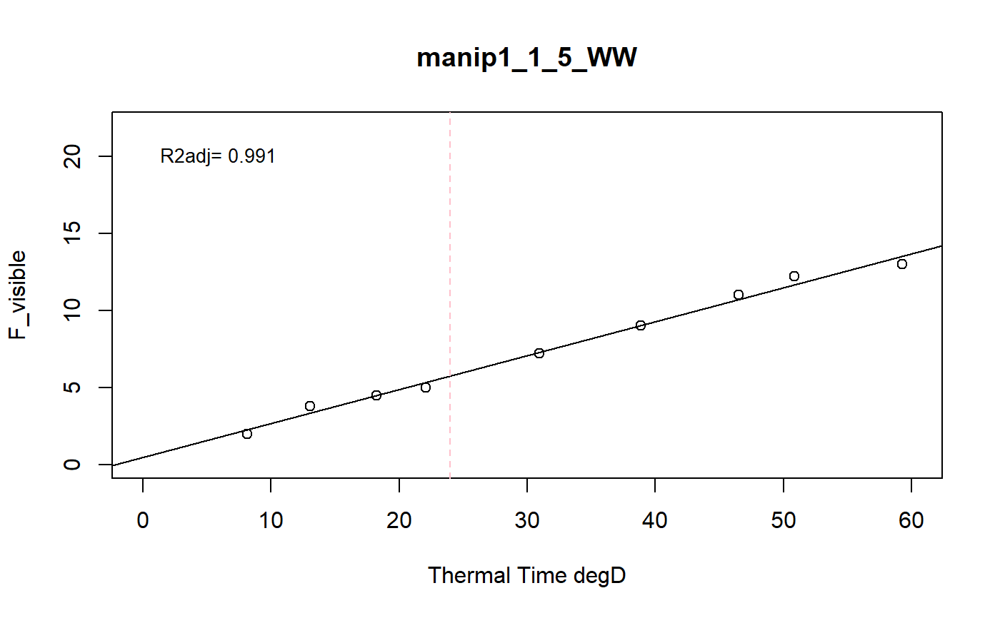

a function to model the phyllocron using a linear regression
fitReg.Rdthis function models each plant of a dataset using a regression to extract the slope (i.e. phyllocron: the rate of leaf appearance)
fitReg(datain, trait, xtime, myylim, reference, myxlab)
Arguments
| datain | input dataframe (wide format, as many columns as variables) |
|---|---|
| trait | variable to modelize (example visible_leaf, F_visible) |
| xtime | character, name of thermal time column in the input dataset (example thermaltime) |
| myylim | maximum value of y-axis for graphic |
| reference | character, a column name indicating an unique identifiant of plant (example: Ref == concatenation of experimentAlias-Line-Position-scenario) |
| myxlab | character, a x label for the output graphics |
Value
a list of two elements and the graphics of the regression
1: a dataframe of the predictions of the slope for each plant (phyllocron)
2: a list of fitted models for each plant for diagnostics purposes
Details
the input dataset must contain a thermalTime column (numeric data) and a Ref column (unique id)
Examples
# Take a while... resu<-fitReg(datain=plant2,trait="F_visible",xtime="thermalTime", myylim=22,reference="Ref", myxlab="Thermal Time degD")str(resu)#> List of 2 #> $ :'data.frame': 1680 obs. of 2 variables: #> ..$ Ref: Factor w/ 1680 levels "manip1_10_10_WW",..: 1 2 3 4 5 6 7 8 9 10 ... #> ..$ phy: num [1:1680] 0.23 0.2 0.236 0.25 0.229 ... #> $ :List of 1680 #> ..$ manip1_10_10_WW:List of 12 #> .. ..$ coefficients : Named num [1:2] 0.882 0.23 #> .. .. ..- attr(*, "names")= chr [1:2] "(Intercept)" "x" #> .. ..$ residuals : Named num [1:8] -0.2542 0.1206 -0.0782 0.1667 0.3008 ... #> .. .. ..- attr(*, "names")= chr [1:8] "1" "2" "3" "4" ... #> .. ..$ effects : Named num [1:8] -22.8042 10.8431 -0.0337 0.2353 0.3977 ... #> .. .. ..- attr(*, "names")= chr [1:8] "(Intercept)" "x" "" "" ... #> .. ..$ rank : int 2 #> .. ..$ fitted.values: Named num [1:8] 2.75 3.88 5.08 6.83 8.9 ... #> .. .. ..- attr(*, "names")= chr [1:8] "1" "2" "3" "4" ... #> .. ..$ assign : int [1:2] 0 1 #> .. ..$ qr :List of 5 #> .. .. ..$ qr : num [1:8, 1:2] -2.828 0.354 0.354 0.354 0.354 ... #> .. .. .. ..- attr(*, "dimnames")=List of 2 #> .. .. .. .. ..$ : chr [1:8] "1" "2" "3" "4" ... #> .. .. .. .. ..$ : chr [1:2] "(Intercept)" "x" #> .. .. .. ..- attr(*, "assign")= int [1:2] 0 1 #> .. .. ..$ qraux: num [1:2] 1.35 1.26 #> .. .. ..$ pivot: int [1:2] 1 2 #> .. .. ..$ tol : num 1e-07 #> .. .. ..$ rank : int 2 #> .. .. ..- attr(*, "class")= chr "qr" #> .. ..$ df.residual : int 6 #> .. ..$ xlevels : Named list() #> .. ..$ call : language lm(formula = y ~ x) #> .. ..$ terms :Classes 'terms', 'formula' language y ~ x #> .. .. .. ..- attr(*, "variables")= language list(y, x) #> .. .. .. ..- attr(*, "factors")= int [1:2, 1] 0 1 #> .. .. .. .. ..- attr(*, "dimnames")=List of 2 #> .. .. .. .. .. ..$ : chr [1:2] "y" "x" #> .. .. .. .. .. ..$ : chr "x" #> .. .. .. ..- attr(*, "term.labels")= chr "x" #> .. .. .. ..- attr(*, "order")= int 1 #> .. .. .. ..- attr(*, "intercept")= int 1 #> .. .. .. ..- attr(*, "response")= int 1 #> .. .. .. ..- attr(*, ".Environment")=<environment: 0x1b14e638> #> .. .. .. ..- attr(*, "predvars")= language list(y, x) #> .. .. .. ..- attr(*, "dataClasses")= Named chr [1:2] "numeric" "numeric" #> .. .. .. .. ..- attr(*, "names")= chr [1:2] "y" "x" #> .. ..$ model :'data.frame': 8 obs. of 2 variables: #> .. .. ..$ y: num [1:8] 2.5 4 5 7 9.2 10.5 12.5 13.8 #> .. .. ..$ x: num [1:8] 8.15 13.05 18.27 25.9 34.9 ... #> .. .. ..- attr(*, "terms")=Classes 'terms', 'formula' language y ~ x #> .. .. .. .. ..- attr(*, "variables")= language list(y, x) #> .. .. .. .. ..- attr(*, "factors")= int [1:2, 1] 0 1 #> .. .. .. .. .. ..- attr(*, "dimnames")=List of 2 #> .. .. .. .. .. .. ..$ : chr [1:2] "y" "x" #> .. .. .. .. .. .. ..$ : chr "x" #> .. .. .. .. ..- attr(*, "term.labels")= chr "x" #> .. .. .. .. ..- attr(*, "order")= int 1 #> .. .. .. .. ..- attr(*, "intercept")= int 1 #> .. .. .. .. ..- attr(*, "response")= int 1 #> .. .. .. .. ..- attr(*, ".Environment")=<environment: 0x1b14e638> #> .. .. .. .. ..- attr(*, "predvars")= language list(y, x) #> .. .. .. .. ..- attr(*, "dataClasses")= Named chr [1:2] "numeric" "numeric" #> .. .. .. .. .. ..- attr(*, "names")= chr [1:2] "y" "x" #> .. ..- attr(*, "class")= chr "lm" #> ..$ manip1_10_11_WW:List of 12 #> .. ..$ coefficients : Named num [1:2] 1.05 0.2 #> .. .. ..- attr(*, "names")= chr [1:2] "(Intercept)" "x" #> .. ..$ residuals : Named num [1:8] -0.474 0.148 -0.194 0.781 0.185 ... #> .. .. ..- attr(*, "names")= chr [1:8] "1" "2" "3" "4" ... #> .. ..$ effects : Named num [1:8] -20.612 9.423 -0.102 0.908 0.354 ... #> .. .. ..- attr(*, "names")= chr [1:8] "(Intercept)" "x" "" "" ... #> .. ..$ rank : int 2 #> .. ..$ fitted.values: Named num [1:8] 2.67 3.65 4.69 6.22 8.01 ... #> .. .. ..- attr(*, "names")= chr [1:8] "1" "2" "3" "4" ... #> .. ..$ assign : int [1:2] 0 1 #> .. ..$ qr :List of 5 #> .. .. ..$ qr : num [1:8, 1:2] -2.828 0.354 0.354 0.354 0.354 ... #> .. .. .. ..- attr(*, "dimnames")=List of 2 #> .. .. .. .. ..$ : chr [1:8] "1" "2" "3" "4" ... #> .. .. .. .. ..$ : chr [1:2] "(Intercept)" "x" #> .. .. .. ..- attr(*, "assign")= int [1:2] 0 1 #> .. .. ..$ qraux: num [1:2] 1.35 1.26 #> .. .. ..$ pivot: int [1:2] 1 2 #> .. .. ..$ tol : num 1e-07 #> .. .. ..$ rank : int 2 #> .. .. ..- attr(*, "class")= chr "qr" #> .. ..$ df.residual : int 6 #> .. ..$ xlevels : Named list() #> .. ..$ call : language lm(formula = y ~ x) #> .. ..$ terms :Classes 'terms', 'formula' language y ~ x #> .. .. .. ..- attr(*, "variables")= language list(y, x) #> .. .. .. ..- attr(*, "factors")= int [1:2, 1] 0 1 #> .. .. .. .. ..- attr(*, "dimnames")=List of 2 #> .. .. .. .. .. ..$ : chr [1:2] "y" "x" #> .. .. .. .. .. ..$ : chr "x" #> .. .. .. ..- attr(*, "term.labels")= chr "x" #> .. .. .. ..- attr(*, "order")= int 1 #> .. .. .. ..- attr(*, "intercept")= int 1 #> .. .. .. ..- attr(*, "response")= int 1 #> .. .. .. ..- attr(*, ".Environment")=<environment: 0x1b14e638> #> .. .. .. ..- attr(*, "predvars")= language list(y, x) #> .. .. .. ..- attr(*, "dataClasses")= Named chr [1:2] "numeric" "numeric" #> .. .. .. .. ..- attr(*, "names")= chr [1:2] "y" "x" #> .. ..$ model :'data.frame': 8 obs. of 2 variables: #> .. .. ..$ y: num [1:8] 2.2 3.8 4.5 7 8.2 9.2 11.2 12.2 #> .. .. ..$ x: num [1:8] 8.15 13.05 18.27 25.9 34.9 ... #> .. .. ..- attr(*, "terms")=Classes 'terms', 'formula' language y ~ x #> .. .. .. .. ..- attr(*, "variables")= language list(y, x) #> .. .. .. .. ..- attr(*, "factors")= int [1:2, 1] 0 1 #> .. .. .. .. .. ..- attr(*, "dimnames")=List of 2 #> .. .. .. .. .. .. ..$ : chr [1:2] "y" "x" #> .. .. .. .. .. .. ..$ : chr "x" #> .. .. .. .. ..- attr(*, "term.labels")= chr "x" #> .. .. .. .. ..- attr(*, "order")= int 1 #> .. .. .. .. ..- attr(*, "intercept")= int 1 #> .. .. .. .. ..- attr(*, "response")= int 1 #> .. .. .. .. ..- attr(*, ".Environment")=<environment: 0x1b14e638> #> .. .. .. .. ..- attr(*, "predvars")= language list(y, x) #> .. .. .. .. ..- attr(*, "dataClasses")= Named chr [1:2] "numeric" "numeric" #> .. .. .. .. .. ..- attr(*, "names")= chr [1:2] "y" "x" #> .. ..- attr(*, "class")= chr "lm" #> ..$ manip1_10_12_WW:List of 12 #> .. ..$ coefficients : Named num [1:2] 0.773 0.236 #> .. .. ..- attr(*, "names")= chr [1:2] "(Intercept)" "x" #> .. ..$ residuals : Named num [1:7] -0.19474 0.15041 -0.07993 0.11878 -0.00148 ... #> .. .. ..- attr(*, "names")= chr [1:7] "1" "2" "3" "4" ... #> .. ..$ effects : Named num [1:7] -19.2762 9.0944 -0.0436 0.1877 0.1057 ... #> .. .. ..- attr(*, "names")= chr [1:7] "(Intercept)" "x" "" "" ... #> .. ..$ rank : int 2 #> .. ..$ fitted.values: Named num [1:7] 2.69 3.85 5.08 6.88 9 ... #> .. .. ..- attr(*, "names")= chr [1:7] "1" "2" "3" "4" ... #> .. ..$ assign : int [1:2] 0 1 #> .. ..$ qr :List of 5 #> .. .. ..$ qr : num [1:7, 1:2] -2.646 0.378 0.378 0.378 0.378 ... #> .. .. .. ..- attr(*, "dimnames")=List of 2 #> .. .. .. .. ..$ : chr [1:7] "1" "2" "3" "4" ... #> .. .. .. .. ..$ : chr [1:2] "(Intercept)" "x" #> .. .. .. ..- attr(*, "assign")= int [1:2] 0 1 #> .. .. ..$ qraux: num [1:2] 1.38 1.24 #> .. .. ..$ pivot: int [1:2] 1 2 #> .. .. ..$ tol : num 1e-07 #> .. .. ..$ rank : int 2 #> .. .. ..- attr(*, "class")= chr "qr" #> .. ..$ df.residual : int 5 #> .. ..$ xlevels : Named list() #> .. ..$ call : language lm(formula = y ~ x) #> .. ..$ terms :Classes 'terms', 'formula' language y ~ x #> .. .. .. ..- attr(*, "variables")= language list(y, x) #> .. .. .. ..- attr(*, "factors")= int [1:2, 1] 0 1 #> .. .. .. .. ..- attr(*, "dimnames")=List of 2 #> .. .. .. .. .. ..$ : chr [1:2] "y" "x" #> .. .. .. .. .. ..$ : chr "x" #> .. .. .. ..- attr(*, "term.labels")= chr "x" #> .. .. .. ..- attr(*, "order")= int 1 #> .. .. .. ..- attr(*, "intercept")= int 1 #> .. .. .. ..- attr(*, "response")= int 1 #> .. .. .. ..- attr(*, ".Environment")=<environment: 0x1b14e638> #> .. .. .. ..- attr(*, "predvars")= language list(y, x) #> .. .. .. ..- attr(*, "dataClasses")= Named chr [1:2] "numeric" "numeric" #> .. .. .. .. ..- attr(*, "names")= chr [1:2] "y" "x" #> .. ..$ model :'data.frame': 7 obs. of 2 variables: #> .. .. ..$ y: num [1:7] 2.5 4 5 7 9 11 12.5 #> .. .. ..$ x: num [1:7] 8.15 13.05 18.27 25.9 34.9 ... #> .. .. ..- attr(*, "terms")=Classes 'terms', 'formula' language y ~ x #> .. .. .. .. ..- attr(*, "variables")= language list(y, x) #> .. .. .. .. ..- attr(*, "factors")= int [1:2, 1] 0 1 #> .. .. .. .. .. ..- attr(*, "dimnames")=List of 2 #> .. .. .. .. .. .. ..$ : chr [1:2] "y" "x" #> .. .. .. .. .. .. ..$ : chr "x" #> .. .. .. .. ..- attr(*, "term.labels")= chr "x" #> .. .. .. .. ..- attr(*, "order")= int 1 #> .. .. .. .. ..- attr(*, "intercept")= int 1 #> .. .. .. .. ..- attr(*, "response")= int 1 #> .. .. .. .. ..- attr(*, ".Environment")=<environment: 0x1b14e638> #> .. .. .. .. ..- attr(*, "predvars")= language list(y, x) #> .. .. .. .. ..- attr(*, "dataClasses")= Named chr [1:2] "numeric" "numeric" #> .. .. .. .. .. ..- attr(*, "names")= chr [1:2] "y" "x" #> .. ..- attr(*, "class")= chr "lm" #> ..$ manip1_10_13_WW:List of 12 #> .. ..$ coefficients : Named num [1:2] 0.554 0.25 #> .. .. ..- attr(*, "names")= chr [1:2] "(Intercept)" "x" #> .. ..$ residuals : Named num [1:7] -0.3952 0.1782 0.0714 0.1582 0.2062 ... #> .. .. ..- attr(*, "names")= chr [1:7] "1" "2" "3" "4" ... #> .. ..$ effects : Named num [1:7] -19.768 9.66 0.156 0.288 0.39 ... #> .. .. ..- attr(*, "names")= chr [1:7] "(Intercept)" "x" "" "" ... #> .. ..$ rank : int 2 #> .. ..$ fitted.values: Named num [1:7] 2.6 3.82 5.13 7.04 9.29 ... #> .. .. ..- attr(*, "names")= chr [1:7] "1" "2" "3" "4" ... #> .. ..$ assign : int [1:2] 0 1 #> .. ..$ qr :List of 5 #> .. .. ..$ qr : num [1:7, 1:2] -2.646 0.378 0.378 0.378 0.378 ... #> .. .. .. ..- attr(*, "dimnames")=List of 2 #> .. .. .. .. ..$ : chr [1:7] "1" "2" "3" "4" ... #> .. .. .. .. ..$ : chr [1:2] "(Intercept)" "x" #> .. .. .. ..- attr(*, "assign")= int [1:2] 0 1 #> .. .. ..$ qraux: num [1:2] 1.38 1.24 #> .. .. ..$ pivot: int [1:2] 1 2 #> .. .. ..$ tol : num 1e-07 #> .. .. ..$ rank : int 2 #> .. .. ..- attr(*, "class")= chr "qr" #> .. ..$ df.residual : int 5 #> .. ..$ xlevels : Named list() #> .. ..$ call : language lm(formula = y ~ x) #> .. ..$ terms :Classes 'terms', 'formula' language y ~ x #> .. .. .. ..- attr(*, "variables")= language list(y, x) #> .. .. .. ..- attr(*, "factors")= int [1:2, 1] 0 1 #> .. .. .. .. ..- attr(*, "dimnames")=List of 2 #> .. .. .. .. .. ..$ : chr [1:2] "y" "x" #> .. .. .. .. .. ..$ : chr "x" #> .. .. .. ..- attr(*, "term.labels")= chr "x" #> .. .. .. ..- attr(*, "order")= int 1 #> .. .. .. ..- attr(*, "intercept")= int 1 #> .. .. .. ..- attr(*, "response")= int 1 #> .. .. .. ..- attr(*, ".Environment")=<environment: 0x1b14e638> #> .. .. .. ..- attr(*, "predvars")= language list(y, x) #> .. .. .. ..- attr(*, "dataClasses")= Named chr [1:2] "numeric" "numeric" #> .. .. .. .. ..- attr(*, "names")= chr [1:2] "y" "x" #> .. ..$ model :'data.frame': 7 obs. of 2 variables: #> .. .. ..$ y: num [1:7] 2.2 4 5.2 7.2 9.5 11.2 13 #> .. .. ..$ x: num [1:7] 8.15 13.05 18.27 25.9 34.9 ... #> .. .. ..- attr(*, "terms")=Classes 'terms', 'formula' language y ~ x #> .. .. .. .. ..- attr(*, "variables")= language list(y, x) #> .. .. .. .. ..- attr(*, "factors")= int [1:2, 1] 0 1 #> .. .. .. .. .. ..- attr(*, "dimnames")=List of 2 #> .. .. .. .. .. .. ..$ : chr [1:2] "y" "x" #> .. .. .. .. .. .. ..$ : chr "x" #> .. .. .. .. ..- attr(*, "term.labels")= chr "x" #> .. .. .. .. ..- attr(*, "order")= int 1 #> .. .. .. .. ..- attr(*, "intercept")= int 1 #> .. .. .. .. ..- attr(*, "response")= int 1 #> .. .. .. .. ..- attr(*, ".Environment")=<environment: 0x1b14e638> #> .. .. .. .. ..- attr(*, "predvars")= language list(y, x) #> .. .. .. .. ..- attr(*, "dataClasses")= Named chr [1:2] "numeric" "numeric" #> .. .. .. .. .. ..- attr(*, "names")= chr [1:2] "y" "x" #> .. ..- attr(*, "class")= chr "lm" #> ..$ manip1_10_14_WW:List of 12 #> .. ..$ coefficients : Named num [1:2] 1.107 0.229 #> .. .. ..- attr(*, "names")= chr [1:2] "(Intercept)" "x" #> .. ..$ residuals : Named num [1:7] -0.1764 0.1001 -0.0969 0.1507 0.0879 ... #> .. .. ..- attr(*, "names")= chr [1:7] "1" "2" "3" "4" ... #> .. ..$ effects : Named num [1:7] -19.692 8.848 -0.061 0.21 0.175 ... #> .. .. ..- attr(*, "names")= chr [1:7] "(Intercept)" "x" "" "" ... #> .. ..$ rank : int 2 #> .. ..$ fitted.values: Named num [1:7] 2.98 4.1 5.3 7.05 9.11 ... #> .. .. ..- attr(*, "names")= chr [1:7] "1" "2" "3" "4" ... #> .. ..$ assign : int [1:2] 0 1 #> .. ..$ qr :List of 5 #> .. .. ..$ qr : num [1:7, 1:2] -2.646 0.378 0.378 0.378 0.378 ... #> .. .. .. ..- attr(*, "dimnames")=List of 2 #> .. .. .. .. ..$ : chr [1:7] "1" "2" "3" "4" ... #> .. .. .. .. ..$ : chr [1:2] "(Intercept)" "x" #> .. .. .. ..- attr(*, "assign")= int [1:2] 0 1 #> .. .. ..$ qraux: num [1:2] 1.38 1.24 #> .. .. ..$ pivot: int [1:2] 1 2 #> .. .. ..$ tol : num 1e-07 #> .. .. ..$ rank : int 2 #> .. .. ..- attr(*, "class")= chr "qr" #> .. ..$ df.residual : int 5 #> .. ..$ xlevels : Named list() #> .. ..$ call : language lm(formula = y ~ x) #> .. ..$ terms :Classes 'terms', 'formula' language y ~ x #> .. .. .. ..- attr(*, "variables")= language list(y, x) #> .. .. .. ..- attr(*, "factors")= int [1:2, 1] 0 1 #> .. .. .. .. ..- attr(*, "dimnames")=List of 2 #> .. .. .. .. .. ..$ : chr [1:2] "y" "x" #> .. .. .. .. .. ..$ : chr "x" #> .. .. .. ..- attr(*, "term.labels")= chr "x" #> .. .. .. ..- attr(*, "order")= int 1 #> .. .. .. ..- attr(*, "intercept")= int 1 #> .. .. .. ..- attr(*, "response")= int 1 #> .. .. .. ..- attr(*, ".Environment")=<environment: 0x1b14e638> #> .. .. .. ..- attr(*, "predvars")= language list(y, x) #> .. .. .. ..- attr(*, "dataClasses")= Named chr [1:2] "numeric" "numeric" #> .. .. .. .. ..- attr(*, "names")= chr [1:2] "y" "x" #> .. ..$ model :'data.frame': 7 obs. of 2 variables: #> .. .. ..$ y: num [1:7] 2.8 4.2 5.2 7.2 9.2 11 12.5 #> .. .. ..$ x: num [1:7] 8.15 13.05 18.27 25.9 34.9 ... #> .. .. ..- attr(*, "terms")=Classes 'terms', 'formula' language y ~ x #> .. .. .. .. ..- attr(*, "variables")= language list(y, x) #> .. .. .. .. ..- attr(*, "factors")= int [1:2, 1] 0 1 #> .. .. .. .. .. ..- attr(*, "dimnames")=List of 2 #> .. .. .. .. .. .. ..$ : chr [1:2] "y" "x" #> .. .. .. .. .. .. ..$ : chr "x" #> .. .. .. .. ..- attr(*, "term.labels")= chr "x" #> .. .. .. .. ..- attr(*, "order")= int 1 #> .. .. .. .. ..- attr(*, "intercept")= int 1 #> .. .. .. .. ..- attr(*, "response")= int 1 #> .. .. .. .. ..- attr(*, ".Environment")=<environment: 0x1b14e638> #> .. .. .. .. ..- attr(*, "predvars")= language list(y, x) #> .. .. .. .. ..- attr(*, "dataClasses")= Named chr [1:2] "numeric" "numeric" #> .. .. .. .. .. ..- attr(*, "names")= chr [1:2] "y" "x" #> .. ..- attr(*, "class")= chr "lm" #> ..$ manip1_10_15_WW:List of 12 #> .. ..$ coefficients : Named num [1:2] 1.25 0.21 #> .. .. ..- attr(*, "names")= chr [1:2] "(Intercept)" "x" #> .. ..$ residuals : Named num [1:8] -0.4551 0.2179 -0.0762 0.3219 0.4364 ... #> .. .. ..- attr(*, "names")= chr [1:8] "1" "2" "3" "4" ... #> .. ..$ effects : Named num [1:8] -22.0617 9.8966 0.0032 0.4447 0.6101 ... #> .. .. ..- attr(*, "names")= chr [1:8] "(Intercept)" "x" "" "" ... #> .. ..$ rank : int 2 #> .. ..$ fitted.values: Named num [1:8] 2.96 3.98 5.08 6.68 8.56 ... #> .. .. ..- attr(*, "names")= chr [1:8] "1" "2" "3" "4" ... #> .. ..$ assign : int [1:2] 0 1 #> .. ..$ qr :List of 5 #> .. .. ..$ qr : num [1:8, 1:2] -2.828 0.354 0.354 0.354 0.354 ... #> .. .. .. ..- attr(*, "dimnames")=List of 2 #> .. .. .. .. ..$ : chr [1:8] "1" "2" "3" "4" ... #> .. .. .. .. ..$ : chr [1:2] "(Intercept)" "x" #> .. .. .. ..- attr(*, "assign")= int [1:2] 0 1 #> .. .. ..$ qraux: num [1:2] 1.35 1.26 #> .. .. ..$ pivot: int [1:2] 1 2 #> .. .. ..$ tol : num 1e-07 #> .. .. ..$ rank : int 2 #> .. .. ..- attr(*, "class")= chr "qr" #> .. ..$ df.residual : int 6 #> .. ..$ xlevels : Named list() #> .. ..$ call : language lm(formula = y ~ x) #> .. ..$ terms :Classes 'terms', 'formula' language y ~ x #> .. .. .. ..- attr(*, "variables")= language list(y, x) #> .. .. .. ..- attr(*, "factors")= int [1:2, 1] 0 1 #> .. .. .. .. ..- attr(*, "dimnames")=List of 2 #> .. .. .. .. .. ..$ : chr [1:2] "y" "x" #> .. .. .. .. .. ..$ : chr "x" #> .. .. .. ..- attr(*, "term.labels")= chr "x" #> .. .. .. ..- attr(*, "order")= int 1 #> .. .. .. ..- attr(*, "intercept")= int 1 #> .. .. .. ..- attr(*, "response")= int 1 #> .. .. .. ..- attr(*, ".Environment")=<environment: 0x1b14e638> #> .. .. .. ..- attr(*, "predvars")= language list(y, x) #> .. .. .. ..- attr(*, "dataClasses")= Named chr [1:2] "numeric" "numeric" #> .. .. .. .. ..- attr(*, "names")= chr [1:2] "y" "x" #> .. ..$ model :'data.frame': 8 obs. of 2 variables: #> .. .. ..$ y: num [1:8] 2.5 4.2 5 7 9 10.2 11 13.5 #> .. .. ..$ x: num [1:8] 8.15 13.05 18.27 25.9 34.9 ... #> .. .. ..- attr(*, "terms")=Classes 'terms', 'formula' language y ~ x #> .. .. .. .. ..- attr(*, "variables")= language list(y, x) #> .. .. .. .. ..- attr(*, "factors")= int [1:2, 1] 0 1 #> .. .. .. .. .. ..- attr(*, "dimnames")=List of 2 #> .. .. .. .. .. .. ..$ : chr [1:2] "y" "x" #> .. .. .. .. .. .. ..$ : chr "x" #> .. .. .. .. ..- attr(*, "term.labels")= chr "x" #> .. .. .. .. ..- attr(*, "order")= int 1 #> .. .. .. .. ..- attr(*, "intercept")= int 1 #> .. .. .. .. ..- attr(*, "response")= int 1 #> .. .. .. .. ..- attr(*, ".Environment")=<environment: 0x1b14e638> #> .. .. .. .. ..- attr(*, "predvars")= language list(y, x) #> .. .. .. .. ..- attr(*, "dataClasses")= Named chr [1:2] "numeric" "numeric" #> .. .. .. .. .. ..- attr(*, "names")= chr [1:2] "y" "x" #> .. ..- attr(*, "class")= chr "lm" #> ..$ manip1_10_16_WW:List of 12 #> .. ..$ coefficients : Named num [1:2] 0.738 0.248 #> .. .. ..- attr(*, "names")= chr [1:2] "(Intercept)" "x" #> .. ..$ residuals : Named num [1:7] -0.2584 0.2273 -0.0664 0.0396 0.6102 ... #> .. .. ..- attr(*, "names")= chr [1:7] "1" "2" "3" "4" ... #> .. ..$ effects : Named num [1:7] -20.0699 9.5625 -0.0205 0.1331 0.7598 ... #> .. .. ..- attr(*, "names")= chr [1:7] "(Intercept)" "x" "" "" ... #> .. ..$ rank : int 2 #> .. ..$ fitted.values: Named num [1:7] 2.76 3.97 5.27 7.16 9.39 ... #> .. .. ..- attr(*, "names")= chr [1:7] "1" "2" "3" "4" ... #> .. ..$ assign : int [1:2] 0 1 #> .. ..$ qr :List of 5 #> .. .. ..$ qr : num [1:7, 1:2] -2.646 0.378 0.378 0.378 0.378 ... #> .. .. .. ..- attr(*, "dimnames")=List of 2 #> .. .. .. .. ..$ : chr [1:7] "1" "2" "3" "4" ... #> .. .. .. .. ..$ : chr [1:2] "(Intercept)" "x" #> .. .. .. ..- attr(*, "assign")= int [1:2] 0 1 #> .. .. ..$ qraux: num [1:2] 1.38 1.24 #> .. .. ..$ pivot: int [1:2] 1 2 #> .. .. ..$ tol : num 1e-07 #> .. .. ..$ rank : int 2 #> .. .. ..- attr(*, "class")= chr "qr" #> .. ..$ df.residual : int 5 #> .. ..$ xlevels : Named list() #> .. ..$ call : language lm(formula = y ~ x) #> .. ..$ terms :Classes 'terms', 'formula' language y ~ x #> .. .. .. ..- attr(*, "variables")= language list(y, x) #> .. .. .. ..- attr(*, "factors")= int [1:2, 1] 0 1 #> .. .. .. .. ..- attr(*, "dimnames")=List of 2 #> .. .. .. .. .. ..$ : chr [1:2] "y" "x" #> .. .. .. .. .. ..$ : chr "x" #> .. .. .. ..- attr(*, "term.labels")= chr "x" #> .. .. .. ..- attr(*, "order")= int 1 #> .. .. .. ..- attr(*, "intercept")= int 1 #> .. .. .. ..- attr(*, "response")= int 1 #> .. .. .. ..- attr(*, ".Environment")=<environment: 0x1b14e638> #> .. .. .. ..- attr(*, "predvars")= language list(y, x) #> .. .. .. ..- attr(*, "dataClasses")= Named chr [1:2] "numeric" "numeric" #> .. .. .. .. ..- attr(*, "names")= chr [1:2] "y" "x" #> .. ..$ model :'data.frame': 7 obs. of 2 variables: #> .. .. ..$ y: num [1:7] 2.5 4.2 5.2 7.2 10 10.5 13.5 #> .. .. ..$ x: num [1:7] 8.15 13.05 18.27 25.9 34.9 ... #> .. .. ..- attr(*, "terms")=Classes 'terms', 'formula' language y ~ x #> .. .. .. .. ..- attr(*, "variables")= language list(y, x) #> .. .. .. .. ..- attr(*, "factors")= int [1:2, 1] 0 1 #> .. .. .. .. .. ..- attr(*, "dimnames")=List of 2 #> .. .. .. .. .. .. ..$ : chr [1:2] "y" "x" #> .. .. .. .. .. .. ..$ : chr "x" #> .. .. .. .. ..- attr(*, "term.labels")= chr "x" #> .. .. .. .. ..- attr(*, "order")= int 1 #> .. .. .. .. ..- attr(*, "intercept")= int 1 #> .. .. .. .. ..- attr(*, "response")= int 1 #> .. .. .. .. ..- attr(*, ".Environment")=<environment: 0x1b14e638> #> .. .. .. .. ..- attr(*, "predvars")= language list(y, x) #> .. .. .. .. ..- attr(*, "dataClasses")= Named chr [1:2] "numeric" "numeric" #> .. .. .. .. .. ..- attr(*, "names")= chr [1:2] "y" "x" #> .. ..- attr(*, "class")= chr "lm" #> ..$ manip1_10_17_WW:List of 12 #> .. ..$ coefficients : Named num [1:2] 0.485 0.238 #> .. .. ..- attr(*, "names")= chr [1:2] "(Intercept)" "x" #> .. ..$ residuals : Named num [1:7] -0.224 0.411 -0.031 -0.449 0.411 ... #> .. .. ..- attr(*, "names")= chr [1:7] "1" "2" "3" "4" ... #> .. ..$ effects : Named num [1:7] -18.67144 9.17817 -0.00927 -0.35171 0.5973 ... #> .. .. ..- attr(*, "names")= chr [1:7] "(Intercept)" "x" "" "" ... #> .. ..$ rank : int 2 #> .. ..$ fitted.values: Named num [1:7] 2.42 3.59 4.83 6.65 8.79 ... #> .. .. ..- attr(*, "names")= chr [1:7] "1" "2" "3" "4" ... #> .. ..$ assign : int [1:2] 0 1 #> .. ..$ qr :List of 5 #> .. .. ..$ qr : num [1:7, 1:2] -2.646 0.378 0.378 0.378 0.378 ... #> .. .. .. ..- attr(*, "dimnames")=List of 2 #> .. .. .. .. ..$ : chr [1:7] "1" "2" "3" "4" ... #> .. .. .. .. ..$ : chr [1:2] "(Intercept)" "x" #> .. .. .. ..- attr(*, "assign")= int [1:2] 0 1 #> .. .. ..$ qraux: num [1:2] 1.38 1.24 #> .. .. ..$ pivot: int [1:2] 1 2 #> .. .. ..$ tol : num 1e-07 #> .. .. ..$ rank : int 2 #> .. .. ..- attr(*, "class")= chr "qr" #> .. ..$ df.residual : int 5 #> .. ..$ xlevels : Named list() #> .. ..$ call : language lm(formula = y ~ x) #> .. ..$ terms :Classes 'terms', 'formula' language y ~ x #> .. .. .. ..- attr(*, "variables")= language list(y, x) #> .. .. .. ..- attr(*, "factors")= int [1:2, 1] 0 1 #> .. .. .. .. ..- attr(*, "dimnames")=List of 2 #> .. .. .. .. .. ..$ : chr [1:2] "y" "x" #> .. .. .. .. .. ..$ : chr "x" #> .. .. .. ..- attr(*, "term.labels")= chr "x" #> .. .. .. ..- attr(*, "order")= int 1 #> .. .. .. ..- attr(*, "intercept")= int 1 #> .. .. .. ..- attr(*, "response")= int 1 #> .. .. .. ..- attr(*, ".Environment")=<environment: 0x1b14e638> #> .. .. .. ..- attr(*, "predvars")= language list(y, x) #> .. .. .. ..- attr(*, "dataClasses")= Named chr [1:2] "numeric" "numeric" #> .. .. .. .. ..- attr(*, "names")= chr [1:2] "y" "x" #> .. ..$ model :'data.frame': 7 obs. of 2 variables: #> .. .. ..$ y: num [1:7] 2.2 4 4.8 6.2 9.2 10.5 12.5 #> .. .. ..$ x: num [1:7] 8.15 13.05 18.27 25.9 34.9 ... #> .. .. ..- attr(*, "terms")=Classes 'terms', 'formula' language y ~ x #> .. .. .. .. ..- attr(*, "variables")= language list(y, x) #> .. .. .. .. ..- attr(*, "factors")= int [1:2, 1] 0 1 #> .. .. .. .. .. ..- attr(*, "dimnames")=List of 2 #> .. .. .. .. .. .. ..$ : chr [1:2] "y" "x" #> .. .. .. .. .. .. ..$ : chr "x" #> .. .. .. .. ..- attr(*, "term.labels")= chr "x" #> .. .. .. .. ..- attr(*, "order")= int 1 #> .. .. .. .. ..- attr(*, "intercept")= int 1 #> .. .. .. .. ..- attr(*, "response")= int 1 #> .. .. .. .. ..- attr(*, ".Environment")=<environment: 0x1b14e638> #> .. .. .. .. ..- attr(*, "predvars")= language list(y, x) #> .. .. .. .. ..- attr(*, "dataClasses")= Named chr [1:2] "numeric" "numeric" #> .. .. .. .. .. ..- attr(*, "names")= chr [1:2] "y" "x" #> .. ..- attr(*, "class")= chr "lm" #> ..$ manip1_10_18_WW:List of 12 #> .. ..$ coefficients : Named num [1:2] 0.502 0.244 #> .. .. ..- attr(*, "names")= chr [1:2] "(Intercept)" "x" #> .. ..$ residuals : Named num [1:7] -0.2908 0.1138 0.0403 0.1758 0.4812 ... #> .. .. ..- attr(*, "names")= chr [1:7] "1" "2" "3" "4" ... #> .. ..$ effects : Named num [1:7] -19.163 9.413 0.104 0.27 0.612 ... #> .. .. ..- attr(*, "names")= chr [1:7] "(Intercept)" "x" "" "" ... #> .. ..$ rank : int 2 #> .. ..$ fitted.values: Named num [1:7] 2.49 3.69 4.96 6.82 9.02 ... #> .. .. ..- attr(*, "names")= chr [1:7] "1" "2" "3" "4" ... #> .. ..$ assign : int [1:2] 0 1 #> .. ..$ qr :List of 5 #> .. .. ..$ qr : num [1:7, 1:2] -2.646 0.378 0.378 0.378 0.378 ... #> .. .. .. ..- attr(*, "dimnames")=List of 2 #> .. .. .. .. ..$ : chr [1:7] "1" "2" "3" "4" ... #> .. .. .. .. ..$ : chr [1:2] "(Intercept)" "x" #> .. .. .. ..- attr(*, "assign")= int [1:2] 0 1 #> .. .. ..$ qraux: num [1:2] 1.38 1.24 #> .. .. ..$ pivot: int [1:2] 1 2 #> .. .. ..$ tol : num 1e-07 #> .. .. ..$ rank : int 2 #> .. .. ..- attr(*, "class")= chr "qr" #> .. ..$ df.residual : int 5 #> .. ..$ xlevels : Named list() #> .. ..$ call : language lm(formula = y ~ x) #> .. ..$ terms :Classes 'terms', 'formula' language y ~ x #> .. .. .. ..- attr(*, "variables")= language list(y, x) #> .. .. .. ..- attr(*, "factors")= int [1:2, 1] 0 1 #> .. .. .. .. ..- attr(*, "dimnames")=List of 2 #> .. .. .. .. .. ..$ : chr [1:2] "y" "x" #> .. .. .. .. .. ..$ : chr "x" #> .. .. .. ..- attr(*, "term.labels")= chr "x" #> .. .. .. ..- attr(*, "order")= int 1 #> .. .. .. ..- attr(*, "intercept")= int 1 #> .. .. .. ..- attr(*, "response")= int 1 #> .. .. .. ..- attr(*, ".Environment")=<environment: 0x1b14e638> #> .. .. .. ..- attr(*, "predvars")= language list(y, x) #> .. .. .. ..- attr(*, "dataClasses")= Named chr [1:2] "numeric" "numeric" #> .. .. .. .. ..- attr(*, "names")= chr [1:2] "y" "x" #> .. ..$ model :'data.frame': 7 obs. of 2 variables: #> .. .. ..$ y: num [1:7] 2.2 3.8 5 7 9.5 10.2 13 #> .. .. ..$ x: num [1:7] 8.15 13.05 18.27 25.9 34.9 ... #> .. .. ..- attr(*, "terms")=Classes 'terms', 'formula' language y ~ x #> .. .. .. .. ..- attr(*, "variables")= language list(y, x) #> .. .. .. .. ..- attr(*, "factors")= int [1:2, 1] 0 1 #> .. .. .. .. .. ..- attr(*, "dimnames")=List of 2 #> .. .. .. .. .. .. ..$ : chr [1:2] "y" "x" #> .. .. .. .. .. .. ..$ : chr "x" #> .. .. .. .. ..- attr(*, "term.labels")= chr "x" #> .. .. .. .. ..- attr(*, "order")= int 1 #> .. .. .. .. ..- attr(*, "intercept")= int 1 #> .. .. .. .. ..- attr(*, "response")= int 1 #> .. .. .. .. ..- attr(*, ".Environment")=<environment: 0x1b14e638> #> .. .. .. .. ..- attr(*, "predvars")= language list(y, x) #> .. .. .. .. ..- attr(*, "dataClasses")= Named chr [1:2] "numeric" "numeric" #> .. .. .. .. .. ..- attr(*, "names")= chr [1:2] "y" "x" #> .. ..- attr(*, "class")= chr "lm" #> ..$ manip1_10_19_WW:List of 12 #> .. ..$ coefficients : Named num [1:2] 0.728 0.212 #> .. .. ..- attr(*, "names")= chr [1:2] "(Intercept)" "x" #> .. ..$ residuals : Named num [1:7] 0.00982 -0.09466 -0.01168 0.08496 -0.1695 ... #> .. .. ..- attr(*, "names")= chr [1:7] "1" "2" "3" "4" ... #> .. ..$ effects : Named num [1:7] -21.2794 8.51268 -0.00908 0.07026 -0.19833 ... #> .. .. ..- attr(*, "names")= chr [1:7] "(Intercept)" "x" "" "" ... #> .. ..$ rank : int 2 #> .. ..$ fitted.values: Named num [1:7] 3.49 4.59 6.21 8.12 9.67 ... #> .. .. ..- attr(*, "names")= chr [1:7] "1" "2" "3" "4" ... #> .. ..$ assign : int [1:2] 0 1 #> .. ..$ qr :List of 5 #> .. .. ..$ qr : num [1:7, 1:2] -2.646 0.378 0.378 0.378 0.378 ... #> .. .. .. ..- attr(*, "dimnames")=List of 2 #> .. .. .. .. ..$ : chr [1:7] "1" "2" "3" "4" ... #> .. .. .. .. ..$ : chr [1:2] "(Intercept)" "x" #> .. .. .. ..- attr(*, "assign")= int [1:2] 0 1 #> .. .. ..$ qraux: num [1:2] 1.38 1.26 #> .. .. ..$ pivot: int [1:2] 1 2 #> .. .. ..$ tol : num 1e-07 #> .. .. ..$ rank : int 2 #> .. .. ..- attr(*, "class")= chr "qr" #> .. ..$ df.residual : int 5 #> .. ..$ xlevels : Named list() #> .. ..$ call : language lm(formula = y ~ x) #> .. ..$ terms :Classes 'terms', 'formula' language y ~ x #> .. .. .. ..- attr(*, "variables")= language list(y, x) #> .. .. .. ..- attr(*, "factors")= int [1:2, 1] 0 1 #> .. .. .. .. ..- attr(*, "dimnames")=List of 2 #> .. .. .. .. .. ..$ : chr [1:2] "y" "x" #> .. .. .. .. .. ..$ : chr "x" #> .. .. .. ..- attr(*, "term.labels")= chr "x" #> .. .. .. ..- attr(*, "order")= int 1 #> .. .. .. ..- attr(*, "intercept")= int 1 #> .. .. .. ..- attr(*, "response")= int 1 #> .. .. .. ..- attr(*, ".Environment")=<environment: 0x1b14e638> #> .. .. .. ..- attr(*, "predvars")= language list(y, x) #> .. .. .. ..- attr(*, "dataClasses")= Named chr [1:2] "numeric" "numeric" #> .. .. .. .. ..- attr(*, "names")= chr [1:2] "y" "x" #> .. ..$ model :'data.frame': 7 obs. of 2 variables: #> .. .. ..$ y: num [1:7] 3.5 4.5 6.2 8.2 9.5 12.2 12.2 #> .. .. ..$ x: num [1:7] 13 18.3 25.9 34.9 42.2 ... #> .. .. ..- attr(*, "terms")=Classes 'terms', 'formula' language y ~ x #> .. .. .. .. ..- attr(*, "variables")= language list(y, x) #> .. .. .. .. ..- attr(*, "factors")= int [1:2, 1] 0 1 #> .. .. .. .. .. ..- attr(*, "dimnames")=List of 2 #> .. .. .. .. .. .. ..$ : chr [1:2] "y" "x" #> .. .. .. .. .. .. ..$ : chr "x" #> .. .. .. .. ..- attr(*, "term.labels")= chr "x" #> .. .. .. .. ..- attr(*, "order")= int 1 #> .. .. .. .. ..- attr(*, "intercept")= int 1 #> .. .. .. .. ..- attr(*, "response")= int 1 #> .. .. .. .. ..- attr(*, ".Environment")=<environment: 0x1b14e638> #> .. .. .. .. ..- attr(*, "predvars")= language list(y, x) #> .. .. .. .. ..- attr(*, "dataClasses")= Named chr [1:2] "numeric" "numeric" #> .. .. .. .. .. ..- attr(*, "names")= chr [1:2] "y" "x" #> .. ..- attr(*, "class")= chr "lm" #> ..$ manip1_10_1_WW :List of 12 #> .. ..$ coefficients : Named num [1:2] 0.902 0.237 #> .. .. ..- attr(*, "names")= chr [1:2] "(Intercept)" "x" #> .. ..$ residuals : Named num [1:7] 0.1637 0.2014 -0.437 -0.05 0.0159 ... #> .. .. ..- attr(*, "names")= chr [1:7] "1" "2" "3" "4" ... #> .. ..$ effects : Named num [1:7] -19.7297 9.1537 -0.495 -0.0831 0.0123 ... #> .. .. ..- attr(*, "names")= chr [1:7] "(Intercept)" "x" "" "" ... #> .. ..$ rank : int 2 #> .. ..$ fitted.values: Named num [1:7] 2.84 4 5.24 7.05 9.18 ... #> .. .. ..- attr(*, "names")= chr [1:7] "1" "2" "3" "4" ... #> .. ..$ assign : int [1:2] 0 1 #> .. ..$ qr :List of 5 #> .. .. ..$ qr : num [1:7, 1:2] -2.646 0.378 0.378 0.378 0.378 ... #> .. .. .. ..- attr(*, "dimnames")=List of 2 #> .. .. .. .. ..$ : chr [1:7] "1" "2" "3" "4" ... #> .. .. .. .. ..$ : chr [1:2] "(Intercept)" "x" #> .. .. .. ..- attr(*, "assign")= int [1:2] 0 1 #> .. .. ..$ qraux: num [1:2] 1.38 1.24 #> .. .. ..$ pivot: int [1:2] 1 2 #> .. .. ..$ tol : num 1e-07 #> .. .. ..$ rank : int 2 #> .. .. ..- attr(*, "class")= chr "qr" #> .. ..$ df.residual : int 5 #> .. ..$ xlevels : Named list() #> .. ..$ call : language lm(formula = y ~ x) #> .. ..$ terms :Classes 'terms', 'formula' language y ~ x #> .. .. .. ..- attr(*, "variables")= language list(y, x) #> .. .. .. ..- attr(*, "factors")= int [1:2, 1] 0 1 #> .. .. .. .. ..- attr(*, "dimnames")=List of 2 #> .. .. .. .. .. ..$ : chr [1:2] "y" "x" #> .. .. .. .. .. ..$ : chr "x" #> .. .. .. ..- attr(*, "term.labels")= chr "x" #> .. .. .. ..- attr(*, "order")= int 1 #> .. .. .. ..- attr(*, "intercept")= int 1 #> .. .. .. ..- attr(*, "response")= int 1 #> .. .. .. ..- attr(*, ".Environment")=<environment: 0x1b14e638> #> .. .. .. ..- attr(*, "predvars")= language list(y, x) #> .. .. .. ..- attr(*, "dataClasses")= Named chr [1:2] "numeric" "numeric" #> .. .. .. .. ..- attr(*, "names")= chr [1:2] "y" "x" #> .. ..$ model :'data.frame': 7 obs. of 2 variables: #> .. .. ..$ y: num [1:7] 3 4.2 4.8 7 9.2 11 13 #> .. .. ..$ x: num [1:7] 8.15 13.05 18.27 25.9 34.9 ... #> .. .. ..- attr(*, "terms")=Classes 'terms', 'formula' language y ~ x #> .. .. .. .. ..- attr(*, "variables")= language list(y, x) #> .. .. .. .. ..- attr(*, "factors")= int [1:2, 1] 0 1 #> .. .. .. .. .. ..- attr(*, "dimnames")=List of 2 #> .. .. .. .. .. .. ..$ : chr [1:2] "y" "x" #> .. .. .. .. .. .. ..$ : chr "x" #> .. .. .. .. ..- attr(*, "term.labels")= chr "x" #> .. .. .. .. ..- attr(*, "order")= int 1 #> .. .. .. .. ..- attr(*, "intercept")= int 1 #> .. .. .. .. ..- attr(*, "response")= int 1 #> .. .. .. .. ..- attr(*, ".Environment")=<environment: 0x1b14e638> #> .. .. .. .. ..- attr(*, "predvars")= language list(y, x) #> .. .. .. .. ..- attr(*, "dataClasses")= Named chr [1:2] "numeric" "numeric" #> .. .. .. .. .. ..- attr(*, "names")= chr [1:2] "y" "x" #> .. ..- attr(*, "class")= chr "lm" #> ..$ manip1_10_20_WW:List of 12 #> .. ..$ coefficients : Named num [1:2] 0.861 0.23 #> .. .. ..- attr(*, "names")= chr [1:2] "(Intercept)" "x" #> .. ..$ residuals : Named num [1:8] -0.2386 -0.0672 -0.0695 0.1703 0.2984 ... #> .. .. ..- attr(*, "names")= chr [1:8] "1" "2" "3" "4" ... #> .. ..$ effects : Named num [1:8] -22.80419 10.87488 -0.00656 0.23258 0.35992 ... #> .. .. ..- attr(*, "names")= chr [1:8] "(Intercept)" "x" "" "" ... #> .. ..$ rank : int 2 #> .. ..$ fitted.values: Named num [1:8] 2.74 3.87 5.07 6.83 8.9 ... #> .. .. ..- attr(*, "names")= chr [1:8] "1" "2" "3" "4" ... #> .. ..$ assign : int [1:2] 0 1 #> .. ..$ qr :List of 5 #> .. .. ..$ qr : num [1:8, 1:2] -2.828 0.354 0.354 0.354 0.354 ... #> .. .. .. ..- attr(*, "dimnames")=List of 2 #> .. .. .. .. ..$ : chr [1:8] "1" "2" "3" "4" ... #> .. .. .. .. ..$ : chr [1:2] "(Intercept)" "x" #> .. .. .. ..- attr(*, "assign")= int [1:2] 0 1 #> .. .. ..$ qraux: num [1:2] 1.35 1.26 #> .. .. ..$ pivot: int [1:2] 1 2 #> .. .. ..$ tol : num 1e-07 #> .. .. ..$ rank : int 2 #> .. .. ..- attr(*, "class")= chr "qr" #> .. ..$ df.residual : int 6 #> .. ..$ xlevels : Named list() #> .. ..$ call : language lm(formula = y ~ x) #> .. ..$ terms :Classes 'terms', 'formula' language y ~ x #> .. .. .. ..- attr(*, "variables")= language list(y, x) #> .. .. .. ..- attr(*, "factors")= int [1:2, 1] 0 1 #> .. .. .. .. ..- attr(*, "dimnames")=List of 2 #> .. .. .. .. .. ..$ : chr [1:2] "y" "x" #> .. .. .. .. .. ..$ : chr "x" #> .. .. .. ..- attr(*, "term.labels")= chr "x" #> .. .. .. ..- attr(*, "order")= int 1 #> .. .. .. ..- attr(*, "intercept")= int 1 #> .. .. .. ..- attr(*, "response")= int 1 #> .. .. .. ..- attr(*, ".Environment")=<environment: 0x1b14e638> #> .. .. .. ..- attr(*, "predvars")= language list(y, x) #> .. .. .. ..- attr(*, "dataClasses")= Named chr [1:2] "numeric" "numeric" #> .. .. .. .. ..- attr(*, "names")= chr [1:2] "y" "x" #> .. ..$ model :'data.frame': 8 obs. of 2 variables: #> .. .. ..$ y: num [1:8] 2.5 3.8 5 7 9.2 11 12.5 13.5 #> .. .. ..$ x: num [1:8] 8.15 13.05 18.27 25.9 34.9 ... #> .. .. ..- attr(*, "terms")=Classes 'terms', 'formula' language y ~ x #> .. .. .. .. ..- attr(*, "variables")= language list(y, x) #> .. .. .. .. ..- attr(*, "factors")= int [1:2, 1] 0 1 #> .. .. .. .. .. ..- attr(*, "dimnames")=List of 2 #> .. .. .. .. .. .. ..$ : chr [1:2] "y" "x" #> .. .. .. .. .. .. ..$ : chr "x" #> .. .. .. .. ..- attr(*, "term.labels")= chr "x" #> .. .. .. .. ..- attr(*, "order")= int 1 #> .. .. .. .. ..- attr(*, "intercept")= int 1 #> .. .. .. .. ..- attr(*, "response")= int 1 #> .. .. .. .. ..- attr(*, ".Environment")=<environment: 0x1b14e638> #> .. .. .. .. ..- attr(*, "predvars")= language list(y, x) #> .. .. .. .. ..- attr(*, "dataClasses")= Named chr [1:2] "numeric" "numeric" #> .. .. .. .. .. ..- attr(*, "names")= chr [1:2] "y" "x" #> .. ..- attr(*, "class")= chr "lm" #> ..$ manip1_10_21_WW:List of 12 #> .. ..$ coefficients : Named num [1:2] 0.314 0.248 #> .. .. ..- attr(*, "names")= chr [1:2] "(Intercept)" "x" #> .. ..$ residuals : Named num [1:7] -0.138 0.246 0.151 -0.246 0.022 ... #> .. .. ..- attr(*, "names")= chr [1:7] "1" "2" "3" "4" ... #> .. ..$ effects : Named num [1:7] -18.974 9.576 0.165 -0.186 0.135 ... #> .. .. ..- attr(*, "names")= chr [1:7] "(Intercept)" "x" "" "" ... #> .. ..$ rank : int 2 #> .. ..$ fitted.values: Named num [1:7] 2.34 3.55 4.85 6.75 8.98 ... #> .. .. ..- attr(*, "names")= chr [1:7] "1" "2" "3" "4" ... #> .. ..$ assign : int [1:2] 0 1 #> .. ..$ qr :List of 5 #> .. .. ..$ qr : num [1:7, 1:2] -2.646 0.378 0.378 0.378 0.378 ... #> .. .. .. ..- attr(*, "dimnames")=List of 2 #> .. .. .. .. ..$ : chr [1:7] "1" "2" "3" "4" ... #> .. .. .. .. ..$ : chr [1:2] "(Intercept)" "x" #> .. .. .. ..- attr(*, "assign")= int [1:2] 0 1 #> .. .. ..$ qraux: num [1:2] 1.38 1.24 #> .. .. ..$ pivot: int [1:2] 1 2 #> .. .. ..$ tol : num 1e-07 #> .. .. ..$ rank : int 2 #> .. .. ..- attr(*, "class")= chr "qr" #> .. ..$ df.residual : int 5 #> .. ..$ xlevels : Named list() #> .. ..$ call : language lm(formula = y ~ x) #> .. ..$ terms :Classes 'terms', 'formula' language y ~ x #> .. .. .. ..- attr(*, "variables")= language list(y, x) #> .. .. .. ..- attr(*, "factors")= int [1:2, 1] 0 1 #> .. .. .. .. ..- attr(*, "dimnames")=List of 2 #> .. .. .. .. .. ..$ : chr [1:2] "y" "x" #> .. .. .. .. .. ..$ : chr "x" #> .. .. .. ..- attr(*, "term.labels")= chr "x" #> .. .. .. ..- attr(*, "order")= int 1 #> .. .. .. ..- attr(*, "intercept")= int 1 #> .. .. .. ..- attr(*, "response")= int 1 #> .. .. .. ..- attr(*, ".Environment")=<environment: 0x1b14e638> #> .. .. .. ..- attr(*, "predvars")= language list(y, x) #> .. .. .. ..- attr(*, "dataClasses")= Named chr [1:2] "numeric" "numeric" #> .. .. .. .. ..- attr(*, "names")= chr [1:2] "y" "x" #> .. ..$ model :'data.frame': 7 obs. of 2 variables: #> .. .. ..$ y: num [1:7] 2.2 3.8 5 6.5 9 10.5 13.2 #> .. .. ..$ x: num [1:7] 8.15 13.05 18.27 25.9 34.9 ... #> .. .. ..- attr(*, "terms")=Classes 'terms', 'formula' language y ~ x #> .. .. .. .. ..- attr(*, "variables")= language list(y, x) #> .. .. .. .. ..- attr(*, "factors")= int [1:2, 1] 0 1 #> .. .. .. .. .. ..- attr(*, "dimnames")=List of 2 #> .. .. .. .. .. .. ..$ : chr [1:2] "y" "x" #> .. .. .. .. .. .. ..$ : chr "x" #> .. .. .. .. ..- attr(*, "term.labels")= chr "x" #> .. .. .. .. ..- attr(*, "order")= int 1 #> .. .. .. .. ..- attr(*, "intercept")= int 1 #> .. .. .. .. ..- attr(*, "response")= int 1 #> .. .. .. .. ..- attr(*, ".Environment")=<environment: 0x1b14e638> #> .. .. .. .. ..- attr(*, "predvars")= language list(y, x) #> .. .. .. .. ..- attr(*, "dataClasses")= Named chr [1:2] "numeric" "numeric" #> .. .. .. .. .. ..- attr(*, "names")= chr [1:2] "y" "x" #> .. ..- attr(*, "class")= chr "lm" #> ..$ manip1_10_22_WW:List of 12 #> .. ..$ coefficients : Named num [1:2] 0.996 0.224 #> .. .. ..- attr(*, "names")= chr [1:2] "(Intercept)" "x" #> .. ..$ residuals : Named num [1:8] -0.3193 0.0852 -0.082 0.2093 0.3979 ... #> .. .. ..- attr(*, "names")= chr [1:8] "1" "2" "3" "4" ... #> .. ..$ effects : Named num [1:8] -22.5921 10.5569 -0.0183 0.2946 0.5088 ... #> .. .. ..- attr(*, "names")= chr [1:8] "(Intercept)" "x" "" "" ... #> .. ..$ rank : int 2 #> .. ..$ fitted.values: Named num [1:8] 2.82 3.91 5.08 6.79 8.8 ... #> .. .. ..- attr(*, "names")= chr [1:8] "1" "2" "3" "4" ... #> .. ..$ assign : int [1:2] 0 1 #> .. ..$ qr :List of 5 #> .. .. ..$ qr : num [1:8, 1:2] -2.828 0.354 0.354 0.354 0.354 ... #> .. .. .. ..- attr(*, "dimnames")=List of 2 #> .. .. .. .. ..$ : chr [1:8] "1" "2" "3" "4" ... #> .. .. .. .. ..$ : chr [1:2] "(Intercept)" "x" #> .. .. .. ..- attr(*, "assign")= int [1:2] 0 1 #> .. .. ..$ qraux: num [1:2] 1.35 1.26 #> .. .. ..$ pivot: int [1:2] 1 2 #> .. .. ..$ tol : num 1e-07 #> .. .. ..$ rank : int 2 #> .. .. ..- attr(*, "class")= chr "qr" #> .. ..$ df.residual : int 6 #> .. ..$ xlevels : Named list() #> .. ..$ call : language lm(formula = y ~ x) #> .. ..$ terms :Classes 'terms', 'formula' language y ~ x #> .. .. .. ..- attr(*, "variables")= language list(y, x) #> .. .. .. ..- attr(*, "factors")= int [1:2, 1] 0 1 #> .. .. .. .. ..- attr(*, "dimnames")=List of 2 #> .. .. .. .. .. ..$ : chr [1:2] "y" "x" #> .. .. .. .. .. ..$ : chr "x" #> .. .. .. ..- attr(*, "term.labels")= chr "x" #> .. .. .. ..- attr(*, "order")= int 1 #> .. .. .. ..- attr(*, "intercept")= int 1 #> .. .. .. ..- attr(*, "response")= int 1 #> .. .. .. ..- attr(*, ".Environment")=<environment: 0x1b14e638> #> .. .. .. ..- attr(*, "predvars")= language list(y, x) #> .. .. .. ..- attr(*, "dataClasses")= Named chr [1:2] "numeric" "numeric" #> .. .. .. .. ..- attr(*, "names")= chr [1:2] "y" "x" #> .. ..$ model :'data.frame': 8 obs. of 2 variables: #> .. .. ..$ y: num [1:8] 2.5 4 5 7 9.2 10.5 12.2 13.5 #> .. .. ..$ x: num [1:8] 8.15 13.05 18.27 25.9 34.9 ... #> .. .. ..- attr(*, "terms")=Classes 'terms', 'formula' language y ~ x #> .. .. .. .. ..- attr(*, "variables")= language list(y, x) #> .. .. .. .. ..- attr(*, "factors")= int [1:2, 1] 0 1 #> .. .. .. .. .. ..- attr(*, "dimnames")=List of 2 #> .. .. .. .. .. .. ..$ : chr [1:2] "y" "x" #> .. .. .. .. .. .. ..$ : chr "x" #> .. .. .. .. ..- attr(*, "term.labels")= chr "x" #> .. .. .. .. ..- attr(*, "order")= int 1 #> .. .. .. .. ..- attr(*, "intercept")= int 1 #> .. .. .. .. ..- attr(*, "response")= int 1 #> .. .. .. .. ..- attr(*, ".Environment")=<environment: 0x1b14e638> #> .. .. .. .. ..- attr(*, "predvars")= language list(y, x) #> .. .. .. .. ..- attr(*, "dataClasses")= Named chr [1:2] "numeric" "numeric" #> .. .. .. .. .. ..- attr(*, "names")= chr [1:2] "y" "x" #> .. ..- attr(*, "class")= chr "lm" #> ..$ manip1_10_23_WW:List of 12 #> .. ..$ coefficients : Named num [1:2] 0.878 0.206 #> .. .. ..- attr(*, "names")= chr [1:2] "(Intercept)" "x" #> .. ..$ residuals : Named num [1:7] -0.3574 0.2331 0.1577 -0.0167 0.13 ... #> .. .. ..- attr(*, "names")= chr [1:7] "1" "2" "3" "4" ... #> .. ..$ effects : Named num [1:7] -17.84 8.718 0.226 0.101 0.304 ... #> .. .. ..- attr(*, "names")= chr [1:7] "(Intercept)" "x" "" "" ... #> .. ..$ rank : int 2 #> .. ..$ fitted.values: Named num [1:7] 2.56 3.57 4.64 6.22 8.07 ... #> .. .. ..- attr(*, "names")= chr [1:7] "1" "2" "3" "4" ... #> .. ..$ assign : int [1:2] 0 1 #> .. ..$ qr :List of 5 #> .. .. ..$ qr : num [1:7, 1:2] -2.646 0.378 0.378 0.378 0.378 ... #> .. .. .. ..- attr(*, "dimnames")=List of 2 #> .. .. .. .. ..$ : chr [1:7] "1" "2" "3" "4" ... #> .. .. .. .. ..$ : chr [1:2] "(Intercept)" "x" #> .. .. .. ..- attr(*, "assign")= int [1:2] 0 1 #> .. .. ..$ qraux: num [1:2] 1.38 1.23 #> .. .. ..$ pivot: int [1:2] 1 2 #> .. .. ..$ tol : num 1e-07 #> .. .. ..$ rank : int 2 #> .. .. ..- attr(*, "class")= chr "qr" #> .. ..$ df.residual : int 5 #> .. ..$ xlevels : Named list() #> .. ..$ call : language lm(formula = y ~ x) #> .. ..$ terms :Classes 'terms', 'formula' language y ~ x #> .. .. .. ..- attr(*, "variables")= language list(y, x) #> .. .. .. ..- attr(*, "factors")= int [1:2, 1] 0 1 #> .. .. .. .. ..- attr(*, "dimnames")=List of 2 #> .. .. .. .. .. ..$ : chr [1:2] "y" "x" #> .. .. .. .. .. ..$ : chr "x" #> .. .. .. ..- attr(*, "term.labels")= chr "x" #> .. .. .. ..- attr(*, "order")= int 1 #> .. .. .. ..- attr(*, "intercept")= int 1 #> .. .. .. ..- attr(*, "response")= int 1 #> .. .. .. ..- attr(*, ".Environment")=<environment: 0x1b14e638> #> .. .. .. ..- attr(*, "predvars")= language list(y, x) #> .. .. .. ..- attr(*, "dataClasses")= Named chr [1:2] "numeric" "numeric" #> .. .. .. .. ..- attr(*, "names")= chr [1:2] "y" "x" #> .. ..$ model :'data.frame': 7 obs. of 2 variables: #> .. .. ..$ y: num [1:7] 2.2 3.8 4.8 6.2 8.2 9.5 12.5 #> .. .. ..$ x: num [1:7] 8.15 13.05 18.27 25.9 34.9 ... #> .. .. ..- attr(*, "terms")=Classes 'terms', 'formula' language y ~ x #> .. .. .. .. ..- attr(*, "variables")= language list(y, x) #> .. .. .. .. ..- attr(*, "factors")= int [1:2, 1] 0 1 #> .. .. .. .. .. ..- attr(*, "dimnames")=List of 2 #> .. .. .. .. .. .. ..$ : chr [1:2] "y" "x" #> .. .. .. .. .. .. ..$ : chr "x" #> .. .. .. .. ..- attr(*, "term.labels")= chr "x" #> .. .. .. .. ..- attr(*, "order")= int 1 #> .. .. .. .. ..- attr(*, "intercept")= int 1 #> .. .. .. .. ..- attr(*, "response")= int 1 #> .. .. .. .. ..- attr(*, ".Environment")=<environment: 0x1b14e638> #> .. .. .. .. ..- attr(*, "predvars")= language list(y, x) #> .. .. .. .. ..- attr(*, "dataClasses")= Named chr [1:2] "numeric" "numeric" #> .. .. .. .. .. ..- attr(*, "names")= chr [1:2] "y" "x" #> .. ..- attr(*, "class")= chr "lm" #> ..$ manip1_10_24_WW:List of 12 #> .. ..$ coefficients : Named num [1:2] 1.129 0.215 #> .. .. ..- attr(*, "names")= chr [1:2] "(Intercept)" "x" #> .. ..$ residuals : Named num [1:8] -0.0815 -0.1347 -0.0567 0.5005 -0.1331 ... #> .. .. ..- attr(*, "names")= chr [1:8] "1" "2" "3" "4" ... #> .. ..$ effects : Named num [1:8] -22.2032 10.149 -0.0222 0.5205 -0.1303 ... #> .. .. ..- attr(*, "names")= chr [1:8] "(Intercept)" "x" "" "" ... #> .. ..$ rank : int 2 #> .. ..$ fitted.values: Named num [1:8] 2.88 3.93 5.06 6.7 8.63 ... #> .. .. ..- attr(*, "names")= chr [1:8] "1" "2" "3" "4" ... #> .. ..$ assign : int [1:2] 0 1 #> .. ..$ qr :List of 5 #> .. .. ..$ qr : num [1:8, 1:2] -2.828 0.354 0.354 0.354 0.354 ... #> .. .. .. ..- attr(*, "dimnames")=List of 2 #> .. .. .. .. ..$ : chr [1:8] "1" "2" "3" "4" ... #> .. .. .. .. ..$ : chr [1:2] "(Intercept)" "x" #> .. .. .. ..- attr(*, "assign")= int [1:2] 0 1 #> .. .. ..$ qraux: num [1:2] 1.35 1.26 #> .. .. ..$ pivot: int [1:2] 1 2 #> .. .. ..$ tol : num 1e-07 #> .. .. ..$ rank : int 2 #> .. .. ..- attr(*, "class")= chr "qr" #> .. ..$ df.residual : int 6 #> .. ..$ xlevels : Named list() #> .. ..$ call : language lm(formula = y ~ x) #> .. ..$ terms :Classes 'terms', 'formula' language y ~ x #> .. .. .. ..- attr(*, "variables")= language list(y, x) #> .. .. .. ..- attr(*, "factors")= int [1:2, 1] 0 1 #> .. .. .. .. ..- attr(*, "dimnames")=List of 2 #> .. .. .. .. .. ..$ : chr [1:2] "y" "x" #> .. .. .. .. .. ..$ : chr "x" #> .. .. .. ..- attr(*, "term.labels")= chr "x" #> .. .. .. ..- attr(*, "order")= int 1 #> .. .. .. ..- attr(*, "intercept")= int 1 #> .. .. .. ..- attr(*, "response")= int 1 #> .. .. .. ..- attr(*, ".Environment")=<environment: 0x1b14e638> #> .. .. .. ..- attr(*, "predvars")= language list(y, x) #> .. .. .. ..- attr(*, "dataClasses")= Named chr [1:2] "numeric" "numeric" #> .. .. .. .. ..- attr(*, "names")= chr [1:2] "y" "x" #> .. ..$ model :'data.frame': 8 obs. of 2 variables: #> .. .. ..$ y: num [1:8] 2.8 3.8 5 7.2 8.5 10 12.5 13 #> .. .. ..$ x: num [1:8] 8.15 13.05 18.27 25.9 34.9 ... #> .. .. ..- attr(*, "terms")=Classes 'terms', 'formula' language y ~ x #> .. .. .. .. ..- attr(*, "variables")= language list(y, x) #> .. .. .. .. ..- attr(*, "factors")= int [1:2, 1] 0 1 #> .. .. .. .. .. ..- attr(*, "dimnames")=List of 2 #> .. .. .. .. .. .. ..$ : chr [1:2] "y" "x" #> .. .. .. .. .. .. ..$ : chr "x" #> .. .. .. .. ..- attr(*, "term.labels")= chr "x" #> .. .. .. .. ..- attr(*, "order")= int 1 #> .. .. .. .. ..- attr(*, "intercept")= int 1 #> .. .. .. .. ..- attr(*, "response")= int 1 #> .. .. .. .. ..- attr(*, ".Environment")=<environment: 0x1b14e638> #> .. .. .. .. ..- attr(*, "predvars")= language list(y, x) #> .. .. .. .. ..- attr(*, "dataClasses")= Named chr [1:2] "numeric" "numeric" #> .. .. .. .. .. ..- attr(*, "names")= chr [1:2] "y" "x" #> .. ..- attr(*, "class")= chr "lm" #> ..$ manip1_10_25_WW:List of 12 #> .. ..$ coefficients : Named num [1:2] 0.765 0.218 #> .. .. ..- attr(*, "names")= chr [1:2] "(Intercept)" "x" #> .. ..$ residuals : Named num [1:8] -0.3442 0.3867 0.0478 -0.2197 0.1176 ... #> .. .. ..- attr(*, "names")= chr [1:8] "1" "2" "3" "4" ... #> .. ..$ effects : Named num [1:8] -21.4607 10.3017 0.0819 -0.1243 0.2852 ... #> .. .. ..- attr(*, "names")= chr [1:8] "(Intercept)" "x" "" "" ... #> .. ..$ rank : int 2 #> .. ..$ fitted.values: Named num [1:8] 2.54 3.61 4.75 6.42 8.38 ... #> .. .. ..- attr(*, "names")= chr [1:8] "1" "2" "3" "4" ... #> .. ..$ assign : int [1:2] 0 1 #> .. ..$ qr :List of 5 #> .. .. ..$ qr : num [1:8, 1:2] -2.828 0.354 0.354 0.354 0.354 ... #> .. .. .. ..- attr(*, "dimnames")=List of 2 #> .. .. .. .. ..$ : chr [1:8] "1" "2" "3" "4" ... #> .. .. .. .. ..$ : chr [1:2] "(Intercept)" "x" #> .. .. .. ..- attr(*, "assign")= int [1:2] 0 1 #> .. .. ..$ qraux: num [1:2] 1.35 1.26 #> .. .. ..$ pivot: int [1:2] 1 2 #> .. .. ..$ tol : num 1e-07 #> .. .. ..$ rank : int 2 #> .. .. ..- attr(*, "class")= chr "qr" #> .. ..$ df.residual : int 6 #> .. ..$ xlevels : Named list() #> .. ..$ call : language lm(formula = y ~ x) #> .. ..$ terms :Classes 'terms', 'formula' language y ~ x #> .. .. .. ..- attr(*, "variables")= language list(y, x) #> .. .. .. ..- attr(*, "factors")= int [1:2, 1] 0 1 #> .. .. .. .. ..- attr(*, "dimnames")=List of 2 #> .. .. .. .. .. ..$ : chr [1:2] "y" "x" #> .. .. .. .. .. ..$ : chr "x" #> .. .. .. ..- attr(*, "term.labels")= chr "x" #> .. .. .. ..- attr(*, "order")= int 1 #> .. .. .. ..- attr(*, "intercept")= int 1 #> .. .. .. ..- attr(*, "response")= int 1 #> .. .. .. ..- attr(*, ".Environment")=<environment: 0x1b14e638> #> .. .. .. ..- attr(*, "predvars")= language list(y, x) #> .. .. .. ..- attr(*, "dataClasses")= Named chr [1:2] "numeric" "numeric" #> .. .. .. .. ..- attr(*, "names")= chr [1:2] "y" "x" #> .. ..$ model :'data.frame': 8 obs. of 2 variables: #> .. .. ..$ y: num [1:8] 2.2 4 4.8 6.2 8.5 10 12.2 12.8 #> .. .. ..$ x: num [1:8] 8.15 13.05 18.27 25.9 34.9 ... #> .. .. ..- attr(*, "terms")=Classes 'terms', 'formula' language y ~ x #> .. .. .. .. ..- attr(*, "variables")= language list(y, x) #> .. .. .. .. ..- attr(*, "factors")= int [1:2, 1] 0 1 #> .. .. .. .. .. ..- attr(*, "dimnames")=List of 2 #> .. .. .. .. .. .. ..$ : chr [1:2] "y" "x" #> .. .. .. .. .. .. ..$ : chr "x" #> .. .. .. .. ..- attr(*, "term.labels")= chr "x" #> .. .. .. .. ..- attr(*, "order")= int 1 #> .. .. .. .. ..- attr(*, "intercept")= int 1 #> .. .. .. .. ..- attr(*, "response")= int 1 #> .. .. .. .. ..- attr(*, ".Environment")=<environment: 0x1b14e638> #> .. .. .. .. ..- attr(*, "predvars")= language list(y, x) #> .. .. .. .. ..- attr(*, "dataClasses")= Named chr [1:2] "numeric" "numeric" #> .. .. .. .. .. ..- attr(*, "names")= chr [1:2] "y" "x" #> .. ..- attr(*, "class")= chr "lm" #> ..$ manip1_10_26_WW:List of 12 #> .. ..$ coefficients : Named num [1:2] 0.697 0.222 #> .. .. ..- attr(*, "names")= chr [1:2] "(Intercept)" "x" #> .. ..$ residuals : Named num [1:8] -0.3065 0.4059 0.0471 -0.2494 0.0538 ... #> .. .. ..- attr(*, "names")= chr [1:8] "1" "2" "3" "4" ... #> .. ..$ effects : Named num [1:8] -21.6021 10.4809 0.0703 -0.1637 0.213 ... #> .. .. ..- attr(*, "names")= chr [1:8] "(Intercept)" "x" "" "" ... #> .. ..$ rank : int 2 #> .. ..$ fitted.values: Named num [1:8] 2.51 3.59 4.75 6.45 8.45 ... #> .. .. ..- attr(*, "names")= chr [1:8] "1" "2" "3" "4" ... #> .. ..$ assign : int [1:2] 0 1 #> .. ..$ qr :List of 5 #> .. .. ..$ qr : num [1:8, 1:2] -2.828 0.354 0.354 0.354 0.354 ... #> .. .. .. ..- attr(*, "dimnames")=List of 2 #> .. .. .. .. ..$ : chr [1:8] "1" "2" "3" "4" ... #> .. .. .. .. ..$ : chr [1:2] "(Intercept)" "x" #> .. .. .. ..- attr(*, "assign")= int [1:2] 0 1 #> .. .. ..$ qraux: num [1:2] 1.35 1.26 #> .. .. ..$ pivot: int [1:2] 1 2 #> .. .. ..$ tol : num 1e-07 #> .. .. ..$ rank : int 2 #> .. .. ..- attr(*, "class")= chr "qr" #> .. ..$ df.residual : int 6 #> .. ..$ xlevels : Named list() #> .. ..$ call : language lm(formula = y ~ x) #> .. ..$ terms :Classes 'terms', 'formula' language y ~ x #> .. .. .. ..- attr(*, "variables")= language list(y, x) #> .. .. .. ..- attr(*, "factors")= int [1:2, 1] 0 1 #> .. .. .. .. ..- attr(*, "dimnames")=List of 2 #> .. .. .. .. .. ..$ : chr [1:2] "y" "x" #> .. .. .. .. .. ..$ : chr "x" #> .. .. .. ..- attr(*, "term.labels")= chr "x" #> .. .. .. ..- attr(*, "order")= int 1 #> .. .. .. ..- attr(*, "intercept")= int 1 #> .. .. .. ..- attr(*, "response")= int 1 #> .. .. .. ..- attr(*, ".Environment")=<environment: 0x1b14e638> #> .. .. .. ..- attr(*, "predvars")= language list(y, x) #> .. .. .. ..- attr(*, "dataClasses")= Named chr [1:2] "numeric" "numeric" #> .. .. .. .. ..- attr(*, "names")= chr [1:2] "y" "x" #> .. ..$ model :'data.frame': 8 obs. of 2 variables: #> .. .. ..$ y: num [1:8] 2.2 4 4.8 6.2 8.5 10.2 12 13.2 #> .. .. ..$ x: num [1:8] 8.15 13.05 18.27 25.9 34.9 ... #> .. .. ..- attr(*, "terms")=Classes 'terms', 'formula' language y ~ x #> .. .. .. .. ..- attr(*, "variables")= language list(y, x) #> .. .. .. .. ..- attr(*, "factors")= int [1:2, 1] 0 1 #> .. .. .. .. .. ..- attr(*, "dimnames")=List of 2 #> .. .. .. .. .. .. ..$ : chr [1:2] "y" "x" #> .. .. .. .. .. .. ..$ : chr "x" #> .. .. .. .. ..- attr(*, "term.labels")= chr "x" #> .. .. .. .. ..- attr(*, "order")= int 1 #> .. .. .. .. ..- attr(*, "intercept")= int 1 #> .. .. .. .. ..- attr(*, "response")= int 1 #> .. .. .. .. ..- attr(*, ".Environment")=<environment: 0x1b14e638> #> .. .. .. .. ..- attr(*, "predvars")= language list(y, x) #> .. .. .. .. ..- attr(*, "dataClasses")= Named chr [1:2] "numeric" "numeric" #> .. .. .. .. .. ..- attr(*, "names")= chr [1:2] "y" "x" #> .. ..- attr(*, "class")= chr "lm" #> ..$ manip1_10_27_WW:List of 12 #> .. ..$ coefficients : Named num [1:2] 0.249 0.259 #> .. .. ..- attr(*, "names")= chr [1:2] "(Intercept)" "x" #> .. ..$ residuals : Named num [1:6] -0.1596 0.372 0.0206 -0.4578 0.2134 ... #> .. .. ..- attr(*, "names")= chr [1:6] "1" "2" "3" "4" ... #> .. ..$ effects : Named num [1:6] -15.6767 7.5895 0.0555 -0.3329 0.4443 ... #> .. .. ..- attr(*, "names")= chr [1:6] "(Intercept)" "x" "" "" ... #> .. ..$ rank : int 2 #> .. ..$ fitted.values: Named num [1:6] 2.36 3.63 4.98 6.96 9.29 ... #> .. .. ..- attr(*, "names")= chr [1:6] "1" "2" "3" "4" ... #> .. ..$ assign : int [1:2] 0 1 #> .. ..$ qr :List of 5 #> .. .. ..$ qr : num [1:6, 1:2] -2.449 0.408 0.408 0.408 0.408 ... #> .. .. .. ..- attr(*, "dimnames")=List of 2 #> .. .. .. .. ..$ : chr [1:6] "1" "2" "3" "4" ... #> .. .. .. .. ..$ : chr [1:2] "(Intercept)" "x" #> .. .. .. ..- attr(*, "assign")= int [1:2] 0 1 #> .. .. ..$ qraux: num [1:2] 1.41 1.21 #> .. .. ..$ pivot: int [1:2] 1 2 #> .. .. ..$ tol : num 1e-07 #> .. .. ..$ rank : int 2 #> .. .. ..- attr(*, "class")= chr "qr" #> .. ..$ df.residual : int 4 #> .. ..$ xlevels : Named list() #> .. ..$ call : language lm(formula = y ~ x) #> .. ..$ terms :Classes 'terms', 'formula' language y ~ x #> .. .. .. ..- attr(*, "variables")= language list(y, x) #> .. .. .. ..- attr(*, "factors")= int [1:2, 1] 0 1 #> .. .. .. .. ..- attr(*, "dimnames")=List of 2 #> .. .. .. .. .. ..$ : chr [1:2] "y" "x" #> .. .. .. .. .. ..$ : chr "x" #> .. .. .. ..- attr(*, "term.labels")= chr "x" #> .. .. .. ..- attr(*, "order")= int 1 #> .. .. .. ..- attr(*, "intercept")= int 1 #> .. .. .. ..- attr(*, "response")= int 1 #> .. .. .. ..- attr(*, ".Environment")=<environment: 0x1b14e638> #> .. .. .. ..- attr(*, "predvars")= language list(y, x) #> .. .. .. ..- attr(*, "dataClasses")= Named chr [1:2] "numeric" "numeric" #> .. .. .. .. ..- attr(*, "names")= chr [1:2] "y" "x" #> .. ..$ model :'data.frame': 6 obs. of 2 variables: #> .. .. ..$ y: num [1:6] 2.2 4 5 6.5 9.5 11.2 #> .. .. ..$ x: num [1:6] 8.15 13.05 18.27 25.9 34.9 ... #> .. .. ..- attr(*, "terms")=Classes 'terms', 'formula' language y ~ x #> .. .. .. .. ..- attr(*, "variables")= language list(y, x) #> .. .. .. .. ..- attr(*, "factors")= int [1:2, 1] 0 1 #> .. .. .. .. .. ..- attr(*, "dimnames")=List of 2 #> .. .. .. .. .. .. ..$ : chr [1:2] "y" "x" #> .. .. .. .. .. .. ..$ : chr "x" #> .. .. .. .. ..- attr(*, "term.labels")= chr "x" #> .. .. .. .. ..- attr(*, "order")= int 1 #> .. .. .. .. ..- attr(*, "intercept")= int 1 #> .. .. .. .. ..- attr(*, "response")= int 1 #> .. .. .. .. ..- attr(*, ".Environment")=<environment: 0x1b14e638> #> .. .. .. .. ..- attr(*, "predvars")= language list(y, x) #> .. .. .. .. ..- attr(*, "dataClasses")= Named chr [1:2] "numeric" "numeric" #> .. .. .. .. .. ..- attr(*, "names")= chr [1:2] "y" "x" #> .. ..- attr(*, "class")= chr "lm" #> ..$ manip1_10_28_WW:List of 12 #> .. ..$ coefficients : Named num [1:2] 0.832 0.232 #> .. .. ..- attr(*, "names")= chr [1:2] "(Intercept)" "x" #> .. ..$ residuals : Named num [1:8] -0.2238 0.1393 -0.072 0.1545 0.0671 ... #> .. .. ..- attr(*, "names")= chr [1:8] "1" "2" "3" "4" ... #> .. ..$ effects : Named num [1:8] -22.8749 10.9563 -0.0368 0.2153 0.1578 ... #> .. .. ..- attr(*, "names")= chr [1:8] "(Intercept)" "x" "" "" ... #> .. ..$ rank : int 2 #> .. ..$ fitted.values: Named num [1:8] 2.72 3.86 5.07 6.85 8.93 ... #> .. .. ..- attr(*, "names")= chr [1:8] "1" "2" "3" "4" ... #> .. ..$ assign : int [1:2] 0 1 #> .. ..$ qr :List of 5 #> .. .. ..$ qr : num [1:8, 1:2] -2.828 0.354 0.354 0.354 0.354 ... #> .. .. .. ..- attr(*, "dimnames")=List of 2 #> .. .. .. .. ..$ : chr [1:8] "1" "2" "3" "4" ... #> .. .. .. .. ..$ : chr [1:2] "(Intercept)" "x" #> .. .. .. ..- attr(*, "assign")= int [1:2] 0 1 #> .. .. ..$ qraux: num [1:2] 1.35 1.26 #> .. .. ..$ pivot: int [1:2] 1 2 #> .. .. ..$ tol : num 1e-07 #> .. .. ..$ rank : int 2 #> .. .. ..- attr(*, "class")= chr "qr" #> .. ..$ df.residual : int 6 #> .. ..$ xlevels : Named list() #> .. ..$ call : language lm(formula = y ~ x) #> .. ..$ terms :Classes 'terms', 'formula' language y ~ x #> .. .. .. ..- attr(*, "variables")= language list(y, x) #> .. .. .. ..- attr(*, "factors")= int [1:2, 1] 0 1 #> .. .. .. .. ..- attr(*, "dimnames")=List of 2 #> .. .. .. .. .. ..$ : chr [1:2] "y" "x" #> .. .. .. .. .. ..$ : chr "x" #> .. .. .. ..- attr(*, "term.labels")= chr "x" #> .. .. .. ..- attr(*, "order")= int 1 #> .. .. .. ..- attr(*, "intercept")= int 1 #> .. .. .. ..- attr(*, "response")= int 1 #> .. .. .. ..- attr(*, ".Environment")=<environment: 0x1b14e638> #> .. .. .. ..- attr(*, "predvars")= language list(y, x) #> .. .. .. ..- attr(*, "dataClasses")= Named chr [1:2] "numeric" "numeric" #> .. .. .. .. ..- attr(*, "names")= chr [1:2] "y" "x" #> .. ..$ model :'data.frame': 8 obs. of 2 variables: #> .. .. ..$ y: num [1:8] 2.5 4 5 7 9 10.5 13.2 13.5 #> .. .. ..$ x: num [1:8] 8.15 13.05 18.27 25.9 34.9 ... #> .. .. ..- attr(*, "terms")=Classes 'terms', 'formula' language y ~ x #> .. .. .. .. ..- attr(*, "variables")= language list(y, x) #> .. .. .. .. ..- attr(*, "factors")= int [1:2, 1] 0 1 #> .. .. .. .. .. ..- attr(*, "dimnames")=List of 2 #> .. .. .. .. .. .. ..$ : chr [1:2] "y" "x" #> .. .. .. .. .. .. ..$ : chr "x" #> .. .. .. .. ..- attr(*, "term.labels")= chr "x" #> .. .. .. .. ..- attr(*, "order")= int 1 #> .. .. .. .. ..- attr(*, "intercept")= int 1 #> .. .. .. .. ..- attr(*, "response")= int 1 #> .. .. .. .. ..- attr(*, ".Environment")=<environment: 0x1b14e638> #> .. .. .. .. ..- attr(*, "predvars")= language list(y, x) #> .. .. .. .. ..- attr(*, "dataClasses")= Named chr [1:2] "numeric" "numeric" #> .. .. .. .. .. ..- attr(*, "names")= chr [1:2] "y" "x" #> .. ..- attr(*, "class")= chr "lm" #> ..$ manip1_10_29_WW:List of 12 #> .. ..$ coefficients : Named num [1:2] 1.233 0.222 #> .. .. ..- attr(*, "names")= chr [1:2] "(Intercept)" "x" #> .. ..$ residuals : Named num [1:7] -0.0441 0.0674 -0.2921 0.0102 0.2119 ... #> .. .. ..- attr(*, "names")= chr [1:7] "1" "2" "3" "4" ... #> .. ..$ effects : Named num [1:7] -19.9943 9.4003 -0.2871 0.0269 0.2423 ... #> .. .. ..- attr(*, "names")= chr [1:7] "(Intercept)" "x" "" "" ... #> .. ..$ rank : int 2 #> .. ..$ fitted.values: Named num [1:7] 3.04 4.13 5.29 6.99 8.99 ... #> .. .. ..- attr(*, "names")= chr [1:7] "1" "2" "3" "4" ... #> .. ..$ assign : int [1:2] 0 1 #> .. ..$ qr :List of 5 #> .. .. ..$ qr : num [1:7, 1:2] -2.646 0.378 0.378 0.378 0.378 ... #> .. .. .. ..- attr(*, "dimnames")=List of 2 #> .. .. .. .. ..$ : chr [1:7] "1" "2" "3" "4" ... #> .. .. .. .. ..$ : chr [1:2] "(Intercept)" "x" #> .. .. .. ..- attr(*, "assign")= int [1:2] 0 1 #> .. .. ..$ qraux: num [1:2] 1.38 1.23 #> .. .. ..$ pivot: int [1:2] 1 2 #> .. .. ..$ tol : num 1e-07 #> .. .. ..$ rank : int 2 #> .. .. ..- attr(*, "class")= chr "qr" #> .. ..$ df.residual : int 5 #> .. ..$ xlevels : Named list() #> .. ..$ call : language lm(formula = y ~ x) #> .. ..$ terms :Classes 'terms', 'formula' language y ~ x #> .. .. .. ..- attr(*, "variables")= language list(y, x) #> .. .. .. ..- attr(*, "factors")= int [1:2, 1] 0 1 #> .. .. .. .. ..- attr(*, "dimnames")=List of 2 #> .. .. .. .. .. ..$ : chr [1:2] "y" "x" #> .. .. .. .. .. ..$ : chr "x" #> .. .. .. ..- attr(*, "term.labels")= chr "x" #> .. .. .. ..- attr(*, "order")= int 1 #> .. .. .. ..- attr(*, "intercept")= int 1 #> .. .. .. ..- attr(*, "response")= int 1 #> .. .. .. ..- attr(*, ".Environment")=<environment: 0x1b14e638> #> .. .. .. ..- attr(*, "predvars")= language list(y, x) #> .. .. .. ..- attr(*, "dataClasses")= Named chr [1:2] "numeric" "numeric" #> .. .. .. .. ..- attr(*, "names")= chr [1:2] "y" "x" #> .. ..$ model :'data.frame': 7 obs. of 2 variables: #> .. .. ..$ y: num [1:7] 3 4.2 5 7 9.2 11 13.5 #> .. .. ..$ x: num [1:7] 8.15 13.05 18.27 25.9 34.9 ... #> .. .. ..- attr(*, "terms")=Classes 'terms', 'formula' language y ~ x #> .. .. .. .. ..- attr(*, "variables")= language list(y, x) #> .. .. .. .. ..- attr(*, "factors")= int [1:2, 1] 0 1 #> .. .. .. .. .. ..- attr(*, "dimnames")=List of 2 #> .. .. .. .. .. .. ..$ : chr [1:2] "y" "x" #> .. .. .. .. .. .. ..$ : chr "x" #> .. .. .. .. ..- attr(*, "term.labels")= chr "x" #> .. .. .. .. ..- attr(*, "order")= int 1 #> .. .. .. .. ..- attr(*, "intercept")= int 1 #> .. .. .. .. ..- attr(*, "response")= int 1 #> .. .. .. .. ..- attr(*, ".Environment")=<environment: 0x1b14e638> #> .. .. .. .. ..- attr(*, "predvars")= language list(y, x) #> .. .. .. .. ..- attr(*, "dataClasses")= Named chr [1:2] "numeric" "numeric" #> .. .. .. .. .. ..- attr(*, "names")= chr [1:2] "y" "x" #> .. ..- attr(*, "class")= chr "lm" #> ..$ manip1_10_2_WW :List of 12 #> .. ..$ coefficients : Named num [1:2] 0.918 0.237 #> .. .. ..- attr(*, "names")= chr [1:2] "(Intercept)" "x" #> .. ..$ residuals : Named num [1:8] -0.3459 0.1953 -0.0392 0.1534 0.0259 ... #> .. .. ..- attr(*, "names")= chr [1:8] "1" "2" "3" "4" ... #> .. ..$ effects : Named num [1:8] -23.5113 11.1664 0.0177 0.247 0.1628 ... #> .. .. ..- attr(*, "names")= chr [1:8] "(Intercept)" "x" "" "" ... #> .. ..$ rank : int 2 #> .. ..$ fitted.values: Named num [1:8] 2.85 4 5.24 7.05 9.17 ... #> .. .. ..- attr(*, "names")= chr [1:8] "1" "2" "3" "4" ... #> .. ..$ assign : int [1:2] 0 1 #> .. ..$ qr :List of 5 #> .. .. ..$ qr : num [1:8, 1:2] -2.828 0.354 0.354 0.354 0.354 ... #> .. .. .. ..- attr(*, "dimnames")=List of 2 #> .. .. .. .. ..$ : chr [1:8] "1" "2" "3" "4" ... #> .. .. .. .. ..$ : chr [1:2] "(Intercept)" "x" #> .. .. .. ..- attr(*, "assign")= int [1:2] 0 1 #> .. .. ..$ qraux: num [1:2] 1.35 1.26 #> .. .. ..$ pivot: int [1:2] 1 2 #> .. .. ..$ tol : num 1e-07 #> .. .. ..$ rank : int 2 #> .. .. ..- attr(*, "class")= chr "qr" #> .. ..$ df.residual : int 6 #> .. ..$ xlevels : Named list() #> .. ..$ call : language lm(formula = y ~ x) #> .. ..$ terms :Classes 'terms', 'formula' language y ~ x #> .. .. .. ..- attr(*, "variables")= language list(y, x) #> .. .. .. ..- attr(*, "factors")= int [1:2, 1] 0 1 #> .. .. .. .. ..- attr(*, "dimnames")=List of 2 #> .. .. .. .. .. ..$ : chr [1:2] "y" "x" #> .. .. .. .. .. ..$ : chr "x" #> .. .. .. ..- attr(*, "term.labels")= chr "x" #> .. .. .. ..- attr(*, "order")= int 1 #> .. .. .. ..- attr(*, "intercept")= int 1 #> .. .. .. ..- attr(*, "response")= int 1 #> .. .. .. ..- attr(*, ".Environment")=<environment: 0x1b14e638> #> .. .. .. ..- attr(*, "predvars")= language list(y, x) #> .. .. .. ..- attr(*, "dataClasses")= Named chr [1:2] "numeric" "numeric" #> .. .. .. .. ..- attr(*, "names")= chr [1:2] "y" "x" #> .. ..$ model :'data.frame': 8 obs. of 2 variables: #> .. .. ..$ y: num [1:8] 2.5 4.2 5.2 7.2 9.2 11.2 13 14 #> .. .. ..$ x: num [1:8] 8.15 13.05 18.27 25.9 34.9 ... #> .. .. ..- attr(*, "terms")=Classes 'terms', 'formula' language y ~ x #> .. .. .. .. ..- attr(*, "variables")= language list(y, x) #> .. .. .. .. ..- attr(*, "factors")= int [1:2, 1] 0 1 #> .. .. .. .. .. ..- attr(*, "dimnames")=List of 2 #> .. .. .. .. .. .. ..$ : chr [1:2] "y" "x" #> .. .. .. .. .. .. ..$ : chr "x" #> .. .. .. .. ..- attr(*, "term.labels")= chr "x" #> .. .. .. .. ..- attr(*, "order")= int 1 #> .. .. .. .. ..- attr(*, "intercept")= int 1 #> .. .. .. .. ..- attr(*, "response")= int 1 #> .. .. .. .. ..- attr(*, ".Environment")=<environment: 0x1b14e638> #> .. .. .. .. ..- attr(*, "predvars")= language list(y, x) #> .. .. .. .. ..- attr(*, "dataClasses")= Named chr [1:2] "numeric" "numeric" #> .. .. .. .. .. ..- attr(*, "names")= chr [1:2] "y" "x" #> .. ..- attr(*, "class")= chr "lm" #> ..$ manip1_10_30_WW:List of 12 #> .. ..$ coefficients : Named num [1:2] 0.816 0.224 #> .. .. ..- attr(*, "names")= chr [1:2] "(Intercept)" "x" #> .. ..$ residuals : Named num [1:8] -0.4439 0.2578 0.0878 -0.1253 0.3584 ... #> .. .. ..- attr(*, "names")= chr [1:8] "1" "2" "3" "4" ... #> .. ..$ effects : Named num [1:8] -22.13244 10.58326 0.15994 -0.00499 0.53525 ... #> .. .. ..- attr(*, "names")= chr [1:8] "(Intercept)" "x" "" "" ... #> .. ..$ rank : int 2 #> .. ..$ fitted.values: Named num [1:8] 2.64 3.74 4.91 6.63 8.64 ... #> .. .. ..- attr(*, "names")= chr [1:8] "1" "2" "3" "4" ... #> .. ..$ assign : int [1:2] 0 1 #> .. ..$ qr :List of 5 #> .. .. ..$ qr : num [1:8, 1:2] -2.828 0.354 0.354 0.354 0.354 ... #> .. .. .. ..- attr(*, "dimnames")=List of 2 #> .. .. .. .. ..$ : chr [1:8] "1" "2" "3" "4" ... #> .. .. .. .. ..$ : chr [1:2] "(Intercept)" "x" #> .. .. .. ..- attr(*, "assign")= int [1:2] 0 1 #> .. .. ..$ qraux: num [1:2] 1.35 1.26 #> .. .. ..$ pivot: int [1:2] 1 2 #> .. .. ..$ tol : num 1e-07 #> .. .. ..$ rank : int 2 #> .. .. ..- attr(*, "class")= chr "qr" #> .. ..$ df.residual : int 6 #> .. ..$ xlevels : Named list() #> .. ..$ call : language lm(formula = y ~ x) #> .. ..$ terms :Classes 'terms', 'formula' language y ~ x #> .. .. .. ..- attr(*, "variables")= language list(y, x) #> .. .. .. ..- attr(*, "factors")= int [1:2, 1] 0 1 #> .. .. .. .. ..- attr(*, "dimnames")=List of 2 #> .. .. .. .. .. ..$ : chr [1:2] "y" "x" #> .. .. .. .. .. ..$ : chr "x" #> .. .. .. ..- attr(*, "term.labels")= chr "x" #> .. .. .. ..- attr(*, "order")= int 1 #> .. .. .. ..- attr(*, "intercept")= int 1 #> .. .. .. ..- attr(*, "response")= int 1 #> .. .. .. ..- attr(*, ".Environment")=<environment: 0x1b14e638> #> .. .. .. ..- attr(*, "predvars")= language list(y, x) #> .. .. .. ..- attr(*, "dataClasses")= Named chr [1:2] "numeric" "numeric" #> .. .. .. .. ..- attr(*, "names")= chr [1:2] "y" "x" #> .. ..$ model :'data.frame': 8 obs. of 2 variables: #> .. .. ..$ y: num [1:8] 2.2 4 5 6.5 9 10.5 12.2 13.2 #> .. .. ..$ x: num [1:8] 8.15 13.05 18.27 25.9 34.9 ... #> .. .. ..- attr(*, "terms")=Classes 'terms', 'formula' language y ~ x #> .. .. .. .. ..- attr(*, "variables")= language list(y, x) #> .. .. .. .. ..- attr(*, "factors")= int [1:2, 1] 0 1 #> .. .. .. .. .. ..- attr(*, "dimnames")=List of 2 #> .. .. .. .. .. .. ..$ : chr [1:2] "y" "x" #> .. .. .. .. .. .. ..$ : chr "x" #> .. .. .. .. ..- attr(*, "term.labels")= chr "x" #> .. .. .. .. ..- attr(*, "order")= int 1 #> .. .. .. .. ..- attr(*, "intercept")= int 1 #> .. .. .. .. ..- attr(*, "response")= int 1 #> .. .. .. .. ..- attr(*, ".Environment")=<environment: 0x1b14e638> #> .. .. .. .. ..- attr(*, "predvars")= language list(y, x) #> .. .. .. .. ..- attr(*, "dataClasses")= Named chr [1:2] "numeric" "numeric" #> .. .. .. .. .. ..- attr(*, "names")= chr [1:2] "y" "x" #> .. ..- attr(*, "class")= chr "lm" #> ..$ manip1_10_31_WW:List of 12 #> .. ..$ coefficients : Named num [1:2] 0.874 0.219 #> .. .. ..- attr(*, "names")= chr [1:2] "(Intercept)" "x" #> .. ..$ residuals : Named num [1:8] 0.1425 0.271 -0.0706 -0.3419 -0.3093 ... #> .. .. ..- attr(*, "names")= chr [1:8] "1" "2" "3" "4" ... #> .. ..$ effects : Named num [1:8] -21.814 10.326 -0.135 -0.376 -0.308 ... #> .. .. ..- attr(*, "names")= chr [1:8] "(Intercept)" "x" "" "" ... #> .. ..$ rank : int 2 #> .. ..$ fitted.values: Named num [1:8] 2.66 3.73 4.87 6.54 8.51 ... #> .. .. ..- attr(*, "names")= chr [1:8] "1" "2" "3" "4" ... #> .. ..$ assign : int [1:2] 0 1 #> .. ..$ qr :List of 5 #> .. .. ..$ qr : num [1:8, 1:2] -2.828 0.354 0.354 0.354 0.354 ... #> .. .. .. ..- attr(*, "dimnames")=List of 2 #> .. .. .. .. ..$ : chr [1:8] "1" "2" "3" "4" ... #> .. .. .. .. ..$ : chr [1:2] "(Intercept)" "x" #> .. .. .. ..- attr(*, "assign")= int [1:2] 0 1 #> .. .. ..$ qraux: num [1:2] 1.35 1.26 #> .. .. ..$ pivot: int [1:2] 1 2 #> .. .. ..$ tol : num 1e-07 #> .. .. ..$ rank : int 2 #> .. .. ..- attr(*, "class")= chr "qr" #> .. ..$ df.residual : int 6 #> .. ..$ xlevels : Named list() #> .. ..$ call : language lm(formula = y ~ x) #> .. ..$ terms :Classes 'terms', 'formula' language y ~ x #> .. .. .. ..- attr(*, "variables")= language list(y, x) #> .. .. .. ..- attr(*, "factors")= int [1:2, 1] 0 1 #> .. .. .. .. ..- attr(*, "dimnames")=List of 2 #> .. .. .. .. .. ..$ : chr [1:2] "y" "x" #> .. .. .. .. .. ..$ : chr "x" #> .. .. .. ..- attr(*, "term.labels")= chr "x" #> .. .. .. ..- attr(*, "order")= int 1 #> .. .. .. ..- attr(*, "intercept")= int 1 #> .. .. .. ..- attr(*, "response")= int 1 #> .. .. .. ..- attr(*, ".Environment")=<environment: 0x1b14e638> #> .. .. .. ..- attr(*, "predvars")= language list(y, x) #> .. .. .. ..- attr(*, "dataClasses")= Named chr [1:2] "numeric" "numeric" #> .. .. .. .. ..- attr(*, "names")= chr [1:2] "y" "x" #> .. ..$ model :'data.frame': 8 obs. of 2 variables: #> .. .. ..$ y: num [1:8] 2.8 4 4.8 6.2 8.2 10.2 12 13.5 #> .. .. ..$ x: num [1:8] 8.15 13.05 18.27 25.9 34.9 ... #> .. .. ..- attr(*, "terms")=Classes 'terms', 'formula' language y ~ x #> .. .. .. .. ..- attr(*, "variables")= language list(y, x) #> .. .. .. .. ..- attr(*, "factors")= int [1:2, 1] 0 1 #> .. .. .. .. .. ..- attr(*, "dimnames")=List of 2 #> .. .. .. .. .. .. ..$ : chr [1:2] "y" "x" #> .. .. .. .. .. .. ..$ : chr "x" #> .. .. .. .. ..- attr(*, "term.labels")= chr "x" #> .. .. .. .. ..- attr(*, "order")= int 1 #> .. .. .. .. ..- attr(*, "intercept")= int 1 #> .. .. .. .. ..- attr(*, "response")= int 1 #> .. .. .. .. ..- attr(*, ".Environment")=<environment: 0x1b14e638> #> .. .. .. .. ..- attr(*, "predvars")= language list(y, x) #> .. .. .. .. ..- attr(*, "dataClasses")= Named chr [1:2] "numeric" "numeric" #> .. .. .. .. .. ..- attr(*, "names")= chr [1:2] "y" "x" #> .. ..- attr(*, "class")= chr "lm" #> ..$ manip1_10_32_WW:List of 12 #> .. ..$ coefficients : Named num [1:2] 0.826 0.218 #> .. .. ..- attr(*, "names")= chr [1:2] "(Intercept)" "x" #> .. ..$ residuals : Named num [1:8] -0.10189 0.33069 -0.00651 -0.27144 -0.2312 ... #> .. .. ..- attr(*, "names")= chr [1:8] "1" "2" "3" "4" ... #> .. ..$ effects : Named num [1:8] -21.6021 10.2861 -0.0218 -0.2407 -0.1463 ... #> .. .. ..- attr(*, "names")= chr [1:8] "(Intercept)" "x" "" "" ... #> .. ..$ rank : int 2 #> .. ..$ fitted.values: Named num [1:8] 2.6 3.67 4.81 6.47 8.43 ... #> .. .. ..- attr(*, "names")= chr [1:8] "1" "2" "3" "4" ... #> .. ..$ assign : int [1:2] 0 1 #> .. ..$ qr :List of 5 #> .. .. ..$ qr : num [1:8, 1:2] -2.828 0.354 0.354 0.354 0.354 ... #> .. .. .. ..- attr(*, "dimnames")=List of 2 #> .. .. .. .. ..$ : chr [1:8] "1" "2" "3" "4" ... #> .. .. .. .. ..$ : chr [1:2] "(Intercept)" "x" #> .. .. .. ..- attr(*, "assign")= int [1:2] 0 1 #> .. .. ..$ qraux: num [1:2] 1.35 1.26 #> .. .. ..$ pivot: int [1:2] 1 2 #> .. .. ..$ tol : num 1e-07 #> .. .. ..$ rank : int 2 #> .. .. ..- attr(*, "class")= chr "qr" #> .. ..$ df.residual : int 6 #> .. ..$ xlevels : Named list() #> .. ..$ call : language lm(formula = y ~ x) #> .. ..$ terms :Classes 'terms', 'formula' language y ~ x #> .. .. .. ..- attr(*, "variables")= language list(y, x) #> .. .. .. ..- attr(*, "factors")= int [1:2, 1] 0 1 #> .. .. .. .. ..- attr(*, "dimnames")=List of 2 #> .. .. .. .. .. ..$ : chr [1:2] "y" "x" #> .. .. .. .. .. ..$ : chr "x" #> .. .. .. ..- attr(*, "term.labels")= chr "x" #> .. .. .. ..- attr(*, "order")= int 1 #> .. .. .. ..- attr(*, "intercept")= int 1 #> .. .. .. ..- attr(*, "response")= int 1 #> .. .. .. ..- attr(*, ".Environment")=<environment: 0x1b14e638> #> .. .. .. ..- attr(*, "predvars")= language list(y, x) #> .. .. .. ..- attr(*, "dataClasses")= Named chr [1:2] "numeric" "numeric" #> .. .. .. .. ..- attr(*, "names")= chr [1:2] "y" "x" #> .. ..$ model :'data.frame': 8 obs. of 2 variables: #> .. .. ..$ y: num [1:8] 2.5 4 4.8 6.2 8.2 10.2 12.2 13 #> .. .. ..$ x: num [1:8] 8.15 13.05 18.27 25.9 34.9 ... #> .. .. ..- attr(*, "terms")=Classes 'terms', 'formula' language y ~ x #> .. .. .. .. ..- attr(*, "variables")= language list(y, x) #> .. .. .. .. ..- attr(*, "factors")= int [1:2, 1] 0 1 #> .. .. .. .. .. ..- attr(*, "dimnames")=List of 2 #> .. .. .. .. .. .. ..$ : chr [1:2] "y" "x" #> .. .. .. .. .. .. ..$ : chr "x" #> .. .. .. .. ..- attr(*, "term.labels")= chr "x" #> .. .. .. .. ..- attr(*, "order")= int 1 #> .. .. .. .. ..- attr(*, "intercept")= int 1 #> .. .. .. .. ..- attr(*, "response")= int 1 #> .. .. .. .. ..- attr(*, ".Environment")=<environment: 0x1b14e638> #> .. .. .. .. ..- attr(*, "predvars")= language list(y, x) #> .. .. .. .. ..- attr(*, "dataClasses")= Named chr [1:2] "numeric" "numeric" #> .. .. .. .. .. ..- attr(*, "names")= chr [1:2] "y" "x" #> .. ..- attr(*, "class")= chr "lm" #> ..$ manip1_10_33_WW:List of 12 #> .. ..$ coefficients : Named num [1:2] 1.081 0.221 #> .. .. ..- attr(*, "names")= chr [1:2] "(Intercept)" "x" #> .. ..$ residuals : Named num [1:8] -0.382 0.036 -0.117 0.195 0.408 ... #> .. .. ..- attr(*, "names")= chr [1:8] "1" "2" "3" "4" ... #> .. ..$ effects : Named num [1:8] -22.5921 10.4294 -0.0333 0.2961 0.5296 ... #> .. .. ..- attr(*, "names")= chr [1:8] "(Intercept)" "x" "" "" ... #> .. ..$ rank : int 2 #> .. ..$ fitted.values: Named num [1:8] 2.88 3.96 5.12 6.81 8.79 ... #> .. .. ..- attr(*, "names")= chr [1:8] "1" "2" "3" "4" ... #> .. ..$ assign : int [1:2] 0 1 #> .. ..$ qr :List of 5 #> .. .. ..$ qr : num [1:8, 1:2] -2.828 0.354 0.354 0.354 0.354 ... #> .. .. .. ..- attr(*, "dimnames")=List of 2 #> .. .. .. .. ..$ : chr [1:8] "1" "2" "3" "4" ... #> .. .. .. .. ..$ : chr [1:2] "(Intercept)" "x" #> .. .. .. ..- attr(*, "assign")= int [1:2] 0 1 #> .. .. ..$ qraux: num [1:2] 1.35 1.26 #> .. .. ..$ pivot: int [1:2] 1 2 #> .. .. ..$ tol : num 1e-07 #> .. .. ..$ rank : int 2 #> .. .. ..- attr(*, "class")= chr "qr" #> .. ..$ df.residual : int 6 #> .. ..$ xlevels : Named list() #> .. ..$ call : language lm(formula = y ~ x) #> .. ..$ terms :Classes 'terms', 'formula' language y ~ x #> .. .. .. ..- attr(*, "variables")= language list(y, x) #> .. .. .. ..- attr(*, "factors")= int [1:2, 1] 0 1 #> .. .. .. .. ..- attr(*, "dimnames")=List of 2 #> .. .. .. .. .. ..$ : chr [1:2] "y" "x" #> .. .. .. .. .. ..$ : chr "x" #> .. .. .. ..- attr(*, "term.labels")= chr "x" #> .. .. .. ..- attr(*, "order")= int 1 #> .. .. .. ..- attr(*, "intercept")= int 1 #> .. .. .. ..- attr(*, "response")= int 1 #> .. .. .. ..- attr(*, ".Environment")=<environment: 0x1b14e638> #> .. .. .. ..- attr(*, "predvars")= language list(y, x) #> .. .. .. ..- attr(*, "dataClasses")= Named chr [1:2] "numeric" "numeric" #> .. .. .. .. ..- attr(*, "names")= chr [1:2] "y" "x" #> .. ..$ model :'data.frame': 8 obs. of 2 variables: #> .. .. ..$ y: num [1:8] 2.5 4 5 7 9.2 11.2 11.5 13.5 #> .. .. ..$ x: num [1:8] 8.15 13.05 18.27 25.9 34.9 ... #> .. .. ..- attr(*, "terms")=Classes 'terms', 'formula' language y ~ x #> .. .. .. .. ..- attr(*, "variables")= language list(y, x) #> .. .. .. .. ..- attr(*, "factors")= int [1:2, 1] 0 1 #> .. .. .. .. .. ..- attr(*, "dimnames")=List of 2 #> .. .. .. .. .. .. ..$ : chr [1:2] "y" "x" #> .. .. .. .. .. .. ..$ : chr "x" #> .. .. .. .. ..- attr(*, "term.labels")= chr "x" #> .. .. .. .. ..- attr(*, "order")= int 1 #> .. .. .. .. ..- attr(*, "intercept")= int 1 #> .. .. .. .. ..- attr(*, "response")= int 1 #> .. .. .. .. ..- attr(*, ".Environment")=<environment: 0x1b14e638> #> .. .. .. .. ..- attr(*, "predvars")= language list(y, x) #> .. .. .. .. ..- attr(*, "dataClasses")= Named chr [1:2] "numeric" "numeric" #> .. .. .. .. .. ..- attr(*, "names")= chr [1:2] "y" "x" #> .. ..- attr(*, "class")= chr "lm" #> ..$ manip1_10_34_WW:List of 12 #> .. ..$ coefficients : Named num [1:2] 0.76 0.219 #> .. .. ..- attr(*, "names")= chr [1:2] "(Intercept)" "x" #> .. ..$ residuals : Named num [1:8] -0.3464 0.3797 0.0356 -0.2394 0.089 ... #> .. .. ..- attr(*, "names")= chr [1:8] "1" "2" "3" "4" ... #> .. ..$ effects : Named num [1:8] -21.531 10.348 0.071 -0.143 0.256 ... #> .. .. ..- attr(*, "names")= chr [1:8] "(Intercept)" "x" "" "" ... #> .. ..$ rank : int 2 #> .. ..$ fitted.values: Named num [1:8] 2.55 3.62 4.76 6.44 8.41 ... #> .. .. ..- attr(*, "names")= chr [1:8] "1" "2" "3" "4" ... #> .. ..$ assign : int [1:2] 0 1 #> .. ..$ qr :List of 5 #> .. .. ..$ qr : num [1:8, 1:2] -2.828 0.354 0.354 0.354 0.354 ... #> .. .. .. ..- attr(*, "dimnames")=List of 2 #> .. .. .. .. ..$ : chr [1:8] "1" "2" "3" "4" ... #> .. .. .. .. ..$ : chr [1:2] "(Intercept)" "x" #> .. .. .. ..- attr(*, "assign")= int [1:2] 0 1 #> .. .. ..$ qraux: num [1:2] 1.35 1.26 #> .. .. ..$ pivot: int [1:2] 1 2 #> .. .. ..$ tol : num 1e-07 #> .. .. ..$ rank : int 2 #> .. .. ..- attr(*, "class")= chr "qr" #> .. ..$ df.residual : int 6 #> .. ..$ xlevels : Named list() #> .. ..$ call : language lm(formula = y ~ x) #> .. ..$ terms :Classes 'terms', 'formula' language y ~ x #> .. .. .. ..- attr(*, "variables")= language list(y, x) #> .. .. .. ..- attr(*, "factors")= int [1:2, 1] 0 1 #> .. .. .. .. ..- attr(*, "dimnames")=List of 2 #> .. .. .. .. .. ..$ : chr [1:2] "y" "x" #> .. .. .. .. .. ..$ : chr "x" #> .. .. .. ..- attr(*, "term.labels")= chr "x" #> .. .. .. ..- attr(*, "order")= int 1 #> .. .. .. ..- attr(*, "intercept")= int 1 #> .. .. .. ..- attr(*, "response")= int 1 #> .. .. .. ..- attr(*, ".Environment")=<environment: 0x1b14e638> #> .. .. .. ..- attr(*, "predvars")= language list(y, x) #> .. .. .. ..- attr(*, "dataClasses")= Named chr [1:2] "numeric" "numeric" #> .. .. .. .. ..- attr(*, "names")= chr [1:2] "y" "x" #> .. ..$ model :'data.frame': 8 obs. of 2 variables: #> .. .. ..$ y: num [1:8] 2.2 4 4.8 6.2 8.5 10.2 12.2 12.8 #> .. .. ..$ x: num [1:8] 8.15 13.05 18.27 25.9 34.9 ... #> .. .. ..- attr(*, "terms")=Classes 'terms', 'formula' language y ~ x #> .. .. .. .. ..- attr(*, "variables")= language list(y, x) #> .. .. .. .. ..- attr(*, "factors")= int [1:2, 1] 0 1 #> .. .. .. .. .. ..- attr(*, "dimnames")=List of 2 #> .. .. .. .. .. .. ..$ : chr [1:2] "y" "x" #> .. .. .. .. .. .. ..$ : chr "x" #> .. .. .. .. ..- attr(*, "term.labels")= chr "x" #> .. .. .. .. ..- attr(*, "order")= int 1 #> .. .. .. .. ..- attr(*, "intercept")= int 1 #> .. .. .. .. ..- attr(*, "response")= int 1 #> .. .. .. .. ..- attr(*, ".Environment")=<environment: 0x1b14e638> #> .. .. .. .. ..- attr(*, "predvars")= language list(y, x) #> .. .. .. .. ..- attr(*, "dataClasses")= Named chr [1:2] "numeric" "numeric" #> .. .. .. .. .. ..- attr(*, "names")= chr [1:2] "y" "x" #> .. ..- attr(*, "class")= chr "lm" #> ..$ manip1_10_35_WW:List of 12 #> .. ..$ coefficients : Named num [1:2] 0.884 0.225 #> .. .. ..- attr(*, "names")= chr [1:2] "(Intercept)" "x" #> .. ..$ residuals : Named num [1:8] -0.517 0.382 0.208 -0.209 0.269 ... #> .. .. ..- attr(*, "names")= chr [1:8] "1" "2" "3" "4" ... #> .. ..$ effects : Named num [1:8] -22.3799 10.6128 0.2829 -0.0684 0.4879 ... #> .. .. ..- attr(*, "names")= chr [1:8] "(Intercept)" "x" "" "" ... #> .. ..$ rank : int 2 #> .. ..$ fitted.values: Named num [1:8] 2.72 3.82 4.99 6.71 8.73 ... #> .. .. ..- attr(*, "names")= chr [1:8] "1" "2" "3" "4" ... #> .. ..$ assign : int [1:2] 0 1 #> .. ..$ qr :List of 5 #> .. .. ..$ qr : num [1:8, 1:2] -2.828 0.354 0.354 0.354 0.354 ... #> .. .. .. ..- attr(*, "dimnames")=List of 2 #> .. .. .. .. ..$ : chr [1:8] "1" "2" "3" "4" ... #> .. .. .. .. ..$ : chr [1:2] "(Intercept)" "x" #> .. .. .. ..- attr(*, "assign")= int [1:2] 0 1 #> .. .. ..$ qraux: num [1:2] 1.35 1.26 #> .. .. ..$ pivot: int [1:2] 1 2 #> .. .. ..$ tol : num 1e-07 #> .. .. ..$ rank : int 2 #> .. .. ..- attr(*, "class")= chr "qr" #> .. ..$ df.residual : int 6 #> .. ..$ xlevels : Named list() #> .. ..$ call : language lm(formula = y ~ x) #> .. ..$ terms :Classes 'terms', 'formula' language y ~ x #> .. .. .. ..- attr(*, "variables")= language list(y, x) #> .. .. .. ..- attr(*, "factors")= int [1:2, 1] 0 1 #> .. .. .. .. ..- attr(*, "dimnames")=List of 2 #> .. .. .. .. .. ..$ : chr [1:2] "y" "x" #> .. .. .. .. .. ..$ : chr "x" #> .. .. .. ..- attr(*, "term.labels")= chr "x" #> .. .. .. ..- attr(*, "order")= int 1 #> .. .. .. ..- attr(*, "intercept")= int 1 #> .. .. .. ..- attr(*, "response")= int 1 #> .. .. .. ..- attr(*, ".Environment")=<environment: 0x1b14e638> #> .. .. .. ..- attr(*, "predvars")= language list(y, x) #> .. .. .. ..- attr(*, "dataClasses")= Named chr [1:2] "numeric" "numeric" #> .. .. .. .. ..- attr(*, "names")= chr [1:2] "y" "x" #> .. ..$ model :'data.frame': 8 obs. of 2 variables: #> .. .. ..$ y: num [1:8] 2.2 4.2 5.2 6.5 9 10.5 12.2 13.5 #> .. .. ..$ x: num [1:8] 8.15 13.05 18.27 25.9 34.9 ... #> .. .. ..- attr(*, "terms")=Classes 'terms', 'formula' language y ~ x #> .. .. .. .. ..- attr(*, "variables")= language list(y, x) #> .. .. .. .. ..- attr(*, "factors")= int [1:2, 1] 0 1 #> .. .. .. .. .. ..- attr(*, "dimnames")=List of 2 #> .. .. .. .. .. .. ..$ : chr [1:2] "y" "x" #> .. .. .. .. .. .. ..$ : chr "x" #> .. .. .. .. ..- attr(*, "term.labels")= chr "x" #> .. .. .. .. ..- attr(*, "order")= int 1 #> .. .. .. .. ..- attr(*, "intercept")= int 1 #> .. .. .. .. ..- attr(*, "response")= int 1 #> .. .. .. .. ..- attr(*, ".Environment")=<environment: 0x1b14e638> #> .. .. .. .. ..- attr(*, "predvars")= language list(y, x) #> .. .. .. .. ..- attr(*, "dataClasses")= Named chr [1:2] "numeric" "numeric" #> .. .. .. .. .. ..- attr(*, "names")= chr [1:2] "y" "x" #> .. ..- attr(*, "class")= chr "lm" #> ..$ manip1_10_36_WW:List of 12 #> .. ..$ coefficients : Named num [1:2] 0.837 0.227 #> .. .. ..- attr(*, "names")= chr [1:2] "(Intercept)" "x" #> .. ..$ residuals : Named num [1:8] -0.1882 0.1991 0.0136 -0.222 0.2351 ... #> .. .. ..- attr(*, "names")= chr [1:8] "1" "2" "3" "4" ... #> .. ..$ effects : Named num [1:8] -22.4506 10.7226 0.0337 -0.1699 0.3247 ... #> .. .. ..- attr(*, "names")= chr [1:8] "(Intercept)" "x" "" "" ... #> .. ..$ rank : int 2 #> .. ..$ fitted.values: Named num [1:8] 2.69 3.8 4.99 6.72 8.76 ... #> .. .. ..- attr(*, "names")= chr [1:8] "1" "2" "3" "4" ... #> .. ..$ assign : int [1:2] 0 1 #> .. ..$ qr :List of 5 #> .. .. ..$ qr : num [1:8, 1:2] -2.828 0.354 0.354 0.354 0.354 ... #> .. .. .. ..- attr(*, "dimnames")=List of 2 #> .. .. .. .. ..$ : chr [1:8] "1" "2" "3" "4" ... #> .. .. .. .. ..$ : chr [1:2] "(Intercept)" "x" #> .. .. .. ..- attr(*, "assign")= int [1:2] 0 1 #> .. .. ..$ qraux: num [1:2] 1.35 1.26 #> .. .. ..$ pivot: int [1:2] 1 2 #> .. .. ..$ tol : num 1e-07 #> .. .. ..$ rank : int 2 #> .. .. ..- attr(*, "class")= chr "qr" #> .. ..$ df.residual : int 6 #> .. ..$ xlevels : Named list() #> .. ..$ call : language lm(formula = y ~ x) #> .. ..$ terms :Classes 'terms', 'formula' language y ~ x #> .. .. .. ..- attr(*, "variables")= language list(y, x) #> .. .. .. ..- attr(*, "factors")= int [1:2, 1] 0 1 #> .. .. .. .. ..- attr(*, "dimnames")=List of 2 #> .. .. .. .. .. ..$ : chr [1:2] "y" "x" #> .. .. .. .. .. ..$ : chr "x" #> .. .. .. ..- attr(*, "term.labels")= chr "x" #> .. .. .. ..- attr(*, "order")= int 1 #> .. .. .. ..- attr(*, "intercept")= int 1 #> .. .. .. ..- attr(*, "response")= int 1 #> .. .. .. ..- attr(*, ".Environment")=<environment: 0x1b14e638> #> .. .. .. ..- attr(*, "predvars")= language list(y, x) #> .. .. .. ..- attr(*, "dataClasses")= Named chr [1:2] "numeric" "numeric" #> .. .. .. .. ..- attr(*, "names")= chr [1:2] "y" "x" #> .. ..$ model :'data.frame': 8 obs. of 2 variables: #> .. .. ..$ y: num [1:8] 2.5 4 5 6.5 9 10.5 12.5 13.5 #> .. .. ..$ x: num [1:8] 8.15 13.05 18.27 25.9 34.9 ... #> .. .. ..- attr(*, "terms")=Classes 'terms', 'formula' language y ~ x #> .. .. .. .. ..- attr(*, "variables")= language list(y, x) #> .. .. .. .. ..- attr(*, "factors")= int [1:2, 1] 0 1 #> .. .. .. .. .. ..- attr(*, "dimnames")=List of 2 #> .. .. .. .. .. .. ..$ : chr [1:2] "y" "x" #> .. .. .. .. .. .. ..$ : chr "x" #> .. .. .. .. ..- attr(*, "term.labels")= chr "x" #> .. .. .. .. ..- attr(*, "order")= int 1 #> .. .. .. .. ..- attr(*, "intercept")= int 1 #> .. .. .. .. ..- attr(*, "response")= int 1 #> .. .. .. .. ..- attr(*, ".Environment")=<environment: 0x1b14e638> #> .. .. .. .. ..- attr(*, "predvars")= language list(y, x) #> .. .. .. .. ..- attr(*, "dataClasses")= Named chr [1:2] "numeric" "numeric" #> .. .. .. .. .. ..- attr(*, "names")= chr [1:2] "y" "x" #> .. ..- attr(*, "class")= chr "lm" #> ..$ manip1_10_37_WW:List of 12 #> .. ..$ coefficients : Named num [1:2] 0.769 0.231 #> .. .. ..- attr(*, "names")= chr [1:2] "(Intercept)" "x" #> .. ..$ residuals : Named num [1:7] -0.1475 0.2235 0.0208 -0.2401 0.1872 ... #> .. .. ..- attr(*, "names")= chr [1:7] "1" "2" "3" "4" ... #> .. ..$ effects : Named num [1:7] -19.3896 9.7503 0.0378 -0.1844 0.2885 ... #> .. .. ..- attr(*, "names")= chr [1:7] "(Intercept)" "x" "" "" ... #> .. ..$ rank : int 2 #> .. ..$ fitted.values: Named num [1:7] 2.65 3.78 4.98 6.74 8.81 ... #> .. .. ..- attr(*, "names")= chr [1:7] "1" "2" "3" "4" ... #> .. ..$ assign : int [1:2] 0 1 #> .. ..$ qr :List of 5 #> .. .. ..$ qr : num [1:7, 1:2] -2.646 0.378 0.378 0.378 0.378 ... #> .. .. .. ..- attr(*, "dimnames")=List of 2 #> .. .. .. .. ..$ : chr [1:7] "1" "2" "3" "4" ... #> .. .. .. .. ..$ : chr [1:2] "(Intercept)" "x" #> .. .. .. ..- attr(*, "assign")= int [1:2] 0 1 #> .. .. ..$ qraux: num [1:2] 1.38 1.23 #> .. .. ..$ pivot: int [1:2] 1 2 #> .. .. ..$ tol : num 1e-07 #> .. .. ..$ rank : int 2 #> .. .. ..- attr(*, "class")= chr "qr" #> .. ..$ df.residual : int 5 #> .. ..$ xlevels : Named list() #> .. ..$ call : language lm(formula = y ~ x) #> .. ..$ terms :Classes 'terms', 'formula' language y ~ x #> .. .. .. ..- attr(*, "variables")= language list(y, x) #> .. .. .. ..- attr(*, "factors")= int [1:2, 1] 0 1 #> .. .. .. .. ..- attr(*, "dimnames")=List of 2 #> .. .. .. .. .. ..$ : chr [1:2] "y" "x" #> .. .. .. .. .. ..$ : chr "x" #> .. .. .. ..- attr(*, "term.labels")= chr "x" #> .. .. .. ..- attr(*, "order")= int 1 #> .. .. .. ..- attr(*, "intercept")= int 1 #> .. .. .. ..- attr(*, "response")= int 1 #> .. .. .. ..- attr(*, ".Environment")=<environment: 0x1b14e638> #> .. .. .. ..- attr(*, "predvars")= language list(y, x) #> .. .. .. ..- attr(*, "dataClasses")= Named chr [1:2] "numeric" "numeric" #> .. .. .. .. ..- attr(*, "names")= chr [1:2] "y" "x" #> .. ..$ model :'data.frame': 7 obs. of 2 variables: #> .. .. ..$ y: num [1:7] 2.5 4 5 6.5 9 10.5 13.8 #> .. .. ..$ x: num [1:7] 8.15 13.05 18.27 25.9 34.9 ... #> .. .. ..- attr(*, "terms")=Classes 'terms', 'formula' language y ~ x #> .. .. .. .. ..- attr(*, "variables")= language list(y, x) #> .. .. .. .. ..- attr(*, "factors")= int [1:2, 1] 0 1 #> .. .. .. .. .. ..- attr(*, "dimnames")=List of 2 #> .. .. .. .. .. .. ..$ : chr [1:2] "y" "x" #> .. .. .. .. .. .. ..$ : chr "x" #> .. .. .. .. ..- attr(*, "term.labels")= chr "x" #> .. .. .. .. ..- attr(*, "order")= int 1 #> .. .. .. .. ..- attr(*, "intercept")= int 1 #> .. .. .. .. ..- attr(*, "response")= int 1 #> .. .. .. .. ..- attr(*, ".Environment")=<environment: 0x1b14e638> #> .. .. .. .. ..- attr(*, "predvars")= language list(y, x) #> .. .. .. .. ..- attr(*, "dataClasses")= Named chr [1:2] "numeric" "numeric" #> .. .. .. .. .. ..- attr(*, "names")= chr [1:2] "y" "x" #> .. ..- attr(*, "class")= chr "lm" #> ..$ manip1_10_38_WW:List of 12 #> .. ..$ coefficients : Named num [1:2] 1.216 0.201 #> .. .. ..- attr(*, "names")= chr [1:2] "(Intercept)" "x" #> .. ..$ residuals : Named num [1:7] -0.352 0.1648 -0.0826 0.0839 0.2788 ... #> .. .. ..- attr(*, "names")= chr [1:7] "1" "2" "3" "4" ... #> .. ..$ effects : Named num [1:7] -18.33128 8.49121 -0.00921 0.19558 0.4356 ... #> .. .. ..- attr(*, "names")= chr [1:7] "(Intercept)" "x" "" "" ... #> .. ..$ rank : int 2 #> .. ..$ fitted.values: Named num [1:7] 2.85 3.84 4.88 6.42 8.22 ... #> .. .. ..- attr(*, "names")= chr [1:7] "1" "2" "3" "4" ... #> .. ..$ assign : int [1:2] 0 1 #> .. ..$ qr :List of 5 #> .. .. ..$ qr : num [1:7, 1:2] -2.646 0.378 0.378 0.378 0.378 ... #> .. .. .. ..- attr(*, "dimnames")=List of 2 #> .. .. .. .. ..$ : chr [1:7] "1" "2" "3" "4" ... #> .. .. .. .. ..$ : chr [1:2] "(Intercept)" "x" #> .. .. .. ..- attr(*, "assign")= int [1:2] 0 1 #> .. .. ..$ qraux: num [1:2] 1.38 1.23 #> .. .. ..$ pivot: int [1:2] 1 2 #> .. .. ..$ tol : num 1e-07 #> .. .. ..$ rank : int 2 #> .. .. ..- attr(*, "class")= chr "qr" #> .. ..$ df.residual : int 5 #> .. ..$ xlevels : Named list() #> .. ..$ call : language lm(formula = y ~ x) #> .. ..$ terms :Classes 'terms', 'formula' language y ~ x #> .. .. .. ..- attr(*, "variables")= language list(y, x) #> .. .. .. ..- attr(*, "factors")= int [1:2, 1] 0 1 #> .. .. .. .. ..- attr(*, "dimnames")=List of 2 #> .. .. .. .. .. ..$ : chr [1:2] "y" "x" #> .. .. .. .. .. ..$ : chr "x" #> .. .. .. ..- attr(*, "term.labels")= chr "x" #> .. .. .. ..- attr(*, "order")= int 1 #> .. .. .. ..- attr(*, "intercept")= int 1 #> .. .. .. ..- attr(*, "response")= int 1 #> .. .. .. ..- attr(*, ".Environment")=<environment: 0x1b14e638> #> .. .. .. ..- attr(*, "predvars")= language list(y, x) #> .. .. .. ..- attr(*, "dataClasses")= Named chr [1:2] "numeric" "numeric" #> .. .. .. .. ..- attr(*, "names")= chr [1:2] "y" "x" #> .. ..$ model :'data.frame': 7 obs. of 2 variables: #> .. .. ..$ y: num [1:7] 2.5 4 4.8 6.5 8.5 10 12.2 #> .. .. ..$ x: num [1:7] 8.15 13.05 18.27 25.9 34.9 ... #> .. .. ..- attr(*, "terms")=Classes 'terms', 'formula' language y ~ x #> .. .. .. .. ..- attr(*, "variables")= language list(y, x) #> .. .. .. .. ..- attr(*, "factors")= int [1:2, 1] 0 1 #> .. .. .. .. .. ..- attr(*, "dimnames")=List of 2 #> .. .. .. .. .. .. ..$ : chr [1:2] "y" "x" #> .. .. .. .. .. .. ..$ : chr "x" #> .. .. .. .. ..- attr(*, "term.labels")= chr "x" #> .. .. .. .. ..- attr(*, "order")= int 1 #> .. .. .. .. ..- attr(*, "intercept")= int 1 #> .. .. .. .. ..- attr(*, "response")= int 1 #> .. .. .. .. ..- attr(*, ".Environment")=<environment: 0x1b14e638> #> .. .. .. .. ..- attr(*, "predvars")= language list(y, x) #> .. .. .. .. ..- attr(*, "dataClasses")= Named chr [1:2] "numeric" "numeric" #> .. .. .. .. .. ..- attr(*, "names")= chr [1:2] "y" "x" #> .. ..- attr(*, "class")= chr "lm" #> ..$ manip1_10_39_WW:List of 12 #> .. ..$ coefficients : Named num [1:2] 0.864 0.222 #> .. .. ..- attr(*, "names")= chr [1:2] "(Intercept)" "x" #> .. ..$ residuals : Named num [1:7] -0.17 0.2444 0.0878 -0.1055 -0.0987 ... #> .. .. ..- attr(*, "names")= chr [1:7] "1" "2" "3" "4" ... #> .. ..$ effects : Named num [1:7] -18.9738 9.3761 0.1086 -0.0421 0.0149 ... #> .. .. ..- attr(*, "names")= chr [1:7] "(Intercept)" "x" "" "" ... #> .. ..$ rank : int 2 #> .. ..$ fitted.values: Named num [1:7] 2.67 3.76 4.91 6.61 8.6 ... #> .. .. ..- attr(*, "names")= chr [1:7] "1" "2" "3" "4" ... #> .. ..$ assign : int [1:2] 0 1 #> .. ..$ qr :List of 5 #> .. .. ..$ qr : num [1:7, 1:2] -2.646 0.378 0.378 0.378 0.378 ... #> .. .. .. ..- attr(*, "dimnames")=List of 2 #> .. .. .. .. ..$ : chr [1:7] "1" "2" "3" "4" ... #> .. .. .. .. ..$ : chr [1:2] "(Intercept)" "x" #> .. .. .. ..- attr(*, "assign")= int [1:2] 0 1 #> .. .. ..$ qraux: num [1:2] 1.38 1.23 #> .. .. ..$ pivot: int [1:2] 1 2 #> .. .. ..$ tol : num 1e-07 #> .. .. ..$ rank : int 2 #> .. .. ..- attr(*, "class")= chr "qr" #> .. ..$ df.residual : int 5 #> .. ..$ xlevels : Named list() #> .. ..$ call : language lm(formula = y ~ x) #> .. ..$ terms :Classes 'terms', 'formula' language y ~ x #> .. .. .. ..- attr(*, "variables")= language list(y, x) #> .. .. .. ..- attr(*, "factors")= int [1:2, 1] 0 1 #> .. .. .. .. ..- attr(*, "dimnames")=List of 2 #> .. .. .. .. .. ..$ : chr [1:2] "y" "x" #> .. .. .. .. .. ..$ : chr "x" #> .. .. .. ..- attr(*, "term.labels")= chr "x" #> .. .. .. ..- attr(*, "order")= int 1 #> .. .. .. ..- attr(*, "intercept")= int 1 #> .. .. .. ..- attr(*, "response")= int 1 #> .. .. .. ..- attr(*, ".Environment")=<environment: 0x1b14e638> #> .. .. .. ..- attr(*, "predvars")= language list(y, x) #> .. .. .. ..- attr(*, "dataClasses")= Named chr [1:2] "numeric" "numeric" #> .. .. .. .. ..- attr(*, "names")= chr [1:2] "y" "x" #> .. ..$ model :'data.frame': 7 obs. of 2 variables: #> .. .. ..$ y: num [1:7] 2.5 4 5 6.5 8.5 10.2 13.5 #> .. .. ..$ x: num [1:7] 8.15 13.05 18.27 25.9 34.9 ... #> .. .. ..- attr(*, "terms")=Classes 'terms', 'formula' language y ~ x #> .. .. .. .. ..- attr(*, "variables")= language list(y, x) #> .. .. .. .. ..- attr(*, "factors")= int [1:2, 1] 0 1 #> .. .. .. .. .. ..- attr(*, "dimnames")=List of 2 #> .. .. .. .. .. .. ..$ : chr [1:2] "y" "x" #> .. .. .. .. .. .. ..$ : chr "x" #> .. .. .. .. ..- attr(*, "term.labels")= chr "x" #> .. .. .. .. ..- attr(*, "order")= int 1 #> .. .. .. .. ..- attr(*, "intercept")= int 1 #> .. .. .. .. ..- attr(*, "response")= int 1 #> .. .. .. .. ..- attr(*, ".Environment")=<environment: 0x1b14e638> #> .. .. .. .. ..- attr(*, "predvars")= language list(y, x) #> .. .. .. .. ..- attr(*, "dataClasses")= Named chr [1:2] "numeric" "numeric" #> .. .. .. .. .. ..- attr(*, "names")= chr [1:2] "y" "x" #> .. ..- attr(*, "class")= chr "lm" #> ..$ manip1_10_3_WW :List of 12 #> .. ..$ coefficients : Named num [1:2] 1.417 0.233 #> .. .. ..- attr(*, "names")= chr [1:2] "(Intercept)" "x" #> .. ..$ residuals : Named num [1:7] -0.1126 0.0478 -0.1663 0.0563 0.4641 ... #> .. .. ..- attr(*, "names")= chr [1:7] "1" "2" "3" "4" ... #> .. ..$ effects : Named num [1:7] -20.7502 8.9741 -0.142 0.0931 0.5158 ... #> .. .. ..- attr(*, "names")= chr [1:7] "(Intercept)" "x" "" "" ... #> .. ..$ rank : int 2 #> .. ..$ fitted.values: Named num [1:7] 3.31 4.45 5.67 7.44 9.54 ... #> .. .. ..- attr(*, "names")= chr [1:7] "1" "2" "3" "4" ... #> .. ..$ assign : int [1:2] 0 1 #> .. ..$ qr :List of 5 #> .. .. ..$ qr : num [1:7, 1:2] -2.646 0.378 0.378 0.378 0.378 ... #> .. .. .. ..- attr(*, "dimnames")=List of 2 #> .. .. .. .. ..$ : chr [1:7] "1" "2" "3" "4" ... #> .. .. .. .. ..$ : chr [1:2] "(Intercept)" "x" #> .. .. .. ..- attr(*, "assign")= int [1:2] 0 1 #> .. .. ..$ qraux: num [1:2] 1.38 1.24 #> .. .. ..$ pivot: int [1:2] 1 2 #> .. .. ..$ tol : num 1e-07 #> .. .. ..$ rank : int 2 #> .. .. ..- attr(*, "class")= chr "qr" #> .. ..$ df.residual : int 5 #> .. ..$ xlevels : Named list() #> .. ..$ call : language lm(formula = y ~ x) #> .. ..$ terms :Classes 'terms', 'formula' language y ~ x #> .. .. .. ..- attr(*, "variables")= language list(y, x) #> .. .. .. ..- attr(*, "factors")= int [1:2, 1] 0 1 #> .. .. .. .. ..- attr(*, "dimnames")=List of 2 #> .. .. .. .. .. ..$ : chr [1:2] "y" "x" #> .. .. .. .. .. ..$ : chr "x" #> .. .. .. ..- attr(*, "term.labels")= chr "x" #> .. .. .. ..- attr(*, "order")= int 1 #> .. .. .. ..- attr(*, "intercept")= int 1 #> .. .. .. ..- attr(*, "response")= int 1 #> .. .. .. ..- attr(*, ".Environment")=<environment: 0x1b14e638> #> .. .. .. ..- attr(*, "predvars")= language list(y, x) #> .. .. .. ..- attr(*, "dataClasses")= Named chr [1:2] "numeric" "numeric" #> .. .. .. .. ..- attr(*, "names")= chr [1:2] "y" "x" #> .. ..$ model :'data.frame': 7 obs. of 2 variables: #> .. .. ..$ y: num [1:7] 3.2 4.5 5.5 7.5 10 11.2 13 #> .. .. ..$ x: num [1:7] 8.15 13.05 18.27 25.9 34.9 ... #> .. .. ..- attr(*, "terms")=Classes 'terms', 'formula' language y ~ x #> .. .. .. .. ..- attr(*, "variables")= language list(y, x) #> .. .. .. .. ..- attr(*, "factors")= int [1:2, 1] 0 1 #> .. .. .. .. .. ..- attr(*, "dimnames")=List of 2 #> .. .. .. .. .. .. ..$ : chr [1:2] "y" "x" #> .. .. .. .. .. .. ..$ : chr "x" #> .. .. .. .. ..- attr(*, "term.labels")= chr "x" #> .. .. .. .. ..- attr(*, "order")= int 1 #> .. .. .. .. ..- attr(*, "intercept")= int 1 #> .. .. .. .. ..- attr(*, "response")= int 1 #> .. .. .. .. ..- attr(*, ".Environment")=<environment: 0x1b14e638> #> .. .. .. .. ..- attr(*, "predvars")= language list(y, x) #> .. .. .. .. ..- attr(*, "dataClasses")= Named chr [1:2] "numeric" "numeric" #> .. .. .. .. .. ..- attr(*, "names")= chr [1:2] "y" "x" #> .. ..- attr(*, "class")= chr "lm" #> ..$ manip1_10_40_WW:List of 12 #> .. ..$ coefficients : Named num [1:2] 1.121 0.222 #> .. .. ..- attr(*, "names")= chr [1:2] "(Intercept)" "x" #> .. ..$ residuals : Named num [1:7] -0.4317 -0.0197 0.0212 0.1242 0.3268 ... #> .. .. ..- attr(*, "names")= chr [1:7] "1" "2" "3" "4" ... #> .. ..$ effects : Named num [1:7] -19.692 9.396 0.131 0.248 0.468 ... #> .. .. ..- attr(*, "names")= chr [1:7] "(Intercept)" "x" "" "" ... #> .. ..$ rank : int 2 #> .. ..$ fitted.values: Named num [1:7] 2.93 4.02 5.18 6.88 8.87 ... #> .. .. ..- attr(*, "names")= chr [1:7] "1" "2" "3" "4" ... #> .. ..$ assign : int [1:2] 0 1 #> .. ..$ qr :List of 5 #> .. .. ..$ qr : num [1:7, 1:2] -2.646 0.378 0.378 0.378 0.378 ... #> .. .. .. ..- attr(*, "dimnames")=List of 2 #> .. .. .. .. ..$ : chr [1:7] "1" "2" "3" "4" ... #> .. .. .. .. ..$ : chr [1:2] "(Intercept)" "x" #> .. .. .. ..- attr(*, "assign")= int [1:2] 0 1 #> .. .. ..$ qraux: num [1:2] 1.38 1.23 #> .. .. ..$ pivot: int [1:2] 1 2 #> .. .. ..$ tol : num 1e-07 #> .. .. ..$ rank : int 2 #> .. .. ..- attr(*, "class")= chr "qr" #> .. ..$ df.residual : int 5 #> .. ..$ xlevels : Named list() #> .. ..$ call : language lm(formula = y ~ x) #> .. ..$ terms :Classes 'terms', 'formula' language y ~ x #> .. .. .. ..- attr(*, "variables")= language list(y, x) #> .. .. .. ..- attr(*, "factors")= int [1:2, 1] 0 1 #> .. .. .. .. ..- attr(*, "dimnames")=List of 2 #> .. .. .. .. .. ..$ : chr [1:2] "y" "x" #> .. .. .. .. .. ..$ : chr "x" #> .. .. .. ..- attr(*, "term.labels")= chr "x" #> .. .. .. ..- attr(*, "order")= int 1 #> .. .. .. ..- attr(*, "intercept")= int 1 #> .. .. .. ..- attr(*, "response")= int 1 #> .. .. .. ..- attr(*, ".Environment")=<environment: 0x1b14e638> #> .. .. .. ..- attr(*, "predvars")= language list(y, x) #> .. .. .. ..- attr(*, "dataClasses")= Named chr [1:2] "numeric" "numeric" #> .. .. .. .. ..- attr(*, "names")= chr [1:2] "y" "x" #> .. ..$ model :'data.frame': 7 obs. of 2 variables: #> .. .. ..$ y: num [1:7] 2.5 4 5.2 7 9.2 11.2 13 #> .. .. ..$ x: num [1:7] 8.15 13.05 18.27 25.9 34.9 ... #> .. .. ..- attr(*, "terms")=Classes 'terms', 'formula' language y ~ x #> .. .. .. .. ..- attr(*, "variables")= language list(y, x) #> .. .. .. .. ..- attr(*, "factors")= int [1:2, 1] 0 1 #> .. .. .. .. .. ..- attr(*, "dimnames")=List of 2 #> .. .. .. .. .. .. ..$ : chr [1:2] "y" "x" #> .. .. .. .. .. .. ..$ : chr "x" #> .. .. .. .. ..- attr(*, "term.labels")= chr "x" #> .. .. .. .. ..- attr(*, "order")= int 1 #> .. .. .. .. ..- attr(*, "intercept")= int 1 #> .. .. .. .. ..- attr(*, "response")= int 1 #> .. .. .. .. ..- attr(*, ".Environment")=<environment: 0x1b14e638> #> .. .. .. .. ..- attr(*, "predvars")= language list(y, x) #> .. .. .. .. ..- attr(*, "dataClasses")= Named chr [1:2] "numeric" "numeric" #> .. .. .. .. .. ..- attr(*, "names")= chr [1:2] "y" "x" #> .. ..- attr(*, "class")= chr "lm" #> ..$ manip1_10_41_WW:List of 12 #> .. ..$ coefficients : Named num [1:2] 0.776 0.217 #> .. .. ..- attr(*, "names")= chr [1:2] "(Intercept)" "x" #> .. ..$ residuals : Named num [1:7] -0.3463 0.3899 0.0566 -0.2027 0.1443 ... #> .. .. ..- attr(*, "names")= chr [1:7] "1" "2" "3" "4" ... #> .. ..$ effects : Named num [1:7] -18.4069 9.1875 0.1086 -0.0796 0.351 ... #> .. .. ..- attr(*, "names")= chr [1:7] "(Intercept)" "x" "" "" ... #> .. ..$ rank : int 2 #> .. ..$ fitted.values: Named num [1:7] 2.55 3.61 4.74 6.4 8.36 ... #> .. .. ..- attr(*, "names")= chr [1:7] "1" "2" "3" "4" ... #> .. ..$ assign : int [1:2] 0 1 #> .. ..$ qr :List of 5 #> .. .. ..$ qr : num [1:7, 1:2] -2.646 0.378 0.378 0.378 0.378 ... #> .. .. .. ..- attr(*, "dimnames")=List of 2 #> .. .. .. .. ..$ : chr [1:7] "1" "2" "3" "4" ... #> .. .. .. .. ..$ : chr [1:2] "(Intercept)" "x" #> .. .. .. ..- attr(*, "assign")= int [1:2] 0 1 #> .. .. ..$ qraux: num [1:2] 1.38 1.23 #> .. .. ..$ pivot: int [1:2] 1 2 #> .. .. ..$ tol : num 1e-07 #> .. .. ..$ rank : int 2 #> .. .. ..- attr(*, "class")= chr "qr" #> .. ..$ df.residual : int 5 #> .. ..$ xlevels : Named list() #> .. ..$ call : language lm(formula = y ~ x) #> .. ..$ terms :Classes 'terms', 'formula' language y ~ x #> .. .. .. ..- attr(*, "variables")= language list(y, x) #> .. .. .. ..- attr(*, "factors")= int [1:2, 1] 0 1 #> .. .. .. .. ..- attr(*, "dimnames")=List of 2 #> .. .. .. .. .. ..$ : chr [1:2] "y" "x" #> .. .. .. .. .. ..$ : chr "x" #> .. .. .. ..- attr(*, "term.labels")= chr "x" #> .. .. .. ..- attr(*, "order")= int 1 #> .. .. .. ..- attr(*, "intercept")= int 1 #> .. .. .. ..- attr(*, "response")= int 1 #> .. .. .. ..- attr(*, ".Environment")=<environment: 0x1b14e638> #> .. .. .. ..- attr(*, "predvars")= language list(y, x) #> .. .. .. ..- attr(*, "dataClasses")= Named chr [1:2] "numeric" "numeric" #> .. .. .. .. ..- attr(*, "names")= chr [1:2] "y" "x" #> .. ..$ model :'data.frame': 7 obs. of 2 variables: #> .. .. ..$ y: num [1:7] 2.2 4 4.8 6.2 8.5 10 13 #> .. .. ..$ x: num [1:7] 8.15 13.05 18.27 25.9 34.9 ... #> .. .. ..- attr(*, "terms")=Classes 'terms', 'formula' language y ~ x #> .. .. .. .. ..- attr(*, "variables")= language list(y, x) #> .. .. .. .. ..- attr(*, "factors")= int [1:2, 1] 0 1 #> .. .. .. .. .. ..- attr(*, "dimnames")=List of 2 #> .. .. .. .. .. .. ..$ : chr [1:2] "y" "x" #> .. .. .. .. .. .. ..$ : chr "x" #> .. .. .. .. ..- attr(*, "term.labels")= chr "x" #> .. .. .. .. ..- attr(*, "order")= int 1 #> .. .. .. .. ..- attr(*, "intercept")= int 1 #> .. .. .. .. ..- attr(*, "response")= int 1 #> .. .. .. .. ..- attr(*, ".Environment")=<environment: 0x1b14e638> #> .. .. .. .. ..- attr(*, "predvars")= language list(y, x) #> .. .. .. .. ..- attr(*, "dataClasses")= Named chr [1:2] "numeric" "numeric" #> .. .. .. .. .. ..- attr(*, "names")= chr [1:2] "y" "x" #> .. ..- attr(*, "class")= chr "lm" #> ..$ manip1_10_42_WW:List of 12 #> .. ..$ coefficients : Named num [1:2] 0.957 0.249 #> .. .. ..- attr(*, "names")= chr [1:2] "(Intercept)" "x" #> .. ..$ residuals : Named num [1:7] 0.01162 -0.00951 -0.01047 -0.21515 0.3429 ... #> .. .. ..- attr(*, "names")= chr [1:7] "1" "2" "3" "4" ... #> .. ..$ effects : Named num [1:7] -20.7502 9.6164 -0.0126 -0.2193 0.3364 ... #> .. .. ..- attr(*, "names")= chr [1:7] "(Intercept)" "x" "" "" ... #> .. ..$ rank : int 2 #> .. ..$ fitted.values: Named num [1:7] 2.99 4.21 5.51 7.42 9.66 ... #> .. .. ..- attr(*, "names")= chr [1:7] "1" "2" "3" "4" ... #> .. ..$ assign : int [1:2] 0 1 #> .. ..$ qr :List of 5 #> .. .. ..$ qr : num [1:7, 1:2] -2.646 0.378 0.378 0.378 0.378 ... #> .. .. .. ..- attr(*, "dimnames")=List of 2 #> .. .. .. .. ..$ : chr [1:7] "1" "2" "3" "4" ... #> .. .. .. .. ..$ : chr [1:2] "(Intercept)" "x" #> .. .. .. ..- attr(*, "assign")= int [1:2] 0 1 #> .. .. ..$ qraux: num [1:2] 1.38 1.24 #> .. .. ..$ pivot: int [1:2] 1 2 #> .. .. ..$ tol : num 1e-07 #> .. .. ..$ rank : int 2 #> .. .. ..- attr(*, "class")= chr "qr" #> .. ..$ df.residual : int 5 #> .. ..$ xlevels : Named list() #> .. ..$ call : language lm(formula = y ~ x) #> .. ..$ terms :Classes 'terms', 'formula' language y ~ x #> .. .. .. ..- attr(*, "variables")= language list(y, x) #> .. .. .. ..- attr(*, "factors")= int [1:2, 1] 0 1 #> .. .. .. .. ..- attr(*, "dimnames")=List of 2 #> .. .. .. .. .. ..$ : chr [1:2] "y" "x" #> .. .. .. .. .. ..$ : chr "x" #> .. .. .. ..- attr(*, "term.labels")= chr "x" #> .. .. .. ..- attr(*, "order")= int 1 #> .. .. .. ..- attr(*, "intercept")= int 1 #> .. .. .. ..- attr(*, "response")= int 1 #> .. .. .. ..- attr(*, ".Environment")=<environment: 0x1b14e638> #> .. .. .. ..- attr(*, "predvars")= language list(y, x) #> .. .. .. ..- attr(*, "dataClasses")= Named chr [1:2] "numeric" "numeric" #> .. .. .. .. ..- attr(*, "names")= chr [1:2] "y" "x" #> .. ..$ model :'data.frame': 7 obs. of 2 variables: #> .. .. ..$ y: num [1:7] 3 4.2 5.5 7.2 10 11.5 13.5 #> .. .. ..$ x: num [1:7] 8.15 13.05 18.27 25.9 34.9 ... #> .. .. ..- attr(*, "terms")=Classes 'terms', 'formula' language y ~ x #> .. .. .. .. ..- attr(*, "variables")= language list(y, x) #> .. .. .. .. ..- attr(*, "factors")= int [1:2, 1] 0 1 #> .. .. .. .. .. ..- attr(*, "dimnames")=List of 2 #> .. .. .. .. .. .. ..$ : chr [1:2] "y" "x" #> .. .. .. .. .. .. ..$ : chr "x" #> .. .. .. .. ..- attr(*, "term.labels")= chr "x" #> .. .. .. .. ..- attr(*, "order")= int 1 #> .. .. .. .. ..- attr(*, "intercept")= int 1 #> .. .. .. .. ..- attr(*, "response")= int 1 #> .. .. .. .. ..- attr(*, ".Environment")=<environment: 0x1b14e638> #> .. .. .. .. ..- attr(*, "predvars")= language list(y, x) #> .. .. .. .. ..- attr(*, "dataClasses")= Named chr [1:2] "numeric" "numeric" #> .. .. .. .. .. ..- attr(*, "names")= chr [1:2] "y" "x" #> .. ..- attr(*, "class")= chr "lm" #> ..$ manip1_10_43_WW:List of 12 #> .. ..$ coefficients : Named num [1:2] 0.915 0.217 #> .. .. ..- attr(*, "names")= chr [1:2] "(Intercept)" "x" #> .. ..$ residuals : Named num [1:8] -0.1873 0.2475 -0.0874 -0.3489 0.4954 ... #> .. .. ..- attr(*, "names")= chr [1:8] "1" "2" "3" "4" ... #> .. ..$ effects : Named num [1:8] -21.8142 10.2648 -0.0732 -0.2965 0.5927 ... #> .. .. ..- attr(*, "names")= chr [1:8] "(Intercept)" "x" "" "" ... #> .. ..$ rank : int 2 #> .. ..$ fitted.values: Named num [1:8] 2.69 3.75 4.89 6.55 8.5 ... #> .. .. ..- attr(*, "names")= chr [1:8] "1" "2" "3" "4" ... #> .. ..$ assign : int [1:2] 0 1 #> .. ..$ qr :List of 5 #> .. .. ..$ qr : num [1:8, 1:2] -2.828 0.354 0.354 0.354 0.354 ... #> .. .. .. ..- attr(*, "dimnames")=List of 2 #> .. .. .. .. ..$ : chr [1:8] "1" "2" "3" "4" ... #> .. .. .. .. ..$ : chr [1:2] "(Intercept)" "x" #> .. .. .. ..- attr(*, "assign")= int [1:2] 0 1 #> .. .. ..$ qraux: num [1:2] 1.35 1.26 #> .. .. ..$ pivot: int [1:2] 1 2 #> .. .. ..$ tol : num 1e-07 #> .. .. ..$ rank : int 2 #> .. .. ..- attr(*, "class")= chr "qr" #> .. ..$ df.residual : int 6 #> .. ..$ xlevels : Named list() #> .. ..$ call : language lm(formula = y ~ x) #> .. ..$ terms :Classes 'terms', 'formula' language y ~ x #> .. .. .. ..- attr(*, "variables")= language list(y, x) #> .. .. .. ..- attr(*, "factors")= int [1:2, 1] 0 1 #> .. .. .. .. ..- attr(*, "dimnames")=List of 2 #> .. .. .. .. .. ..$ : chr [1:2] "y" "x" #> .. .. .. .. .. ..$ : chr "x" #> .. .. .. ..- attr(*, "term.labels")= chr "x" #> .. .. .. ..- attr(*, "order")= int 1 #> .. .. .. ..- attr(*, "intercept")= int 1 #> .. .. .. ..- attr(*, "response")= int 1 #> .. .. .. ..- attr(*, ".Environment")=<environment: 0x1b14e638> #> .. .. .. ..- attr(*, "predvars")= language list(y, x) #> .. .. .. ..- attr(*, "dataClasses")= Named chr [1:2] "numeric" "numeric" #> .. .. .. .. ..- attr(*, "names")= chr [1:2] "y" "x" #> .. ..$ model :'data.frame': 8 obs. of 2 variables: #> .. .. ..$ y: num [1:8] 2.5 4 4.8 6.2 9 10.2 12 13 #> .. .. ..$ x: num [1:8] 8.15 13.05 18.27 25.9 34.9 ... #> .. .. ..- attr(*, "terms")=Classes 'terms', 'formula' language y ~ x #> .. .. .. .. ..- attr(*, "variables")= language list(y, x) #> .. .. .. .. ..- attr(*, "factors")= int [1:2, 1] 0 1 #> .. .. .. .. .. ..- attr(*, "dimnames")=List of 2 #> .. .. .. .. .. .. ..$ : chr [1:2] "y" "x" #> .. .. .. .. .. .. ..$ : chr "x" #> .. .. .. .. ..- attr(*, "term.labels")= chr "x" #> .. .. .. .. ..- attr(*, "order")= int 1 #> .. .. .. .. ..- attr(*, "intercept")= int 1 #> .. .. .. .. ..- attr(*, "response")= int 1 #> .. .. .. .. ..- attr(*, ".Environment")=<environment: 0x1b14e638> #> .. .. .. .. ..- attr(*, "predvars")= language list(y, x) #> .. .. .. .. ..- attr(*, "dataClasses")= Named chr [1:2] "numeric" "numeric" #> .. .. .. .. .. ..- attr(*, "names")= chr [1:2] "y" "x" #> .. ..- attr(*, "class")= chr "lm" #> ..$ manip1_10_44_WW:List of 12 #> .. ..$ coefficients : Named num [1:2] 0.737 0.228 #> .. .. ..- attr(*, "names")= chr [1:2] "(Intercept)" "x" #> .. ..$ residuals : Named num [1:8] -0.0952 0.2882 0.0987 -0.1428 -0.1927 ... #> .. .. ..- attr(*, "names")= chr [1:8] "1" "2" "3" "4" ... #> .. ..$ effects : Named num [1:8] -22.2385 10.7593 0.0869 -0.1143 -0.1168 ... #> .. .. ..- attr(*, "names")= chr [1:8] "(Intercept)" "x" "" "" ... #> .. ..$ rank : int 2 #> .. ..$ fitted.values: Named num [1:8] 2.6 3.71 4.9 6.64 8.69 ... #> .. .. ..- attr(*, "names")= chr [1:8] "1" "2" "3" "4" ... #> .. ..$ assign : int [1:2] 0 1 #> .. ..$ qr :List of 5 #> .. .. ..$ qr : num [1:8, 1:2] -2.828 0.354 0.354 0.354 0.354 ... #> .. .. .. ..- attr(*, "dimnames")=List of 2 #> .. .. .. .. ..$ : chr [1:8] "1" "2" "3" "4" ... #> .. .. .. .. ..$ : chr [1:2] "(Intercept)" "x" #> .. .. .. ..- attr(*, "assign")= int [1:2] 0 1 #> .. .. ..$ qraux: num [1:2] 1.35 1.26 #> .. .. ..$ pivot: int [1:2] 1 2 #> .. .. ..$ tol : num 1e-07 #> .. .. ..$ rank : int 2 #> .. .. ..- attr(*, "class")= chr "qr" #> .. ..$ df.residual : int 6 #> .. ..$ xlevels : Named list() #> .. ..$ call : language lm(formula = y ~ x) #> .. ..$ terms :Classes 'terms', 'formula' language y ~ x #> .. .. .. ..- attr(*, "variables")= language list(y, x) #> .. .. .. ..- attr(*, "factors")= int [1:2, 1] 0 1 #> .. .. .. .. ..- attr(*, "dimnames")=List of 2 #> .. .. .. .. .. ..$ : chr [1:2] "y" "x" #> .. .. .. .. .. ..$ : chr "x" #> .. .. .. ..- attr(*, "term.labels")= chr "x" #> .. .. .. ..- attr(*, "order")= int 1 #> .. .. .. ..- attr(*, "intercept")= int 1 #> .. .. .. ..- attr(*, "response")= int 1 #> .. .. .. ..- attr(*, ".Environment")=<environment: 0x1b14e638> #> .. .. .. ..- attr(*, "predvars")= language list(y, x) #> .. .. .. ..- attr(*, "dataClasses")= Named chr [1:2] "numeric" "numeric" #> .. .. .. .. ..- attr(*, "names")= chr [1:2] "y" "x" #> .. ..$ model :'data.frame': 8 obs. of 2 variables: #> .. .. ..$ y: num [1:8] 2.5 4 5 6.5 8.5 10.2 12.2 14 #> .. .. ..$ x: num [1:8] 8.15 13.05 18.27 25.9 34.9 ... #> .. .. ..- attr(*, "terms")=Classes 'terms', 'formula' language y ~ x #> .. .. .. .. ..- attr(*, "variables")= language list(y, x) #> .. .. .. .. ..- attr(*, "factors")= int [1:2, 1] 0 1 #> .. .. .. .. .. ..- attr(*, "dimnames")=List of 2 #> .. .. .. .. .. .. ..$ : chr [1:2] "y" "x" #> .. .. .. .. .. .. ..$ : chr "x" #> .. .. .. .. ..- attr(*, "term.labels")= chr "x" #> .. .. .. .. ..- attr(*, "order")= int 1 #> .. .. .. .. ..- attr(*, "intercept")= int 1 #> .. .. .. .. ..- attr(*, "response")= int 1 #> .. .. .. .. ..- attr(*, ".Environment")=<environment: 0x1b14e638> #> .. .. .. .. ..- attr(*, "predvars")= language list(y, x) #> .. .. .. .. ..- attr(*, "dataClasses")= Named chr [1:2] "numeric" "numeric" #> .. .. .. .. .. ..- attr(*, "names")= chr [1:2] "y" "x" #> .. ..- attr(*, "class")= chr "lm" #> ..$ manip1_10_45_WW:List of 12 #> .. ..$ coefficients : Named num [1:2] 1.018 0.218 #> .. .. ..- attr(*, "names")= chr [1:2] "(Intercept)" "x" #> .. ..$ residuals : Named num [1:6] 0.14324 0.00799 -0.15408 -0.11046 -0.00823 ... #> .. .. ..- attr(*, "names")= chr [1:6] "1" "2" "3" "4" ... #> .. ..$ effects : Named num [1:6] -18.9427 7.0343 -0.1958 -0.1597 -0.0637 ... #> .. .. ..- attr(*, "names")= chr [1:6] "(Intercept)" "x" "" "" ... #> .. ..$ rank : int 2 #> .. ..$ fitted.values: Named num [1:6] 3.86 4.99 6.65 8.61 10.21 ... #> .. .. ..- attr(*, "names")= chr [1:6] "1" "2" "3" "4" ... #> .. ..$ assign : int [1:2] 0 1 #> .. ..$ qr :List of 5 #> .. .. ..$ qr : num [1:6, 1:2] -2.449 0.408 0.408 0.408 0.408 ... #> .. .. .. ..- attr(*, "dimnames")=List of 2 #> .. .. .. .. ..$ : chr [1:6] "1" "2" "3" "4" ... #> .. .. .. .. ..$ : chr [1:2] "(Intercept)" "x" #> .. .. .. ..- attr(*, "assign")= int [1:2] 0 1 #> .. .. ..$ qraux: num [1:2] 1.41 1.23 #> .. .. ..$ pivot: int [1:2] 1 2 #> .. .. ..$ tol : num 1e-07 #> .. .. ..$ rank : int 2 #> .. .. ..- attr(*, "class")= chr "qr" #> .. ..$ df.residual : int 4 #> .. ..$ xlevels : Named list() #> .. ..$ call : language lm(formula = y ~ x) #> .. ..$ terms :Classes 'terms', 'formula' language y ~ x #> .. .. .. ..- attr(*, "variables")= language list(y, x) #> .. .. .. ..- attr(*, "factors")= int [1:2, 1] 0 1 #> .. .. .. .. ..- attr(*, "dimnames")=List of 2 #> .. .. .. .. .. ..$ : chr [1:2] "y" "x" #> .. .. .. .. .. ..$ : chr "x" #> .. .. .. ..- attr(*, "term.labels")= chr "x" #> .. .. .. ..- attr(*, "order")= int 1 #> .. .. .. ..- attr(*, "intercept")= int 1 #> .. .. .. ..- attr(*, "response")= int 1 #> .. .. .. ..- attr(*, ".Environment")=<environment: 0x1b14e638> #> .. .. .. ..- attr(*, "predvars")= language list(y, x) #> .. .. .. ..- attr(*, "dataClasses")= Named chr [1:2] "numeric" "numeric" #> .. .. .. .. ..- attr(*, "names")= chr [1:2] "y" "x" #> .. ..$ model :'data.frame': 6 obs. of 2 variables: #> .. .. ..$ y: num [1:6] 4 5 6.5 8.5 10.2 12.2 #> .. .. ..$ x: num [1:6] 13 18.3 25.9 34.9 42.2 ... #> .. .. ..- attr(*, "terms")=Classes 'terms', 'formula' language y ~ x #> .. .. .. .. ..- attr(*, "variables")= language list(y, x) #> .. .. .. .. ..- attr(*, "factors")= int [1:2, 1] 0 1 #> .. .. .. .. .. ..- attr(*, "dimnames")=List of 2 #> .. .. .. .. .. .. ..$ : chr [1:2] "y" "x" #> .. .. .. .. .. .. ..$ : chr "x" #> .. .. .. .. ..- attr(*, "term.labels")= chr "x" #> .. .. .. .. ..- attr(*, "order")= int 1 #> .. .. .. .. ..- attr(*, "intercept")= int 1 #> .. .. .. .. ..- attr(*, "response")= int 1 #> .. .. .. .. ..- attr(*, ".Environment")=<environment: 0x1b14e638> #> .. .. .. .. ..- attr(*, "predvars")= language list(y, x) #> .. .. .. .. ..- attr(*, "dataClasses")= Named chr [1:2] "numeric" "numeric" #> .. .. .. .. .. ..- attr(*, "names")= chr [1:2] "y" "x" #> .. ..- attr(*, "class")= chr "lm" #> ..$ manip1_10_46_WW:List of 12 #> .. ..$ coefficients : Named num [1:2] 0.832 0.219 #> .. .. ..- attr(*, "names")= chr [1:2] "(Intercept)" "x" #> .. ..$ residuals : Named num [1:8] -0.1159 0.3117 -0.0308 -0.3035 0.0276 ... #> .. .. ..- attr(*, "names")= chr [1:8] "1" "2" "3" "4" ... #> .. ..$ effects : Named num [1:8] -21.7082 10.3341 -0.0406 -0.2693 0.1136 ... #> .. .. ..- attr(*, "names")= chr [1:8] "(Intercept)" "x" "" "" ... #> .. ..$ rank : int 2 #> .. ..$ fitted.values: Named num [1:8] 2.62 3.69 4.83 6.5 8.47 ... #> .. .. ..- attr(*, "names")= chr [1:8] "1" "2" "3" "4" ... #> .. ..$ assign : int [1:2] 0 1 #> .. ..$ qr :List of 5 #> .. .. ..$ qr : num [1:8, 1:2] -2.828 0.354 0.354 0.354 0.354 ... #> .. .. .. ..- attr(*, "dimnames")=List of 2 #> .. .. .. .. ..$ : chr [1:8] "1" "2" "3" "4" ... #> .. .. .. .. ..$ : chr [1:2] "(Intercept)" "x" #> .. .. .. ..- attr(*, "assign")= int [1:2] 0 1 #> .. .. ..$ qraux: num [1:2] 1.35 1.26 #> .. .. ..$ pivot: int [1:2] 1 2 #> .. .. ..$ tol : num 1e-07 #> .. .. ..$ rank : int 2 #> .. .. ..- attr(*, "class")= chr "qr" #> .. ..$ df.residual : int 6 #> .. ..$ xlevels : Named list() #> .. ..$ call : language lm(formula = y ~ x) #> .. ..$ terms :Classes 'terms', 'formula' language y ~ x #> .. .. .. ..- attr(*, "variables")= language list(y, x) #> .. .. .. ..- attr(*, "factors")= int [1:2, 1] 0 1 #> .. .. .. .. ..- attr(*, "dimnames")=List of 2 #> .. .. .. .. .. ..$ : chr [1:2] "y" "x" #> .. .. .. .. .. ..$ : chr "x" #> .. .. .. ..- attr(*, "term.labels")= chr "x" #> .. .. .. ..- attr(*, "order")= int 1 #> .. .. .. ..- attr(*, "intercept")= int 1 #> .. .. .. ..- attr(*, "response")= int 1 #> .. .. .. ..- attr(*, ".Environment")=<environment: 0x1b14e638> #> .. .. .. ..- attr(*, "predvars")= language list(y, x) #> .. .. .. ..- attr(*, "dataClasses")= Named chr [1:2] "numeric" "numeric" #> .. .. .. .. ..- attr(*, "names")= chr [1:2] "y" "x" #> .. ..$ model :'data.frame': 8 obs. of 2 variables: #> .. .. ..$ y: num [1:8] 2.5 4 4.8 6.2 8.5 10.2 12 13.2 #> .. .. ..$ x: num [1:8] 8.15 13.05 18.27 25.9 34.9 ... #> .. .. ..- attr(*, "terms")=Classes 'terms', 'formula' language y ~ x #> .. .. .. .. ..- attr(*, "variables")= language list(y, x) #> .. .. .. .. ..- attr(*, "factors")= int [1:2, 1] 0 1 #> .. .. .. .. .. ..- attr(*, "dimnames")=List of 2 #> .. .. .. .. .. .. ..$ : chr [1:2] "y" "x" #> .. .. .. .. .. .. ..$ : chr "x" #> .. .. .. .. ..- attr(*, "term.labels")= chr "x" #> .. .. .. .. ..- attr(*, "order")= int 1 #> .. .. .. .. ..- attr(*, "intercept")= int 1 #> .. .. .. .. ..- attr(*, "response")= int 1 #> .. .. .. .. ..- attr(*, ".Environment")=<environment: 0x1b14e638> #> .. .. .. .. ..- attr(*, "predvars")= language list(y, x) #> .. .. .. .. ..- attr(*, "dataClasses")= Named chr [1:2] "numeric" "numeric" #> .. .. .. .. .. ..- attr(*, "names")= chr [1:2] "y" "x" #> .. ..- attr(*, "class")= chr "lm" #> ..$ manip1_10_47_WW:List of 12 #> .. ..$ coefficients : Named num [1:2] 1.061 0.221 #> .. .. ..- attr(*, "names")= chr [1:2] "(Intercept)" "x" #> .. ..$ residuals : Named num [1:8] -0.0641 0.0525 -0.1017 0.2085 0.2194 ... #> .. .. ..- attr(*, "names")= chr [1:8] "1" "2" "3" "4" ... #> .. ..$ effects : Named num [1:8] -22.557 10.44 -0.093 0.226 0.247 ... #> .. .. ..- attr(*, "names")= chr [1:8] "(Intercept)" "x" "" "" ... #> .. ..$ rank : int 2 #> .. ..$ fitted.values: Named num [1:8] 2.86 3.95 5.1 6.79 8.78 ... #> .. .. ..- attr(*, "names")= chr [1:8] "1" "2" "3" "4" ... #> .. ..$ assign : int [1:2] 0 1 #> .. ..$ qr :List of 5 #> .. .. ..$ qr : num [1:8, 1:2] -2.828 0.354 0.354 0.354 0.354 ... #> .. .. .. ..- attr(*, "dimnames")=List of 2 #> .. .. .. .. ..$ : chr [1:8] "1" "2" "3" "4" ... #> .. .. .. .. ..$ : chr [1:2] "(Intercept)" "x" #> .. .. .. ..- attr(*, "assign")= int [1:2] 0 1 #> .. .. ..$ qraux: num [1:2] 1.35 1.26 #> .. .. ..$ pivot: int [1:2] 1 2 #> .. .. ..$ tol : num 1e-07 #> .. .. ..$ rank : int 2 #> .. .. ..- attr(*, "class")= chr "qr" #> .. ..$ df.residual : int 6 #> .. ..$ xlevels : Named list() #> .. ..$ call : language lm(formula = y ~ x) #> .. ..$ terms :Classes 'terms', 'formula' language y ~ x #> .. .. .. ..- attr(*, "variables")= language list(y, x) #> .. .. .. ..- attr(*, "factors")= int [1:2, 1] 0 1 #> .. .. .. .. ..- attr(*, "dimnames")=List of 2 #> .. .. .. .. .. ..$ : chr [1:2] "y" "x" #> .. .. .. .. .. ..$ : chr "x" #> .. .. .. ..- attr(*, "term.labels")= chr "x" #> .. .. .. ..- attr(*, "order")= int 1 #> .. .. .. ..- attr(*, "intercept")= int 1 #> .. .. .. ..- attr(*, "response")= int 1 #> .. .. .. ..- attr(*, ".Environment")=<environment: 0x1b14e638> #> .. .. .. ..- attr(*, "predvars")= language list(y, x) #> .. .. .. ..- attr(*, "dataClasses")= Named chr [1:2] "numeric" "numeric" #> .. .. .. .. ..- attr(*, "names")= chr [1:2] "y" "x" #> .. ..$ model :'data.frame': 8 obs. of 2 variables: #> .. .. ..$ y: num [1:8] 2.8 4 5 7 9 10 12.2 13.8 #> .. .. ..$ x: num [1:8] 8.15 13.05 18.27 25.9 34.9 ... #> .. .. ..- attr(*, "terms")=Classes 'terms', 'formula' language y ~ x #> .. .. .. .. ..- attr(*, "variables")= language list(y, x) #> .. .. .. .. ..- attr(*, "factors")= int [1:2, 1] 0 1 #> .. .. .. .. .. ..- attr(*, "dimnames")=List of 2 #> .. .. .. .. .. .. ..$ : chr [1:2] "y" "x" #> .. .. .. .. .. .. ..$ : chr "x" #> .. .. .. .. ..- attr(*, "term.labels")= chr "x" #> .. .. .. .. ..- attr(*, "order")= int 1 #> .. .. .. .. ..- attr(*, "intercept")= int 1 #> .. .. .. .. ..- attr(*, "response")= int 1 #> .. .. .. .. ..- attr(*, ".Environment")=<environment: 0x1b14e638> #> .. .. .. .. ..- attr(*, "predvars")= language list(y, x) #> .. .. .. .. ..- attr(*, "dataClasses")= Named chr [1:2] "numeric" "numeric" #> .. .. .. .. .. ..- attr(*, "names")= chr [1:2] "y" "x" #> .. ..- attr(*, "class")= chr "lm" #> ..$ manip1_10_48_WW:List of 12 #> .. ..$ coefficients : Named num [1:2] 0.878 0.221 #> .. .. ..- attr(*, "names")= chr [1:2] "(Intercept)" "x" #> .. ..$ residuals : Named num [1:8] -0.1829 0.2324 0.0768 -0.1151 -0.1065 ... #> .. .. ..- attr(*, "names")= chr [1:8] "1" "2" "3" "4" ... #> .. ..$ effects : Named num [1:8] -22.0617 10.4525 0.0917 -0.0641 -0.0131 ... #> .. .. ..- attr(*, "names")= chr [1:8] "(Intercept)" "x" "" "" ... #> .. ..$ rank : int 2 #> .. ..$ fitted.values: Named num [1:8] 2.68 3.77 4.92 6.62 8.61 ... #> .. .. ..- attr(*, "names")= chr [1:8] "1" "2" "3" "4" ... #> .. ..$ assign : int [1:2] 0 1 #> .. ..$ qr :List of 5 #> .. .. ..$ qr : num [1:8, 1:2] -2.828 0.354 0.354 0.354 0.354 ... #> .. .. .. ..- attr(*, "dimnames")=List of 2 #> .. .. .. .. ..$ : chr [1:8] "1" "2" "3" "4" ... #> .. .. .. .. ..$ : chr [1:2] "(Intercept)" "x" #> .. .. .. ..- attr(*, "assign")= int [1:2] 0 1 #> .. .. ..$ qraux: num [1:2] 1.35 1.26 #> .. .. ..$ pivot: int [1:2] 1 2 #> .. .. ..$ tol : num 1e-07 #> .. .. ..$ rank : int 2 #> .. .. ..- attr(*, "class")= chr "qr" #> .. ..$ df.residual : int 6 #> .. ..$ xlevels : Named list() #> .. ..$ call : language lm(formula = y ~ x) #> .. ..$ terms :Classes 'terms', 'formula' language y ~ x #> .. .. .. ..- attr(*, "variables")= language list(y, x) #> .. .. .. ..- attr(*, "factors")= int [1:2, 1] 0 1 #> .. .. .. .. ..- attr(*, "dimnames")=List of 2 #> .. .. .. .. .. ..$ : chr [1:2] "y" "x" #> .. .. .. .. .. ..$ : chr "x" #> .. .. .. ..- attr(*, "term.labels")= chr "x" #> .. .. .. ..- attr(*, "order")= int 1 #> .. .. .. ..- attr(*, "intercept")= int 1 #> .. .. .. ..- attr(*, "response")= int 1 #> .. .. .. ..- attr(*, ".Environment")=<environment: 0x1b14e638> #> .. .. .. ..- attr(*, "predvars")= language list(y, x) #> .. .. .. ..- attr(*, "dataClasses")= Named chr [1:2] "numeric" "numeric" #> .. .. .. .. ..- attr(*, "names")= chr [1:2] "y" "x" #> .. ..$ model :'data.frame': 8 obs. of 2 variables: #> .. .. ..$ y: num [1:8] 2.5 4 5 6.5 8.5 10.2 12.5 13.2 #> .. .. ..$ x: num [1:8] 8.15 13.05 18.27 25.9 34.9 ... #> .. .. ..- attr(*, "terms")=Classes 'terms', 'formula' language y ~ x #> .. .. .. .. ..- attr(*, "variables")= language list(y, x) #> .. .. .. .. ..- attr(*, "factors")= int [1:2, 1] 0 1 #> .. .. .. .. .. ..- attr(*, "dimnames")=List of 2 #> .. .. .. .. .. .. ..$ : chr [1:2] "y" "x" #> .. .. .. .. .. .. ..$ : chr "x" #> .. .. .. .. ..- attr(*, "term.labels")= chr "x" #> .. .. .. .. ..- attr(*, "order")= int 1 #> .. .. .. .. ..- attr(*, "intercept")= int 1 #> .. .. .. .. ..- attr(*, "response")= int 1 #> .. .. .. .. ..- attr(*, ".Environment")=<environment: 0x1b14e638> #> .. .. .. .. ..- attr(*, "predvars")= language list(y, x) #> .. .. .. .. ..- attr(*, "dataClasses")= Named chr [1:2] "numeric" "numeric" #> .. .. .. .. .. ..- attr(*, "names")= chr [1:2] "y" "x" #> .. ..- attr(*, "class")= chr "lm" #> ..$ manip1_10_49_WW:List of 12 #> .. ..$ coefficients : Named num [1:2] 0.998 0.219 #> .. .. ..- attr(*, "names")= chr [1:2] "(Intercept)" "x" #> .. ..$ residuals : Named num [1:8] -0.28109 0.14709 0.00518 -0.16663 0.36552 ... #> .. .. ..- attr(*, "names")= chr [1:8] "1" "2" "3" "4" ... #> .. ..$ effects : Named num [1:8] -22.1678 10.3286 0.0528 -0.0907 0.4749 ... #> .. .. ..- attr(*, "names")= chr [1:8] "(Intercept)" "x" "" "" ... #> .. ..$ rank : int 2 #> .. ..$ fitted.values: Named num [1:8] 2.78 3.85 4.99 6.67 8.63 ... #> .. .. ..- attr(*, "names")= chr [1:8] "1" "2" "3" "4" ... #> .. ..$ assign : int [1:2] 0 1 #> .. ..$ qr :List of 5 #> .. .. ..$ qr : num [1:8, 1:2] -2.828 0.354 0.354 0.354 0.354 ... #> .. .. .. ..- attr(*, "dimnames")=List of 2 #> .. .. .. .. ..$ : chr [1:8] "1" "2" "3" "4" ... #> .. .. .. .. ..$ : chr [1:2] "(Intercept)" "x" #> .. .. .. ..- attr(*, "assign")= int [1:2] 0 1 #> .. .. ..$ qraux: num [1:2] 1.35 1.26 #> .. .. ..$ pivot: int [1:2] 1 2 #> .. .. ..$ tol : num 1e-07 #> .. .. ..$ rank : int 2 #> .. .. ..- attr(*, "class")= chr "qr" #> .. ..$ df.residual : int 6 #> .. ..$ xlevels : Named list() #> .. ..$ call : language lm(formula = y ~ x) #> .. ..$ terms :Classes 'terms', 'formula' language y ~ x #> .. .. .. ..- attr(*, "variables")= language list(y, x) #> .. .. .. ..- attr(*, "factors")= int [1:2, 1] 0 1 #> .. .. .. .. ..- attr(*, "dimnames")=List of 2 #> .. .. .. .. .. ..$ : chr [1:2] "y" "x" #> .. .. .. .. .. ..$ : chr "x" #> .. .. .. ..- attr(*, "term.labels")= chr "x" #> .. .. .. ..- attr(*, "order")= int 1 #> .. .. .. ..- attr(*, "intercept")= int 1 #> .. .. .. ..- attr(*, "response")= int 1 #> .. .. .. ..- attr(*, ".Environment")=<environment: 0x1b14e638> #> .. .. .. ..- attr(*, "predvars")= language list(y, x) #> .. .. .. ..- attr(*, "dataClasses")= Named chr [1:2] "numeric" "numeric" #> .. .. .. .. ..- attr(*, "names")= chr [1:2] "y" "x" #> .. ..$ model :'data.frame': 8 obs. of 2 variables: #> .. .. ..$ y: num [1:8] 2.5 4 5 6.5 9 10.5 12.2 13 #> .. .. ..$ x: num [1:8] 8.15 13.05 18.27 25.9 34.9 ... #> .. .. ..- attr(*, "terms")=Classes 'terms', 'formula' language y ~ x #> .. .. .. .. ..- attr(*, "variables")= language list(y, x) #> .. .. .. .. ..- attr(*, "factors")= int [1:2, 1] 0 1 #> .. .. .. .. .. ..- attr(*, "dimnames")=List of 2 #> .. .. .. .. .. .. ..$ : chr [1:2] "y" "x" #> .. .. .. .. .. .. ..$ : chr "x" #> .. .. .. .. ..- attr(*, "term.labels")= chr "x" #> .. .. .. .. ..- attr(*, "order")= int 1 #> .. .. .. .. ..- attr(*, "intercept")= int 1 #> .. .. .. .. ..- attr(*, "response")= int 1 #> .. .. .. .. ..- attr(*, ".Environment")=<environment: 0x1b14e638> #> .. .. .. .. ..- attr(*, "predvars")= language list(y, x) #> .. .. .. .. ..- attr(*, "dataClasses")= Named chr [1:2] "numeric" "numeric" #> .. .. .. .. .. ..- attr(*, "names")= chr [1:2] "y" "x" #> .. ..- attr(*, "class")= chr "lm" #> ..$ manip1_10_4_WW :List of 12 #> .. ..$ coefficients : Named num [1:2] 1.36 0.231 #> .. .. ..- attr(*, "names")= chr [1:2] "(Intercept)" "x" #> .. ..$ residuals : Named num [1:7] -0.0392 0.1315 -0.0716 -0.133 0.0936 ... #> .. .. ..- attr(*, "names")= chr [1:7] "1" "2" "3" "4" ... #> .. ..$ effects : Named num [1:7] -20.4479 8.8931 -0.0728 -0.1115 0.142 ... #> .. .. ..- attr(*, "names")= chr [1:7] "(Intercept)" "x" "" "" ... #> .. ..$ rank : int 2 #> .. ..$ fitted.values: Named num [1:7] 3.24 4.37 5.57 7.33 9.41 ... #> .. .. ..- attr(*, "names")= chr [1:7] "1" "2" "3" "4" ... #> .. ..$ assign : int [1:2] 0 1 #> .. ..$ qr :List of 5 #> .. .. ..$ qr : num [1:7, 1:2] -2.646 0.378 0.378 0.378 0.378 ... #> .. .. .. ..- attr(*, "dimnames")=List of 2 #> .. .. .. .. ..$ : chr [1:7] "1" "2" "3" "4" ... #> .. .. .. .. ..$ : chr [1:2] "(Intercept)" "x" #> .. .. .. ..- attr(*, "assign")= int [1:2] 0 1 #> .. .. ..$ qraux: num [1:2] 1.38 1.24 #> .. .. ..$ pivot: int [1:2] 1 2 #> .. .. ..$ tol : num 1e-07 #> .. .. ..$ rank : int 2 #> .. .. ..- attr(*, "class")= chr "qr" #> .. ..$ df.residual : int 5 #> .. ..$ xlevels : Named list() #> .. ..$ call : language lm(formula = y ~ x) #> .. ..$ terms :Classes 'terms', 'formula' language y ~ x #> .. .. .. ..- attr(*, "variables")= language list(y, x) #> .. .. .. ..- attr(*, "factors")= int [1:2, 1] 0 1 #> .. .. .. .. ..- attr(*, "dimnames")=List of 2 #> .. .. .. .. .. ..$ : chr [1:2] "y" "x" #> .. .. .. .. .. ..$ : chr "x" #> .. .. .. ..- attr(*, "term.labels")= chr "x" #> .. .. .. ..- attr(*, "order")= int 1 #> .. .. .. ..- attr(*, "intercept")= int 1 #> .. .. .. ..- attr(*, "response")= int 1 #> .. .. .. ..- attr(*, ".Environment")=<environment: 0x1b14e638> #> .. .. .. ..- attr(*, "predvars")= language list(y, x) #> .. .. .. ..- attr(*, "dataClasses")= Named chr [1:2] "numeric" "numeric" #> .. .. .. .. ..- attr(*, "names")= chr [1:2] "y" "x" #> .. ..$ model :'data.frame': 7 obs. of 2 variables: #> .. .. ..$ y: num [1:7] 3.2 4.5 5.5 7.2 9.5 11.2 13 #> .. .. ..$ x: num [1:7] 8.15 13.05 18.27 25.9 34.9 ... #> .. .. ..- attr(*, "terms")=Classes 'terms', 'formula' language y ~ x #> .. .. .. .. ..- attr(*, "variables")= language list(y, x) #> .. .. .. .. ..- attr(*, "factors")= int [1:2, 1] 0 1 #> .. .. .. .. .. ..- attr(*, "dimnames")=List of 2 #> .. .. .. .. .. .. ..$ : chr [1:2] "y" "x" #> .. .. .. .. .. .. ..$ : chr "x" #> .. .. .. .. ..- attr(*, "term.labels")= chr "x" #> .. .. .. .. ..- attr(*, "order")= int 1 #> .. .. .. .. ..- attr(*, "intercept")= int 1 #> .. .. .. .. ..- attr(*, "response")= int 1 #> .. .. .. .. ..- attr(*, ".Environment")=<environment: 0x1b14e638> #> .. .. .. .. ..- attr(*, "predvars")= language list(y, x) #> .. .. .. .. ..- attr(*, "dataClasses")= Named chr [1:2] "numeric" "numeric" #> .. .. .. .. .. ..- attr(*, "names")= chr [1:2] "y" "x" #> .. ..- attr(*, "class")= chr "lm" #> ..$ manip1_10_50_WW:List of 12 #> .. ..$ coefficients : Named num [1:2] 1.145 0.209 #> .. .. ..- attr(*, "names")= chr [1:2] "(Intercept)" "x" #> .. ..$ residuals : Named num [1:8] -0.0497 0.1257 0.0341 -0.3641 0.0548 ... #> .. .. ..- attr(*, "names")= chr [1:8] "1" "2" "3" "4" ... #> .. ..$ effects : Named num [1:8] -22.0971 10.4604 0.0307 -0.3506 0.0882 ... #> .. .. ..- attr(*, "names")= chr [1:8] "(Intercept)" "x" "" "" ... #> .. ..$ rank : int 2 #> .. ..$ fitted.values: Named num [1:8] 2.85 3.87 4.97 6.56 8.45 ... #> .. .. ..- attr(*, "names")= chr [1:8] "1" "2" "3" "4" ... #> .. ..$ assign : int [1:2] 0 1 #> .. ..$ qr :List of 5 #> .. .. ..$ qr : num [1:8, 1:2] -2.828 0.354 0.354 0.354 0.354 ... #> .. .. .. ..- attr(*, "dimnames")=List of 2 #> .. .. .. .. ..$ : chr [1:8] "1" "2" "3" "4" ... #> .. .. .. .. ..$ : chr [1:2] "(Intercept)" "x" #> .. .. .. ..- attr(*, "assign")= int [1:2] 0 1 #> .. .. ..$ qraux: num [1:2] 1.35 1.25 #> .. .. ..$ pivot: int [1:2] 1 2 #> .. .. ..$ tol : num 1e-07 #> .. .. ..$ rank : int 2 #> .. .. ..- attr(*, "class")= chr "qr" #> .. ..$ df.residual : int 6 #> .. ..$ xlevels : Named list() #> .. ..$ call : language lm(formula = y ~ x) #> .. ..$ terms :Classes 'terms', 'formula' language y ~ x #> .. .. .. ..- attr(*, "variables")= language list(y, x) #> .. .. .. ..- attr(*, "factors")= int [1:2, 1] 0 1 #> .. .. .. .. ..- attr(*, "dimnames")=List of 2 #> .. .. .. .. .. ..$ : chr [1:2] "y" "x" #> .. .. .. .. .. ..$ : chr "x" #> .. .. .. ..- attr(*, "term.labels")= chr "x" #> .. .. .. ..- attr(*, "order")= int 1 #> .. .. .. ..- attr(*, "intercept")= int 1 #> .. .. .. ..- attr(*, "response")= int 1 #> .. .. .. ..- attr(*, ".Environment")=<environment: 0x1b14e638> #> .. .. .. ..- attr(*, "predvars")= language list(y, x) #> .. .. .. ..- attr(*, "dataClasses")= Named chr [1:2] "numeric" "numeric" #> .. .. .. .. ..- attr(*, "names")= chr [1:2] "y" "x" #> .. ..$ model :'data.frame': 8 obs. of 2 variables: #> .. .. ..$ y: num [1:8] 2.8 4 5 6.2 8.5 10.2 12 13.8 #> .. .. ..$ x: num [1:8] 8.15 13.05 18.27 25.9 34.9 ... #> .. .. ..- attr(*, "terms")=Classes 'terms', 'formula' language y ~ x #> .. .. .. .. ..- attr(*, "variables")= language list(y, x) #> .. .. .. .. ..- attr(*, "factors")= int [1:2, 1] 0 1 #> .. .. .. .. .. ..- attr(*, "dimnames")=List of 2 #> .. .. .. .. .. .. ..$ : chr [1:2] "y" "x" #> .. .. .. .. .. .. ..$ : chr "x" #> .. .. .. .. ..- attr(*, "term.labels")= chr "x" #> .. .. .. .. ..- attr(*, "order")= int 1 #> .. .. .. .. ..- attr(*, "intercept")= int 1 #> .. .. .. .. ..- attr(*, "response")= int 1 #> .. .. .. .. ..- attr(*, ".Environment")=<environment: 0x1b14e638> #> .. .. .. .. ..- attr(*, "predvars")= language list(y, x) #> .. .. .. .. ..- attr(*, "dataClasses")= Named chr [1:2] "numeric" "numeric" #> .. .. .. .. .. ..- attr(*, "names")= chr [1:2] "y" "x" #> .. ..- attr(*, "class")= chr "lm" #> ..$ manip1_10_51_WW:List of 12 #> .. ..$ coefficients : Named num [1:2] 0.827 0.236 #> .. .. ..- attr(*, "names")= chr [1:2] "(Intercept)" "x" #> .. ..$ residuals : Named num [1:7] 0.0503 0.0949 -0.136 0.0618 0.1405 ... #> .. .. ..- attr(*, "names")= chr [1:7] "1" "2" "3" "4" ... #> .. ..$ effects : Named num [1:7] -19.4274 9.0988 -0.1566 0.0542 0.1482 ... #> .. .. ..- attr(*, "names")= chr [1:7] "(Intercept)" "x" "" "" ... #> .. ..$ rank : int 2 #> .. ..$ fitted.values: Named num [1:7] 2.75 3.91 5.14 6.94 9.06 ... #> .. .. ..- attr(*, "names")= chr [1:7] "1" "2" "3" "4" ... #> .. ..$ assign : int [1:2] 0 1 #> .. ..$ qr :List of 5 #> .. .. ..$ qr : num [1:7, 1:2] -2.646 0.378 0.378 0.378 0.378 ... #> .. .. .. ..- attr(*, "dimnames")=List of 2 #> .. .. .. .. ..$ : chr [1:7] "1" "2" "3" "4" ... #> .. .. .. .. ..$ : chr [1:2] "(Intercept)" "x" #> .. .. .. ..- attr(*, "assign")= int [1:2] 0 1 #> .. .. ..$ qraux: num [1:2] 1.38 1.24 #> .. .. ..$ pivot: int [1:2] 1 2 #> .. .. ..$ tol : num 1e-07 #> .. .. ..$ rank : int 2 #> .. .. ..- attr(*, "class")= chr "qr" #> .. ..$ df.residual : int 5 #> .. ..$ xlevels : Named list() #> .. ..$ call : language lm(formula = y ~ x) #> .. ..$ terms :Classes 'terms', 'formula' language y ~ x #> .. .. .. ..- attr(*, "variables")= language list(y, x) #> .. .. .. ..- attr(*, "factors")= int [1:2, 1] 0 1 #> .. .. .. .. ..- attr(*, "dimnames")=List of 2 #> .. .. .. .. .. ..$ : chr [1:2] "y" "x" #> .. .. .. .. .. ..$ : chr "x" #> .. .. .. ..- attr(*, "term.labels")= chr "x" #> .. .. .. ..- attr(*, "order")= int 1 #> .. .. .. ..- attr(*, "intercept")= int 1 #> .. .. .. ..- attr(*, "response")= int 1 #> .. .. .. ..- attr(*, ".Environment")=<environment: 0x1b14e638> #> .. .. .. ..- attr(*, "predvars")= language list(y, x) #> .. .. .. ..- attr(*, "dataClasses")= Named chr [1:2] "numeric" "numeric" #> .. .. .. .. ..- attr(*, "names")= chr [1:2] "y" "x" #> .. ..$ model :'data.frame': 7 obs. of 2 variables: #> .. .. ..$ y: num [1:7] 2.8 4 5 7 9.2 10.2 13.2 #> .. .. ..$ x: num [1:7] 8.15 13.05 18.27 25.9 34.9 ... #> .. .. ..- attr(*, "terms")=Classes 'terms', 'formula' language y ~ x #> .. .. .. .. ..- attr(*, "variables")= language list(y, x) #> .. .. .. .. ..- attr(*, "factors")= int [1:2, 1] 0 1 #> .. .. .. .. .. ..- attr(*, "dimnames")=List of 2 #> .. .. .. .. .. .. ..$ : chr [1:2] "y" "x" #> .. .. .. .. .. .. ..$ : chr "x" #> .. .. .. .. ..- attr(*, "term.labels")= chr "x" #> .. .. .. .. ..- attr(*, "order")= int 1 #> .. .. .. .. ..- attr(*, "intercept")= int 1 #> .. .. .. .. ..- attr(*, "response")= int 1 #> .. .. .. .. ..- attr(*, ".Environment")=<environment: 0x1b14e638> #> .. .. .. .. ..- attr(*, "predvars")= language list(y, x) #> .. .. .. .. ..- attr(*, "dataClasses")= Named chr [1:2] "numeric" "numeric" #> .. .. .. .. .. ..- attr(*, "names")= chr [1:2] "y" "x" #> .. ..- attr(*, "class")= chr "lm" #> ..$ manip1_10_52_WW:List of 12 #> .. ..$ coefficients : Named num [1:2] 0.652 0.239 #> .. .. ..- attr(*, "names")= chr [1:2] "(Intercept)" "x" #> .. ..$ residuals : Named num [1:7] -0.101 0.228 0.18 -0.347 0.203 ... #> .. .. ..- attr(*, "names")= chr [1:7] "1" "2" "3" "4" ... #> .. ..$ effects : Named num [1:7] -19.201 9.224 0.186 -0.3 0.298 ... #> .. .. ..- attr(*, "names")= chr [1:7] "(Intercept)" "x" "" "" ... #> .. ..$ rank : int 2 #> .. ..$ fitted.values: Named num [1:7] 2.6 3.77 5.02 6.85 9 ... #> .. .. ..- attr(*, "names")= chr [1:7] "1" "2" "3" "4" ... #> .. ..$ assign : int [1:2] 0 1 #> .. ..$ qr :List of 5 #> .. .. ..$ qr : num [1:7, 1:2] -2.646 0.378 0.378 0.378 0.378 ... #> .. .. .. ..- attr(*, "dimnames")=List of 2 #> .. .. .. .. ..$ : chr [1:7] "1" "2" "3" "4" ... #> .. .. .. .. ..$ : chr [1:2] "(Intercept)" "x" #> .. .. .. ..- attr(*, "assign")= int [1:2] 0 1 #> .. .. ..$ qraux: num [1:2] 1.38 1.24 #> .. .. ..$ pivot: int [1:2] 1 2 #> .. .. ..$ tol : num 1e-07 #> .. .. ..$ rank : int 2 #> .. .. ..- attr(*, "class")= chr "qr" #> .. ..$ df.residual : int 5 #> .. ..$ xlevels : Named list() #> .. ..$ call : language lm(formula = y ~ x) #> .. ..$ terms :Classes 'terms', 'formula' language y ~ x #> .. .. .. ..- attr(*, "variables")= language list(y, x) #> .. .. .. ..- attr(*, "factors")= int [1:2, 1] 0 1 #> .. .. .. .. ..- attr(*, "dimnames")=List of 2 #> .. .. .. .. .. ..$ : chr [1:2] "y" "x" #> .. .. .. .. .. ..$ : chr "x" #> .. .. .. ..- attr(*, "term.labels")= chr "x" #> .. .. .. ..- attr(*, "order")= int 1 #> .. .. .. ..- attr(*, "intercept")= int 1 #> .. .. .. ..- attr(*, "response")= int 1 #> .. .. .. ..- attr(*, ".Environment")=<environment: 0x1b14e638> #> .. .. .. ..- attr(*, "predvars")= language list(y, x) #> .. .. .. ..- attr(*, "dataClasses")= Named chr [1:2] "numeric" "numeric" #> .. .. .. .. ..- attr(*, "names")= chr [1:2] "y" "x" #> .. ..$ model :'data.frame': 7 obs. of 2 variables: #> .. .. ..$ y: num [1:7] 2.5 4 5.2 6.5 9.2 10.2 13.2 #> .. .. ..$ x: num [1:7] 8.15 13.05 18.27 25.9 34.9 ... #> .. .. ..- attr(*, "terms")=Classes 'terms', 'formula' language y ~ x #> .. .. .. .. ..- attr(*, "variables")= language list(y, x) #> .. .. .. .. ..- attr(*, "factors")= int [1:2, 1] 0 1 #> .. .. .. .. .. ..- attr(*, "dimnames")=List of 2 #> .. .. .. .. .. .. ..$ : chr [1:2] "y" "x" #> .. .. .. .. .. .. ..$ : chr "x" #> .. .. .. .. ..- attr(*, "term.labels")= chr "x" #> .. .. .. .. ..- attr(*, "order")= int 1 #> .. .. .. .. ..- attr(*, "intercept")= int 1 #> .. .. .. .. ..- attr(*, "response")= int 1 #> .. .. .. .. ..- attr(*, ".Environment")=<environment: 0x1b14e638> #> .. .. .. .. ..- attr(*, "predvars")= language list(y, x) #> .. .. .. .. ..- attr(*, "dataClasses")= Named chr [1:2] "numeric" "numeric" #> .. .. .. .. .. ..- attr(*, "names")= chr [1:2] "y" "x" #> .. ..- attr(*, "class")= chr "lm" #> ..$ manip1_10_53_WW:List of 12 #> .. ..$ coefficients : Named num [1:2] 0.835 0.229 #> .. .. ..- attr(*, "names")= chr [1:2] "(Intercept)" "x" #> .. ..$ residuals : Named num [1:8] -0.2035 0.1738 -0.0223 0.2265 0.1652 ... #> .. .. ..- attr(*, "names")= chr [1:8] "1" "2" "3" "4" ... #> .. ..$ effects : Named num [1:8] -22.62742 10.81908 0.00424 0.28224 0.25531 ... #> .. .. ..- attr(*, "names")= chr [1:8] "(Intercept)" "x" "" "" ... #> .. ..$ rank : int 2 #> .. ..$ fitted.values: Named num [1:8] 2.7 3.83 5.02 6.77 8.83 ... #> .. .. ..- attr(*, "names")= chr [1:8] "1" "2" "3" "4" ... #> .. ..$ assign : int [1:2] 0 1 #> .. ..$ qr :List of 5 #> .. .. ..$ qr : num [1:8, 1:2] -2.828 0.354 0.354 0.354 0.354 ... #> .. .. .. ..- attr(*, "dimnames")=List of 2 #> .. .. .. .. ..$ : chr [1:8] "1" "2" "3" "4" ... #> .. .. .. .. ..$ : chr [1:2] "(Intercept)" "x" #> .. .. .. ..- attr(*, "assign")= int [1:2] 0 1 #> .. .. ..$ qraux: num [1:2] 1.35 1.26 #> .. .. ..$ pivot: int [1:2] 1 2 #> .. .. ..$ tol : num 1e-07 #> .. .. ..$ rank : int 2 #> .. .. ..- attr(*, "class")= chr "qr" #> .. ..$ df.residual : int 6 #> .. ..$ xlevels : Named list() #> .. ..$ call : language lm(formula = y ~ x) #> .. ..$ terms :Classes 'terms', 'formula' language y ~ x #> .. .. .. ..- attr(*, "variables")= language list(y, x) #> .. .. .. ..- attr(*, "factors")= int [1:2, 1] 0 1 #> .. .. .. .. ..- attr(*, "dimnames")=List of 2 #> .. .. .. .. .. ..$ : chr [1:2] "y" "x" #> .. .. .. .. .. ..$ : chr "x" #> .. .. .. ..- attr(*, "term.labels")= chr "x" #> .. .. .. ..- attr(*, "order")= int 1 #> .. .. .. ..- attr(*, "intercept")= int 1 #> .. .. .. ..- attr(*, "response")= int 1 #> .. .. .. ..- attr(*, ".Environment")=<environment: 0x1b14e638> #> .. .. .. ..- attr(*, "predvars")= language list(y, x) #> .. .. .. ..- attr(*, "dataClasses")= Named chr [1:2] "numeric" "numeric" #> .. .. .. .. ..- attr(*, "names")= chr [1:2] "y" "x" #> .. ..$ model :'data.frame': 8 obs. of 2 variables: #> .. .. ..$ y: num [1:8] 2.5 4 5 7 9 10 12.5 14 #> .. .. ..$ x: num [1:8] 8.15 13.05 18.27 25.9 34.9 ... #> .. .. ..- attr(*, "terms")=Classes 'terms', 'formula' language y ~ x #> .. .. .. .. ..- attr(*, "variables")= language list(y, x) #> .. .. .. .. ..- attr(*, "factors")= int [1:2, 1] 0 1 #> .. .. .. .. .. ..- attr(*, "dimnames")=List of 2 #> .. .. .. .. .. .. ..$ : chr [1:2] "y" "x" #> .. .. .. .. .. .. ..$ : chr "x" #> .. .. .. .. ..- attr(*, "term.labels")= chr "x" #> .. .. .. .. ..- attr(*, "order")= int 1 #> .. .. .. .. ..- attr(*, "intercept")= int 1 #> .. .. .. .. ..- attr(*, "response")= int 1 #> .. .. .. .. ..- attr(*, ".Environment")=<environment: 0x1b14e638> #> .. .. .. .. ..- attr(*, "predvars")= language list(y, x) #> .. .. .. .. ..- attr(*, "dataClasses")= Named chr [1:2] "numeric" "numeric" #> .. .. .. .. .. ..- attr(*, "names")= chr [1:2] "y" "x" #> .. ..- attr(*, "class")= chr "lm" #> ..$ manip1_10_54_WW:List of 12 #> .. ..$ coefficients : Named num [1:2] 0.94 0.224 #> .. .. ..- attr(*, "names")= chr [1:2] "(Intercept)" "x" #> .. ..$ residuals : Named num [1:7] -0.262 0.143 0.177 -0.231 0.459 ... #> .. .. ..- attr(*, "names")= chr [1:7] "1" "2" "3" "4" ... #> .. ..$ effects : Named num [1:7] -18.823 8.622 0.231 -0.143 0.588 ... #> .. .. ..- attr(*, "names")= chr [1:7] "(Intercept)" "x" "" "" ... #> .. ..$ rank : int 2 #> .. ..$ fitted.values: Named num [1:7] 2.76 3.86 5.02 6.73 8.74 ... #> .. .. ..- attr(*, "names")= chr [1:7] "1" "2" "3" "4" ... #> .. ..$ assign : int [1:2] 0 1 #> .. ..$ qr :List of 5 #> .. .. ..$ qr : num [1:7, 1:2] -2.646 0.378 0.378 0.378 0.378 ... #> .. .. .. ..- attr(*, "dimnames")=List of 2 #> .. .. .. .. ..$ : chr [1:7] "1" "2" "3" "4" ... #> .. .. .. .. ..$ : chr [1:2] "(Intercept)" "x" #> .. .. .. ..- attr(*, "assign")= int [1:2] 0 1 #> .. .. ..$ qraux: num [1:2] 1.38 1.24 #> .. .. ..$ pivot: int [1:2] 1 2 #> .. .. ..$ tol : num 1e-07 #> .. .. ..$ rank : int 2 #> .. .. ..- attr(*, "class")= chr "qr" #> .. ..$ df.residual : int 5 #> .. ..$ xlevels : Named list() #> .. ..$ call : language lm(formula = y ~ x) #> .. ..$ terms :Classes 'terms', 'formula' language y ~ x #> .. .. .. ..- attr(*, "variables")= language list(y, x) #> .. .. .. ..- attr(*, "factors")= int [1:2, 1] 0 1 #> .. .. .. .. ..- attr(*, "dimnames")=List of 2 #> .. .. .. .. .. ..$ : chr [1:2] "y" "x" #> .. .. .. .. .. ..$ : chr "x" #> .. .. .. ..- attr(*, "term.labels")= chr "x" #> .. .. .. ..- attr(*, "order")= int 1 #> .. .. .. ..- attr(*, "intercept")= int 1 #> .. .. .. ..- attr(*, "response")= int 1 #> .. .. .. ..- attr(*, ".Environment")=<environment: 0x1b14e638> #> .. .. .. ..- attr(*, "predvars")= language list(y, x) #> .. .. .. ..- attr(*, "dataClasses")= Named chr [1:2] "numeric" "numeric" #> .. .. .. .. ..- attr(*, "names")= chr [1:2] "y" "x" #> .. ..$ model :'data.frame': 7 obs. of 2 variables: #> .. .. ..$ y: num [1:7] 2.5 4 5.2 6.5 9.2 10.2 12.2 #> .. .. ..$ x: num [1:7] 8.15 13.05 18.27 25.9 34.9 ... #> .. .. ..- attr(*, "terms")=Classes 'terms', 'formula' language y ~ x #> .. .. .. .. ..- attr(*, "variables")= language list(y, x) #> .. .. .. .. ..- attr(*, "factors")= int [1:2, 1] 0 1 #> .. .. .. .. .. ..- attr(*, "dimnames")=List of 2 #> .. .. .. .. .. .. ..$ : chr [1:2] "y" "x" #> .. .. .. .. .. .. ..$ : chr "x" #> .. .. .. .. ..- attr(*, "term.labels")= chr "x" #> .. .. .. .. ..- attr(*, "order")= int 1 #> .. .. .. .. ..- attr(*, "intercept")= int 1 #> .. .. .. .. ..- attr(*, "response")= int 1 #> .. .. .. .. ..- attr(*, ".Environment")=<environment: 0x1b14e638> #> .. .. .. .. ..- attr(*, "predvars")= language list(y, x) #> .. .. .. .. ..- attr(*, "dataClasses")= Named chr [1:2] "numeric" "numeric" #> .. .. .. .. .. ..- attr(*, "names")= chr [1:2] "y" "x" #> .. ..- attr(*, "class")= chr "lm" #> ..$ manip1_10_55_WW:List of 12 #> .. ..$ coefficients : Named num [1:2] 0.862 0.218 #> .. .. ..- attr(*, "names")= chr [1:2] "(Intercept)" "x" #> .. ..$ residuals : Named num [1:8] -0.13506 0.09925 -0.03611 0.00167 0.04509 ... #> .. .. ..- attr(*, "names")= chr [1:8] "1" "2" "3" "4" ... #> .. ..$ effects : Named num [1:8] -21.6728 10.2694 -0.0166 0.0385 0.1023 ... #> .. .. ..- attr(*, "names")= chr [1:8] "(Intercept)" "x" "" "" ... #> .. ..$ rank : int 2 #> .. ..$ fitted.values: Named num [1:8] 2.64 3.7 4.84 6.5 8.45 ... #> .. .. ..- attr(*, "names")= chr [1:8] "1" "2" "3" "4" ... #> .. ..$ assign : int [1:2] 0 1 #> .. ..$ qr :List of 5 #> .. .. ..$ qr : num [1:8, 1:2] -2.828 0.354 0.354 0.354 0.354 ... #> .. .. .. ..- attr(*, "dimnames")=List of 2 #> .. .. .. .. ..$ : chr [1:8] "1" "2" "3" "4" ... #> .. .. .. .. ..$ : chr [1:2] "(Intercept)" "x" #> .. .. .. ..- attr(*, "assign")= int [1:2] 0 1 #> .. .. ..$ qraux: num [1:2] 1.35 1.26 #> .. .. ..$ pivot: int [1:2] 1 2 #> .. .. ..$ tol : num 1e-07 #> .. .. ..$ rank : int 2 #> .. .. ..- attr(*, "class")= chr "qr" #> .. ..$ df.residual : int 6 #> .. ..$ xlevels : Named list() #> .. ..$ call : language lm(formula = y ~ x) #> .. ..$ terms :Classes 'terms', 'formula' language y ~ x #> .. .. .. ..- attr(*, "variables")= language list(y, x) #> .. .. .. ..- attr(*, "factors")= int [1:2, 1] 0 1 #> .. .. .. .. ..- attr(*, "dimnames")=List of 2 #> .. .. .. .. .. ..$ : chr [1:2] "y" "x" #> .. .. .. .. .. ..$ : chr "x" #> .. .. .. ..- attr(*, "term.labels")= chr "x" #> .. .. .. ..- attr(*, "order")= int 1 #> .. .. .. ..- attr(*, "intercept")= int 1 #> .. .. .. ..- attr(*, "response")= int 1 #> .. .. .. ..- attr(*, ".Environment")=<environment: 0x1b14e638> #> .. .. .. ..- attr(*, "predvars")= language list(y, x) #> .. .. .. ..- attr(*, "dataClasses")= Named chr [1:2] "numeric" "numeric" #> .. .. .. .. ..- attr(*, "names")= chr [1:2] "y" "x" #> .. ..$ model :'data.frame': 8 obs. of 2 variables: #> .. .. ..$ y: num [1:8] 2.5 3.8 4.8 6.5 8.5 10.2 12 13 #> .. .. ..$ x: num [1:8] 8.15 13.05 18.27 25.9 34.9 ... #> .. .. ..- attr(*, "terms")=Classes 'terms', 'formula' language y ~ x #> .. .. .. .. ..- attr(*, "variables")= language list(y, x) #> .. .. .. .. ..- attr(*, "factors")= int [1:2, 1] 0 1 #> .. .. .. .. .. ..- attr(*, "dimnames")=List of 2 #> .. .. .. .. .. .. ..$ : chr [1:2] "y" "x" #> .. .. .. .. .. .. ..$ : chr "x" #> .. .. .. .. ..- attr(*, "term.labels")= chr "x" #> .. .. .. .. ..- attr(*, "order")= int 1 #> .. .. .. .. ..- attr(*, "intercept")= int 1 #> .. .. .. .. ..- attr(*, "response")= int 1 #> .. .. .. .. ..- attr(*, ".Environment")=<environment: 0x1b14e638> #> .. .. .. .. ..- attr(*, "predvars")= language list(y, x) #> .. .. .. .. ..- attr(*, "dataClasses")= Named chr [1:2] "numeric" "numeric" #> .. .. .. .. .. ..- attr(*, "names")= chr [1:2] "y" "x" #> .. ..- attr(*, "class")= chr "lm" #> ..$ manip1_10_56_WW:List of 12 #> .. ..$ coefficients : Named num [1:2] 0.681 0.225 #> .. .. ..- attr(*, "names")= chr [1:2] "(Intercept)" "x" #> .. ..$ residuals : Named num [1:8] -0.0141 0.184 0.01 -0.3087 -0.0319 ... #> .. .. ..- attr(*, "names")= chr [1:8] "1" "2" "3" "4" ... #> .. ..$ effects : Named num [1:8] -21.81424 10.61866 -0.00828 -0.3029 0.00241 ... #> .. .. ..- attr(*, "names")= chr [1:8] "(Intercept)" "x" "" "" ... #> .. ..$ rank : int 2 #> .. ..$ fitted.values: Named num [1:8] 2.51 3.62 4.79 6.51 8.53 ... #> .. .. ..- attr(*, "names")= chr [1:8] "1" "2" "3" "4" ... #> .. ..$ assign : int [1:2] 0 1 #> .. ..$ qr :List of 5 #> .. .. ..$ qr : num [1:8, 1:2] -2.828 0.354 0.354 0.354 0.354 ... #> .. .. .. ..- attr(*, "dimnames")=List of 2 #> .. .. .. .. ..$ : chr [1:8] "1" "2" "3" "4" ... #> .. .. .. .. ..$ : chr [1:2] "(Intercept)" "x" #> .. .. .. ..- attr(*, "assign")= int [1:2] 0 1 #> .. .. ..$ qraux: num [1:2] 1.35 1.26 #> .. .. ..$ pivot: int [1:2] 1 2 #> .. .. ..$ tol : num 1e-07 #> .. .. ..$ rank : int 2 #> .. .. ..- attr(*, "class")= chr "qr" #> .. ..$ df.residual : int 6 #> .. ..$ xlevels : Named list() #> .. ..$ call : language lm(formula = y ~ x) #> .. ..$ terms :Classes 'terms', 'formula' language y ~ x #> .. .. .. ..- attr(*, "variables")= language list(y, x) #> .. .. .. ..- attr(*, "factors")= int [1:2, 1] 0 1 #> .. .. .. .. ..- attr(*, "dimnames")=List of 2 #> .. .. .. .. .. ..$ : chr [1:2] "y" "x" #> .. .. .. .. .. ..$ : chr "x" #> .. .. .. ..- attr(*, "term.labels")= chr "x" #> .. .. .. ..- attr(*, "order")= int 1 #> .. .. .. ..- attr(*, "intercept")= int 1 #> .. .. .. ..- attr(*, "response")= int 1 #> .. .. .. ..- attr(*, ".Environment")=<environment: 0x1b14e638> #> .. .. .. ..- attr(*, "predvars")= language list(y, x) #> .. .. .. ..- attr(*, "dataClasses")= Named chr [1:2] "numeric" "numeric" #> .. .. .. .. ..- attr(*, "names")= chr [1:2] "y" "x" #> .. ..$ model :'data.frame': 8 obs. of 2 variables: #> .. .. ..$ y: num [1:8] 2.5 3.8 4.8 6.2 8.5 10.2 12.5 13.2 #> .. .. ..$ x: num [1:8] 8.15 13.05 18.27 25.9 34.9 ... #> .. .. ..- attr(*, "terms")=Classes 'terms', 'formula' language y ~ x #> .. .. .. .. ..- attr(*, "variables")= language list(y, x) #> .. .. .. .. ..- attr(*, "factors")= int [1:2, 1] 0 1 #> .. .. .. .. .. ..- attr(*, "dimnames")=List of 2 #> .. .. .. .. .. .. ..$ : chr [1:2] "y" "x" #> .. .. .. .. .. .. ..$ : chr "x" #> .. .. .. .. ..- attr(*, "term.labels")= chr "x" #> .. .. .. .. ..- attr(*, "order")= int 1 #> .. .. .. .. ..- attr(*, "intercept")= int 1 #> .. .. .. .. ..- attr(*, "response")= int 1 #> .. .. .. .. ..- attr(*, ".Environment")=<environment: 0x1b14e638> #> .. .. .. .. ..- attr(*, "predvars")= language list(y, x) #> .. .. .. .. ..- attr(*, "dataClasses")= Named chr [1:2] "numeric" "numeric" #> .. .. .. .. .. ..- attr(*, "names")= chr [1:2] "y" "x" #> .. ..- attr(*, "class")= chr "lm" #> ..$ manip1_10_57_WW:List of 12 #> .. ..$ coefficients : Named num [1:2] 0.61 0.223 #> .. .. ..- attr(*, "names")= chr [1:2] "(Intercept)" "x" #> .. ..$ residuals : Named num [1:7] -0.224 0.286 0.125 -0.175 -0.176 ... #> .. .. ..- attr(*, "names")= chr [1:7] "1" "2" "3" "4" ... #> .. ..$ effects : Named num [1:7] -18.3691 9.4133 0.1558 -0.0933 -0.0344 ... #> .. .. ..- attr(*, "names")= chr [1:7] "(Intercept)" "x" "" "" ... #> .. ..$ rank : int 2 #> .. ..$ fitted.values: Named num [1:7] 2.42 3.51 4.67 6.37 8.38 ... #> .. .. ..- attr(*, "names")= chr [1:7] "1" "2" "3" "4" ... #> .. ..$ assign : int [1:2] 0 1 #> .. ..$ qr :List of 5 #> .. .. ..$ qr : num [1:7, 1:2] -2.646 0.378 0.378 0.378 0.378 ... #> .. .. .. ..- attr(*, "dimnames")=List of 2 #> .. .. .. .. ..$ : chr [1:7] "1" "2" "3" "4" ... #> .. .. .. .. ..$ : chr [1:2] "(Intercept)" "x" #> .. .. .. ..- attr(*, "assign")= int [1:2] 0 1 #> .. .. ..$ qraux: num [1:2] 1.38 1.23 #> .. .. ..$ pivot: int [1:2] 1 2 #> .. .. ..$ tol : num 1e-07 #> .. .. ..$ rank : int 2 #> .. .. ..- attr(*, "class")= chr "qr" #> .. ..$ df.residual : int 5 #> .. ..$ xlevels : Named list() #> .. ..$ call : language lm(formula = y ~ x) #> .. ..$ terms :Classes 'terms', 'formula' language y ~ x #> .. .. .. ..- attr(*, "variables")= language list(y, x) #> .. .. .. ..- attr(*, "factors")= int [1:2, 1] 0 1 #> .. .. .. .. ..- attr(*, "dimnames")=List of 2 #> .. .. .. .. .. ..$ : chr [1:2] "y" "x" #> .. .. .. .. .. ..$ : chr "x" #> .. .. .. ..- attr(*, "term.labels")= chr "x" #> .. .. .. ..- attr(*, "order")= int 1 #> .. .. .. ..- attr(*, "intercept")= int 1 #> .. .. .. ..- attr(*, "response")= int 1 #> .. .. .. ..- attr(*, ".Environment")=<environment: 0x1b14e638> #> .. .. .. ..- attr(*, "predvars")= language list(y, x) #> .. .. .. ..- attr(*, "dataClasses")= Named chr [1:2] "numeric" "numeric" #> .. .. .. .. ..- attr(*, "names")= chr [1:2] "y" "x" #> .. ..$ model :'data.frame': 7 obs. of 2 variables: #> .. .. ..$ y: num [1:7] 2.2 3.8 4.8 6.2 8.2 10.2 13.2 #> .. .. ..$ x: num [1:7] 8.15 13.05 18.27 25.9 34.9 ... #> .. .. ..- attr(*, "terms")=Classes 'terms', 'formula' language y ~ x #> .. .. .. .. ..- attr(*, "variables")= language list(y, x) #> .. .. .. .. ..- attr(*, "factors")= int [1:2, 1] 0 1 #> .. .. .. .. .. ..- attr(*, "dimnames")=List of 2 #> .. .. .. .. .. .. ..$ : chr [1:2] "y" "x" #> .. .. .. .. .. .. ..$ : chr "x" #> .. .. .. .. ..- attr(*, "term.labels")= chr "x" #> .. .. .. .. ..- attr(*, "order")= int 1 #> .. .. .. .. ..- attr(*, "intercept")= int 1 #> .. .. .. .. ..- attr(*, "response")= int 1 #> .. .. .. .. ..- attr(*, ".Environment")=<environment: 0x1b14e638> #> .. .. .. .. ..- attr(*, "predvars")= language list(y, x) #> .. .. .. .. ..- attr(*, "dataClasses")= Named chr [1:2] "numeric" "numeric" #> .. .. .. .. .. ..- attr(*, "names")= chr [1:2] "y" "x" #> .. ..- attr(*, "class")= chr "lm" #> ..$ manip1_10_58_WW:List of 12 #> .. ..$ coefficients : Named num [1:2] 1.139 0.209 #> .. .. ..- attr(*, "names")= chr [1:2] "(Intercept)" "x" #> .. ..$ residuals : Named num [1:7] -0.3461 0.128 0.235 -0.0652 0.0512 ... #> .. .. ..- attr(*, "names")= chr [1:7] "1" "2" "3" "4" ... #> .. ..$ effects : Named num [1:7] -18.7848 8.8606 0.3101 0.0426 0.1975 ... #> .. .. ..- attr(*, "names")= chr [1:7] "(Intercept)" "x" "" "" ... #> .. ..$ rank : int 2 #> .. ..$ fitted.values: Named num [1:7] 2.85 3.87 4.97 6.57 8.45 ... #> .. .. ..- attr(*, "names")= chr [1:7] "1" "2" "3" "4" ... #> .. ..$ assign : int [1:2] 0 1 #> .. ..$ qr :List of 5 #> .. .. ..$ qr : num [1:7, 1:2] -2.646 0.378 0.378 0.378 0.378 ... #> .. .. .. ..- attr(*, "dimnames")=List of 2 #> .. .. .. .. ..$ : chr [1:7] "1" "2" "3" "4" ... #> .. .. .. .. ..$ : chr [1:2] "(Intercept)" "x" #> .. .. .. ..- attr(*, "assign")= int [1:2] 0 1 #> .. .. ..$ qraux: num [1:2] 1.38 1.23 #> .. .. ..$ pivot: int [1:2] 1 2 #> .. .. ..$ tol : num 1e-07 #> .. .. ..$ rank : int 2 #> .. .. ..- attr(*, "class")= chr "qr" #> .. ..$ df.residual : int 5 #> .. ..$ xlevels : Named list() #> .. ..$ call : language lm(formula = y ~ x) #> .. ..$ terms :Classes 'terms', 'formula' language y ~ x #> .. .. .. ..- attr(*, "variables")= language list(y, x) #> .. .. .. ..- attr(*, "factors")= int [1:2, 1] 0 1 #> .. .. .. .. ..- attr(*, "dimnames")=List of 2 #> .. .. .. .. .. ..$ : chr [1:2] "y" "x" #> .. .. .. .. .. ..$ : chr "x" #> .. .. .. ..- attr(*, "term.labels")= chr "x" #> .. .. .. ..- attr(*, "order")= int 1 #> .. .. .. ..- attr(*, "intercept")= int 1 #> .. .. .. ..- attr(*, "response")= int 1 #> .. .. .. ..- attr(*, ".Environment")=<environment: 0x1b14e638> #> .. .. .. ..- attr(*, "predvars")= language list(y, x) #> .. .. .. ..- attr(*, "dataClasses")= Named chr [1:2] "numeric" "numeric" #> .. .. .. .. ..- attr(*, "names")= chr [1:2] "y" "x" #> .. ..$ model :'data.frame': 7 obs. of 2 variables: #> .. .. ..$ y: num [1:7] 2.5 4 5.2 6.5 8.5 10.2 12.8 #> .. .. ..$ x: num [1:7] 8.15 13.05 18.27 25.9 34.9 ... #> .. .. ..- attr(*, "terms")=Classes 'terms', 'formula' language y ~ x #> .. .. .. .. ..- attr(*, "variables")= language list(y, x) #> .. .. .. .. ..- attr(*, "factors")= int [1:2, 1] 0 1 #> .. .. .. .. .. ..- attr(*, "dimnames")=List of 2 #> .. .. .. .. .. .. ..$ : chr [1:2] "y" "x" #> .. .. .. .. .. .. ..$ : chr "x" #> .. .. .. .. ..- attr(*, "term.labels")= chr "x" #> .. .. .. .. ..- attr(*, "order")= int 1 #> .. .. .. .. ..- attr(*, "intercept")= int 1 #> .. .. .. .. ..- attr(*, "response")= int 1 #> .. .. .. .. ..- attr(*, ".Environment")=<environment: 0x1b14e638> #> .. .. .. .. ..- attr(*, "predvars")= language list(y, x) #> .. .. .. .. ..- attr(*, "dataClasses")= Named chr [1:2] "numeric" "numeric" #> .. .. .. .. .. ..- attr(*, "names")= chr [1:2] "y" "x" #> .. ..- attr(*, "class")= chr "lm" #> ..$ manip1_10_59_WW:List of 12 #> .. ..$ coefficients : Named num [1:2] 0.898 0.227 #> .. .. ..- attr(*, "names")= chr [1:2] "(Intercept)" "x" #> .. ..$ residuals : Named num [1:6] -0.2455 0.1438 -0.0394 0.2282 0.1891 ... #> .. .. ..- attr(*, "names")= chr [1:6] "1" "2" "3" "4" ... #> .. ..$ effects : Named num [1:6] -15.391 6.6454 0.0259 0.3399 0.3552 ... #> .. .. ..- attr(*, "names")= chr [1:6] "(Intercept)" "x" "" "" ... #> .. ..$ rank : int 2 #> .. ..$ fitted.values: Named num [1:6] 2.75 3.86 5.04 6.77 8.81 ... #> .. .. ..- attr(*, "names")= chr [1:6] "1" "2" "3" "4" ... #> .. ..$ assign : int [1:2] 0 1 #> .. ..$ qr :List of 5 #> .. .. ..$ qr : num [1:6, 1:2] -2.449 0.408 0.408 0.408 0.408 ... #> .. .. .. ..- attr(*, "dimnames")=List of 2 #> .. .. .. .. ..$ : chr [1:6] "1" "2" "3" "4" ... #> .. .. .. .. ..$ : chr [1:2] "(Intercept)" "x" #> .. .. .. ..- attr(*, "assign")= int [1:2] 0 1 #> .. .. ..$ qraux: num [1:2] 1.41 1.21 #> .. .. ..$ pivot: int [1:2] 1 2 #> .. .. ..$ tol : num 1e-07 #> .. .. ..$ rank : int 2 #> .. .. ..- attr(*, "class")= chr "qr" #> .. ..$ df.residual : int 4 #> .. ..$ xlevels : Named list() #> .. ..$ call : language lm(formula = y ~ x) #> .. ..$ terms :Classes 'terms', 'formula' language y ~ x #> .. .. .. ..- attr(*, "variables")= language list(y, x) #> .. .. .. ..- attr(*, "factors")= int [1:2, 1] 0 1 #> .. .. .. .. ..- attr(*, "dimnames")=List of 2 #> .. .. .. .. .. ..$ : chr [1:2] "y" "x" #> .. .. .. .. .. ..$ : chr "x" #> .. .. .. ..- attr(*, "term.labels")= chr "x" #> .. .. .. ..- attr(*, "order")= int 1 #> .. .. .. ..- attr(*, "intercept")= int 1 #> .. .. .. ..- attr(*, "response")= int 1 #> .. .. .. ..- attr(*, ".Environment")=<environment: 0x1b14e638> #> .. .. .. ..- attr(*, "predvars")= language list(y, x) #> .. .. .. ..- attr(*, "dataClasses")= Named chr [1:2] "numeric" "numeric" #> .. .. .. .. ..- attr(*, "names")= chr [1:2] "y" "x" #> .. ..$ model :'data.frame': 6 obs. of 2 variables: #> .. .. ..$ y: num [1:6] 2.5 4 5 7 9 10.2 #> .. .. ..$ x: num [1:6] 8.15 13.05 18.27 25.9 34.9 ... #> .. .. ..- attr(*, "terms")=Classes 'terms', 'formula' language y ~ x #> .. .. .. .. ..- attr(*, "variables")= language list(y, x) #> .. .. .. .. ..- attr(*, "factors")= int [1:2, 1] 0 1 #> .. .. .. .. .. ..- attr(*, "dimnames")=List of 2 #> .. .. .. .. .. .. ..$ : chr [1:2] "y" "x" #> .. .. .. .. .. .. ..$ : chr "x" #> .. .. .. .. ..- attr(*, "term.labels")= chr "x" #> .. .. .. .. ..- attr(*, "order")= int 1 #> .. .. .. .. ..- attr(*, "intercept")= int 1 #> .. .. .. .. ..- attr(*, "response")= int 1 #> .. .. .. .. ..- attr(*, ".Environment")=<environment: 0x1b14e638> #> .. .. .. .. ..- attr(*, "predvars")= language list(y, x) #> .. .. .. .. ..- attr(*, "dataClasses")= Named chr [1:2] "numeric" "numeric" #> .. .. .. .. .. ..- attr(*, "names")= chr [1:2] "y" "x" #> .. ..- attr(*, "class")= chr "lm" #> ..$ manip1_10_5_WW :List of 12 #> .. ..$ coefficients : Named num [1:2] 0.928 0.236 #> .. .. ..- attr(*, "names")= chr [1:2] "(Intercept)" "x" #> .. ..$ residuals : Named num [1:7] -0.05008 -0.00537 -0.0362 0.1618 0.3407 ... #> .. .. ..- attr(*, "names")= chr [1:7] "1" "2" "3" "4" ... #> .. ..$ effects : Named num [1:7] -19.6919 9.098 -0.0232 0.1762 0.3566 ... #> .. .. ..- attr(*, "names")= chr [1:7] "(Intercept)" "x" "" "" ... #> .. ..$ rank : int 2 #> .. ..$ fitted.values: Named num [1:7] 2.85 4.01 5.24 7.04 9.16 ... #> .. .. ..- attr(*, "names")= chr [1:7] "1" "2" "3" "4" ... #> .. ..$ assign : int [1:2] 0 1 #> .. ..$ qr :List of 5 #> .. .. ..$ qr : num [1:7, 1:2] -2.646 0.378 0.378 0.378 0.378 ... #> .. .. .. ..- attr(*, "dimnames")=List of 2 #> .. .. .. .. ..$ : chr [1:7] "1" "2" "3" "4" ... #> .. .. .. .. ..$ : chr [1:2] "(Intercept)" "x" #> .. .. .. ..- attr(*, "assign")= int [1:2] 0 1 #> .. .. ..$ qraux: num [1:2] 1.38 1.24 #> .. .. ..$ pivot: int [1:2] 1 2 #> .. .. ..$ tol : num 1e-07 #> .. .. ..$ rank : int 2 #> .. .. ..- attr(*, "class")= chr "qr" #> .. ..$ df.residual : int 5 #> .. ..$ xlevels : Named list() #> .. ..$ call : language lm(formula = y ~ x) #> .. ..$ terms :Classes 'terms', 'formula' language y ~ x #> .. .. .. ..- attr(*, "variables")= language list(y, x) #> .. .. .. ..- attr(*, "factors")= int [1:2, 1] 0 1 #> .. .. .. .. ..- attr(*, "dimnames")=List of 2 #> .. .. .. .. .. ..$ : chr [1:2] "y" "x" #> .. .. .. .. .. ..$ : chr "x" #> .. .. .. ..- attr(*, "term.labels")= chr "x" #> .. .. .. ..- attr(*, "order")= int 1 #> .. .. .. ..- attr(*, "intercept")= int 1 #> .. .. .. ..- attr(*, "response")= int 1 #> .. .. .. ..- attr(*, ".Environment")=<environment: 0x1b14e638> #> .. .. .. ..- attr(*, "predvars")= language list(y, x) #> .. .. .. ..- attr(*, "dataClasses")= Named chr [1:2] "numeric" "numeric" #> .. .. .. .. ..- attr(*, "names")= chr [1:2] "y" "x" #> .. ..$ model :'data.frame': 7 obs. of 2 variables: #> .. .. ..$ y: num [1:7] 2.8 4 5.2 7.2 9.5 10.2 13.2 #> .. .. ..$ x: num [1:7] 8.15 13.05 18.27 25.9 34.9 ... #> .. .. ..- attr(*, "terms")=Classes 'terms', 'formula' language y ~ x #> .. .. .. .. ..- attr(*, "variables")= language list(y, x) #> .. .. .. .. ..- attr(*, "factors")= int [1:2, 1] 0 1 #> .. .. .. .. .. ..- attr(*, "dimnames")=List of 2 #> .. .. .. .. .. .. ..$ : chr [1:2] "y" "x" #> .. .. .. .. .. .. ..$ : chr "x" #> .. .. .. .. ..- attr(*, "term.labels")= chr "x" #> .. .. .. .. ..- attr(*, "order")= int 1 #> .. .. .. .. ..- attr(*, "intercept")= int 1 #> .. .. .. .. ..- attr(*, "response")= int 1 #> .. .. .. .. ..- attr(*, ".Environment")=<environment: 0x1b14e638> #> .. .. .. .. ..- attr(*, "predvars")= language list(y, x) #> .. .. .. .. ..- attr(*, "dataClasses")= Named chr [1:2] "numeric" "numeric" #> .. .. .. .. .. ..- attr(*, "names")= chr [1:2] "y" "x" #> .. ..- attr(*, "class")= chr "lm" #> ..$ manip1_10_60_WW:List of 12 #> .. ..$ coefficients : Named num [1:2] 0.409 0.255 #> .. .. ..- attr(*, "names")= chr [1:2] "(Intercept)" "x" #> .. ..$ residuals : Named num [1:6] -0.2874 0.2634 0.1325 -0.0161 -0.1096 ... #> .. .. ..- attr(*, "names")= chr [1:6] "1" "2" "3" "4" ... #> .. ..$ effects : Named num [1:6] -15.84 7.475 0.206 0.132 0.127 ... #> .. .. ..- attr(*, "names")= chr [1:6] "(Intercept)" "x" "" "" ... #> .. ..$ rank : int 2 #> .. ..$ fitted.values: Named num [1:6] 2.49 3.74 5.07 7.02 9.31 ... #> .. .. ..- attr(*, "names")= chr [1:6] "1" "2" "3" "4" ... #> .. ..$ assign : int [1:2] 0 1 #> .. ..$ qr :List of 5 #> .. .. ..$ qr : num [1:6, 1:2] -2.449 0.408 0.408 0.408 0.408 ... #> .. .. .. ..- attr(*, "dimnames")=List of 2 #> .. .. .. .. ..$ : chr [1:6] "1" "2" "3" "4" ... #> .. .. .. .. ..$ : chr [1:2] "(Intercept)" "x" #> .. .. .. ..- attr(*, "assign")= int [1:2] 0 1 #> .. .. ..$ qraux: num [1:2] 1.41 1.21 #> .. .. ..$ pivot: int [1:2] 1 2 #> .. .. ..$ tol : num 1e-07 #> .. .. ..$ rank : int 2 #> .. .. ..- attr(*, "class")= chr "qr" #> .. ..$ df.residual : int 4 #> .. ..$ xlevels : Named list() #> .. ..$ call : language lm(formula = y ~ x) #> .. ..$ terms :Classes 'terms', 'formula' language y ~ x #> .. .. .. ..- attr(*, "variables")= language list(y, x) #> .. .. .. ..- attr(*, "factors")= int [1:2, 1] 0 1 #> .. .. .. .. ..- attr(*, "dimnames")=List of 2 #> .. .. .. .. .. ..$ : chr [1:2] "y" "x" #> .. .. .. .. .. ..$ : chr "x" #> .. .. .. ..- attr(*, "term.labels")= chr "x" #> .. .. .. ..- attr(*, "order")= int 1 #> .. .. .. ..- attr(*, "intercept")= int 1 #> .. .. .. ..- attr(*, "response")= int 1 #> .. .. .. ..- attr(*, ".Environment")=<environment: 0x1b14e638> #> .. .. .. ..- attr(*, "predvars")= language list(y, x) #> .. .. .. ..- attr(*, "dataClasses")= Named chr [1:2] "numeric" "numeric" #> .. .. .. .. ..- attr(*, "names")= chr [1:2] "y" "x" #> .. ..$ model :'data.frame': 6 obs. of 2 variables: #> .. .. ..$ y: num [1:6] 2.2 4 5.2 7 9.2 11.2 #> .. .. ..$ x: num [1:6] 8.15 13.05 18.27 25.9 34.9 ... #> .. .. ..- attr(*, "terms")=Classes 'terms', 'formula' language y ~ x #> .. .. .. .. ..- attr(*, "variables")= language list(y, x) #> .. .. .. .. ..- attr(*, "factors")= int [1:2, 1] 0 1 #> .. .. .. .. .. ..- attr(*, "dimnames")=List of 2 #> .. .. .. .. .. .. ..$ : chr [1:2] "y" "x" #> .. .. .. .. .. .. ..$ : chr "x" #> .. .. .. .. ..- attr(*, "term.labels")= chr "x" #> .. .. .. .. ..- attr(*, "order")= int 1 #> .. .. .. .. ..- attr(*, "intercept")= int 1 #> .. .. .. .. ..- attr(*, "response")= int 1 #> .. .. .. .. ..- attr(*, ".Environment")=<environment: 0x1b14e638> #> .. .. .. .. ..- attr(*, "predvars")= language list(y, x) #> .. .. .. .. ..- attr(*, "dataClasses")= Named chr [1:2] "numeric" "numeric" #> .. .. .. .. .. ..- attr(*, "names")= chr [1:2] "y" "x" #> .. ..- attr(*, "class")= chr "lm" #> ..$ manip1_10_6_WW :List of 12 #> .. ..$ coefficients : Named num [1:2] 1.302 0.229 #> .. .. ..- attr(*, "names")= chr [1:2] "(Intercept)" "x" #> .. ..$ residuals : Named num [1:8] -0.1693 -0.0913 -0.2867 -0.0368 0.9032 ... #> .. .. ..- attr(*, "names")= chr [1:8] "1" "2" "3" "4" ... #> .. ..$ effects : Named num [1:8] -23.93556 10.81222 -0.23696 0.00688 0.93975 ... #> .. .. ..- attr(*, "names")= chr [1:8] "(Intercept)" "x" "" "" ... #> .. ..$ rank : int 2 #> .. ..$ fitted.values: Named num [1:8] 3.17 4.29 5.49 7.24 9.3 ... #> .. .. ..- attr(*, "names")= chr [1:8] "1" "2" "3" "4" ... #> .. ..$ assign : int [1:2] 0 1 #> .. ..$ qr :List of 5 #> .. .. ..$ qr : num [1:8, 1:2] -2.828 0.354 0.354 0.354 0.354 ... #> .. .. .. ..- attr(*, "dimnames")=List of 2 #> .. .. .. .. ..$ : chr [1:8] "1" "2" "3" "4" ... #> .. .. .. .. ..$ : chr [1:2] "(Intercept)" "x" #> .. .. .. ..- attr(*, "assign")= int [1:2] 0 1 #> .. .. ..$ qraux: num [1:2] 1.35 1.26 #> .. .. ..$ pivot: int [1:2] 1 2 #> .. .. ..$ tol : num 1e-07 #> .. .. ..$ rank : int 2 #> .. .. ..- attr(*, "class")= chr "qr" #> .. ..$ df.residual : int 6 #> .. ..$ xlevels : Named list() #> .. ..$ call : language lm(formula = y ~ x) #> .. ..$ terms :Classes 'terms', 'formula' language y ~ x #> .. .. .. ..- attr(*, "variables")= language list(y, x) #> .. .. .. ..- attr(*, "factors")= int [1:2, 1] 0 1 #> .. .. .. .. ..- attr(*, "dimnames")=List of 2 #> .. .. .. .. .. ..$ : chr [1:2] "y" "x" #> .. .. .. .. .. ..$ : chr "x" #> .. .. .. ..- attr(*, "term.labels")= chr "x" #> .. .. .. ..- attr(*, "order")= int 1 #> .. .. .. ..- attr(*, "intercept")= int 1 #> .. .. .. ..- attr(*, "response")= int 1 #> .. .. .. ..- attr(*, ".Environment")=<environment: 0x1b14e638> #> .. .. .. ..- attr(*, "predvars")= language list(y, x) #> .. .. .. ..- attr(*, "dataClasses")= Named chr [1:2] "numeric" "numeric" #> .. .. .. .. ..- attr(*, "names")= chr [1:2] "y" "x" #> .. ..$ model :'data.frame': 8 obs. of 2 variables: #> .. .. ..$ y: num [1:8] 3 4.2 5.2 7.2 10.2 11.2 13.2 13.5 #> .. .. ..$ x: num [1:8] 8.15 13.05 18.27 25.9 34.9 ... #> .. .. ..- attr(*, "terms")=Classes 'terms', 'formula' language y ~ x #> .. .. .. .. ..- attr(*, "variables")= language list(y, x) #> .. .. .. .. ..- attr(*, "factors")= int [1:2, 1] 0 1 #> .. .. .. .. .. ..- attr(*, "dimnames")=List of 2 #> .. .. .. .. .. .. ..$ : chr [1:2] "y" "x" #> .. .. .. .. .. .. ..$ : chr "x" #> .. .. .. .. ..- attr(*, "term.labels")= chr "x" #> .. .. .. .. ..- attr(*, "order")= int 1 #> .. .. .. .. ..- attr(*, "intercept")= int 1 #> .. .. .. .. ..- attr(*, "response")= int 1 #> .. .. .. .. ..- attr(*, ".Environment")=<environment: 0x1b14e638> #> .. .. .. .. ..- attr(*, "predvars")= language list(y, x) #> .. .. .. .. ..- attr(*, "dataClasses")= Named chr [1:2] "numeric" "numeric" #> .. .. .. .. .. ..- attr(*, "names")= chr [1:2] "y" "x" #> .. ..- attr(*, "class")= chr "lm" #> ..$ manip1_10_7_WW :List of 12 #> .. ..$ coefficients : Named num [1:2] 1.208 0.207 #> .. .. ..- attr(*, "names")= chr [1:2] "(Intercept)" "x" #> .. ..$ residuals : Named num [1:5] -0.0952 0.2906 -0.1899 -0.0718 0.0662 #> .. .. ..- attr(*, "names")= chr [1:5] "1" "2" "3" "4" ... #> .. ..$ effects : Named num [1:5] -11.9853 4.3855 -0.1358 0.0821 0.3375 #> .. .. ..- attr(*, "names")= chr [1:5] "(Intercept)" "x" "" "" ... #> .. ..$ rank : int 2 #> .. ..$ fitted.values: Named num [1:5] 2.9 3.91 4.99 6.57 8.43 #> .. .. ..- attr(*, "names")= chr [1:5] "1" "2" "3" "4" ... #> .. ..$ assign : int [1:2] 0 1 #> .. ..$ qr :List of 5 #> .. .. ..$ qr : num [1:5, 1:2] -2.236 0.447 0.447 0.447 0.447 ... #> .. .. .. ..- attr(*, "dimnames")=List of 2 #> .. .. .. .. ..$ : chr [1:5] "1" "2" "3" "4" ... #> .. .. .. .. ..$ : chr [1:2] "(Intercept)" "x" #> .. .. .. ..- attr(*, "assign")= int [1:2] 0 1 #> .. .. ..$ qraux: num [1:2] 1.45 1.16 #> .. .. ..$ pivot: int [1:2] 1 2 #> .. .. ..$ tol : num 1e-07 #> .. .. ..$ rank : int 2 #> .. .. ..- attr(*, "class")= chr "qr" #> .. ..$ df.residual : int 3 #> .. ..$ xlevels : Named list() #> .. ..$ call : language lm(formula = y ~ x) #> .. ..$ terms :Classes 'terms', 'formula' language y ~ x #> .. .. .. ..- attr(*, "variables")= language list(y, x) #> .. .. .. ..- attr(*, "factors")= int [1:2, 1] 0 1 #> .. .. .. .. ..- attr(*, "dimnames")=List of 2 #> .. .. .. .. .. ..$ : chr [1:2] "y" "x" #> .. .. .. .. .. ..$ : chr "x" #> .. .. .. ..- attr(*, "term.labels")= chr "x" #> .. .. .. ..- attr(*, "order")= int 1 #> .. .. .. ..- attr(*, "intercept")= int 1 #> .. .. .. ..- attr(*, "response")= int 1 #> .. .. .. ..- attr(*, ".Environment")=<environment: 0x1b14e638> #> .. .. .. ..- attr(*, "predvars")= language list(y, x) #> .. .. .. ..- attr(*, "dataClasses")= Named chr [1:2] "numeric" "numeric" #> .. .. .. .. ..- attr(*, "names")= chr [1:2] "y" "x" #> .. ..$ model :'data.frame': 5 obs. of 2 variables: #> .. .. ..$ y: num [1:5] 2.8 4.2 4.8 6.5 8.5 #> .. .. ..$ x: num [1:5] 8.15 13.05 18.27 25.9 34.9 #> .. .. ..- attr(*, "terms")=Classes 'terms', 'formula' language y ~ x #> .. .. .. .. ..- attr(*, "variables")= language list(y, x) #> .. .. .. .. ..- attr(*, "factors")= int [1:2, 1] 0 1 #> .. .. .. .. .. ..- attr(*, "dimnames")=List of 2 #> .. .. .. .. .. .. ..$ : chr [1:2] "y" "x" #> .. .. .. .. .. .. ..$ : chr "x" #> .. .. .. .. ..- attr(*, "term.labels")= chr "x" #> .. .. .. .. ..- attr(*, "order")= int 1 #> .. .. .. .. ..- attr(*, "intercept")= int 1 #> .. .. .. .. ..- attr(*, "response")= int 1 #> .. .. .. .. ..- attr(*, ".Environment")=<environment: 0x1b14e638> #> .. .. .. .. ..- attr(*, "predvars")= language list(y, x) #> .. .. .. .. ..- attr(*, "dataClasses")= Named chr [1:2] "numeric" "numeric" #> .. .. .. .. .. ..- attr(*, "names")= chr [1:2] "y" "x" #> .. ..- attr(*, "class")= chr "lm" #> ..$ manip1_10_8_WW :List of 12 #> .. ..$ coefficients : Named num [1:2] 0.88 0.242 #> .. .. ..- attr(*, "names")= chr [1:2] "(Intercept)" "x" #> .. ..$ residuals : Named num [1:7] -0.054 0.1593 -0.1049 0.0442 -0.1345 ... #> .. .. ..- attr(*, "names")= chr [1:7] "1" "2" "3" "4" ... #> .. ..$ effects : Named num [1:7] -20.0321 9.3449 -0.1047 0.0722 -0.0737 ... #> .. .. ..- attr(*, "names")= chr [1:7] "(Intercept)" "x" "" "" ... #> .. ..$ rank : int 2 #> .. ..$ fitted.values: Named num [1:7] 2.85 4.04 5.3 7.16 9.33 ... #> .. .. ..- attr(*, "names")= chr [1:7] "1" "2" "3" "4" ... #> .. ..$ assign : int [1:2] 0 1 #> .. ..$ qr :List of 5 #> .. .. ..$ qr : num [1:7, 1:2] -2.646 0.378 0.378 0.378 0.378 ... #> .. .. .. ..- attr(*, "dimnames")=List of 2 #> .. .. .. .. ..$ : chr [1:7] "1" "2" "3" "4" ... #> .. .. .. .. ..$ : chr [1:2] "(Intercept)" "x" #> .. .. .. ..- attr(*, "assign")= int [1:2] 0 1 #> .. .. ..$ qraux: num [1:2] 1.38 1.24 #> .. .. ..$ pivot: int [1:2] 1 2 #> .. .. ..$ tol : num 1e-07 #> .. .. ..$ rank : int 2 #> .. .. ..- attr(*, "class")= chr "qr" #> .. ..$ df.residual : int 5 #> .. ..$ xlevels : Named list() #> .. ..$ call : language lm(formula = y ~ x) #> .. ..$ terms :Classes 'terms', 'formula' language y ~ x #> .. .. .. ..- attr(*, "variables")= language list(y, x) #> .. .. .. ..- attr(*, "factors")= int [1:2, 1] 0 1 #> .. .. .. .. ..- attr(*, "dimnames")=List of 2 #> .. .. .. .. .. ..$ : chr [1:2] "y" "x" #> .. .. .. .. .. ..$ : chr "x" #> .. .. .. ..- attr(*, "term.labels")= chr "x" #> .. .. .. ..- attr(*, "order")= int 1 #> .. .. .. ..- attr(*, "intercept")= int 1 #> .. .. .. ..- attr(*, "response")= int 1 #> .. .. .. ..- attr(*, ".Environment")=<environment: 0x1b14e638> #> .. .. .. ..- attr(*, "predvars")= language list(y, x) #> .. .. .. ..- attr(*, "dataClasses")= Named chr [1:2] "numeric" "numeric" #> .. .. .. .. ..- attr(*, "names")= chr [1:2] "y" "x" #> .. ..$ model :'data.frame': 7 obs. of 2 variables: #> .. .. ..$ y: num [1:7] 2.8 4.2 5.2 7.2 9.2 11.2 13.2 #> .. .. ..$ x: num [1:7] 8.15 13.05 18.27 25.9 34.9 ... #> .. .. ..- attr(*, "terms")=Classes 'terms', 'formula' language y ~ x #> .. .. .. .. ..- attr(*, "variables")= language list(y, x) #> .. .. .. .. ..- attr(*, "factors")= int [1:2, 1] 0 1 #> .. .. .. .. .. ..- attr(*, "dimnames")=List of 2 #> .. .. .. .. .. .. ..$ : chr [1:2] "y" "x" #> .. .. .. .. .. .. ..$ : chr "x" #> .. .. .. .. ..- attr(*, "term.labels")= chr "x" #> .. .. .. .. ..- attr(*, "order")= int 1 #> .. .. .. .. ..- attr(*, "intercept")= int 1 #> .. .. .. .. ..- attr(*, "response")= int 1 #> .. .. .. .. ..- attr(*, ".Environment")=<environment: 0x1b14e638> #> .. .. .. .. ..- attr(*, "predvars")= language list(y, x) #> .. .. .. .. ..- attr(*, "dataClasses")= Named chr [1:2] "numeric" "numeric" #> .. .. .. .. .. ..- attr(*, "names")= chr [1:2] "y" "x" #> .. ..- attr(*, "class")= chr "lm" #> ..$ manip1_10_9_WW :List of 12 #> .. ..$ coefficients : Named num [1:2] 0.644 0.252 #> .. .. ..- attr(*, "names")= chr [1:2] "(Intercept)" "x" #> .. ..$ residuals : Named num [1:7] -0.2007 0.2633 -0.0535 0.0186 0.0494 ... #> .. .. ..- attr(*, "names")= chr [1:7] "1" "2" "3" "4" ... #> .. ..$ effects : Named num [1:7] -20.1455 9.7335 -0.0252 0.0978 0.1885 ... #> .. .. ..- attr(*, "names")= chr [1:7] "(Intercept)" "x" "" "" ... #> .. ..$ rank : int 2 #> .. ..$ fitted.values: Named num [1:7] 2.7 3.94 5.25 7.18 9.45 ... #> .. .. ..- attr(*, "names")= chr [1:7] "1" "2" "3" "4" ... #> .. ..$ assign : int [1:2] 0 1 #> .. ..$ qr :List of 5 #> .. .. ..$ qr : num [1:7, 1:2] -2.646 0.378 0.378 0.378 0.378 ... #> .. .. .. ..- attr(*, "dimnames")=List of 2 #> .. .. .. .. ..$ : chr [1:7] "1" "2" "3" "4" ... #> .. .. .. .. ..$ : chr [1:2] "(Intercept)" "x" #> .. .. .. ..- attr(*, "assign")= int [1:2] 0 1 #> .. .. ..$ qraux: num [1:2] 1.38 1.24 #> .. .. ..$ pivot: int [1:2] 1 2 #> .. .. ..$ tol : num 1e-07 #> .. .. ..$ rank : int 2 #> .. .. ..- attr(*, "class")= chr "qr" #> .. ..$ df.residual : int 5 #> .. ..$ xlevels : Named list() #> .. ..$ call : language lm(formula = y ~ x) #> .. ..$ terms :Classes 'terms', 'formula' language y ~ x #> .. .. .. ..- attr(*, "variables")= language list(y, x) #> .. .. .. ..- attr(*, "factors")= int [1:2, 1] 0 1 #> .. .. .. .. ..- attr(*, "dimnames")=List of 2 #> .. .. .. .. .. ..$ : chr [1:2] "y" "x" #> .. .. .. .. .. ..$ : chr "x" #> .. .. .. ..- attr(*, "term.labels")= chr "x" #> .. .. .. ..- attr(*, "order")= int 1 #> .. .. .. ..- attr(*, "intercept")= int 1 #> .. .. .. ..- attr(*, "response")= int 1 #> .. .. .. ..- attr(*, ".Environment")=<environment: 0x1b14e638> #> .. .. .. ..- attr(*, "predvars")= language list(y, x) #> .. .. .. ..- attr(*, "dataClasses")= Named chr [1:2] "numeric" "numeric" #> .. .. .. .. ..- attr(*, "names")= chr [1:2] "y" "x" #> .. ..$ model :'data.frame': 7 obs. of 2 variables: #> .. .. ..$ y: num [1:7] 2.5 4.2 5.2 7.2 9.5 11.2 13.5 #> .. .. ..$ x: num [1:7] 8.15 13.05 18.27 25.9 34.9 ... #> .. .. ..- attr(*, "terms")=Classes 'terms', 'formula' language y ~ x #> .. .. .. .. ..- attr(*, "variables")= language list(y, x) #> .. .. .. .. ..- attr(*, "factors")= int [1:2, 1] 0 1 #> .. .. .. .. .. ..- attr(*, "dimnames")=List of 2 #> .. .. .. .. .. .. ..$ : chr [1:2] "y" "x" #> .. .. .. .. .. .. ..$ : chr "x" #> .. .. .. .. ..- attr(*, "term.labels")= chr "x" #> .. .. .. .. ..- attr(*, "order")= int 1 #> .. .. .. .. ..- attr(*, "intercept")= int 1 #> .. .. .. .. ..- attr(*, "response")= int 1 #> .. .. .. .. ..- attr(*, ".Environment")=<environment: 0x1b14e638> #> .. .. .. .. ..- attr(*, "predvars")= language list(y, x) #> .. .. .. .. ..- attr(*, "dataClasses")= Named chr [1:2] "numeric" "numeric" #> .. .. .. .. .. ..- attr(*, "names")= chr [1:2] "y" "x" #> .. ..- attr(*, "class")= chr "lm" #> ..$ manip1_1_10_WW :List of 12 #> .. ..$ coefficients : Named num [1:2] 0.688 0.235 #> .. .. ..- attr(*, "names")= chr [1:2] "(Intercept)" "x" #> .. ..$ residuals : Named num [1:8] -0.1012 0.249 0.0239 -0.3681 0.0425 ... #> .. .. ..- attr(*, "names")= chr [1:8] "1" "2" "3" "4" ... #> .. ..$ effects : Named num [1:8] -20.9304 9.7817 0.0239 -0.348 0.1099 ... #> .. .. ..- attr(*, "names")= chr [1:8] "(Intercept)" "x" "" "" ... #> .. ..$ rank : int 2 #> .. ..$ fitted.values: Named num [1:8] 2.6 3.75 4.98 5.87 7.96 ... #> .. .. ..- attr(*, "names")= chr [1:8] "1" "2" "3" "4" ... #> .. ..$ assign : int [1:2] 0 1 #> .. ..$ qr :List of 5 #> .. .. ..$ qr : num [1:8, 1:2] -2.828 0.354 0.354 0.354 0.354 ... #> .. .. .. ..- attr(*, "dimnames")=List of 2 #> .. .. .. .. ..$ : chr [1:8] "1" "2" "3" "4" ... #> .. .. .. .. ..$ : chr [1:2] "(Intercept)" "x" #> .. .. .. ..- attr(*, "assign")= int [1:2] 0 1 #> .. .. ..$ qraux: num [1:2] 1.35 1.24 #> .. .. ..$ pivot: int [1:2] 1 2 #> .. .. ..$ tol : num 1e-07 #> .. .. ..$ rank : int 2 #> .. .. ..- attr(*, "class")= chr "qr" #> .. ..$ df.residual : int 6 #> .. ..$ xlevels : Named list() #> .. ..$ call : language lm(formula = y ~ x) #> .. ..$ terms :Classes 'terms', 'formula' language y ~ x #> .. .. .. ..- attr(*, "variables")= language list(y, x) #> .. .. .. ..- attr(*, "factors")= int [1:2, 1] 0 1 #> .. .. .. .. ..- attr(*, "dimnames")=List of 2 #> .. .. .. .. .. ..$ : chr [1:2] "y" "x" #> .. .. .. .. .. ..$ : chr "x" #> .. .. .. ..- attr(*, "term.labels")= chr "x" #> .. .. .. ..- attr(*, "order")= int 1 #> .. .. .. ..- attr(*, "intercept")= int 1 #> .. .. .. ..- attr(*, "response")= int 1 #> .. .. .. ..- attr(*, ".Environment")=<environment: 0x1b14e638> #> .. .. .. ..- attr(*, "predvars")= language list(y, x) #> .. .. .. ..- attr(*, "dataClasses")= Named chr [1:2] "numeric" "numeric" #> .. .. .. .. ..- attr(*, "names")= chr [1:2] "y" "x" #> .. ..$ model :'data.frame': 8 obs. of 2 variables: #> .. .. ..$ y: num [1:8] 2.5 4 5 5.5 8 10 12 12.2 #> .. .. ..$ x: num [1:8] 8.15 13.05 18.27 22.06 30.96 ... #> .. .. ..- attr(*, "terms")=Classes 'terms', 'formula' language y ~ x #> .. .. .. .. ..- attr(*, "variables")= language list(y, x) #> .. .. .. .. ..- attr(*, "factors")= int [1:2, 1] 0 1 #> .. .. .. .. .. ..- attr(*, "dimnames")=List of 2 #> .. .. .. .. .. .. ..$ : chr [1:2] "y" "x" #> .. .. .. .. .. .. ..$ : chr "x" #> .. .. .. .. ..- attr(*, "term.labels")= chr "x" #> .. .. .. .. ..- attr(*, "order")= int 1 #> .. .. .. .. ..- attr(*, "intercept")= int 1 #> .. .. .. .. ..- attr(*, "response")= int 1 #> .. .. .. .. ..- attr(*, ".Environment")=<environment: 0x1b14e638> #> .. .. .. .. ..- attr(*, "predvars")= language list(y, x) #> .. .. .. .. ..- attr(*, "dataClasses")= Named chr [1:2] "numeric" "numeric" #> .. .. .. .. .. ..- attr(*, "names")= chr [1:2] "y" "x" #> .. ..- attr(*, "class")= chr "lm" #> ..$ manip1_11_10_WW:List of 12 #> .. ..$ coefficients : Named num [1:2] 0.644 0.267 #> .. .. ..- attr(*, "names")= chr [1:2] "(Intercept)" "x" #> .. ..$ residuals : Named num [1:6] 0.1806 0.0734 -0.3193 -0.0582 0.0418 ... #> .. .. ..- attr(*, "names")= chr [1:6] "1" "2" "3" "4" ... #> .. ..$ effects : Named num [1:6] -17.1056 7.82155 -0.3722 -0.10661 -0.00128 ... #> .. .. ..- attr(*, "names")= chr [1:6] "(Intercept)" "x" "" "" ... #> .. ..$ rank : int 2 #> .. ..$ fitted.values: Named num [1:6] 2.82 4.13 5.52 7.56 9.96 ... #> .. .. ..- attr(*, "names")= chr [1:6] "1" "2" "3" "4" ... #> .. ..$ assign : int [1:2] 0 1 #> .. ..$ qr :List of 5 #> .. .. ..$ qr : num [1:6, 1:2] -2.449 0.408 0.408 0.408 0.408 ... #> .. .. .. ..- attr(*, "dimnames")=List of 2 #> .. .. .. .. ..$ : chr [1:6] "1" "2" "3" "4" ... #> .. .. .. .. ..$ : chr [1:2] "(Intercept)" "x" #> .. .. .. ..- attr(*, "assign")= int [1:2] 0 1 #> .. .. ..$ qraux: num [1:2] 1.41 1.21 #> .. .. ..$ pivot: int [1:2] 1 2 #> .. .. ..$ tol : num 1e-07 #> .. .. ..$ rank : int 2 #> .. .. ..- attr(*, "class")= chr "qr" #> .. ..$ df.residual : int 4 #> .. ..$ xlevels : Named list() #> .. ..$ call : language lm(formula = y ~ x) #> .. ..$ terms :Classes 'terms', 'formula' language y ~ x #> .. .. .. ..- attr(*, "variables")= language list(y, x) #> .. .. .. ..- attr(*, "factors")= int [1:2, 1] 0 1 #> .. .. .. .. ..- attr(*, "dimnames")=List of 2 #> .. .. .. .. .. ..$ : chr [1:2] "y" "x" #> .. .. .. .. .. ..$ : chr "x" #> .. .. .. ..- attr(*, "term.labels")= chr "x" #> .. .. .. ..- attr(*, "order")= int 1 #> .. .. .. ..- attr(*, "intercept")= int 1 #> .. .. .. ..- attr(*, "response")= int 1 #> .. .. .. ..- attr(*, ".Environment")=<environment: 0x1b14e638> #> .. .. .. ..- attr(*, "predvars")= language list(y, x) #> .. .. .. ..- attr(*, "dataClasses")= Named chr [1:2] "numeric" "numeric" #> .. .. .. .. ..- attr(*, "names")= chr [1:2] "y" "x" #> .. ..$ model :'data.frame': 6 obs. of 2 variables: #> .. .. ..$ y: num [1:6] 3 4.2 5.2 7.5 10 12 #> .. .. ..$ x: num [1:6] 8.15 13.05 18.27 25.9 34.9 ... #> .. .. ..- attr(*, "terms")=Classes 'terms', 'formula' language y ~ x #> .. .. .. .. ..- attr(*, "variables")= language list(y, x) #> .. .. .. .. ..- attr(*, "factors")= int [1:2, 1] 0 1 #> .. .. .. .. .. ..- attr(*, "dimnames")=List of 2 #> .. .. .. .. .. .. ..$ : chr [1:2] "y" "x" #> .. .. .. .. .. .. ..$ : chr "x" #> .. .. .. .. ..- attr(*, "term.labels")= chr "x" #> .. .. .. .. ..- attr(*, "order")= int 1 #> .. .. .. .. ..- attr(*, "intercept")= int 1 #> .. .. .. .. ..- attr(*, "response")= int 1 #> .. .. .. .. ..- attr(*, ".Environment")=<environment: 0x1b14e638> #> .. .. .. .. ..- attr(*, "predvars")= language list(y, x) #> .. .. .. .. ..- attr(*, "dataClasses")= Named chr [1:2] "numeric" "numeric" #> .. .. .. .. .. ..- attr(*, "names")= chr [1:2] "y" "x" #> .. ..- attr(*, "class")= chr "lm" #> ..$ manip1_11_11_WW:List of 12 #> .. ..$ coefficients : Named num [1:2] 0.816 0.22 #> .. .. ..- attr(*, "names")= chr [1:2] "(Intercept)" "x" #> .. ..$ residuals : Named num [1:7] -0.41131 0.30958 0.15993 -0.02323 -0.00444 ... #> .. .. ..- attr(*, "names")= chr [1:7] "1" "2" "3" "4" ... #> .. ..$ effects : Named num [1:7] -18.747 9.32 0.235 0.114 0.206 ... #> .. .. ..- attr(*, "names")= chr [1:7] "(Intercept)" "x" "" "" ... #> .. ..$ rank : int 2 #> .. ..$ fitted.values: Named num [1:7] 2.61 3.69 4.84 6.52 8.5 ... #> .. .. ..- attr(*, "names")= chr [1:7] "1" "2" "3" "4" ... #> .. ..$ assign : int [1:2] 0 1 #> .. ..$ qr :List of 5 #> .. .. ..$ qr : num [1:7, 1:2] -2.646 0.378 0.378 0.378 0.378 ... #> .. .. .. ..- attr(*, "dimnames")=List of 2 #> .. .. .. .. ..$ : chr [1:7] "1" "2" "3" "4" ... #> .. .. .. .. ..$ : chr [1:2] "(Intercept)" "x" #> .. .. .. ..- attr(*, "assign")= int [1:2] 0 1 #> .. .. ..$ qraux: num [1:2] 1.38 1.23 #> .. .. ..$ pivot: int [1:2] 1 2 #> .. .. ..$ tol : num 1e-07 #> .. .. ..$ rank : int 2 #> .. .. ..- attr(*, "class")= chr "qr" #> .. ..$ df.residual : int 5 #> .. ..$ xlevels : Named list() #> .. ..$ call : language lm(formula = y ~ x) #> .. ..$ terms :Classes 'terms', 'formula' language y ~ x #> .. .. .. ..- attr(*, "variables")= language list(y, x) #> .. .. .. ..- attr(*, "factors")= int [1:2, 1] 0 1 #> .. .. .. .. ..- attr(*, "dimnames")=List of 2 #> .. .. .. .. .. ..$ : chr [1:2] "y" "x" #> .. .. .. .. .. ..$ : chr "x" #> .. .. .. ..- attr(*, "term.labels")= chr "x" #> .. .. .. ..- attr(*, "order")= int 1 #> .. .. .. ..- attr(*, "intercept")= int 1 #> .. .. .. ..- attr(*, "response")= int 1 #> .. .. .. ..- attr(*, ".Environment")=<environment: 0x1b14e638> #> .. .. .. ..- attr(*, "predvars")= language list(y, x) #> .. .. .. ..- attr(*, "dataClasses")= Named chr [1:2] "numeric" "numeric" #> .. .. .. .. ..- attr(*, "names")= chr [1:2] "y" "x" #> .. ..$ model :'data.frame': 7 obs. of 2 variables: #> .. .. ..$ y: num [1:7] 2.2 4 5 6.5 8.5 10.2 13.2 #> .. .. ..$ x: num [1:7] 8.15 13.05 18.27 25.9 34.9 ... #> .. .. ..- attr(*, "terms")=Classes 'terms', 'formula' language y ~ x #> .. .. .. .. ..- attr(*, "variables")= language list(y, x) #> .. .. .. .. ..- attr(*, "factors")= int [1:2, 1] 0 1 #> .. .. .. .. .. ..- attr(*, "dimnames")=List of 2 #> .. .. .. .. .. .. ..$ : chr [1:2] "y" "x" #> .. .. .. .. .. .. ..$ : chr "x" #> .. .. .. .. ..- attr(*, "term.labels")= chr "x" #> .. .. .. .. ..- attr(*, "order")= int 1 #> .. .. .. .. ..- attr(*, "intercept")= int 1 #> .. .. .. .. ..- attr(*, "response")= int 1 #> .. .. .. .. ..- attr(*, ".Environment")=<environment: 0x1b14e638> #> .. .. .. .. ..- attr(*, "predvars")= language list(y, x) #> .. .. .. .. ..- attr(*, "dataClasses")= Named chr [1:2] "numeric" "numeric" #> .. .. .. .. .. ..- attr(*, "names")= chr [1:2] "y" "x" #> .. ..- attr(*, "class")= chr "lm" #> ..$ manip1_11_12_WW:List of 12 #> .. ..$ coefficients : Named num [1:2] 0.745 0.227 #> .. .. ..- attr(*, "names")= chr [1:2] "(Intercept)" "x" #> .. ..$ residuals : Named num [1:7] -0.0976 0.289 -0.0972 -0.4339 0.3219 ... #> .. .. ..- attr(*, "names")= chr [1:7] "1" "2" "3" "4" ... #> .. ..$ effects : Named num [1:7] -19.0872 9.6163 -0.0984 -0.3889 0.4214 ... #> .. .. ..- attr(*, "names")= chr [1:7] "(Intercept)" "x" "" "" ... #> .. ..$ rank : int 2 #> .. ..$ fitted.values: Named num [1:7] 2.6 3.71 4.9 6.63 8.68 ... #> .. .. ..- attr(*, "names")= chr [1:7] "1" "2" "3" "4" ... #> .. ..$ assign : int [1:2] 0 1 #> .. ..$ qr :List of 5 #> .. .. ..$ qr : num [1:7, 1:2] -2.646 0.378 0.378 0.378 0.378 ... #> .. .. .. ..- attr(*, "dimnames")=List of 2 #> .. .. .. .. ..$ : chr [1:7] "1" "2" "3" "4" ... #> .. .. .. .. ..$ : chr [1:2] "(Intercept)" "x" #> .. .. .. ..- attr(*, "assign")= int [1:2] 0 1 #> .. .. ..$ qraux: num [1:2] 1.38 1.23 #> .. .. ..$ pivot: int [1:2] 1 2 #> .. .. ..$ tol : num 1e-07 #> .. .. ..$ rank : int 2 #> .. .. ..- attr(*, "class")= chr "qr" #> .. ..$ df.residual : int 5 #> .. ..$ xlevels : Named list() #> .. ..$ call : language lm(formula = y ~ x) #> .. ..$ terms :Classes 'terms', 'formula' language y ~ x #> .. .. .. ..- attr(*, "variables")= language list(y, x) #> .. .. .. ..- attr(*, "factors")= int [1:2, 1] 0 1 #> .. .. .. .. ..- attr(*, "dimnames")=List of 2 #> .. .. .. .. .. ..$ : chr [1:2] "y" "x" #> .. .. .. .. .. ..$ : chr "x" #> .. .. .. ..- attr(*, "term.labels")= chr "x" #> .. .. .. ..- attr(*, "order")= int 1 #> .. .. .. ..- attr(*, "intercept")= int 1 #> .. .. .. ..- attr(*, "response")= int 1 #> .. .. .. ..- attr(*, ".Environment")=<environment: 0x1b14e638> #> .. .. .. ..- attr(*, "predvars")= language list(y, x) #> .. .. .. ..- attr(*, "dataClasses")= Named chr [1:2] "numeric" "numeric" #> .. .. .. .. ..- attr(*, "names")= chr [1:2] "y" "x" #> .. ..$ model :'data.frame': 7 obs. of 2 variables: #> .. .. ..$ y: num [1:7] 2.5 4 4.8 6.2 9 10.5 13.5 #> .. .. ..$ x: num [1:7] 8.15 13.05 18.27 25.9 34.9 ... #> .. .. ..- attr(*, "terms")=Classes 'terms', 'formula' language y ~ x #> .. .. .. .. ..- attr(*, "variables")= language list(y, x) #> .. .. .. .. ..- attr(*, "factors")= int [1:2, 1] 0 1 #> .. .. .. .. .. ..- attr(*, "dimnames")=List of 2 #> .. .. .. .. .. .. ..$ : chr [1:2] "y" "x" #> .. .. .. .. .. .. ..$ : chr "x" #> .. .. .. .. ..- attr(*, "term.labels")= chr "x" #> .. .. .. .. ..- attr(*, "order")= int 1 #> .. .. .. .. ..- attr(*, "intercept")= int 1 #> .. .. .. .. ..- attr(*, "response")= int 1 #> .. .. .. .. ..- attr(*, ".Environment")=<environment: 0x1b14e638> #> .. .. .. .. ..- attr(*, "predvars")= language list(y, x) #> .. .. .. .. ..- attr(*, "dataClasses")= Named chr [1:2] "numeric" "numeric" #> .. .. .. .. .. ..- attr(*, "names")= chr [1:2] "y" "x" #> .. ..- attr(*, "class")= chr "lm" #> ..$ manip1_11_13_WW:List of 12 #> .. ..$ coefficients : Named num [1:2] 1.063 0.231 #> .. .. ..- attr(*, "names")= chr [1:2] "(Intercept)" "x" #> .. ..$ residuals : Named num [1:7] 0.0565 -0.0734 -0.0772 -0.0396 0.0859 ... #> .. .. ..- attr(*, "names")= chr [1:7] "1" "2" "3" "4" ... #> .. ..$ effects : Named num [1:7] -20.1833 9.7588 -0.0848 -0.0603 0.0499 ... #> .. .. ..- attr(*, "names")= chr [1:7] "(Intercept)" "x" "" "" ... #> .. ..$ rank : int 2 #> .. ..$ fitted.values: Named num [1:7] 2.94 4.07 5.28 7.04 9.11 ... #> .. .. ..- attr(*, "names")= chr [1:7] "1" "2" "3" "4" ... #> .. ..$ assign : int [1:2] 0 1 #> .. ..$ qr :List of 5 #> .. .. ..$ qr : num [1:7, 1:2] -2.646 0.378 0.378 0.378 0.378 ... #> .. .. .. ..- attr(*, "dimnames")=List of 2 #> .. .. .. .. ..$ : chr [1:7] "1" "2" "3" "4" ... #> .. .. .. .. ..$ : chr [1:2] "(Intercept)" "x" #> .. .. .. ..- attr(*, "assign")= int [1:2] 0 1 #> .. .. ..$ qraux: num [1:2] 1.38 1.23 #> .. .. ..$ pivot: int [1:2] 1 2 #> .. .. ..$ tol : num 1e-07 #> .. .. ..$ rank : int 2 #> .. .. ..- attr(*, "class")= chr "qr" #> .. ..$ df.residual : int 5 #> .. ..$ xlevels : Named list() #> .. ..$ call : language lm(formula = y ~ x) #> .. ..$ terms :Classes 'terms', 'formula' language y ~ x #> .. .. .. ..- attr(*, "variables")= language list(y, x) #> .. .. .. ..- attr(*, "factors")= int [1:2, 1] 0 1 #> .. .. .. .. ..- attr(*, "dimnames")=List of 2 #> .. .. .. .. .. ..$ : chr [1:2] "y" "x" #> .. .. .. .. .. ..$ : chr "x" #> .. .. .. ..- attr(*, "term.labels")= chr "x" #> .. .. .. ..- attr(*, "order")= int 1 #> .. .. .. ..- attr(*, "intercept")= int 1 #> .. .. .. ..- attr(*, "response")= int 1 #> .. .. .. ..- attr(*, ".Environment")=<environment: 0x1b14e638> #> .. .. .. ..- attr(*, "predvars")= language list(y, x) #> .. .. .. ..- attr(*, "dataClasses")= Named chr [1:2] "numeric" "numeric" #> .. .. .. .. ..- attr(*, "names")= chr [1:2] "y" "x" #> .. ..$ model :'data.frame': 7 obs. of 2 variables: #> .. .. ..$ y: num [1:7] 3 4 5.2 7 9.2 11 14 #> .. .. ..$ x: num [1:7] 8.15 13.05 18.27 25.9 34.9 ... #> .. .. ..- attr(*, "terms")=Classes 'terms', 'formula' language y ~ x #> .. .. .. .. ..- attr(*, "variables")= language list(y, x) #> .. .. .. .. ..- attr(*, "factors")= int [1:2, 1] 0 1 #> .. .. .. .. .. ..- attr(*, "dimnames")=List of 2 #> .. .. .. .. .. .. ..$ : chr [1:2] "y" "x" #> .. .. .. .. .. .. ..$ : chr "x" #> .. .. .. .. ..- attr(*, "term.labels")= chr "x" #> .. .. .. .. ..- attr(*, "order")= int 1 #> .. .. .. .. ..- attr(*, "intercept")= int 1 #> .. .. .. .. ..- attr(*, "response")= int 1 #> .. .. .. .. ..- attr(*, ".Environment")=<environment: 0x1b14e638> #> .. .. .. .. ..- attr(*, "predvars")= language list(y, x) #> .. .. .. .. ..- attr(*, "dataClasses")= Named chr [1:2] "numeric" "numeric" #> .. .. .. .. .. ..- attr(*, "names")= chr [1:2] "y" "x" #> .. ..- attr(*, "class")= chr "lm" #> ..$ manip1_11_14_WW:List of 12 #> .. ..$ coefficients : Named num [1:2] 0.953 0.225 #> .. .. ..- attr(*, "names")= chr [1:2] "(Intercept)" "x" #> .. ..$ residuals : Named num [1:7] -0.2867 0.111 -0.0633 0.2174 0.1937 ... #> .. .. ..- attr(*, "names")= chr [1:7] "1" "2" "3" "4" ... #> .. ..$ effects : Named num [1:7] -19.46517 9.51981 -0.00148 0.30704 0.31603 ... #> .. .. ..- attr(*, "names")= chr [1:7] "(Intercept)" "x" "" "" ... #> .. ..$ rank : int 2 #> .. ..$ fitted.values: Named num [1:7] 2.79 3.89 5.06 6.78 8.81 ... #> .. .. ..- attr(*, "names")= chr [1:7] "1" "2" "3" "4" ... #> .. ..$ assign : int [1:2] 0 1 #> .. ..$ qr :List of 5 #> .. .. ..$ qr : num [1:7, 1:2] -2.646 0.378 0.378 0.378 0.378 ... #> .. .. .. ..- attr(*, "dimnames")=List of 2 #> .. .. .. .. ..$ : chr [1:7] "1" "2" "3" "4" ... #> .. .. .. .. ..$ : chr [1:2] "(Intercept)" "x" #> .. .. .. ..- attr(*, "assign")= int [1:2] 0 1 #> .. .. ..$ qraux: num [1:2] 1.38 1.23 #> .. .. ..$ pivot: int [1:2] 1 2 #> .. .. ..$ tol : num 1e-07 #> .. .. ..$ rank : int 2 #> .. .. ..- attr(*, "class")= chr "qr" #> .. ..$ df.residual : int 5 #> .. ..$ xlevels : Named list() #> .. ..$ call : language lm(formula = y ~ x) #> .. ..$ terms :Classes 'terms', 'formula' language y ~ x #> .. .. .. ..- attr(*, "variables")= language list(y, x) #> .. .. .. ..- attr(*, "factors")= int [1:2, 1] 0 1 #> .. .. .. .. ..- attr(*, "dimnames")=List of 2 #> .. .. .. .. .. ..$ : chr [1:2] "y" "x" #> .. .. .. .. .. ..$ : chr "x" #> .. .. .. ..- attr(*, "term.labels")= chr "x" #> .. .. .. ..- attr(*, "order")= int 1 #> .. .. .. ..- attr(*, "intercept")= int 1 #> .. .. .. ..- attr(*, "response")= int 1 #> .. .. .. ..- attr(*, ".Environment")=<environment: 0x1b14e638> #> .. .. .. ..- attr(*, "predvars")= language list(y, x) #> .. .. .. ..- attr(*, "dataClasses")= Named chr [1:2] "numeric" "numeric" #> .. .. .. .. ..- attr(*, "names")= chr [1:2] "y" "x" #> .. ..$ model :'data.frame': 7 obs. of 2 variables: #> .. .. ..$ y: num [1:7] 2.5 4 5 7 9 10.5 13.5 #> .. .. ..$ x: num [1:7] 8.15 13.05 18.27 25.9 34.9 ... #> .. .. ..- attr(*, "terms")=Classes 'terms', 'formula' language y ~ x #> .. .. .. .. ..- attr(*, "variables")= language list(y, x) #> .. .. .. .. ..- attr(*, "factors")= int [1:2, 1] 0 1 #> .. .. .. .. .. ..- attr(*, "dimnames")=List of 2 #> .. .. .. .. .. .. ..$ : chr [1:2] "y" "x" #> .. .. .. .. .. .. ..$ : chr "x" #> .. .. .. .. ..- attr(*, "term.labels")= chr "x" #> .. .. .. .. ..- attr(*, "order")= int 1 #> .. .. .. .. ..- attr(*, "intercept")= int 1 #> .. .. .. .. ..- attr(*, "response")= int 1 #> .. .. .. .. ..- attr(*, ".Environment")=<environment: 0x1b14e638> #> .. .. .. .. ..- attr(*, "predvars")= language list(y, x) #> .. .. .. .. ..- attr(*, "dataClasses")= Named chr [1:2] "numeric" "numeric" #> .. .. .. .. .. ..- attr(*, "names")= chr [1:2] "y" "x" #> .. ..- attr(*, "class")= chr "lm" #> ..$ manip1_11_15_WW:List of 12 #> .. ..$ coefficients : Named num [1:2] 0.942 0.219 #> .. .. ..- attr(*, "names")= chr [1:2] "(Intercept)" "x" #> .. ..$ residuals : Named num [1:7] 0.0697 0.1952 -0.1496 -0.1256 -0.0984 ... #> .. .. ..- attr(*, "names")= chr [1:7] "1" "2" "3" "4" ... #> .. ..$ effects : Named num [1:7] -19.012 9.28 -0.184 -0.135 -0.077 ... #> .. .. ..- attr(*, "names")= chr [1:7] "(Intercept)" "x" "" "" ... #> .. ..$ rank : int 2 #> .. ..$ fitted.values: Named num [1:7] 2.73 3.8 4.95 6.63 8.6 ... #> .. .. ..- attr(*, "names")= chr [1:7] "1" "2" "3" "4" ... #> .. ..$ assign : int [1:2] 0 1 #> .. ..$ qr :List of 5 #> .. .. ..$ qr : num [1:7, 1:2] -2.646 0.378 0.378 0.378 0.378 ... #> .. .. .. ..- attr(*, "dimnames")=List of 2 #> .. .. .. .. ..$ : chr [1:7] "1" "2" "3" "4" ... #> .. .. .. .. ..$ : chr [1:2] "(Intercept)" "x" #> .. .. .. ..- attr(*, "assign")= int [1:2] 0 1 #> .. .. ..$ qraux: num [1:2] 1.38 1.23 #> .. .. ..$ pivot: int [1:2] 1 2 #> .. .. ..$ tol : num 1e-07 #> .. .. ..$ rank : int 2 #> .. .. ..- attr(*, "class")= chr "qr" #> .. ..$ df.residual : int 5 #> .. ..$ xlevels : Named list() #> .. ..$ call : language lm(formula = y ~ x) #> .. ..$ terms :Classes 'terms', 'formula' language y ~ x #> .. .. .. ..- attr(*, "variables")= language list(y, x) #> .. .. .. ..- attr(*, "factors")= int [1:2, 1] 0 1 #> .. .. .. .. ..- attr(*, "dimnames")=List of 2 #> .. .. .. .. .. ..$ : chr [1:2] "y" "x" #> .. .. .. .. .. ..$ : chr "x" #> .. .. .. ..- attr(*, "term.labels")= chr "x" #> .. .. .. ..- attr(*, "order")= int 1 #> .. .. .. ..- attr(*, "intercept")= int 1 #> .. .. .. ..- attr(*, "response")= int 1 #> .. .. .. ..- attr(*, ".Environment")=<environment: 0x1b14e638> #> .. .. .. ..- attr(*, "predvars")= language list(y, x) #> .. .. .. ..- attr(*, "dataClasses")= Named chr [1:2] "numeric" "numeric" #> .. .. .. .. ..- attr(*, "names")= chr [1:2] "y" "x" #> .. ..$ model :'data.frame': 7 obs. of 2 variables: #> .. .. ..$ y: num [1:7] 2.8 4 4.8 6.5 8.5 10.2 13.5 #> .. .. ..$ x: num [1:7] 8.15 13.05 18.27 25.9 34.9 ... #> .. .. ..- attr(*, "terms")=Classes 'terms', 'formula' language y ~ x #> .. .. .. .. ..- attr(*, "variables")= language list(y, x) #> .. .. .. .. ..- attr(*, "factors")= int [1:2, 1] 0 1 #> .. .. .. .. .. ..- attr(*, "dimnames")=List of 2 #> .. .. .. .. .. .. ..$ : chr [1:2] "y" "x" #> .. .. .. .. .. .. ..$ : chr "x" #> .. .. .. .. ..- attr(*, "term.labels")= chr "x" #> .. .. .. .. ..- attr(*, "order")= int 1 #> .. .. .. .. ..- attr(*, "intercept")= int 1 #> .. .. .. .. ..- attr(*, "response")= int 1 #> .. .. .. .. ..- attr(*, ".Environment")=<environment: 0x1b14e638> #> .. .. .. .. ..- attr(*, "predvars")= language list(y, x) #> .. .. .. .. ..- attr(*, "dataClasses")= Named chr [1:2] "numeric" "numeric" #> .. .. .. .. .. ..- attr(*, "names")= chr [1:2] "y" "x" #> .. ..- attr(*, "class")= chr "lm" #> ..$ manip1_11_16_WW:List of 12 #> .. ..$ coefficients : Named num [1:2] 0.724 0.225 #> .. .. ..- attr(*, "names")= chr [1:2] "(Intercept)" "x" #> .. ..$ residuals : Named num [1:7] -0.358 0.3397 0.1653 -0.054 -0.0778 ... #> .. .. ..- attr(*, "names")= chr [1:7] "1" "2" "3" "4" ... #> .. ..$ effects : Named num [1:7] -18.8604 9.5201 0.2247 0.0695 0.1213 ... #> .. .. ..- attr(*, "names")= chr [1:7] "(Intercept)" "x" "" "" ... #> .. ..$ rank : int 2 #> .. ..$ fitted.values: Named num [1:7] 2.56 3.66 4.83 6.55 8.58 ... #> .. .. ..- attr(*, "names")= chr [1:7] "1" "2" "3" "4" ... #> .. ..$ assign : int [1:2] 0 1 #> .. ..$ qr :List of 5 #> .. .. ..$ qr : num [1:7, 1:2] -2.646 0.378 0.378 0.378 0.378 ... #> .. .. .. ..- attr(*, "dimnames")=List of 2 #> .. .. .. .. ..$ : chr [1:7] "1" "2" "3" "4" ... #> .. .. .. .. ..$ : chr [1:2] "(Intercept)" "x" #> .. .. .. ..- attr(*, "assign")= int [1:2] 0 1 #> .. .. ..$ qraux: num [1:2] 1.38 1.23 #> .. .. ..$ pivot: int [1:2] 1 2 #> .. .. ..$ tol : num 1e-07 #> .. .. ..$ rank : int 2 #> .. .. ..- attr(*, "class")= chr "qr" #> .. ..$ df.residual : int 5 #> .. ..$ xlevels : Named list() #> .. ..$ call : language lm(formula = y ~ x) #> .. ..$ terms :Classes 'terms', 'formula' language y ~ x #> .. .. .. ..- attr(*, "variables")= language list(y, x) #> .. .. .. ..- attr(*, "factors")= int [1:2, 1] 0 1 #> .. .. .. .. ..- attr(*, "dimnames")=List of 2 #> .. .. .. .. .. ..$ : chr [1:2] "y" "x" #> .. .. .. .. .. ..$ : chr "x" #> .. .. .. ..- attr(*, "term.labels")= chr "x" #> .. .. .. ..- attr(*, "order")= int 1 #> .. .. .. ..- attr(*, "intercept")= int 1 #> .. .. .. ..- attr(*, "response")= int 1 #> .. .. .. ..- attr(*, ".Environment")=<environment: 0x1b14e638> #> .. .. .. ..- attr(*, "predvars")= language list(y, x) #> .. .. .. ..- attr(*, "dataClasses")= Named chr [1:2] "numeric" "numeric" #> .. .. .. .. ..- attr(*, "names")= chr [1:2] "y" "x" #> .. ..$ model :'data.frame': 7 obs. of 2 variables: #> .. .. ..$ y: num [1:7] 2.2 4 5 6.5 8.5 10.2 13.5 #> .. .. ..$ x: num [1:7] 8.15 13.05 18.27 25.9 34.9 ... #> .. .. ..- attr(*, "terms")=Classes 'terms', 'formula' language y ~ x #> .. .. .. .. ..- attr(*, "variables")= language list(y, x) #> .. .. .. .. ..- attr(*, "factors")= int [1:2, 1] 0 1 #> .. .. .. .. .. ..- attr(*, "dimnames")=List of 2 #> .. .. .. .. .. .. ..$ : chr [1:2] "y" "x" #> .. .. .. .. .. .. ..$ : chr "x" #> .. .. .. .. ..- attr(*, "term.labels")= chr "x" #> .. .. .. .. ..- attr(*, "order")= int 1 #> .. .. .. .. ..- attr(*, "intercept")= int 1 #> .. .. .. .. ..- attr(*, "response")= int 1 #> .. .. .. .. ..- attr(*, ".Environment")=<environment: 0x1b14e638> #> .. .. .. .. ..- attr(*, "predvars")= language list(y, x) #> .. .. .. .. ..- attr(*, "dataClasses")= Named chr [1:2] "numeric" "numeric" #> .. .. .. .. .. ..- attr(*, "names")= chr [1:2] "y" "x" #> .. ..- attr(*, "class")= chr "lm" #> ..$ manip1_11_17_WW:List of 12 #> .. ..$ coefficients : Named num [1:2] 0.713 0.233 #> .. .. ..- attr(*, "names")= chr [1:2] "(Intercept)" "x" #> .. ..$ residuals : Named num [1:6] -0.1129 0.0453 -0.1712 0.2478 0.3515 ... #> .. .. ..- attr(*, "names")= chr [1:6] "1" "2" "3" "4" ... #> .. ..$ effects : Named num [1:6] -15.309 6.832 -0.141 0.295 0.419 ... #> .. .. ..- attr(*, "names")= chr [1:6] "(Intercept)" "x" "" "" ... #> .. ..$ rank : int 2 #> .. ..$ fitted.values: Named num [1:6] 2.61 3.75 4.97 6.75 8.85 ... #> .. .. ..- attr(*, "names")= chr [1:6] "1" "2" "3" "4" ... #> .. ..$ assign : int [1:2] 0 1 #> .. ..$ qr :List of 5 #> .. .. ..$ qr : num [1:6, 1:2] -2.449 0.408 0.408 0.408 0.408 ... #> .. .. .. ..- attr(*, "dimnames")=List of 2 #> .. .. .. .. ..$ : chr [1:6] "1" "2" "3" "4" ... #> .. .. .. .. ..$ : chr [1:2] "(Intercept)" "x" #> .. .. .. ..- attr(*, "assign")= int [1:2] 0 1 #> .. .. ..$ qraux: num [1:2] 1.41 1.21 #> .. .. ..$ pivot: int [1:2] 1 2 #> .. .. ..$ tol : num 1e-07 #> .. .. ..$ rank : int 2 #> .. .. ..- attr(*, "class")= chr "qr" #> .. ..$ df.residual : int 4 #> .. ..$ xlevels : Named list() #> .. ..$ call : language lm(formula = y ~ x) #> .. ..$ terms :Classes 'terms', 'formula' language y ~ x #> .. .. .. ..- attr(*, "variables")= language list(y, x) #> .. .. .. ..- attr(*, "factors")= int [1:2, 1] 0 1 #> .. .. .. .. ..- attr(*, "dimnames")=List of 2 #> .. .. .. .. .. ..$ : chr [1:2] "y" "x" #> .. .. .. .. .. ..$ : chr "x" #> .. .. .. ..- attr(*, "term.labels")= chr "x" #> .. .. .. ..- attr(*, "order")= int 1 #> .. .. .. ..- attr(*, "intercept")= int 1 #> .. .. .. ..- attr(*, "response")= int 1 #> .. .. .. ..- attr(*, ".Environment")=<environment: 0x1b14e638> #> .. .. .. ..- attr(*, "predvars")= language list(y, x) #> .. .. .. ..- attr(*, "dataClasses")= Named chr [1:2] "numeric" "numeric" #> .. .. .. .. ..- attr(*, "names")= chr [1:2] "y" "x" #> .. ..$ model :'data.frame': 6 obs. of 2 variables: #> .. .. ..$ y: num [1:6] 2.5 3.8 4.8 7 9.2 10.2 #> .. .. ..$ x: num [1:6] 8.15 13.05 18.27 25.9 34.9 ... #> .. .. ..- attr(*, "terms")=Classes 'terms', 'formula' language y ~ x #> .. .. .. .. ..- attr(*, "variables")= language list(y, x) #> .. .. .. .. ..- attr(*, "factors")= int [1:2, 1] 0 1 #> .. .. .. .. .. ..- attr(*, "dimnames")=List of 2 #> .. .. .. .. .. .. ..$ : chr [1:2] "y" "x" #> .. .. .. .. .. .. ..$ : chr "x" #> .. .. .. .. ..- attr(*, "term.labels")= chr "x" #> .. .. .. .. ..- attr(*, "order")= int 1 #> .. .. .. .. ..- attr(*, "intercept")= int 1 #> .. .. .. .. ..- attr(*, "response")= int 1 #> .. .. .. .. ..- attr(*, ".Environment")=<environment: 0x1b14e638> #> .. .. .. .. ..- attr(*, "predvars")= language list(y, x) #> .. .. .. .. ..- attr(*, "dataClasses")= Named chr [1:2] "numeric" "numeric" #> .. .. .. .. .. ..- attr(*, "names")= chr [1:2] "y" "x" #> .. ..- attr(*, "class")= chr "lm" #> ..$ manip1_11_18_WW:List of 12 #> .. ..$ coefficients : Named num [1:2] 0.593 0.247 #> .. .. ..- attr(*, "names")= chr [1:2] "(Intercept)" "x" #> .. ..$ residuals : Named num [1:6] -0.10299 0.1893 -0.09737 0.01887 0.00154 ... #> .. .. ..- attr(*, "names")= chr [1:6] "1" "2" "3" "4" ... #> .. ..$ effects : Named num [1:6] -15.7992 7.2262 -0.0735 0.09 0.1282 ... #> .. .. ..- attr(*, "names")= chr [1:6] "(Intercept)" "x" "" "" ... #> .. ..$ rank : int 2 #> .. ..$ fitted.values: Named num [1:6] 2.6 3.81 5.1 6.98 9.2 ... #> .. .. ..- attr(*, "names")= chr [1:6] "1" "2" "3" "4" ... #> .. ..$ assign : int [1:2] 0 1 #> .. ..$ qr :List of 5 #> .. .. ..$ qr : num [1:6, 1:2] -2.449 0.408 0.408 0.408 0.408 ... #> .. .. .. ..- attr(*, "dimnames")=List of 2 #> .. .. .. .. ..$ : chr [1:6] "1" "2" "3" "4" ... #> .. .. .. .. ..$ : chr [1:2] "(Intercept)" "x" #> .. .. .. ..- attr(*, "assign")= int [1:2] 0 1 #> .. .. ..$ qraux: num [1:2] 1.41 1.21 #> .. .. ..$ pivot: int [1:2] 1 2 #> .. .. ..$ tol : num 1e-07 #> .. .. ..$ rank : int 2 #> .. .. ..- attr(*, "class")= chr "qr" #> .. ..$ df.residual : int 4 #> .. ..$ xlevels : Named list() #> .. ..$ call : language lm(formula = y ~ x) #> .. ..$ terms :Classes 'terms', 'formula' language y ~ x #> .. .. .. ..- attr(*, "variables")= language list(y, x) #> .. .. .. ..- attr(*, "factors")= int [1:2, 1] 0 1 #> .. .. .. .. ..- attr(*, "dimnames")=List of 2 #> .. .. .. .. .. ..$ : chr [1:2] "y" "x" #> .. .. .. .. .. ..$ : chr "x" #> .. .. .. ..- attr(*, "term.labels")= chr "x" #> .. .. .. ..- attr(*, "order")= int 1 #> .. .. .. ..- attr(*, "intercept")= int 1 #> .. .. .. ..- attr(*, "response")= int 1 #> .. .. .. ..- attr(*, ".Environment")=<environment: 0x1b14e638> #> .. .. .. ..- attr(*, "predvars")= language list(y, x) #> .. .. .. ..- attr(*, "dataClasses")= Named chr [1:2] "numeric" "numeric" #> .. .. .. .. ..- attr(*, "names")= chr [1:2] "y" "x" #> .. ..$ model :'data.frame': 6 obs. of 2 variables: #> .. .. ..$ y: num [1:6] 2.5 4 5 7 9.2 11 #> .. .. ..$ x: num [1:6] 8.15 13.05 18.27 25.9 34.9 ... #> .. .. ..- attr(*, "terms")=Classes 'terms', 'formula' language y ~ x #> .. .. .. .. ..- attr(*, "variables")= language list(y, x) #> .. .. .. .. ..- attr(*, "factors")= int [1:2, 1] 0 1 #> .. .. .. .. .. ..- attr(*, "dimnames")=List of 2 #> .. .. .. .. .. .. ..$ : chr [1:2] "y" "x" #> .. .. .. .. .. .. ..$ : chr "x" #> .. .. .. .. ..- attr(*, "term.labels")= chr "x" #> .. .. .. .. ..- attr(*, "order")= int 1 #> .. .. .. .. ..- attr(*, "intercept")= int 1 #> .. .. .. .. ..- attr(*, "response")= int 1 #> .. .. .. .. ..- attr(*, ".Environment")=<environment: 0x1b14e638> #> .. .. .. .. ..- attr(*, "predvars")= language list(y, x) #> .. .. .. .. ..- attr(*, "dataClasses")= Named chr [1:2] "numeric" "numeric" #> .. .. .. .. .. ..- attr(*, "names")= chr [1:2] "y" "x" #> .. ..- attr(*, "class")= chr "lm" #> ..$ manip1_11_19_WW:List of 12 #> .. ..$ coefficients : Named num [1:2] 0.745 0.217 #> .. .. ..- attr(*, "names")= chr [1:2] "(Intercept)" "x" #> .. ..$ residuals : Named num [1:7] -0.3156 0.2201 0.0863 -0.1738 0.1722 ... #> .. .. ..- attr(*, "names")= chr [1:7] "1" "2" "3" "4" ... #> .. ..$ effects : Named num [1:7] -18.3313 9.192 0.1456 -0.0695 0.3294 ... #> .. .. ..- attr(*, "names")= chr [1:7] "(Intercept)" "x" "" "" ... #> .. ..$ rank : int 2 #> .. ..$ fitted.values: Named num [1:7] 2.52 3.58 4.71 6.37 8.33 ... #> .. .. ..- attr(*, "names")= chr [1:7] "1" "2" "3" "4" ... #> .. ..$ assign : int [1:2] 0 1 #> .. ..$ qr :List of 5 #> .. .. ..$ qr : num [1:7, 1:2] -2.646 0.378 0.378 0.378 0.378 ... #> .. .. .. ..- attr(*, "dimnames")=List of 2 #> .. .. .. .. ..$ : chr [1:7] "1" "2" "3" "4" ... #> .. .. .. .. ..$ : chr [1:2] "(Intercept)" "x" #> .. .. .. ..- attr(*, "assign")= int [1:2] 0 1 #> .. .. ..$ qraux: num [1:2] 1.38 1.23 #> .. .. ..$ pivot: int [1:2] 1 2 #> .. .. ..$ tol : num 1e-07 #> .. .. ..$ rank : int 2 #> .. .. ..- attr(*, "class")= chr "qr" #> .. ..$ df.residual : int 5 #> .. ..$ xlevels : Named list() #> .. ..$ call : language lm(formula = y ~ x) #> .. ..$ terms :Classes 'terms', 'formula' language y ~ x #> .. .. .. ..- attr(*, "variables")= language list(y, x) #> .. .. .. ..- attr(*, "factors")= int [1:2, 1] 0 1 #> .. .. .. .. ..- attr(*, "dimnames")=List of 2 #> .. .. .. .. .. ..$ : chr [1:2] "y" "x" #> .. .. .. .. .. ..$ : chr "x" #> .. .. .. ..- attr(*, "term.labels")= chr "x" #> .. .. .. ..- attr(*, "order")= int 1 #> .. .. .. ..- attr(*, "intercept")= int 1 #> .. .. .. ..- attr(*, "response")= int 1 #> .. .. .. ..- attr(*, ".Environment")=<environment: 0x1b14e638> #> .. .. .. ..- attr(*, "predvars")= language list(y, x) #> .. .. .. ..- attr(*, "dataClasses")= Named chr [1:2] "numeric" "numeric" #> .. .. .. .. ..- attr(*, "names")= chr [1:2] "y" "x" #> .. ..$ model :'data.frame': 7 obs. of 2 variables: #> .. .. ..$ y: num [1:7] 2.2 3.8 4.8 6.2 8.5 10.2 12.8 #> .. .. ..$ x: num [1:7] 8.15 13.05 18.27 25.9 34.9 ... #> .. .. ..- attr(*, "terms")=Classes 'terms', 'formula' language y ~ x #> .. .. .. .. ..- attr(*, "variables")= language list(y, x) #> .. .. .. .. ..- attr(*, "factors")= int [1:2, 1] 0 1 #> .. .. .. .. .. ..- attr(*, "dimnames")=List of 2 #> .. .. .. .. .. .. ..$ : chr [1:2] "y" "x" #> .. .. .. .. .. .. ..$ : chr "x" #> .. .. .. .. ..- attr(*, "term.labels")= chr "x" #> .. .. .. .. ..- attr(*, "order")= int 1 #> .. .. .. .. ..- attr(*, "intercept")= int 1 #> .. .. .. .. ..- attr(*, "response")= int 1 #> .. .. .. .. ..- attr(*, ".Environment")=<environment: 0x1b14e638> #> .. .. .. .. ..- attr(*, "predvars")= language list(y, x) #> .. .. .. .. ..- attr(*, "dataClasses")= Named chr [1:2] "numeric" "numeric" #> .. .. .. .. .. ..- attr(*, "names")= chr [1:2] "y" "x" #> .. ..- attr(*, "class")= chr "lm" #> ..$ manip1_1_11_WW :List of 12 #> .. ..$ coefficients : Named num [1:2] 1.054 0.226 #> .. .. ..- attr(*, "names")= chr [1:2] "(Intercept)" "x" #> .. ..$ residuals : Named num [1:8] 0.1051 0.1986 0.0199 -0.5385 -0.049 ... #> .. .. ..- attr(*, "names")= chr [1:8] "1" "2" "3" "4" ... #> .. ..$ effects : Named num [1:8] -21.2486 9.4122 -0.024 -0.5698 -0.0509 ... #> .. .. ..- attr(*, "names")= chr [1:8] "(Intercept)" "x" "" "" ... #> .. ..$ rank : int 2 #> .. ..$ fitted.values: Named num [1:8] 2.89 4 5.18 6.04 8.05 ... #> .. .. ..- attr(*, "names")= chr [1:8] "1" "2" "3" "4" ... #> .. ..$ assign : int [1:2] 0 1 #> .. ..$ qr :List of 5 #> .. .. ..$ qr : num [1:8, 1:2] -2.828 0.354 0.354 0.354 0.354 ... #> .. .. .. ..- attr(*, "dimnames")=List of 2 #> .. .. .. .. ..$ : chr [1:8] "1" "2" "3" "4" ... #> .. .. .. .. ..$ : chr [1:2] "(Intercept)" "x" #> .. .. .. ..- attr(*, "assign")= int [1:2] 0 1 #> .. .. ..$ qraux: num [1:2] 1.35 1.24 #> .. .. ..$ pivot: int [1:2] 1 2 #> .. .. ..$ tol : num 1e-07 #> .. .. ..$ rank : int 2 #> .. .. ..- attr(*, "class")= chr "qr" #> .. ..$ df.residual : int 6 #> .. ..$ xlevels : Named list() #> .. ..$ call : language lm(formula = y ~ x) #> .. ..$ terms :Classes 'terms', 'formula' language y ~ x #> .. .. .. ..- attr(*, "variables")= language list(y, x) #> .. .. .. ..- attr(*, "factors")= int [1:2, 1] 0 1 #> .. .. .. .. ..- attr(*, "dimnames")=List of 2 #> .. .. .. .. .. ..$ : chr [1:2] "y" "x" #> .. .. .. .. .. ..$ : chr "x" #> .. .. .. ..- attr(*, "term.labels")= chr "x" #> .. .. .. ..- attr(*, "order")= int 1 #> .. .. .. ..- attr(*, "intercept")= int 1 #> .. .. .. ..- attr(*, "response")= int 1 #> .. .. .. ..- attr(*, ".Environment")=<environment: 0x1b14e638> #> .. .. .. ..- attr(*, "predvars")= language list(y, x) #> .. .. .. ..- attr(*, "dataClasses")= Named chr [1:2] "numeric" "numeric" #> .. .. .. .. ..- attr(*, "names")= chr [1:2] "y" "x" #> .. ..$ model :'data.frame': 8 obs. of 2 variables: #> .. .. ..$ y: num [1:8] 3 4.2 5.2 5.5 8 10 12 12.2 #> .. .. ..$ x: num [1:8] 8.15 13.05 18.27 22.06 30.96 ... #> .. .. ..- attr(*, "terms")=Classes 'terms', 'formula' language y ~ x #> .. .. .. .. ..- attr(*, "variables")= language list(y, x) #> .. .. .. .. ..- attr(*, "factors")= int [1:2, 1] 0 1 #> .. .. .. .. .. ..- attr(*, "dimnames")=List of 2 #> .. .. .. .. .. .. ..$ : chr [1:2] "y" "x" #> .. .. .. .. .. .. ..$ : chr "x" #> .. .. .. .. ..- attr(*, "term.labels")= chr "x" #> .. .. .. .. ..- attr(*, "order")= int 1 #> .. .. .. .. ..- attr(*, "intercept")= int 1 #> .. .. .. .. ..- attr(*, "response")= int 1 #> .. .. .. .. ..- attr(*, ".Environment")=<environment: 0x1b14e638> #> .. .. .. .. ..- attr(*, "predvars")= language list(y, x) #> .. .. .. .. ..- attr(*, "dataClasses")= Named chr [1:2] "numeric" "numeric" #> .. .. .. .. .. ..- attr(*, "names")= chr [1:2] "y" "x" #> .. ..- attr(*, "class")= chr "lm" #> ..$ manip1_11_1_WW :List of 12 #> .. ..$ coefficients : Named num [1:2] 0.659 0.275 #> .. .. ..- attr(*, "names")= chr [1:2] "(Intercept)" "x" #> .. ..$ residuals : Named num [1:6] 0.3025 -0.043 -0.1764 -0.275 -0.0453 ... #> .. .. ..- attr(*, "names")= chr [1:6] "1" "2" "3" "4" ... #> .. ..$ effects : Named num [1:6] -17.596 8.05 -0.261 -0.387 -0.191 ... #> .. .. ..- attr(*, "names")= chr [1:6] "(Intercept)" "x" "" "" ... #> .. ..$ rank : int 2 #> .. ..$ fitted.values: Named num [1:6] 2.9 4.24 5.68 7.78 10.25 ... #> .. .. ..- attr(*, "names")= chr [1:6] "1" "2" "3" "4" ... #> .. ..$ assign : int [1:2] 0 1 #> .. ..$ qr :List of 5 #> .. .. ..$ qr : num [1:6, 1:2] -2.449 0.408 0.408 0.408 0.408 ... #> .. .. .. ..- attr(*, "dimnames")=List of 2 #> .. .. .. .. ..$ : chr [1:6] "1" "2" "3" "4" ... #> .. .. .. .. ..$ : chr [1:2] "(Intercept)" "x" #> .. .. .. ..- attr(*, "assign")= int [1:2] 0 1 #> .. .. ..$ qraux: num [1:2] 1.41 1.21 #> .. .. ..$ pivot: int [1:2] 1 2 #> .. .. ..$ tol : num 1e-07 #> .. .. ..$ rank : int 2 #> .. .. ..- attr(*, "class")= chr "qr" #> .. ..$ df.residual : int 4 #> .. ..$ xlevels : Named list() #> .. ..$ call : language lm(formula = y ~ x) #> .. ..$ terms :Classes 'terms', 'formula' language y ~ x #> .. .. .. ..- attr(*, "variables")= language list(y, x) #> .. .. .. ..- attr(*, "factors")= int [1:2, 1] 0 1 #> .. .. .. .. ..- attr(*, "dimnames")=List of 2 #> .. .. .. .. .. ..$ : chr [1:2] "y" "x" #> .. .. .. .. .. ..$ : chr "x" #> .. .. .. ..- attr(*, "term.labels")= chr "x" #> .. .. .. ..- attr(*, "order")= int 1 #> .. .. .. ..- attr(*, "intercept")= int 1 #> .. .. .. ..- attr(*, "response")= int 1 #> .. .. .. ..- attr(*, ".Environment")=<environment: 0x1b14e638> #> .. .. .. ..- attr(*, "predvars")= language list(y, x) #> .. .. .. ..- attr(*, "dataClasses")= Named chr [1:2] "numeric" "numeric" #> .. .. .. .. ..- attr(*, "names")= chr [1:2] "y" "x" #> .. ..$ model :'data.frame': 6 obs. of 2 variables: #> .. .. ..$ y: num [1:6] 3.2 4.2 5.5 7.5 10.2 12.5 #> .. .. ..$ x: num [1:6] 8.15 13.05 18.27 25.9 34.9 ... #> .. .. ..- attr(*, "terms")=Classes 'terms', 'formula' language y ~ x #> .. .. .. .. ..- attr(*, "variables")= language list(y, x) #> .. .. .. .. ..- attr(*, "factors")= int [1:2, 1] 0 1 #> .. .. .. .. .. ..- attr(*, "dimnames")=List of 2 #> .. .. .. .. .. .. ..$ : chr [1:2] "y" "x" #> .. .. .. .. .. .. ..$ : chr "x" #> .. .. .. .. ..- attr(*, "term.labels")= chr "x" #> .. .. .. .. ..- attr(*, "order")= int 1 #> .. .. .. .. ..- attr(*, "intercept")= int 1 #> .. .. .. .. ..- attr(*, "response")= int 1 #> .. .. .. .. ..- attr(*, ".Environment")=<environment: 0x1b14e638> #> .. .. .. .. ..- attr(*, "predvars")= language list(y, x) #> .. .. .. .. ..- attr(*, "dataClasses")= Named chr [1:2] "numeric" "numeric" #> .. .. .. .. .. ..- attr(*, "names")= chr [1:2] "y" "x" #> .. ..- attr(*, "class")= chr "lm" #> ..$ manip1_11_20_WW:List of 12 #> .. ..$ coefficients : Named num [1:2] 0.522 0.248 #> .. .. ..- attr(*, "names")= chr [1:2] "(Intercept)" "x" #> .. ..$ residuals : Named num [1:7] -0.04735 0.03558 -0.06106 0.04058 0.00606 ... #> .. .. ..- attr(*, "names")= chr [1:7] "1" "2" "3" "4" ... #> .. ..$ effects : Named num [1:7] -19.5408 9.5845 -0.0522 0.0572 0.0319 ... #> .. .. ..- attr(*, "names")= chr [1:7] "(Intercept)" "x" "" "" ... #> .. ..$ rank : int 2 #> .. ..$ fitted.values: Named num [1:7] 2.55 3.76 5.06 6.96 9.19 ... #> .. .. ..- attr(*, "names")= chr [1:7] "1" "2" "3" "4" ... #> .. ..$ assign : int [1:2] 0 1 #> .. ..$ qr :List of 5 #> .. .. ..$ qr : num [1:7, 1:2] -2.646 0.378 0.378 0.378 0.378 ... #> .. .. .. ..- attr(*, "dimnames")=List of 2 #> .. .. .. .. ..$ : chr [1:7] "1" "2" "3" "4" ... #> .. .. .. .. ..$ : chr [1:2] "(Intercept)" "x" #> .. .. .. ..- attr(*, "assign")= int [1:2] 0 1 #> .. .. ..$ qraux: num [1:2] 1.38 1.24 #> .. .. ..$ pivot: int [1:2] 1 2 #> .. .. ..$ tol : num 1e-07 #> .. .. ..$ rank : int 2 #> .. .. ..- attr(*, "class")= chr "qr" #> .. ..$ df.residual : int 5 #> .. ..$ xlevels : Named list() #> .. ..$ call : language lm(formula = y ~ x) #> .. ..$ terms :Classes 'terms', 'formula' language y ~ x #> .. .. .. ..- attr(*, "variables")= language list(y, x) #> .. .. .. ..- attr(*, "factors")= int [1:2, 1] 0 1 #> .. .. .. .. ..- attr(*, "dimnames")=List of 2 #> .. .. .. .. .. ..$ : chr [1:2] "y" "x" #> .. .. .. .. .. ..$ : chr "x" #> .. .. .. ..- attr(*, "term.labels")= chr "x" #> .. .. .. ..- attr(*, "order")= int 1 #> .. .. .. ..- attr(*, "intercept")= int 1 #> .. .. .. ..- attr(*, "response")= int 1 #> .. .. .. ..- attr(*, ".Environment")=<environment: 0x1b14e638> #> .. .. .. ..- attr(*, "predvars")= language list(y, x) #> .. .. .. ..- attr(*, "dataClasses")= Named chr [1:2] "numeric" "numeric" #> .. .. .. .. ..- attr(*, "names")= chr [1:2] "y" "x" #> .. ..$ model :'data.frame': 7 obs. of 2 variables: #> .. .. ..$ y: num [1:7] 2.5 3.8 5 7 9.2 11.2 13 #> .. .. ..$ x: num [1:7] 8.15 13.05 18.27 25.9 34.9 ... #> .. .. ..- attr(*, "terms")=Classes 'terms', 'formula' language y ~ x #> .. .. .. .. ..- attr(*, "variables")= language list(y, x) #> .. .. .. .. ..- attr(*, "factors")= int [1:2, 1] 0 1 #> .. .. .. .. .. ..- attr(*, "dimnames")=List of 2 #> .. .. .. .. .. .. ..$ : chr [1:2] "y" "x" #> .. .. .. .. .. .. ..$ : chr "x" #> .. .. .. .. ..- attr(*, "term.labels")= chr "x" #> .. .. .. .. ..- attr(*, "order")= int 1 #> .. .. .. .. ..- attr(*, "intercept")= int 1 #> .. .. .. .. ..- attr(*, "response")= int 1 #> .. .. .. .. ..- attr(*, ".Environment")=<environment: 0x1b14e638> #> .. .. .. .. ..- attr(*, "predvars")= language list(y, x) #> .. .. .. .. ..- attr(*, "dataClasses")= Named chr [1:2] "numeric" "numeric" #> .. .. .. .. .. ..- attr(*, "names")= chr [1:2] "y" "x" #> .. ..- attr(*, "class")= chr "lm" #> ..$ manip1_11_21_WW:List of 12 #> .. ..$ coefficients : Named num [1:2] 0.786 0.208 #> .. .. ..- attr(*, "names")= chr [1:2] "(Intercept)" "x" #> .. ..$ residuals : Named num [1:7] -0.2799 0.3023 -0.082 0.0305 0.1619 ... #> .. .. ..- attr(*, "names")= chr [1:7] "1" "2" "3" "4" ... #> .. ..$ effects : Named num [1:7] -17.7265 8.7902 -0.0388 0.1292 0.326 ... #> .. .. ..- attr(*, "names")= chr [1:7] "(Intercept)" "x" "" "" ... #> .. ..$ rank : int 2 #> .. ..$ fitted.values: Named num [1:7] 2.48 3.5 4.58 6.17 8.04 ... #> .. .. ..- attr(*, "names")= chr [1:7] "1" "2" "3" "4" ... #> .. ..$ assign : int [1:2] 0 1 #> .. ..$ qr :List of 5 #> .. .. ..$ qr : num [1:7, 1:2] -2.646 0.378 0.378 0.378 0.378 ... #> .. .. .. ..- attr(*, "dimnames")=List of 2 #> .. .. .. .. ..$ : chr [1:7] "1" "2" "3" "4" ... #> .. .. .. .. ..$ : chr [1:2] "(Intercept)" "x" #> .. .. .. ..- attr(*, "assign")= int [1:2] 0 1 #> .. .. ..$ qraux: num [1:2] 1.38 1.23 #> .. .. ..$ pivot: int [1:2] 1 2 #> .. .. ..$ tol : num 1e-07 #> .. .. ..$ rank : int 2 #> .. .. ..- attr(*, "class")= chr "qr" #> .. ..$ df.residual : int 5 #> .. ..$ xlevels : Named list() #> .. ..$ call : language lm(formula = y ~ x) #> .. ..$ terms :Classes 'terms', 'formula' language y ~ x #> .. .. .. ..- attr(*, "variables")= language list(y, x) #> .. .. .. ..- attr(*, "factors")= int [1:2, 1] 0 1 #> .. .. .. .. ..- attr(*, "dimnames")=List of 2 #> .. .. .. .. .. ..$ : chr [1:2] "y" "x" #> .. .. .. .. .. ..$ : chr "x" #> .. .. .. ..- attr(*, "term.labels")= chr "x" #> .. .. .. ..- attr(*, "order")= int 1 #> .. .. .. ..- attr(*, "intercept")= int 1 #> .. .. .. ..- attr(*, "response")= int 1 #> .. .. .. ..- attr(*, ".Environment")=<environment: 0x1b14e638> #> .. .. .. ..- attr(*, "predvars")= language list(y, x) #> .. .. .. ..- attr(*, "dataClasses")= Named chr [1:2] "numeric" "numeric" #> .. .. .. .. ..- attr(*, "names")= chr [1:2] "y" "x" #> .. ..$ model :'data.frame': 7 obs. of 2 variables: #> .. .. ..$ y: num [1:7] 2.2 3.8 4.5 6.2 8.2 9.5 12.5 #> .. .. ..$ x: num [1:7] 8.15 13.05 18.27 25.9 34.9 ... #> .. .. ..- attr(*, "terms")=Classes 'terms', 'formula' language y ~ x #> .. .. .. .. ..- attr(*, "variables")= language list(y, x) #> .. .. .. .. ..- attr(*, "factors")= int [1:2, 1] 0 1 #> .. .. .. .. .. ..- attr(*, "dimnames")=List of 2 #> .. .. .. .. .. .. ..$ : chr [1:2] "y" "x" #> .. .. .. .. .. .. ..$ : chr "x" #> .. .. .. .. ..- attr(*, "term.labels")= chr "x" #> .. .. .. .. ..- attr(*, "order")= int 1 #> .. .. .. .. ..- attr(*, "intercept")= int 1 #> .. .. .. .. ..- attr(*, "response")= int 1 #> .. .. .. .. ..- attr(*, ".Environment")=<environment: 0x1b14e638> #> .. .. .. .. ..- attr(*, "predvars")= language list(y, x) #> .. .. .. .. ..- attr(*, "dataClasses")= Named chr [1:2] "numeric" "numeric" #> .. .. .. .. .. ..- attr(*, "names")= chr [1:2] "y" "x" #> .. ..- attr(*, "class")= chr "lm" #> ..$ manip1_11_22_WW:List of 12 #> .. ..$ coefficients : Named num [1:2] 0.836 0.222 #> .. .. ..- attr(*, "names")= chr [1:2] "(Intercept)" "x" #> .. ..$ residuals : Named num [1:7] -0.4462 0.2659 0.1068 -0.0901 0.4125 ... #> .. .. ..- attr(*, "names")= chr [1:7] "1" "2" "3" "4" ... #> .. ..$ effects : Named num [1:7] -18.936 9.396 0.1948 0.0548 0.6244 ... #> .. .. ..- attr(*, "names")= chr [1:7] "(Intercept)" "x" "" "" ... #> .. ..$ rank : int 2 #> .. ..$ fitted.values: Named num [1:7] 2.65 3.73 4.89 6.59 8.59 ... #> .. .. ..- attr(*, "names")= chr [1:7] "1" "2" "3" "4" ... #> .. ..$ assign : int [1:2] 0 1 #> .. ..$ qr :List of 5 #> .. .. ..$ qr : num [1:7, 1:2] -2.646 0.378 0.378 0.378 0.378 ... #> .. .. .. ..- attr(*, "dimnames")=List of 2 #> .. .. .. .. ..$ : chr [1:7] "1" "2" "3" "4" ... #> .. .. .. .. ..$ : chr [1:2] "(Intercept)" "x" #> .. .. .. ..- attr(*, "assign")= int [1:2] 0 1 #> .. .. ..$ qraux: num [1:2] 1.38 1.23 #> .. .. ..$ pivot: int [1:2] 1 2 #> .. .. ..$ tol : num 1e-07 #> .. .. ..$ rank : int 2 #> .. .. ..- attr(*, "class")= chr "qr" #> .. ..$ df.residual : int 5 #> .. ..$ xlevels : Named list() #> .. ..$ call : language lm(formula = y ~ x) #> .. ..$ terms :Classes 'terms', 'formula' language y ~ x #> .. .. .. ..- attr(*, "variables")= language list(y, x) #> .. .. .. ..- attr(*, "factors")= int [1:2, 1] 0 1 #> .. .. .. .. ..- attr(*, "dimnames")=List of 2 #> .. .. .. .. .. ..$ : chr [1:2] "y" "x" #> .. .. .. .. .. ..$ : chr "x" #> .. .. .. ..- attr(*, "term.labels")= chr "x" #> .. .. .. ..- attr(*, "order")= int 1 #> .. .. .. ..- attr(*, "intercept")= int 1 #> .. .. .. ..- attr(*, "response")= int 1 #> .. .. .. ..- attr(*, ".Environment")=<environment: 0x1b14e638> #> .. .. .. ..- attr(*, "predvars")= language list(y, x) #> .. .. .. ..- attr(*, "dataClasses")= Named chr [1:2] "numeric" "numeric" #> .. .. .. .. ..- attr(*, "names")= chr [1:2] "y" "x" #> .. ..$ model :'data.frame': 7 obs. of 2 variables: #> .. .. ..$ y: num [1:7] 2.2 4 5 6.5 9 10.2 13.2 #> .. .. ..$ x: num [1:7] 8.15 13.05 18.27 25.9 34.9 ... #> .. .. ..- attr(*, "terms")=Classes 'terms', 'formula' language y ~ x #> .. .. .. .. ..- attr(*, "variables")= language list(y, x) #> .. .. .. .. ..- attr(*, "factors")= int [1:2, 1] 0 1 #> .. .. .. .. .. ..- attr(*, "dimnames")=List of 2 #> .. .. .. .. .. .. ..$ : chr [1:2] "y" "x" #> .. .. .. .. .. .. ..$ : chr "x" #> .. .. .. .. ..- attr(*, "term.labels")= chr "x" #> .. .. .. .. ..- attr(*, "order")= int 1 #> .. .. .. .. ..- attr(*, "intercept")= int 1 #> .. .. .. .. ..- attr(*, "response")= int 1 #> .. .. .. .. ..- attr(*, ".Environment")=<environment: 0x1b14e638> #> .. .. .. .. ..- attr(*, "predvars")= language list(y, x) #> .. .. .. .. ..- attr(*, "dataClasses")= Named chr [1:2] "numeric" "numeric" #> .. .. .. .. .. ..- attr(*, "names")= chr [1:2] "y" "x" #> .. ..- attr(*, "class")= chr "lm" #> ..$ manip1_11_23_WW:List of 12 #> .. ..$ coefficients : Named num [1:2] 0.706 0.225 #> .. .. ..- attr(*, "names")= chr [1:2] "(Intercept)" "x" #> .. ..$ residuals : Named num [1:7] -0.0408 0.1562 -0.0189 -0.3393 0.4356 ... #> .. .. ..- attr(*, "names")= chr [1:7] "1" "2" "3" "4" ... #> .. ..$ effects : Named num [1:7] -18.8226 9.5262 -0.0226 -0.3185 0.4853 ... #> .. .. ..- attr(*, "names")= chr [1:7] "(Intercept)" "x" "" "" ... #> .. ..$ rank : int 2 #> .. ..$ fitted.values: Named num [1:7] 2.54 3.64 4.82 6.54 8.56 ... #> .. .. ..- attr(*, "names")= chr [1:7] "1" "2" "3" "4" ... #> .. ..$ assign : int [1:2] 0 1 #> .. ..$ qr :List of 5 #> .. .. ..$ qr : num [1:7, 1:2] -2.646 0.378 0.378 0.378 0.378 ... #> .. .. .. ..- attr(*, "dimnames")=List of 2 #> .. .. .. .. ..$ : chr [1:7] "1" "2" "3" "4" ... #> .. .. .. .. ..$ : chr [1:2] "(Intercept)" "x" #> .. .. .. ..- attr(*, "assign")= int [1:2] 0 1 #> .. .. ..$ qraux: num [1:2] 1.38 1.23 #> .. .. ..$ pivot: int [1:2] 1 2 #> .. .. ..$ tol : num 1e-07 #> .. .. ..$ rank : int 2 #> .. .. ..- attr(*, "class")= chr "qr" #> .. ..$ df.residual : int 5 #> .. ..$ xlevels : Named list() #> .. ..$ call : language lm(formula = y ~ x) #> .. ..$ terms :Classes 'terms', 'formula' language y ~ x #> .. .. .. ..- attr(*, "variables")= language list(y, x) #> .. .. .. ..- attr(*, "factors")= int [1:2, 1] 0 1 #> .. .. .. .. ..- attr(*, "dimnames")=List of 2 #> .. .. .. .. .. ..$ : chr [1:2] "y" "x" #> .. .. .. .. .. ..$ : chr "x" #> .. .. .. ..- attr(*, "term.labels")= chr "x" #> .. .. .. ..- attr(*, "order")= int 1 #> .. .. .. ..- attr(*, "intercept")= int 1 #> .. .. .. ..- attr(*, "response")= int 1 #> .. .. .. ..- attr(*, ".Environment")=<environment: 0x1b14e638> #> .. .. .. ..- attr(*, "predvars")= language list(y, x) #> .. .. .. ..- attr(*, "dataClasses")= Named chr [1:2] "numeric" "numeric" #> .. .. .. .. ..- attr(*, "names")= chr [1:2] "y" "x" #> .. ..$ model :'data.frame': 7 obs. of 2 variables: #> .. .. ..$ y: num [1:7] 2.5 3.8 4.8 6.2 9 10 13.5 #> .. .. ..$ x: num [1:7] 8.15 13.05 18.27 25.9 34.9 ... #> .. .. ..- attr(*, "terms")=Classes 'terms', 'formula' language y ~ x #> .. .. .. .. ..- attr(*, "variables")= language list(y, x) #> .. .. .. .. ..- attr(*, "factors")= int [1:2, 1] 0 1 #> .. .. .. .. .. ..- attr(*, "dimnames")=List of 2 #> .. .. .. .. .. .. ..$ : chr [1:2] "y" "x" #> .. .. .. .. .. .. ..$ : chr "x" #> .. .. .. .. ..- attr(*, "term.labels")= chr "x" #> .. .. .. .. ..- attr(*, "order")= int 1 #> .. .. .. .. ..- attr(*, "intercept")= int 1 #> .. .. .. .. ..- attr(*, "response")= int 1 #> .. .. .. .. ..- attr(*, ".Environment")=<environment: 0x1b14e638> #> .. .. .. .. ..- attr(*, "predvars")= language list(y, x) #> .. .. .. .. ..- attr(*, "dataClasses")= Named chr [1:2] "numeric" "numeric" #> .. .. .. .. .. ..- attr(*, "names")= chr [1:2] "y" "x" #> .. ..- attr(*, "class")= chr "lm" #> ..$ manip1_11_24_WW:List of 12 #> .. ..$ coefficients : Named num [1:2] 0.729 0.23 #> .. .. ..- attr(*, "names")= chr [1:2] "(Intercept)" "x" #> .. ..$ residuals : Named num [1:7] -0.4028 0.2713 0.0717 -0.1845 0.4483 ... #> .. .. ..- attr(*, "names")= chr [1:7] "1" "2" "3" "4" ... #> .. ..$ effects : Named num [1:7] -19.238 9.724 0.148 -0.052 0.647 ... #> .. .. ..- attr(*, "names")= chr [1:7] "(Intercept)" "x" "" "" ... #> .. ..$ rank : int 2 #> .. ..$ fitted.values: Named num [1:7] 2.6 3.73 4.93 6.68 8.75 ... #> .. .. ..- attr(*, "names")= chr [1:7] "1" "2" "3" "4" ... #> .. ..$ assign : int [1:2] 0 1 #> .. ..$ qr :List of 5 #> .. .. ..$ qr : num [1:7, 1:2] -2.646 0.378 0.378 0.378 0.378 ... #> .. .. .. ..- attr(*, "dimnames")=List of 2 #> .. .. .. .. ..$ : chr [1:7] "1" "2" "3" "4" ... #> .. .. .. .. ..$ : chr [1:2] "(Intercept)" "x" #> .. .. .. ..- attr(*, "assign")= int [1:2] 0 1 #> .. .. ..$ qraux: num [1:2] 1.38 1.23 #> .. .. ..$ pivot: int [1:2] 1 2 #> .. .. ..$ tol : num 1e-07 #> .. .. ..$ rank : int 2 #> .. .. ..- attr(*, "class")= chr "qr" #> .. ..$ df.residual : int 5 #> .. ..$ xlevels : Named list() #> .. ..$ call : language lm(formula = y ~ x) #> .. ..$ terms :Classes 'terms', 'formula' language y ~ x #> .. .. .. ..- attr(*, "variables")= language list(y, x) #> .. .. .. ..- attr(*, "factors")= int [1:2, 1] 0 1 #> .. .. .. .. ..- attr(*, "dimnames")=List of 2 #> .. .. .. .. .. ..$ : chr [1:2] "y" "x" #> .. .. .. .. .. ..$ : chr "x" #> .. .. .. ..- attr(*, "term.labels")= chr "x" #> .. .. .. ..- attr(*, "order")= int 1 #> .. .. .. ..- attr(*, "intercept")= int 1 #> .. .. .. ..- attr(*, "response")= int 1 #> .. .. .. ..- attr(*, ".Environment")=<environment: 0x1b14e638> #> .. .. .. ..- attr(*, "predvars")= language list(y, x) #> .. .. .. ..- attr(*, "dataClasses")= Named chr [1:2] "numeric" "numeric" #> .. .. .. .. ..- attr(*, "names")= chr [1:2] "y" "x" #> .. ..$ model :'data.frame': 7 obs. of 2 variables: #> .. .. ..$ y: num [1:7] 2.2 4 5 6.5 9.2 10.5 13.5 #> .. .. ..$ x: num [1:7] 8.15 13.05 18.27 25.9 34.9 ... #> .. .. ..- attr(*, "terms")=Classes 'terms', 'formula' language y ~ x #> .. .. .. .. ..- attr(*, "variables")= language list(y, x) #> .. .. .. .. ..- attr(*, "factors")= int [1:2, 1] 0 1 #> .. .. .. .. .. ..- attr(*, "dimnames")=List of 2 #> .. .. .. .. .. .. ..$ : chr [1:2] "y" "x" #> .. .. .. .. .. .. ..$ : chr "x" #> .. .. .. .. ..- attr(*, "term.labels")= chr "x" #> .. .. .. .. ..- attr(*, "order")= int 1 #> .. .. .. .. ..- attr(*, "intercept")= int 1 #> .. .. .. .. ..- attr(*, "response")= int 1 #> .. .. .. .. ..- attr(*, ".Environment")=<environment: 0x1b14e638> #> .. .. .. .. ..- attr(*, "predvars")= language list(y, x) #> .. .. .. .. ..- attr(*, "dataClasses")= Named chr [1:2] "numeric" "numeric" #> .. .. .. .. .. ..- attr(*, "names")= chr [1:2] "y" "x" #> .. ..- attr(*, "class")= chr "lm" #> ..$ manip1_11_25_WW:List of 12 #> .. ..$ coefficients : Named num [1:2] 0.925 0.229 #> .. .. ..- attr(*, "names")= chr [1:2] "(Intercept)" "x" #> .. ..$ residuals : Named num [1:7] 0.0125 0.2932 -0.0993 -0.3451 0.0999 ... #> .. .. ..- attr(*, "names")= chr [1:7] "1" "2" "3" "4" ... #> .. ..$ effects : Named num [1:7] -19.654 9.667 -0.128 -0.332 0.163 ... #> .. .. ..- attr(*, "names")= chr [1:7] "(Intercept)" "x" "" "" ... #> .. ..$ rank : int 2 #> .. ..$ fitted.values: Named num [1:7] 2.79 3.91 5.1 6.85 8.9 ... #> .. .. ..- attr(*, "names")= chr [1:7] "1" "2" "3" "4" ... #> .. ..$ assign : int [1:2] 0 1 #> .. ..$ qr :List of 5 #> .. .. ..$ qr : num [1:7, 1:2] -2.646 0.378 0.378 0.378 0.378 ... #> .. .. .. ..- attr(*, "dimnames")=List of 2 #> .. .. .. .. ..$ : chr [1:7] "1" "2" "3" "4" ... #> .. .. .. .. ..$ : chr [1:2] "(Intercept)" "x" #> .. .. .. ..- attr(*, "assign")= int [1:2] 0 1 #> .. .. ..$ qraux: num [1:2] 1.38 1.23 #> .. .. ..$ pivot: int [1:2] 1 2 #> .. .. ..$ tol : num 1e-07 #> .. .. ..$ rank : int 2 #> .. .. ..- attr(*, "class")= chr "qr" #> .. ..$ df.residual : int 5 #> .. ..$ xlevels : Named list() #> .. ..$ call : language lm(formula = y ~ x) #> .. ..$ terms :Classes 'terms', 'formula' language y ~ x #> .. .. .. ..- attr(*, "variables")= language list(y, x) #> .. .. .. ..- attr(*, "factors")= int [1:2, 1] 0 1 #> .. .. .. .. ..- attr(*, "dimnames")=List of 2 #> .. .. .. .. .. ..$ : chr [1:2] "y" "x" #> .. .. .. .. .. ..$ : chr "x" #> .. .. .. ..- attr(*, "term.labels")= chr "x" #> .. .. .. ..- attr(*, "order")= int 1 #> .. .. .. ..- attr(*, "intercept")= int 1 #> .. .. .. ..- attr(*, "response")= int 1 #> .. .. .. ..- attr(*, ".Environment")=<environment: 0x1b14e638> #> .. .. .. ..- attr(*, "predvars")= language list(y, x) #> .. .. .. ..- attr(*, "dataClasses")= Named chr [1:2] "numeric" "numeric" #> .. .. .. .. ..- attr(*, "names")= chr [1:2] "y" "x" #> .. ..$ model :'data.frame': 7 obs. of 2 variables: #> .. .. ..$ y: num [1:7] 2.8 4.2 5 6.5 9 10.5 14 #> .. .. ..$ x: num [1:7] 8.15 13.05 18.27 25.9 34.9 ... #> .. .. ..- attr(*, "terms")=Classes 'terms', 'formula' language y ~ x #> .. .. .. .. ..- attr(*, "variables")= language list(y, x) #> .. .. .. .. ..- attr(*, "factors")= int [1:2, 1] 0 1 #> .. .. .. .. .. ..- attr(*, "dimnames")=List of 2 #> .. .. .. .. .. .. ..$ : chr [1:2] "y" "x" #> .. .. .. .. .. .. ..$ : chr "x" #> .. .. .. .. ..- attr(*, "term.labels")= chr "x" #> .. .. .. .. ..- attr(*, "order")= int 1 #> .. .. .. .. ..- attr(*, "intercept")= int 1 #> .. .. .. .. ..- attr(*, "response")= int 1 #> .. .. .. .. ..- attr(*, ".Environment")=<environment: 0x1b14e638> #> .. .. .. .. ..- attr(*, "predvars")= language list(y, x) #> .. .. .. .. ..- attr(*, "dataClasses")= Named chr [1:2] "numeric" "numeric" #> .. .. .. .. .. ..- attr(*, "names")= chr [1:2] "y" "x" #> .. ..- attr(*, "class")= chr "lm" #> ..$ manip1_11_26_WW:List of 12 #> .. ..$ coefficients : Named num [1:2] 0.893 0.219 #> .. .. ..- attr(*, "names")= chr [1:2] "(Intercept)" "x" #> .. ..$ residuals : Named num [1:7] -0.4749 0.4545 0.1138 -0.0562 -0.0219 ... #> .. .. ..- attr(*, "names")= chr [1:7] "1" "2" "3" "4" ... #> .. ..$ effects : Named num [1:7] -18.823 9.247 0.192 0.108 0.243 ... #> .. .. ..- attr(*, "names")= chr [1:7] "(Intercept)" "x" "" "" ... #> .. ..$ rank : int 2 #> .. ..$ fitted.values: Named num [1:7] 2.67 3.75 4.89 6.56 8.52 ... #> .. .. ..- attr(*, "names")= chr [1:7] "1" "2" "3" "4" ... #> .. ..$ assign : int [1:2] 0 1 #> .. ..$ qr :List of 5 #> .. .. ..$ qr : num [1:7, 1:2] -2.646 0.378 0.378 0.378 0.378 ... #> .. .. .. ..- attr(*, "dimnames")=List of 2 #> .. .. .. .. ..$ : chr [1:7] "1" "2" "3" "4" ... #> .. .. .. .. ..$ : chr [1:2] "(Intercept)" "x" #> .. .. .. ..- attr(*, "assign")= int [1:2] 0 1 #> .. .. ..$ qraux: num [1:2] 1.38 1.23 #> .. .. ..$ pivot: int [1:2] 1 2 #> .. .. ..$ tol : num 1e-07 #> .. .. ..$ rank : int 2 #> .. .. ..- attr(*, "class")= chr "qr" #> .. ..$ df.residual : int 5 #> .. ..$ xlevels : Named list() #> .. ..$ call : language lm(formula = y ~ x) #> .. ..$ terms :Classes 'terms', 'formula' language y ~ x #> .. .. .. ..- attr(*, "variables")= language list(y, x) #> .. .. .. ..- attr(*, "factors")= int [1:2, 1] 0 1 #> .. .. .. .. ..- attr(*, "dimnames")=List of 2 #> .. .. .. .. .. ..$ : chr [1:2] "y" "x" #> .. .. .. .. .. ..$ : chr "x" #> .. .. .. ..- attr(*, "term.labels")= chr "x" #> .. .. .. ..- attr(*, "order")= int 1 #> .. .. .. ..- attr(*, "intercept")= int 1 #> .. .. .. ..- attr(*, "response")= int 1 #> .. .. .. ..- attr(*, ".Environment")=<environment: 0x1b14e638> #> .. .. .. ..- attr(*, "predvars")= language list(y, x) #> .. .. .. ..- attr(*, "dataClasses")= Named chr [1:2] "numeric" "numeric" #> .. .. .. .. ..- attr(*, "names")= chr [1:2] "y" "x" #> .. ..$ model :'data.frame': 7 obs. of 2 variables: #> .. .. ..$ y: num [1:7] 2.2 4.2 5 6.5 8.5 10.2 13.2 #> .. .. ..$ x: num [1:7] 8.15 13.05 18.27 25.9 34.9 ... #> .. .. ..- attr(*, "terms")=Classes 'terms', 'formula' language y ~ x #> .. .. .. .. ..- attr(*, "variables")= language list(y, x) #> .. .. .. .. ..- attr(*, "factors")= int [1:2, 1] 0 1 #> .. .. .. .. .. ..- attr(*, "dimnames")=List of 2 #> .. .. .. .. .. .. ..$ : chr [1:2] "y" "x" #> .. .. .. .. .. .. ..$ : chr "x" #> .. .. .. .. ..- attr(*, "term.labels")= chr "x" #> .. .. .. .. ..- attr(*, "order")= int 1 #> .. .. .. .. ..- attr(*, "intercept")= int 1 #> .. .. .. .. ..- attr(*, "response")= int 1 #> .. .. .. .. ..- attr(*, ".Environment")=<environment: 0x1b14e638> #> .. .. .. .. ..- attr(*, "predvars")= language list(y, x) #> .. .. .. .. ..- attr(*, "dataClasses")= Named chr [1:2] "numeric" "numeric" #> .. .. .. .. .. ..- attr(*, "names")= chr [1:2] "y" "x" #> .. ..- attr(*, "class")= chr "lm" #> ..$ manip1_11_27_WW:List of 12 #> .. ..$ coefficients : Named num [1:2] 0.405 0.241 #> .. .. ..- attr(*, "names")= chr [1:2] "(Intercept)" "x" #> .. ..$ residuals : Named num [1:6] -0.1705 0.2482 -0.0103 -0.1528 0.1783 ... #> .. .. ..- attr(*, "names")= chr [1:6] "1" "2" "3" "4" ... #> .. ..$ effects : Named num [1:6] -15.0235 7.0682 0.0311 -0.0474 0.3592 ... #> .. .. ..- attr(*, "names")= chr [1:6] "(Intercept)" "x" "" "" ... #> .. ..$ rank : int 2 #> .. ..$ fitted.values: Named num [1:6] 2.37 3.55 4.81 6.65 8.82 ... #> .. .. ..- attr(*, "names")= chr [1:6] "1" "2" "3" "4" ... #> .. ..$ assign : int [1:2] 0 1 #> .. ..$ qr :List of 5 #> .. .. ..$ qr : num [1:6, 1:2] -2.449 0.408 0.408 0.408 0.408 ... #> .. .. .. ..- attr(*, "dimnames")=List of 2 #> .. .. .. .. ..$ : chr [1:6] "1" "2" "3" "4" ... #> .. .. .. .. ..$ : chr [1:2] "(Intercept)" "x" #> .. .. .. ..- attr(*, "assign")= int [1:2] 0 1 #> .. .. ..$ qraux: num [1:2] 1.41 1.21 #> .. .. ..$ pivot: int [1:2] 1 2 #> .. .. ..$ tol : num 1e-07 #> .. .. ..$ rank : int 2 #> .. .. ..- attr(*, "class")= chr "qr" #> .. ..$ df.residual : int 4 #> .. ..$ xlevels : Named list() #> .. ..$ call : language lm(formula = y ~ x) #> .. ..$ terms :Classes 'terms', 'formula' language y ~ x #> .. .. .. ..- attr(*, "variables")= language list(y, x) #> .. .. .. ..- attr(*, "factors")= int [1:2, 1] 0 1 #> .. .. .. .. ..- attr(*, "dimnames")=List of 2 #> .. .. .. .. .. ..$ : chr [1:2] "y" "x" #> .. .. .. .. .. ..$ : chr "x" #> .. .. .. ..- attr(*, "term.labels")= chr "x" #> .. .. .. ..- attr(*, "order")= int 1 #> .. .. .. ..- attr(*, "intercept")= int 1 #> .. .. .. ..- attr(*, "response")= int 1 #> .. .. .. ..- attr(*, ".Environment")=<environment: 0x1b14e638> #> .. .. .. ..- attr(*, "predvars")= language list(y, x) #> .. .. .. ..- attr(*, "dataClasses")= Named chr [1:2] "numeric" "numeric" #> .. .. .. .. ..- attr(*, "names")= chr [1:2] "y" "x" #> .. ..$ model :'data.frame': 6 obs. of 2 variables: #> .. .. ..$ y: num [1:6] 2.2 3.8 4.8 6.5 9 10.5 #> .. .. ..$ x: num [1:6] 8.15 13.05 18.27 25.9 34.9 ... #> .. .. ..- attr(*, "terms")=Classes 'terms', 'formula' language y ~ x #> .. .. .. .. ..- attr(*, "variables")= language list(y, x) #> .. .. .. .. ..- attr(*, "factors")= int [1:2, 1] 0 1 #> .. .. .. .. .. ..- attr(*, "dimnames")=List of 2 #> .. .. .. .. .. .. ..$ : chr [1:2] "y" "x" #> .. .. .. .. .. .. ..$ : chr "x" #> .. .. .. .. ..- attr(*, "term.labels")= chr "x" #> .. .. .. .. ..- attr(*, "order")= int 1 #> .. .. .. .. ..- attr(*, "intercept")= int 1 #> .. .. .. .. ..- attr(*, "response")= int 1 #> .. .. .. .. ..- attr(*, ".Environment")=<environment: 0x1b14e638> #> .. .. .. .. ..- attr(*, "predvars")= language list(y, x) #> .. .. .. .. ..- attr(*, "dataClasses")= Named chr [1:2] "numeric" "numeric" #> .. .. .. .. .. ..- attr(*, "names")= chr [1:2] "y" "x" #> .. ..- attr(*, "class")= chr "lm" #> ..$ manip1_11_28_WW:List of 12 #> .. ..$ coefficients : Named num [1:2] 0.645 0.248 #> .. .. ..- attr(*, "names")= chr [1:2] "(Intercept)" "x" #> .. ..$ residuals : Named num [1:6] -0.1655 -0.0798 0.0266 0.1327 0.7033 ... #> .. .. ..- attr(*, "names")= chr [1:6] "1" "2" "3" "4" ... #> .. ..$ effects : Named num [1:6] -16.0033 7.2654 0.0755 0.1747 0.7373 ... #> .. .. ..- attr(*, "names")= chr [1:6] "(Intercept)" "x" "" "" ... #> .. ..$ rank : int 2 #> .. ..$ fitted.values: Named num [1:6] 2.67 3.88 5.17 7.07 9.3 ... #> .. .. ..- attr(*, "names")= chr [1:6] "1" "2" "3" "4" ... #> .. ..$ assign : int [1:2] 0 1 #> .. ..$ qr :List of 5 #> .. .. ..$ qr : num [1:6, 1:2] -2.449 0.408 0.408 0.408 0.408 ... #> .. .. .. ..- attr(*, "dimnames")=List of 2 #> .. .. .. .. ..$ : chr [1:6] "1" "2" "3" "4" ... #> .. .. .. .. ..$ : chr [1:2] "(Intercept)" "x" #> .. .. .. ..- attr(*, "assign")= int [1:2] 0 1 #> .. .. ..$ qraux: num [1:2] 1.41 1.21 #> .. .. ..$ pivot: int [1:2] 1 2 #> .. .. ..$ tol : num 1e-07 #> .. .. ..$ rank : int 2 #> .. .. ..- attr(*, "class")= chr "qr" #> .. ..$ df.residual : int 4 #> .. ..$ xlevels : Named list() #> .. ..$ call : language lm(formula = y ~ x) #> .. ..$ terms :Classes 'terms', 'formula' language y ~ x #> .. .. .. ..- attr(*, "variables")= language list(y, x) #> .. .. .. ..- attr(*, "factors")= int [1:2, 1] 0 1 #> .. .. .. .. ..- attr(*, "dimnames")=List of 2 #> .. .. .. .. .. ..$ : chr [1:2] "y" "x" #> .. .. .. .. .. ..$ : chr "x" #> .. .. .. ..- attr(*, "term.labels")= chr "x" #> .. .. .. ..- attr(*, "order")= int 1 #> .. .. .. ..- attr(*, "intercept")= int 1 #> .. .. .. ..- attr(*, "response")= int 1 #> .. .. .. ..- attr(*, ".Environment")=<environment: 0x1b14e638> #> .. .. .. ..- attr(*, "predvars")= language list(y, x) #> .. .. .. ..- attr(*, "dataClasses")= Named chr [1:2] "numeric" "numeric" #> .. .. .. .. ..- attr(*, "names")= chr [1:2] "y" "x" #> .. ..$ model :'data.frame': 6 obs. of 2 variables: #> .. .. ..$ y: num [1:6] 2.5 3.8 5.2 7.2 10 10.5 #> .. .. ..$ x: num [1:6] 8.15 13.05 18.27 25.9 34.9 ... #> .. .. ..- attr(*, "terms")=Classes 'terms', 'formula' language y ~ x #> .. .. .. .. ..- attr(*, "variables")= language list(y, x) #> .. .. .. .. ..- attr(*, "factors")= int [1:2, 1] 0 1 #> .. .. .. .. .. ..- attr(*, "dimnames")=List of 2 #> .. .. .. .. .. .. ..$ : chr [1:2] "y" "x" #> .. .. .. .. .. .. ..$ : chr "x" #> .. .. .. .. ..- attr(*, "term.labels")= chr "x" #> .. .. .. .. ..- attr(*, "order")= int 1 #> .. .. .. .. ..- attr(*, "intercept")= int 1 #> .. .. .. .. ..- attr(*, "response")= int 1 #> .. .. .. .. ..- attr(*, ".Environment")=<environment: 0x1b14e638> #> .. .. .. .. ..- attr(*, "predvars")= language list(y, x) #> .. .. .. .. ..- attr(*, "dataClasses")= Named chr [1:2] "numeric" "numeric" #> .. .. .. .. .. ..- attr(*, "names")= chr [1:2] "y" "x" #> .. ..- attr(*, "class")= chr "lm" #> ..$ manip1_11_29_WW:List of 12 #> .. ..$ coefficients : Named num [1:2] 0.829 0.224 #> .. .. ..- attr(*, "names")= chr [1:2] "(Intercept)" "x" #> .. ..$ residuals : Named num [1:7] -0.1534 0.2501 0.0819 -0.4284 0.3584 ... #> .. .. ..- attr(*, "names")= chr [1:7] "1" "2" "3" "4" ... #> .. ..$ effects : Named num [1:7] -19.0494 9.4703 0.0981 -0.3695 0.4677 ... #> .. .. ..- attr(*, "names")= chr [1:7] "(Intercept)" "x" "" "" ... #> .. ..$ rank : int 2 #> .. ..$ fitted.values: Named num [1:7] 2.65 3.75 4.92 6.63 8.64 ... #> .. .. ..- attr(*, "names")= chr [1:7] "1" "2" "3" "4" ... #> .. ..$ assign : int [1:2] 0 1 #> .. ..$ qr :List of 5 #> .. .. ..$ qr : num [1:7, 1:2] -2.646 0.378 0.378 0.378 0.378 ... #> .. .. .. ..- attr(*, "dimnames")=List of 2 #> .. .. .. .. ..$ : chr [1:7] "1" "2" "3" "4" ... #> .. .. .. .. ..$ : chr [1:2] "(Intercept)" "x" #> .. .. .. ..- attr(*, "assign")= int [1:2] 0 1 #> .. .. ..$ qraux: num [1:2] 1.38 1.23 #> .. .. ..$ pivot: int [1:2] 1 2 #> .. .. ..$ tol : num 1e-07 #> .. .. ..$ rank : int 2 #> .. .. ..- attr(*, "class")= chr "qr" #> .. ..$ df.residual : int 5 #> .. ..$ xlevels : Named list() #> .. ..$ call : language lm(formula = y ~ x) #> .. ..$ terms :Classes 'terms', 'formula' language y ~ x #> .. .. .. ..- attr(*, "variables")= language list(y, x) #> .. .. .. ..- attr(*, "factors")= int [1:2, 1] 0 1 #> .. .. .. .. ..- attr(*, "dimnames")=List of 2 #> .. .. .. .. .. ..$ : chr [1:2] "y" "x" #> .. .. .. .. .. ..$ : chr "x" #> .. .. .. ..- attr(*, "term.labels")= chr "x" #> .. .. .. ..- attr(*, "order")= int 1 #> .. .. .. ..- attr(*, "intercept")= int 1 #> .. .. .. ..- attr(*, "response")= int 1 #> .. .. .. ..- attr(*, ".Environment")=<environment: 0x1b14e638> #> .. .. .. ..- attr(*, "predvars")= language list(y, x) #> .. .. .. ..- attr(*, "dataClasses")= Named chr [1:2] "numeric" "numeric" #> .. .. .. .. ..- attr(*, "names")= chr [1:2] "y" "x" #> .. ..$ model :'data.frame': 7 obs. of 2 variables: #> .. .. ..$ y: num [1:7] 2.5 4 5 6.2 9 10.2 13.5 #> .. .. ..$ x: num [1:7] 8.15 13.05 18.27 25.9 34.9 ... #> .. .. ..- attr(*, "terms")=Classes 'terms', 'formula' language y ~ x #> .. .. .. .. ..- attr(*, "variables")= language list(y, x) #> .. .. .. .. ..- attr(*, "factors")= int [1:2, 1] 0 1 #> .. .. .. .. .. ..- attr(*, "dimnames")=List of 2 #> .. .. .. .. .. .. ..$ : chr [1:2] "y" "x" #> .. .. .. .. .. .. ..$ : chr "x" #> .. .. .. .. ..- attr(*, "term.labels")= chr "x" #> .. .. .. .. ..- attr(*, "order")= int 1 #> .. .. .. .. ..- attr(*, "intercept")= int 1 #> .. .. .. .. ..- attr(*, "response")= int 1 #> .. .. .. .. ..- attr(*, ".Environment")=<environment: 0x1b14e638> #> .. .. .. .. ..- attr(*, "predvars")= language list(y, x) #> .. .. .. .. ..- attr(*, "dataClasses")= Named chr [1:2] "numeric" "numeric" #> .. .. .. .. .. ..- attr(*, "names")= chr [1:2] "y" "x" #> .. ..- attr(*, "class")= chr "lm" #> ..$ manip1_1_12_WW :List of 12 #> .. ..$ coefficients : Named num [1:2] 0.531 0.243 #> .. .. ..- attr(*, "names")= chr [1:2] "(Intercept)" "x" #> .. ..$ residuals : Named num [1:8] -0.0138 0.2945 -0.1752 -0.3998 0.1347 ... #> .. .. ..- attr(*, "names")= chr [1:8] "1" "2" "3" "4" ... #> .. ..$ effects : Named num [1:8] -21.178 10.138 -0.2 -0.403 0.183 ... #> .. .. ..- attr(*, "names")= chr [1:8] "(Intercept)" "x" "" "" ... #> .. ..$ rank : int 2 #> .. ..$ fitted.values: Named num [1:8] 2.51 3.71 4.98 5.9 8.07 ... #> .. .. ..- attr(*, "names")= chr [1:8] "1" "2" "3" "4" ... #> .. ..$ assign : int [1:2] 0 1 #> .. ..$ qr :List of 5 #> .. .. ..$ qr : num [1:8, 1:2] -2.828 0.354 0.354 0.354 0.354 ... #> .. .. .. ..- attr(*, "dimnames")=List of 2 #> .. .. .. .. ..$ : chr [1:8] "1" "2" "3" "4" ... #> .. .. .. .. ..$ : chr [1:2] "(Intercept)" "x" #> .. .. .. ..- attr(*, "assign")= int [1:2] 0 1 #> .. .. ..$ qraux: num [1:2] 1.35 1.24 #> .. .. ..$ pivot: int [1:2] 1 2 #> .. .. ..$ tol : num 1e-07 #> .. .. ..$ rank : int 2 #> .. .. ..- attr(*, "class")= chr "qr" #> .. ..$ df.residual : int 6 #> .. ..$ xlevels : Named list() #> .. ..$ call : language lm(formula = y ~ x) #> .. ..$ terms :Classes 'terms', 'formula' language y ~ x #> .. .. .. ..- attr(*, "variables")= language list(y, x) #> .. .. .. ..- attr(*, "factors")= int [1:2, 1] 0 1 #> .. .. .. .. ..- attr(*, "dimnames")=List of 2 #> .. .. .. .. .. ..$ : chr [1:2] "y" "x" #> .. .. .. .. .. ..$ : chr "x" #> .. .. .. ..- attr(*, "term.labels")= chr "x" #> .. .. .. ..- attr(*, "order")= int 1 #> .. .. .. ..- attr(*, "intercept")= int 1 #> .. .. .. ..- attr(*, "response")= int 1 #> .. .. .. ..- attr(*, ".Environment")=<environment: 0x1b14e638> #> .. .. .. ..- attr(*, "predvars")= language list(y, x) #> .. .. .. ..- attr(*, "dataClasses")= Named chr [1:2] "numeric" "numeric" #> .. .. .. .. ..- attr(*, "names")= chr [1:2] "y" "x" #> .. ..$ model :'data.frame': 8 obs. of 2 variables: #> .. .. ..$ y: num [1:8] 2.5 4 4.8 5.5 8.2 10.2 12.2 12.5 #> .. .. ..$ x: num [1:8] 8.15 13.05 18.27 22.06 30.96 ... #> .. .. ..- attr(*, "terms")=Classes 'terms', 'formula' language y ~ x #> .. .. .. .. ..- attr(*, "variables")= language list(y, x) #> .. .. .. .. ..- attr(*, "factors")= int [1:2, 1] 0 1 #> .. .. .. .. .. ..- attr(*, "dimnames")=List of 2 #> .. .. .. .. .. .. ..$ : chr [1:2] "y" "x" #> .. .. .. .. .. .. ..$ : chr "x" #> .. .. .. .. ..- attr(*, "term.labels")= chr "x" #> .. .. .. .. ..- attr(*, "order")= int 1 #> .. .. .. .. ..- attr(*, "intercept")= int 1 #> .. .. .. .. ..- attr(*, "response")= int 1 #> .. .. .. .. ..- attr(*, ".Environment")=<environment: 0x1b14e638> #> .. .. .. .. ..- attr(*, "predvars")= language list(y, x) #> .. .. .. .. ..- attr(*, "dataClasses")= Named chr [1:2] "numeric" "numeric" #> .. .. .. .. .. ..- attr(*, "names")= chr [1:2] "y" "x" #> .. ..- attr(*, "class")= chr "lm" #> ..$ manip1_11_2_WW :List of 12 #> .. ..$ coefficients : Named num [1:2] 0.747 0.249 #> .. .. ..- attr(*, "names")= chr [1:2] "(Intercept)" "x" #> .. ..$ residuals : Named num [1:6] 0.0278 0.0104 -0.0865 0.0146 0.0795 ... #> .. .. ..- attr(*, "names")= chr [1:6] "1" "2" "3" "4" ... #> .. ..$ effects : Named num [1:6] -16.2891 7.2841 -0.0947 0.007 0.0725 ... #> .. .. ..- attr(*, "names")= chr [1:6] "(Intercept)" "x" "" "" ... #> .. ..$ rank : int 2 #> .. ..$ fitted.values: Named num [1:6] 2.77 3.99 5.29 7.19 9.42 ... #> .. .. ..- attr(*, "names")= chr [1:6] "1" "2" "3" "4" ... #> .. ..$ assign : int [1:2] 0 1 #> .. ..$ qr :List of 5 #> .. .. ..$ qr : num [1:6, 1:2] -2.449 0.408 0.408 0.408 0.408 ... #> .. .. .. ..- attr(*, "dimnames")=List of 2 #> .. .. .. .. ..$ : chr [1:6] "1" "2" "3" "4" ... #> .. .. .. .. ..$ : chr [1:2] "(Intercept)" "x" #> .. .. .. ..- attr(*, "assign")= int [1:2] 0 1 #> .. .. ..$ qraux: num [1:2] 1.41 1.21 #> .. .. ..$ pivot: int [1:2] 1 2 #> .. .. ..$ tol : num 1e-07 #> .. .. ..$ rank : int 2 #> .. .. ..- attr(*, "class")= chr "qr" #> .. ..$ df.residual : int 4 #> .. ..$ xlevels : Named list() #> .. ..$ call : language lm(formula = y ~ x) #> .. ..$ terms :Classes 'terms', 'formula' language y ~ x #> .. .. .. ..- attr(*, "variables")= language list(y, x) #> .. .. .. ..- attr(*, "factors")= int [1:2, 1] 0 1 #> .. .. .. .. ..- attr(*, "dimnames")=List of 2 #> .. .. .. .. .. ..$ : chr [1:2] "y" "x" #> .. .. .. .. .. ..$ : chr "x" #> .. .. .. ..- attr(*, "term.labels")= chr "x" #> .. .. .. ..- attr(*, "order")= int 1 #> .. .. .. ..- attr(*, "intercept")= int 1 #> .. .. .. ..- attr(*, "response")= int 1 #> .. .. .. ..- attr(*, ".Environment")=<environment: 0x1b14e638> #> .. .. .. ..- attr(*, "predvars")= language list(y, x) #> .. .. .. ..- attr(*, "dataClasses")= Named chr [1:2] "numeric" "numeric" #> .. .. .. .. ..- attr(*, "names")= chr [1:2] "y" "x" #> .. ..$ model :'data.frame': 6 obs. of 2 variables: #> .. .. ..$ y: num [1:6] 2.8 4 5.2 7.2 9.5 11.2 #> .. .. ..$ x: num [1:6] 8.15 13.05 18.27 25.9 34.9 ... #> .. .. ..- attr(*, "terms")=Classes 'terms', 'formula' language y ~ x #> .. .. .. .. ..- attr(*, "variables")= language list(y, x) #> .. .. .. .. ..- attr(*, "factors")= int [1:2, 1] 0 1 #> .. .. .. .. .. ..- attr(*, "dimnames")=List of 2 #> .. .. .. .. .. .. ..$ : chr [1:2] "y" "x" #> .. .. .. .. .. .. ..$ : chr "x" #> .. .. .. .. ..- attr(*, "term.labels")= chr "x" #> .. .. .. .. ..- attr(*, "order")= int 1 #> .. .. .. .. ..- attr(*, "intercept")= int 1 #> .. .. .. .. ..- attr(*, "response")= int 1 #> .. .. .. .. ..- attr(*, ".Environment")=<environment: 0x1b14e638> #> .. .. .. .. ..- attr(*, "predvars")= language list(y, x) #> .. .. .. .. ..- attr(*, "dataClasses")= Named chr [1:2] "numeric" "numeric" #> .. .. .. .. .. ..- attr(*, "names")= chr [1:2] "y" "x" #> .. ..- attr(*, "class")= chr "lm" #> ..$ manip1_11_30_WW:List of 12 #> .. ..$ coefficients : Named num [1:2] 1.286 0.179 #> .. .. ..- attr(*, "names")= chr [1:2] "(Intercept)" "x" #> .. ..$ residuals : Named num [1:7] -0.5464 0.1759 0.2408 0.2718 -0.0397 ... #> .. .. ..- attr(*, "names")= chr [1:7] "1" "2" "3" "4" ... #> .. ..$ effects : Named num [1:7] -16.895 7.58 0.362 0.441 0.185 ... #> .. .. ..- attr(*, "names")= chr [1:7] "(Intercept)" "x" "" "" ... #> .. ..$ rank : int 2 #> .. ..$ fitted.values: Named num [1:7] 2.75 3.62 4.56 5.93 7.54 ... #> .. .. ..- attr(*, "names")= chr [1:7] "1" "2" "3" "4" ... #> .. ..$ assign : int [1:2] 0 1 #> .. ..$ qr :List of 5 #> .. .. ..$ qr : num [1:7, 1:2] -2.646 0.378 0.378 0.378 0.378 ... #> .. .. .. ..- attr(*, "dimnames")=List of 2 #> .. .. .. .. ..$ : chr [1:7] "1" "2" "3" "4" ... #> .. .. .. .. ..$ : chr [1:2] "(Intercept)" "x" #> .. .. .. ..- attr(*, "assign")= int [1:2] 0 1 #> .. .. ..$ qraux: num [1:2] 1.38 1.23 #> .. .. ..$ pivot: int [1:2] 1 2 #> .. .. ..$ tol : num 1e-07 #> .. .. ..$ rank : int 2 #> .. .. ..- attr(*, "class")= chr "qr" #> .. ..$ df.residual : int 5 #> .. ..$ xlevels : Named list() #> .. ..$ call : language lm(formula = y ~ x) #> .. ..$ terms :Classes 'terms', 'formula' language y ~ x #> .. .. .. ..- attr(*, "variables")= language list(y, x) #> .. .. .. ..- attr(*, "factors")= int [1:2, 1] 0 1 #> .. .. .. .. ..- attr(*, "dimnames")=List of 2 #> .. .. .. .. .. ..$ : chr [1:2] "y" "x" #> .. .. .. .. .. ..$ : chr "x" #> .. .. .. ..- attr(*, "term.labels")= chr "x" #> .. .. .. ..- attr(*, "order")= int 1 #> .. .. .. ..- attr(*, "intercept")= int 1 #> .. .. .. ..- attr(*, "response")= int 1 #> .. .. .. ..- attr(*, ".Environment")=<environment: 0x1b14e638> #> .. .. .. ..- attr(*, "predvars")= language list(y, x) #> .. .. .. ..- attr(*, "dataClasses")= Named chr [1:2] "numeric" "numeric" #> .. .. .. .. ..- attr(*, "names")= chr [1:2] "y" "x" #> .. ..$ model :'data.frame': 7 obs. of 2 variables: #> .. .. ..$ y: num [1:7] 2.2 3.8 4.8 6.2 7.5 9 11.2 #> .. .. ..$ x: num [1:7] 8.15 13.05 18.27 25.9 34.9 ... #> .. .. ..- attr(*, "terms")=Classes 'terms', 'formula' language y ~ x #> .. .. .. .. ..- attr(*, "variables")= language list(y, x) #> .. .. .. .. ..- attr(*, "factors")= int [1:2, 1] 0 1 #> .. .. .. .. .. ..- attr(*, "dimnames")=List of 2 #> .. .. .. .. .. .. ..$ : chr [1:2] "y" "x" #> .. .. .. .. .. .. ..$ : chr "x" #> .. .. .. .. ..- attr(*, "term.labels")= chr "x" #> .. .. .. .. ..- attr(*, "order")= int 1 #> .. .. .. .. ..- attr(*, "intercept")= int 1 #> .. .. .. .. ..- attr(*, "response")= int 1 #> .. .. .. .. ..- attr(*, ".Environment")=<environment: 0x1b14e638> #> .. .. .. .. ..- attr(*, "predvars")= language list(y, x) #> .. .. .. .. ..- attr(*, "dataClasses")= Named chr [1:2] "numeric" "numeric" #> .. .. .. .. .. ..- attr(*, "names")= chr [1:2] "y" "x" #> .. ..- attr(*, "class")= chr "lm" #> ..$ manip1_11_31_WW:List of 12 #> .. ..$ coefficients : Named num [1:2] 0.645 0.232 #> .. .. ..- attr(*, "names")= chr [1:2] "(Intercept)" "x" #> .. ..$ residuals : Named num [1:6] -0.0395 0.3218 -0.0913 -0.4674 0.2419 ... #> .. .. ..- attr(*, "names")= chr [1:6] "1" "2" "3" "4" ... #> .. ..$ effects : Named num [1:6] -15.1052 6.8133 -0.0889 -0.3933 0.4005 ... #> .. .. ..- attr(*, "names")= chr [1:6] "(Intercept)" "x" "" "" ... #> .. ..$ rank : int 2 #> .. ..$ fitted.values: Named num [1:6] 2.54 3.68 4.89 6.67 8.76 ... #> .. .. ..- attr(*, "names")= chr [1:6] "1" "2" "3" "4" ... #> .. ..$ assign : int [1:2] 0 1 #> .. ..$ qr :List of 5 #> .. .. ..$ qr : num [1:6, 1:2] -2.449 0.408 0.408 0.408 0.408 ... #> .. .. .. ..- attr(*, "dimnames")=List of 2 #> .. .. .. .. ..$ : chr [1:6] "1" "2" "3" "4" ... #> .. .. .. .. ..$ : chr [1:2] "(Intercept)" "x" #> .. .. .. ..- attr(*, "assign")= int [1:2] 0 1 #> .. .. ..$ qraux: num [1:2] 1.41 1.21 #> .. .. ..$ pivot: int [1:2] 1 2 #> .. .. ..$ tol : num 1e-07 #> .. .. ..$ rank : int 2 #> .. .. ..- attr(*, "class")= chr "qr" #> .. ..$ df.residual : int 4 #> .. ..$ xlevels : Named list() #> .. ..$ call : language lm(formula = y ~ x) #> .. ..$ terms :Classes 'terms', 'formula' language y ~ x #> .. .. .. ..- attr(*, "variables")= language list(y, x) #> .. .. .. ..- attr(*, "factors")= int [1:2, 1] 0 1 #> .. .. .. .. ..- attr(*, "dimnames")=List of 2 #> .. .. .. .. .. ..$ : chr [1:2] "y" "x" #> .. .. .. .. .. ..$ : chr "x" #> .. .. .. ..- attr(*, "term.labels")= chr "x" #> .. .. .. ..- attr(*, "order")= int 1 #> .. .. .. ..- attr(*, "intercept")= int 1 #> .. .. .. ..- attr(*, "response")= int 1 #> .. .. .. ..- attr(*, ".Environment")=<environment: 0x1b14e638> #> .. .. .. ..- attr(*, "predvars")= language list(y, x) #> .. .. .. ..- attr(*, "dataClasses")= Named chr [1:2] "numeric" "numeric" #> .. .. .. .. ..- attr(*, "names")= chr [1:2] "y" "x" #> .. ..$ model :'data.frame': 6 obs. of 2 variables: #> .. .. ..$ y: num [1:6] 2.5 4 4.8 6.2 9 10.5 #> .. .. ..$ x: num [1:6] 8.15 13.05 18.27 25.9 34.9 ... #> .. .. ..- attr(*, "terms")=Classes 'terms', 'formula' language y ~ x #> .. .. .. .. ..- attr(*, "variables")= language list(y, x) #> .. .. .. .. ..- attr(*, "factors")= int [1:2, 1] 0 1 #> .. .. .. .. .. ..- attr(*, "dimnames")=List of 2 #> .. .. .. .. .. .. ..$ : chr [1:2] "y" "x" #> .. .. .. .. .. .. ..$ : chr "x" #> .. .. .. .. ..- attr(*, "term.labels")= chr "x" #> .. .. .. .. ..- attr(*, "order")= int 1 #> .. .. .. .. ..- attr(*, "intercept")= int 1 #> .. .. .. .. ..- attr(*, "response")= int 1 #> .. .. .. .. ..- attr(*, ".Environment")=<environment: 0x1b14e638> #> .. .. .. .. ..- attr(*, "predvars")= language list(y, x) #> .. .. .. .. ..- attr(*, "dataClasses")= Named chr [1:2] "numeric" "numeric" #> .. .. .. .. .. ..- attr(*, "names")= chr [1:2] "y" "x" #> .. ..- attr(*, "class")= chr "lm" #> ..$ manip1_11_32_WW:List of 12 #> .. ..$ coefficients : Named num [1:2] 0.637 0.222 #> .. .. ..- attr(*, "names")= chr [1:2] "(Intercept)" "x" #> .. ..$ residuals : Named num [1:7] -0.247 0.265 0.106 -0.19 0.113 ... #> .. .. ..- attr(*, "names")= chr [1:7] "1" "2" "3" "4" ... #> .. ..$ effects : Named num [1:7] -18.407 9.394 0.145 -0.103 0.257 ... #> .. .. ..- attr(*, "names")= chr [1:7] "(Intercept)" "x" "" "" ... #> .. ..$ rank : int 2 #> .. ..$ fitted.values: Named num [1:7] 2.45 3.53 4.69 6.39 8.39 ... #> .. .. ..- attr(*, "names")= chr [1:7] "1" "2" "3" "4" ... #> .. ..$ assign : int [1:2] 0 1 #> .. ..$ qr :List of 5 #> .. .. ..$ qr : num [1:7, 1:2] -2.646 0.378 0.378 0.378 0.378 ... #> .. .. .. ..- attr(*, "dimnames")=List of 2 #> .. .. .. .. ..$ : chr [1:7] "1" "2" "3" "4" ... #> .. .. .. .. ..$ : chr [1:2] "(Intercept)" "x" #> .. .. .. ..- attr(*, "assign")= int [1:2] 0 1 #> .. .. ..$ qraux: num [1:2] 1.38 1.23 #> .. .. ..$ pivot: int [1:2] 1 2 #> .. .. ..$ tol : num 1e-07 #> .. .. ..$ rank : int 2 #> .. .. ..- attr(*, "class")= chr "qr" #> .. ..$ df.residual : int 5 #> .. ..$ xlevels : Named list() #> .. ..$ call : language lm(formula = y ~ x) #> .. ..$ terms :Classes 'terms', 'formula' language y ~ x #> .. .. .. ..- attr(*, "variables")= language list(y, x) #> .. .. .. ..- attr(*, "factors")= int [1:2, 1] 0 1 #> .. .. .. .. ..- attr(*, "dimnames")=List of 2 #> .. .. .. .. .. ..$ : chr [1:2] "y" "x" #> .. .. .. .. .. ..$ : chr "x" #> .. .. .. ..- attr(*, "term.labels")= chr "x" #> .. .. .. ..- attr(*, "order")= int 1 #> .. .. .. ..- attr(*, "intercept")= int 1 #> .. .. .. ..- attr(*, "response")= int 1 #> .. .. .. ..- attr(*, ".Environment")=<environment: 0x1b14e638> #> .. .. .. ..- attr(*, "predvars")= language list(y, x) #> .. .. .. ..- attr(*, "dataClasses")= Named chr [1:2] "numeric" "numeric" #> .. .. .. .. ..- attr(*, "names")= chr [1:2] "y" "x" #> .. ..$ model :'data.frame': 7 obs. of 2 variables: #> .. .. ..$ y: num [1:7] 2.2 3.8 4.8 6.2 8.5 10 13.2 #> .. .. ..$ x: num [1:7] 8.15 13.05 18.27 25.9 34.9 ... #> .. .. ..- attr(*, "terms")=Classes 'terms', 'formula' language y ~ x #> .. .. .. .. ..- attr(*, "variables")= language list(y, x) #> .. .. .. .. ..- attr(*, "factors")= int [1:2, 1] 0 1 #> .. .. .. .. .. ..- attr(*, "dimnames")=List of 2 #> .. .. .. .. .. .. ..$ : chr [1:2] "y" "x" #> .. .. .. .. .. .. ..$ : chr "x" #> .. .. .. .. ..- attr(*, "term.labels")= chr "x" #> .. .. .. .. ..- attr(*, "order")= int 1 #> .. .. .. .. ..- attr(*, "intercept")= int 1 #> .. .. .. .. ..- attr(*, "response")= int 1 #> .. .. .. .. ..- attr(*, ".Environment")=<environment: 0x1b14e638> #> .. .. .. .. ..- attr(*, "predvars")= language list(y, x) #> .. .. .. .. ..- attr(*, "dataClasses")= Named chr [1:2] "numeric" "numeric" #> .. .. .. .. .. ..- attr(*, "names")= chr [1:2] "y" "x" #> .. ..- attr(*, "class")= chr "lm" #> ..$ manip1_11_33_WW:List of 12 #> .. ..$ coefficients : Named num [1:2] 0.438 0.254 #> .. .. ..- attr(*, "names")= chr [1:2] "(Intercept)" "x" #> .. ..$ residuals : Named num [1:6] -0.3063 0.4504 -0.0742 -0.0134 -0.0961 ... #> .. .. ..- attr(*, "names")= chr [1:6] "1" "2" "3" "4" ... #> .. ..$ effects : Named num [1:6] -1.58e+01 7.44 -1.73e-05 1.77e-01 2.31e-01 ... #> .. .. ..- attr(*, "names")= chr [1:6] "(Intercept)" "x" "" "" ... #> .. ..$ rank : int 2 #> .. ..$ fitted.values: Named num [1:6] 2.51 3.75 5.07 7.01 9.3 ... #> .. .. ..- attr(*, "names")= chr [1:6] "1" "2" "3" "4" ... #> .. ..$ assign : int [1:2] 0 1 #> .. ..$ qr :List of 5 #> .. .. ..$ qr : num [1:6, 1:2] -2.449 0.408 0.408 0.408 0.408 ... #> .. .. .. ..- attr(*, "dimnames")=List of 2 #> .. .. .. .. ..$ : chr [1:6] "1" "2" "3" "4" ... #> .. .. .. .. ..$ : chr [1:2] "(Intercept)" "x" #> .. .. .. ..- attr(*, "assign")= int [1:2] 0 1 #> .. .. ..$ qraux: num [1:2] 1.41 1.21 #> .. .. ..$ pivot: int [1:2] 1 2 #> .. .. ..$ tol : num 1e-07 #> .. .. ..$ rank : int 2 #> .. .. ..- attr(*, "class")= chr "qr" #> .. ..$ df.residual : int 4 #> .. ..$ xlevels : Named list() #> .. ..$ call : language lm(formula = y ~ x) #> .. ..$ terms :Classes 'terms', 'formula' language y ~ x #> .. .. .. ..- attr(*, "variables")= language list(y, x) #> .. .. .. ..- attr(*, "factors")= int [1:2, 1] 0 1 #> .. .. .. .. ..- attr(*, "dimnames")=List of 2 #> .. .. .. .. .. ..$ : chr [1:2] "y" "x" #> .. .. .. .. .. ..$ : chr "x" #> .. .. .. ..- attr(*, "term.labels")= chr "x" #> .. .. .. ..- attr(*, "order")= int 1 #> .. .. .. ..- attr(*, "intercept")= int 1 #> .. .. .. ..- attr(*, "response")= int 1 #> .. .. .. ..- attr(*, ".Environment")=<environment: 0x1b14e638> #> .. .. .. ..- attr(*, "predvars")= language list(y, x) #> .. .. .. ..- attr(*, "dataClasses")= Named chr [1:2] "numeric" "numeric" #> .. .. .. .. ..- attr(*, "names")= chr [1:2] "y" "x" #> .. ..$ model :'data.frame': 6 obs. of 2 variables: #> .. .. ..$ y: num [1:6] 2.2 4.2 5 7 9.2 11.2 #> .. .. ..$ x: num [1:6] 8.15 13.05 18.27 25.9 34.9 ... #> .. .. ..- attr(*, "terms")=Classes 'terms', 'formula' language y ~ x #> .. .. .. .. ..- attr(*, "variables")= language list(y, x) #> .. .. .. .. ..- attr(*, "factors")= int [1:2, 1] 0 1 #> .. .. .. .. .. ..- attr(*, "dimnames")=List of 2 #> .. .. .. .. .. .. ..$ : chr [1:2] "y" "x" #> .. .. .. .. .. .. ..$ : chr "x" #> .. .. .. .. ..- attr(*, "term.labels")= chr "x" #> .. .. .. .. ..- attr(*, "order")= int 1 #> .. .. .. .. ..- attr(*, "intercept")= int 1 #> .. .. .. .. ..- attr(*, "response")= int 1 #> .. .. .. .. ..- attr(*, ".Environment")=<environment: 0x1b14e638> #> .. .. .. .. ..- attr(*, "predvars")= language list(y, x) #> .. .. .. .. ..- attr(*, "dataClasses")= Named chr [1:2] "numeric" "numeric" #> .. .. .. .. .. ..- attr(*, "names")= chr [1:2] "y" "x" #> .. ..- attr(*, "class")= chr "lm" #> ..$ manip1_11_34_WW:List of 12 #> .. ..$ coefficients : Named num [1:2] 1.074 0.195 #> .. .. ..- attr(*, "names")= chr [1:2] "(Intercept)" "x" #> .. ..$ residuals : Named num [1:7] -0.164 0.379 -0.139 -0.13 0.115 ... #> .. .. ..- attr(*, "names")= chr [1:7] "1" "2" "3" "4" ... #> .. ..$ effects : Named num [1:7] -17.5376 8.2569 -0.1316 -0.0606 0.2574 ... #> .. .. ..- attr(*, "names")= chr [1:7] "(Intercept)" "x" "" "" ... #> .. ..$ rank : int 2 #> .. ..$ fitted.values: Named num [1:7] 2.66 3.62 4.64 6.13 7.89 ... #> .. .. ..- attr(*, "names")= chr [1:7] "1" "2" "3" "4" ... #> .. ..$ assign : int [1:2] 0 1 #> .. ..$ qr :List of 5 #> .. .. ..$ qr : num [1:7, 1:2] -2.646 0.378 0.378 0.378 0.378 ... #> .. .. .. ..- attr(*, "dimnames")=List of 2 #> .. .. .. .. ..$ : chr [1:7] "1" "2" "3" "4" ... #> .. .. .. .. ..$ : chr [1:2] "(Intercept)" "x" #> .. .. .. ..- attr(*, "assign")= int [1:2] 0 1 #> .. .. ..$ qraux: num [1:2] 1.38 1.23 #> .. .. ..$ pivot: int [1:2] 1 2 #> .. .. ..$ tol : num 1e-07 #> .. .. ..$ rank : int 2 #> .. .. ..- attr(*, "class")= chr "qr" #> .. ..$ df.residual : int 5 #> .. ..$ xlevels : Named list() #> .. ..$ call : language lm(formula = y ~ x) #> .. ..$ terms :Classes 'terms', 'formula' language y ~ x #> .. .. .. ..- attr(*, "variables")= language list(y, x) #> .. .. .. ..- attr(*, "factors")= int [1:2, 1] 0 1 #> .. .. .. .. ..- attr(*, "dimnames")=List of 2 #> .. .. .. .. .. ..$ : chr [1:2] "y" "x" #> .. .. .. .. .. ..$ : chr "x" #> .. .. .. ..- attr(*, "term.labels")= chr "x" #> .. .. .. ..- attr(*, "order")= int 1 #> .. .. .. ..- attr(*, "intercept")= int 1 #> .. .. .. ..- attr(*, "response")= int 1 #> .. .. .. ..- attr(*, ".Environment")=<environment: 0x1b14e638> #> .. .. .. ..- attr(*, "predvars")= language list(y, x) #> .. .. .. ..- attr(*, "dataClasses")= Named chr [1:2] "numeric" "numeric" #> .. .. .. .. ..- attr(*, "names")= chr [1:2] "y" "x" #> .. ..$ model :'data.frame': 7 obs. of 2 variables: #> .. .. ..$ y: num [1:7] 2.5 4 4.5 6 8 9.2 12.2 #> .. .. ..$ x: num [1:7] 8.15 13.05 18.27 25.9 34.9 ... #> .. .. ..- attr(*, "terms")=Classes 'terms', 'formula' language y ~ x #> .. .. .. .. ..- attr(*, "variables")= language list(y, x) #> .. .. .. .. ..- attr(*, "factors")= int [1:2, 1] 0 1 #> .. .. .. .. .. ..- attr(*, "dimnames")=List of 2 #> .. .. .. .. .. .. ..$ : chr [1:2] "y" "x" #> .. .. .. .. .. .. ..$ : chr "x" #> .. .. .. .. ..- attr(*, "term.labels")= chr "x" #> .. .. .. .. ..- attr(*, "order")= int 1 #> .. .. .. .. ..- attr(*, "intercept")= int 1 #> .. .. .. .. ..- attr(*, "response")= int 1 #> .. .. .. .. ..- attr(*, ".Environment")=<environment: 0x1b14e638> #> .. .. .. .. ..- attr(*, "predvars")= language list(y, x) #> .. .. .. .. ..- attr(*, "dataClasses")= Named chr [1:2] "numeric" "numeric" #> .. .. .. .. .. ..- attr(*, "names")= chr [1:2] "y" "x" #> .. ..- attr(*, "class")= chr "lm" #> ..$ manip1_11_35_WW:List of 12 #> .. ..$ coefficients : Named num [1:2] 0.756 0.232 #> .. .. ..- attr(*, "names")= chr [1:2] "(Intercept)" "x" #> .. ..$ residuals : Named num [1:5] -0.143 0.422 -0.186 -0.255 0.162 #> .. .. ..- attr(*, "names")= chr [1:5] "1" "2" "3" "4" ... #> .. ..$ effects : Named num [1:5] -12.0748 4.9046 -0.1057 -0.0294 0.5595 #> .. .. ..- attr(*, "names")= chr [1:5] "(Intercept)" "x" "" "" ... #> .. ..$ rank : int 2 #> .. ..$ fitted.values: Named num [1:5] 2.64 3.78 4.99 6.76 8.84 #> .. .. ..- attr(*, "names")= chr [1:5] "1" "2" "3" "4" ... #> .. ..$ assign : int [1:2] 0 1 #> .. ..$ qr :List of 5 #> .. .. ..$ qr : num [1:5, 1:2] -2.236 0.447 0.447 0.447 0.447 ... #> .. .. .. ..- attr(*, "dimnames")=List of 2 #> .. .. .. .. ..$ : chr [1:5] "1" "2" "3" "4" ... #> .. .. .. .. ..$ : chr [1:2] "(Intercept)" "x" #> .. .. .. ..- attr(*, "assign")= int [1:2] 0 1 #> .. .. ..$ qraux: num [1:2] 1.45 1.16 #> .. .. ..$ pivot: int [1:2] 1 2 #> .. .. ..$ tol : num 1e-07 #> .. .. ..$ rank : int 2 #> .. .. ..- attr(*, "class")= chr "qr" #> .. ..$ df.residual : int 3 #> .. ..$ xlevels : Named list() #> .. ..$ call : language lm(formula = y ~ x) #> .. ..$ terms :Classes 'terms', 'formula' language y ~ x #> .. .. .. ..- attr(*, "variables")= language list(y, x) #> .. .. .. ..- attr(*, "factors")= int [1:2, 1] 0 1 #> .. .. .. .. ..- attr(*, "dimnames")=List of 2 #> .. .. .. .. .. ..$ : chr [1:2] "y" "x" #> .. .. .. .. .. ..$ : chr "x" #> .. .. .. ..- attr(*, "term.labels")= chr "x" #> .. .. .. ..- attr(*, "order")= int 1 #> .. .. .. ..- attr(*, "intercept")= int 1 #> .. .. .. ..- attr(*, "response")= int 1 #> .. .. .. ..- attr(*, ".Environment")=<environment: 0x1b14e638> #> .. .. .. ..- attr(*, "predvars")= language list(y, x) #> .. .. .. ..- attr(*, "dataClasses")= Named chr [1:2] "numeric" "numeric" #> .. .. .. .. ..- attr(*, "names")= chr [1:2] "y" "x" #> .. ..$ model :'data.frame': 5 obs. of 2 variables: #> .. .. ..$ y: num [1:5] 2.5 4.2 4.8 6.5 9 #> .. .. ..$ x: num [1:5] 8.15 13.05 18.27 25.9 34.9 #> .. .. ..- attr(*, "terms")=Classes 'terms', 'formula' language y ~ x #> .. .. .. .. ..- attr(*, "variables")= language list(y, x) #> .. .. .. .. ..- attr(*, "factors")= int [1:2, 1] 0 1 #> .. .. .. .. .. ..- attr(*, "dimnames")=List of 2 #> .. .. .. .. .. .. ..$ : chr [1:2] "y" "x" #> .. .. .. .. .. .. ..$ : chr "x" #> .. .. .. .. ..- attr(*, "term.labels")= chr "x" #> .. .. .. .. ..- attr(*, "order")= int 1 #> .. .. .. .. ..- attr(*, "intercept")= int 1 #> .. .. .. .. ..- attr(*, "response")= int 1 #> .. .. .. .. ..- attr(*, ".Environment")=<environment: 0x1b14e638> #> .. .. .. .. ..- attr(*, "predvars")= language list(y, x) #> .. .. .. .. ..- attr(*, "dataClasses")= Named chr [1:2] "numeric" "numeric" #> .. .. .. .. .. ..- attr(*, "names")= chr [1:2] "y" "x" #> .. ..- attr(*, "class")= chr "lm" #> ..$ manip1_11_36_WW:List of 12 #> .. ..$ coefficients : Named num [1:2] 0.622 0.224 #> .. .. ..- attr(*, "names")= chr [1:2] "(Intercept)" "x" #> .. ..$ residuals : Named num [1:7] -0.2445 0.2603 0.0935 -0.2148 0.0744 ... #> .. .. ..- attr(*, "names")= chr [1:7] "1" "2" "3" "4" ... #> .. ..$ effects : Named num [1:7] -18.482 9.459 0.132 -0.129 0.217 ... #> .. .. ..- attr(*, "names")= chr [1:7] "(Intercept)" "x" "" "" ... #> .. ..$ rank : int 2 #> .. ..$ fitted.values: Named num [1:7] 2.44 3.54 4.71 6.41 8.43 ... #> .. .. ..- attr(*, "names")= chr [1:7] "1" "2" "3" "4" ... #> .. ..$ assign : int [1:2] 0 1 #> .. ..$ qr :List of 5 #> .. .. ..$ qr : num [1:7, 1:2] -2.646 0.378 0.378 0.378 0.378 ... #> .. .. .. ..- attr(*, "dimnames")=List of 2 #> .. .. .. .. ..$ : chr [1:7] "1" "2" "3" "4" ... #> .. .. .. .. ..$ : chr [1:2] "(Intercept)" "x" #> .. .. .. ..- attr(*, "assign")= int [1:2] 0 1 #> .. .. ..$ qraux: num [1:2] 1.38 1.23 #> .. .. ..$ pivot: int [1:2] 1 2 #> .. .. ..$ tol : num 1e-07 #> .. .. ..$ rank : int 2 #> .. .. ..- attr(*, "class")= chr "qr" #> .. ..$ df.residual : int 5 #> .. ..$ xlevels : Named list() #> .. ..$ call : language lm(formula = y ~ x) #> .. ..$ terms :Classes 'terms', 'formula' language y ~ x #> .. .. .. ..- attr(*, "variables")= language list(y, x) #> .. .. .. ..- attr(*, "factors")= int [1:2, 1] 0 1 #> .. .. .. .. ..- attr(*, "dimnames")=List of 2 #> .. .. .. .. .. ..$ : chr [1:2] "y" "x" #> .. .. .. .. .. ..$ : chr "x" #> .. .. .. ..- attr(*, "term.labels")= chr "x" #> .. .. .. ..- attr(*, "order")= int 1 #> .. .. .. ..- attr(*, "intercept")= int 1 #> .. .. .. ..- attr(*, "response")= int 1 #> .. .. .. ..- attr(*, ".Environment")=<environment: 0x1b14e638> #> .. .. .. ..- attr(*, "predvars")= language list(y, x) #> .. .. .. ..- attr(*, "dataClasses")= Named chr [1:2] "numeric" "numeric" #> .. .. .. .. ..- attr(*, "names")= chr [1:2] "y" "x" #> .. ..$ model :'data.frame': 7 obs. of 2 variables: #> .. .. ..$ y: num [1:7] 2.2 3.8 4.8 6.2 8.5 10.2 13.2 #> .. .. ..$ x: num [1:7] 8.15 13.05 18.27 25.9 34.9 ... #> .. .. ..- attr(*, "terms")=Classes 'terms', 'formula' language y ~ x #> .. .. .. .. ..- attr(*, "variables")= language list(y, x) #> .. .. .. .. ..- attr(*, "factors")= int [1:2, 1] 0 1 #> .. .. .. .. .. ..- attr(*, "dimnames")=List of 2 #> .. .. .. .. .. .. ..$ : chr [1:2] "y" "x" #> .. .. .. .. .. .. ..$ : chr "x" #> .. .. .. .. ..- attr(*, "term.labels")= chr "x" #> .. .. .. .. ..- attr(*, "order")= int 1 #> .. .. .. .. ..- attr(*, "intercept")= int 1 #> .. .. .. .. ..- attr(*, "response")= int 1 #> .. .. .. .. ..- attr(*, ".Environment")=<environment: 0x1b14e638> #> .. .. .. .. ..- attr(*, "predvars")= language list(y, x) #> .. .. .. .. ..- attr(*, "dataClasses")= Named chr [1:2] "numeric" "numeric" #> .. .. .. .. .. ..- attr(*, "names")= chr [1:2] "y" "x" #> .. ..- attr(*, "class")= chr "lm" #> ..$ manip1_11_37_WW:List of 12 #> .. ..$ coefficients : Named num [1:2] 1.187 0.196 #> .. .. ..- attr(*, "names")= chr [1:2] "(Intercept)" "x" #> .. ..$ residuals : Named num [1:7] -0.2863 0.2526 0.0287 -0.0705 0.165 ... #> .. .. ..- attr(*, "names")= chr [1:7] "1" "2" "3" "4" ... #> .. ..$ effects : Named num [1:7] -17.9155 8.3007 0.0778 0.0272 0.3198 ... #> .. .. ..- attr(*, "names")= chr [1:7] "(Intercept)" "x" "" "" ... #> .. ..$ rank : int 2 #> .. ..$ fitted.values: Named num [1:7] 2.79 3.75 4.77 6.27 8.04 ... #> .. .. ..- attr(*, "names")= chr [1:7] "1" "2" "3" "4" ... #> .. ..$ assign : int [1:2] 0 1 #> .. ..$ qr :List of 5 #> .. .. ..$ qr : num [1:7, 1:2] -2.646 0.378 0.378 0.378 0.378 ... #> .. .. .. ..- attr(*, "dimnames")=List of 2 #> .. .. .. .. ..$ : chr [1:7] "1" "2" "3" "4" ... #> .. .. .. .. ..$ : chr [1:2] "(Intercept)" "x" #> .. .. .. ..- attr(*, "assign")= int [1:2] 0 1 #> .. .. ..$ qraux: num [1:2] 1.38 1.23 #> .. .. ..$ pivot: int [1:2] 1 2 #> .. .. ..$ tol : num 1e-07 #> .. .. ..$ rank : int 2 #> .. .. ..- attr(*, "class")= chr "qr" #> .. ..$ df.residual : int 5 #> .. ..$ xlevels : Named list() #> .. ..$ call : language lm(formula = y ~ x) #> .. ..$ terms :Classes 'terms', 'formula' language y ~ x #> .. .. .. ..- attr(*, "variables")= language list(y, x) #> .. .. .. ..- attr(*, "factors")= int [1:2, 1] 0 1 #> .. .. .. .. ..- attr(*, "dimnames")=List of 2 #> .. .. .. .. .. ..$ : chr [1:2] "y" "x" #> .. .. .. .. .. ..$ : chr "x" #> .. .. .. ..- attr(*, "term.labels")= chr "x" #> .. .. .. ..- attr(*, "order")= int 1 #> .. .. .. ..- attr(*, "intercept")= int 1 #> .. .. .. ..- attr(*, "response")= int 1 #> .. .. .. ..- attr(*, ".Environment")=<environment: 0x1b14e638> #> .. .. .. ..- attr(*, "predvars")= language list(y, x) #> .. .. .. ..- attr(*, "dataClasses")= Named chr [1:2] "numeric" "numeric" #> .. .. .. .. ..- attr(*, "names")= chr [1:2] "y" "x" #> .. ..$ model :'data.frame': 7 obs. of 2 variables: #> .. .. ..$ y: num [1:7] 2.5 4 4.8 6.2 8.2 9.5 12.2 #> .. .. ..$ x: num [1:7] 8.15 13.05 18.27 25.9 34.9 ... #> .. .. ..- attr(*, "terms")=Classes 'terms', 'formula' language y ~ x #> .. .. .. .. ..- attr(*, "variables")= language list(y, x) #> .. .. .. .. ..- attr(*, "factors")= int [1:2, 1] 0 1 #> .. .. .. .. .. ..- attr(*, "dimnames")=List of 2 #> .. .. .. .. .. .. ..$ : chr [1:2] "y" "x" #> .. .. .. .. .. .. ..$ : chr "x" #> .. .. .. .. ..- attr(*, "term.labels")= chr "x" #> .. .. .. .. ..- attr(*, "order")= int 1 #> .. .. .. .. ..- attr(*, "intercept")= int 1 #> .. .. .. .. ..- attr(*, "response")= int 1 #> .. .. .. .. ..- attr(*, ".Environment")=<environment: 0x1b14e638> #> .. .. .. .. ..- attr(*, "predvars")= language list(y, x) #> .. .. .. .. ..- attr(*, "dataClasses")= Named chr [1:2] "numeric" "numeric" #> .. .. .. .. .. ..- attr(*, "names")= chr [1:2] "y" "x" #> .. ..- attr(*, "class")= chr "lm" #> ..$ manip1_11_38_WW:List of 12 #> .. ..$ coefficients : Named num [1:2] 0.682 0.221 #> .. .. ..- attr(*, "names")= chr [1:2] "(Intercept)" "x" #> .. ..$ residuals : Named num [1:6] -0.2839 0.4332 0.0795 -0.2096 -0.1978 ... #> .. .. ..- attr(*, "names")= chr [1:6] "1" "2" "3" "4" ... #> .. ..$ effects : Named num [1:6] -14.5336 6.4795 0.1478 -0.0303 0.1121 ... #> .. .. ..- attr(*, "names")= chr [1:6] "(Intercept)" "x" "" "" ... #> .. ..$ rank : int 2 #> .. ..$ fitted.values: Named num [1:6] 2.48 3.57 4.72 6.41 8.4 ... #> .. .. ..- attr(*, "names")= chr [1:6] "1" "2" "3" "4" ... #> .. ..$ assign : int [1:2] 0 1 #> .. ..$ qr :List of 5 #> .. .. ..$ qr : num [1:6, 1:2] -2.449 0.408 0.408 0.408 0.408 ... #> .. .. .. ..- attr(*, "dimnames")=List of 2 #> .. .. .. .. ..$ : chr [1:6] "1" "2" "3" "4" ... #> .. .. .. .. ..$ : chr [1:2] "(Intercept)" "x" #> .. .. .. ..- attr(*, "assign")= int [1:2] 0 1 #> .. .. ..$ qraux: num [1:2] 1.41 1.21 #> .. .. ..$ pivot: int [1:2] 1 2 #> .. .. ..$ tol : num 1e-07 #> .. .. ..$ rank : int 2 #> .. .. ..- attr(*, "class")= chr "qr" #> .. ..$ df.residual : int 4 #> .. ..$ xlevels : Named list() #> .. ..$ call : language lm(formula = y ~ x) #> .. ..$ terms :Classes 'terms', 'formula' language y ~ x #> .. .. .. ..- attr(*, "variables")= language list(y, x) #> .. .. .. ..- attr(*, "factors")= int [1:2, 1] 0 1 #> .. .. .. .. ..- attr(*, "dimnames")=List of 2 #> .. .. .. .. .. ..$ : chr [1:2] "y" "x" #> .. .. .. .. .. ..$ : chr "x" #> .. .. .. ..- attr(*, "term.labels")= chr "x" #> .. .. .. ..- attr(*, "order")= int 1 #> .. .. .. ..- attr(*, "intercept")= int 1 #> .. .. .. ..- attr(*, "response")= int 1 #> .. .. .. ..- attr(*, ".Environment")=<environment: 0x1b14e638> #> .. .. .. ..- attr(*, "predvars")= language list(y, x) #> .. .. .. ..- attr(*, "dataClasses")= Named chr [1:2] "numeric" "numeric" #> .. .. .. .. ..- attr(*, "names")= chr [1:2] "y" "x" #> .. ..$ model :'data.frame': 6 obs. of 2 variables: #> .. .. ..$ y: num [1:6] 2.2 4 4.8 6.2 8.2 10.2 #> .. .. ..$ x: num [1:6] 8.15 13.05 18.27 25.9 34.9 ... #> .. .. ..- attr(*, "terms")=Classes 'terms', 'formula' language y ~ x #> .. .. .. .. ..- attr(*, "variables")= language list(y, x) #> .. .. .. .. ..- attr(*, "factors")= int [1:2, 1] 0 1 #> .. .. .. .. .. ..- attr(*, "dimnames")=List of 2 #> .. .. .. .. .. .. ..$ : chr [1:2] "y" "x" #> .. .. .. .. .. .. ..$ : chr "x" #> .. .. .. .. ..- attr(*, "term.labels")= chr "x" #> .. .. .. .. ..- attr(*, "order")= int 1 #> .. .. .. .. ..- attr(*, "intercept")= int 1 #> .. .. .. .. ..- attr(*, "response")= int 1 #> .. .. .. .. ..- attr(*, ".Environment")=<environment: 0x1b14e638> #> .. .. .. .. ..- attr(*, "predvars")= language list(y, x) #> .. .. .. .. ..- attr(*, "dataClasses")= Named chr [1:2] "numeric" "numeric" #> .. .. .. .. .. ..- attr(*, "names")= chr [1:2] "y" "x" #> .. ..- attr(*, "class")= chr "lm" #> ..$ manip1_11_39_WW:List of 12 #> .. ..$ coefficients : Named num [1:2] 0.0525 0.2574 #> .. .. ..- attr(*, "names")= chr [1:2] "(Intercept)" "x" #> .. ..$ residuals : Named num [1:6] -0.1504 0.3887 0.0455 -0.5212 0.164 ... #> .. .. ..- attr(*, "names")= chr [1:6] "1" "2" "3" "4" ... #> .. ..$ effects : Named num [1:6] -15.1052 7.5441 0.0773 -0.3962 0.3985 ... #> .. .. ..- attr(*, "names")= chr [1:6] "(Intercept)" "x" "" "" ... #> .. ..$ rank : int 2 #> .. ..$ fitted.values: Named num [1:6] 2.15 3.41 4.75 6.72 9.04 ... #> .. .. ..- attr(*, "names")= chr [1:6] "1" "2" "3" "4" ... #> .. ..$ assign : int [1:2] 0 1 #> .. ..$ qr :List of 5 #> .. .. ..$ qr : num [1:6, 1:2] -2.449 0.408 0.408 0.408 0.408 ... #> .. .. .. ..- attr(*, "dimnames")=List of 2 #> .. .. .. .. ..$ : chr [1:6] "1" "2" "3" "4" ... #> .. .. .. .. ..$ : chr [1:2] "(Intercept)" "x" #> .. .. .. ..- attr(*, "assign")= int [1:2] 0 1 #> .. .. ..$ qraux: num [1:2] 1.41 1.21 #> .. .. ..$ pivot: int [1:2] 1 2 #> .. .. ..$ tol : num 1e-07 #> .. .. ..$ rank : int 2 #> .. .. ..- attr(*, "class")= chr "qr" #> .. ..$ df.residual : int 4 #> .. ..$ xlevels : Named list() #> .. ..$ call : language lm(formula = y ~ x) #> .. ..$ terms :Classes 'terms', 'formula' language y ~ x #> .. .. .. ..- attr(*, "variables")= language list(y, x) #> .. .. .. ..- attr(*, "factors")= int [1:2, 1] 0 1 #> .. .. .. .. ..- attr(*, "dimnames")=List of 2 #> .. .. .. .. .. ..$ : chr [1:2] "y" "x" #> .. .. .. .. .. ..$ : chr "x" #> .. .. .. ..- attr(*, "term.labels")= chr "x" #> .. .. .. ..- attr(*, "order")= int 1 #> .. .. .. ..- attr(*, "intercept")= int 1 #> .. .. .. ..- attr(*, "response")= int 1 #> .. .. .. ..- attr(*, ".Environment")=<environment: 0x1b14e638> #> .. .. .. ..- attr(*, "predvars")= language list(y, x) #> .. .. .. ..- attr(*, "dataClasses")= Named chr [1:2] "numeric" "numeric" #> .. .. .. .. ..- attr(*, "names")= chr [1:2] "y" "x" #> .. ..$ model :'data.frame': 6 obs. of 2 variables: #> .. .. ..$ y: num [1:6] 2 3.8 4.8 6.2 9.2 11 #> .. .. ..$ x: num [1:6] 8.15 13.05 18.27 25.9 34.9 ... #> .. .. ..- attr(*, "terms")=Classes 'terms', 'formula' language y ~ x #> .. .. .. .. ..- attr(*, "variables")= language list(y, x) #> .. .. .. .. ..- attr(*, "factors")= int [1:2, 1] 0 1 #> .. .. .. .. .. ..- attr(*, "dimnames")=List of 2 #> .. .. .. .. .. .. ..$ : chr [1:2] "y" "x" #> .. .. .. .. .. .. ..$ : chr "x" #> .. .. .. .. ..- attr(*, "term.labels")= chr "x" #> .. .. .. .. ..- attr(*, "order")= int 1 #> .. .. .. .. ..- attr(*, "intercept")= int 1 #> .. .. .. .. ..- attr(*, "response")= int 1 #> .. .. .. .. ..- attr(*, ".Environment")=<environment: 0x1b14e638> #> .. .. .. .. ..- attr(*, "predvars")= language list(y, x) #> .. .. .. .. ..- attr(*, "dataClasses")= Named chr [1:2] "numeric" "numeric" #> .. .. .. .. .. ..- attr(*, "names")= chr [1:2] "y" "x" #> .. ..- attr(*, "class")= chr "lm" #> ..$ manip1_1_13_WW :List of 12 #> .. ..$ coefficients : Named num [1:2] 0.623 0.208 #> .. .. ..- attr(*, "names")= chr [1:2] "(Intercept)" "x" #> .. ..$ residuals : Named num [1:9] -0.318 0.4634 0.0783 -0.2119 -0.0627 ... #> .. .. ..- attr(*, "names")= chr [1:9] "1" "2" "3" "4" ... #> .. ..$ effects : Named num [1:9] -21.8333 10.5481 0.0916 -0.1662 0.0588 ... #> .. .. ..- attr(*, "names")= chr [1:9] "(Intercept)" "x" "" "" ... #> .. ..$ rank : int 2 #> .. ..$ fitted.values: Named num [1:9] 2.32 3.34 4.42 5.21 7.06 ... #> .. .. ..- attr(*, "names")= chr [1:9] "1" "2" "3" "4" ... #> .. ..$ assign : int [1:2] 0 1 #> .. ..$ qr :List of 5 #> .. .. ..$ qr : num [1:9, 1:2] -3 0.333 0.333 0.333 0.333 ... #> .. .. .. ..- attr(*, "dimnames")=List of 2 #> .. .. .. .. ..$ : chr [1:9] "1" "2" "3" "4" ... #> .. .. .. .. ..$ : chr [1:2] "(Intercept)" "x" #> .. .. .. ..- attr(*, "assign")= int [1:2] 0 1 #> .. .. ..$ qraux: num [1:2] 1.33 1.26 #> .. .. ..$ pivot: int [1:2] 1 2 #> .. .. ..$ tol : num 1e-07 #> .. .. ..$ rank : int 2 #> .. .. ..- attr(*, "class")= chr "qr" #> .. ..$ df.residual : int 7 #> .. ..$ xlevels : Named list() #> .. ..$ call : language lm(formula = y ~ x) #> .. ..$ terms :Classes 'terms', 'formula' language y ~ x #> .. .. .. ..- attr(*, "variables")= language list(y, x) #> .. .. .. ..- attr(*, "factors")= int [1:2, 1] 0 1 #> .. .. .. .. ..- attr(*, "dimnames")=List of 2 #> .. .. .. .. .. ..$ : chr [1:2] "y" "x" #> .. .. .. .. .. ..$ : chr "x" #> .. .. .. ..- attr(*, "term.labels")= chr "x" #> .. .. .. ..- attr(*, "order")= int 1 #> .. .. .. ..- attr(*, "intercept")= int 1 #> .. .. .. ..- attr(*, "response")= int 1 #> .. .. .. ..- attr(*, ".Environment")=<environment: 0x1b14e638> #> .. .. .. ..- attr(*, "predvars")= language list(y, x) #> .. .. .. ..- attr(*, "dataClasses")= Named chr [1:2] "numeric" "numeric" #> .. .. .. .. ..- attr(*, "names")= chr [1:2] "y" "x" #> .. ..$ model :'data.frame': 9 obs. of 2 variables: #> .. .. ..$ y: num [1:9] 2 3.8 4.5 5 7 8.5 10.2 12 12.5 #> .. .. ..$ x: num [1:9] 8.15 13.05 18.27 22.06 30.96 ... #> .. .. ..- attr(*, "terms")=Classes 'terms', 'formula' language y ~ x #> .. .. .. .. ..- attr(*, "variables")= language list(y, x) #> .. .. .. .. ..- attr(*, "factors")= int [1:2, 1] 0 1 #> .. .. .. .. .. ..- attr(*, "dimnames")=List of 2 #> .. .. .. .. .. .. ..$ : chr [1:2] "y" "x" #> .. .. .. .. .. .. ..$ : chr "x" #> .. .. .. .. ..- attr(*, "term.labels")= chr "x" #> .. .. .. .. ..- attr(*, "order")= int 1 #> .. .. .. .. ..- attr(*, "intercept")= int 1 #> .. .. .. .. ..- attr(*, "response")= int 1 #> .. .. .. .. ..- attr(*, ".Environment")=<environment: 0x1b14e638> #> .. .. .. .. ..- attr(*, "predvars")= language list(y, x) #> .. .. .. .. ..- attr(*, "dataClasses")= Named chr [1:2] "numeric" "numeric" #> .. .. .. .. .. ..- attr(*, "names")= chr [1:2] "y" "x" #> .. ..- attr(*, "class")= chr "lm" #> ..$ manip1_11_3_WW :List of 12 #> .. ..$ coefficients : Named num [1:2] 0.706 0.272 #> .. .. ..- attr(*, "names")= chr [1:2] "(Intercept)" "x" #> .. ..$ residuals : Named num [1:6] 0.077 0.245 -0.175 -0.253 -0.199 ... #> .. .. ..- attr(*, "names")= chr [1:6] "1" "2" "3" "4" ... #> .. ..$ effects : Named num [1:6] -17.555 7.971 -0.203 -0.233 -0.123 ... #> .. .. ..- attr(*, "names")= chr [1:6] "(Intercept)" "x" "" "" ... #> .. ..$ rank : int 2 #> .. ..$ fitted.values: Named num [1:6] 2.92 4.26 5.67 7.75 10.2 ... #> .. .. ..- attr(*, "names")= chr [1:6] "1" "2" "3" "4" ... #> .. ..$ assign : int [1:2] 0 1 #> .. ..$ qr :List of 5 #> .. .. ..$ qr : num [1:6, 1:2] -2.449 0.408 0.408 0.408 0.408 ... #> .. .. .. ..- attr(*, "dimnames")=List of 2 #> .. .. .. .. ..$ : chr [1:6] "1" "2" "3" "4" ... #> .. .. .. .. ..$ : chr [1:2] "(Intercept)" "x" #> .. .. .. ..- attr(*, "assign")= int [1:2] 0 1 #> .. .. ..$ qraux: num [1:2] 1.41 1.21 #> .. .. ..$ pivot: int [1:2] 1 2 #> .. .. ..$ tol : num 1e-07 #> .. .. ..$ rank : int 2 #> .. .. ..- attr(*, "class")= chr "qr" #> .. ..$ df.residual : int 4 #> .. ..$ xlevels : Named list() #> .. ..$ call : language lm(formula = y ~ x) #> .. ..$ terms :Classes 'terms', 'formula' language y ~ x #> .. .. .. ..- attr(*, "variables")= language list(y, x) #> .. .. .. ..- attr(*, "factors")= int [1:2, 1] 0 1 #> .. .. .. .. ..- attr(*, "dimnames")=List of 2 #> .. .. .. .. .. ..$ : chr [1:2] "y" "x" #> .. .. .. .. .. ..$ : chr "x" #> .. .. .. ..- attr(*, "term.labels")= chr "x" #> .. .. .. ..- attr(*, "order")= int 1 #> .. .. .. ..- attr(*, "intercept")= int 1 #> .. .. .. ..- attr(*, "response")= int 1 #> .. .. .. ..- attr(*, ".Environment")=<environment: 0x1b14e638> #> .. .. .. ..- attr(*, "predvars")= language list(y, x) #> .. .. .. ..- attr(*, "dataClasses")= Named chr [1:2] "numeric" "numeric" #> .. .. .. .. ..- attr(*, "names")= chr [1:2] "y" "x" #> .. ..$ model :'data.frame': 6 obs. of 2 variables: #> .. .. ..$ y: num [1:6] 3 4.5 5.5 7.5 10 12.5 #> .. .. ..$ x: num [1:6] 8.15 13.05 18.27 25.9 34.9 ... #> .. .. ..- attr(*, "terms")=Classes 'terms', 'formula' language y ~ x #> .. .. .. .. ..- attr(*, "variables")= language list(y, x) #> .. .. .. .. ..- attr(*, "factors")= int [1:2, 1] 0 1 #> .. .. .. .. .. ..- attr(*, "dimnames")=List of 2 #> .. .. .. .. .. .. ..$ : chr [1:2] "y" "x" #> .. .. .. .. .. .. ..$ : chr "x" #> .. .. .. .. ..- attr(*, "term.labels")= chr "x" #> .. .. .. .. ..- attr(*, "order")= int 1 #> .. .. .. .. ..- attr(*, "intercept")= int 1 #> .. .. .. .. ..- attr(*, "response")= int 1 #> .. .. .. .. ..- attr(*, ".Environment")=<environment: 0x1b14e638> #> .. .. .. .. ..- attr(*, "predvars")= language list(y, x) #> .. .. .. .. ..- attr(*, "dataClasses")= Named chr [1:2] "numeric" "numeric" #> .. .. .. .. .. ..- attr(*, "names")= chr [1:2] "y" "x" #> .. ..- attr(*, "class")= chr "lm" #> ..$ manip1_11_40_WW:List of 12 #> .. ..$ coefficients : Named num [1:2] 0.627 0.238 #> .. .. ..- attr(*, "names")= chr [1:2] "(Intercept)" "x" #> .. ..$ residuals : Named num [1:7] -0.3665 0.0679 0.0262 0.2082 0.2684 ... #> .. .. ..- attr(*, "names")= chr [1:7] "1" "2" "3" "4" ... #> .. ..$ effects : Named num [1:7] -19.049 9.179 0.113 0.322 0.413 ... #> .. .. ..- attr(*, "names")= chr [1:7] "(Intercept)" "x" "" "" ... #> .. ..$ rank : int 2 #> .. ..$ fitted.values: Named num [1:7] 2.57 3.73 4.97 6.79 8.93 ... #> .. .. ..- attr(*, "names")= chr [1:7] "1" "2" "3" "4" ... #> .. ..$ assign : int [1:2] 0 1 #> .. ..$ qr :List of 5 #> .. .. ..$ qr : num [1:7, 1:2] -2.646 0.378 0.378 0.378 0.378 ... #> .. .. .. ..- attr(*, "dimnames")=List of 2 #> .. .. .. .. ..$ : chr [1:7] "1" "2" "3" "4" ... #> .. .. .. .. ..$ : chr [1:2] "(Intercept)" "x" #> .. .. .. ..- attr(*, "assign")= int [1:2] 0 1 #> .. .. ..$ qraux: num [1:2] 1.38 1.24 #> .. .. ..$ pivot: int [1:2] 1 2 #> .. .. ..$ tol : num 1e-07 #> .. .. ..$ rank : int 2 #> .. .. ..- attr(*, "class")= chr "qr" #> .. ..$ df.residual : int 5 #> .. ..$ xlevels : Named list() #> .. ..$ call : language lm(formula = y ~ x) #> .. ..$ terms :Classes 'terms', 'formula' language y ~ x #> .. .. .. ..- attr(*, "variables")= language list(y, x) #> .. .. .. ..- attr(*, "factors")= int [1:2, 1] 0 1 #> .. .. .. .. ..- attr(*, "dimnames")=List of 2 #> .. .. .. .. .. ..$ : chr [1:2] "y" "x" #> .. .. .. .. .. ..$ : chr "x" #> .. .. .. ..- attr(*, "term.labels")= chr "x" #> .. .. .. ..- attr(*, "order")= int 1 #> .. .. .. ..- attr(*, "intercept")= int 1 #> .. .. .. ..- attr(*, "response")= int 1 #> .. .. .. ..- attr(*, ".Environment")=<environment: 0x1b14e638> #> .. .. .. ..- attr(*, "predvars")= language list(y, x) #> .. .. .. ..- attr(*, "dataClasses")= Named chr [1:2] "numeric" "numeric" #> .. .. .. .. ..- attr(*, "names")= chr [1:2] "y" "x" #> .. ..$ model :'data.frame': 7 obs. of 2 variables: #> .. .. ..$ y: num [1:7] 2.2 3.8 5 7 9.2 11 12.2 #> .. .. ..$ x: num [1:7] 8.15 13.05 18.27 25.9 34.9 ... #> .. .. ..- attr(*, "terms")=Classes 'terms', 'formula' language y ~ x #> .. .. .. .. ..- attr(*, "variables")= language list(y, x) #> .. .. .. .. ..- attr(*, "factors")= int [1:2, 1] 0 1 #> .. .. .. .. .. ..- attr(*, "dimnames")=List of 2 #> .. .. .. .. .. .. ..$ : chr [1:2] "y" "x" #> .. .. .. .. .. .. ..$ : chr "x" #> .. .. .. .. ..- attr(*, "term.labels")= chr "x" #> .. .. .. .. ..- attr(*, "order")= int 1 #> .. .. .. .. ..- attr(*, "intercept")= int 1 #> .. .. .. .. ..- attr(*, "response")= int 1 #> .. .. .. .. ..- attr(*, ".Environment")=<environment: 0x1b14e638> #> .. .. .. .. ..- attr(*, "predvars")= language list(y, x) #> .. .. .. .. ..- attr(*, "dataClasses")= Named chr [1:2] "numeric" "numeric" #> .. .. .. .. .. ..- attr(*, "names")= chr [1:2] "y" "x" #> .. ..- attr(*, "class")= chr "lm" #> ..$ manip1_11_41_WW:List of 12 #> .. ..$ coefficients : Named num [1:2] 0.94 0.224 #> .. .. ..- attr(*, "names")= chr [1:2] "(Intercept)" "x" #> .. ..$ residuals : Named num [1:7] 0.0389 0.1442 -0.222 -0.2294 0.2608 ... #> .. .. ..- attr(*, "names")= chr [1:7] "1" "2" "3" "4" ... #> .. ..$ effects : Named num [1:7] -19.314 9.454 -0.245 -0.232 0.281 ... #> .. .. ..- attr(*, "names")= chr [1:7] "(Intercept)" "x" "" "" ... #> .. ..$ rank : int 2 #> .. ..$ fitted.values: Named num [1:7] 2.76 3.86 5.02 6.73 8.74 ... #> .. .. ..- attr(*, "names")= chr [1:7] "1" "2" "3" "4" ... #> .. ..$ assign : int [1:2] 0 1 #> .. ..$ qr :List of 5 #> .. .. ..$ qr : num [1:7, 1:2] -2.646 0.378 0.378 0.378 0.378 ... #> .. .. .. ..- attr(*, "dimnames")=List of 2 #> .. .. .. .. ..$ : chr [1:7] "1" "2" "3" "4" ... #> .. .. .. .. ..$ : chr [1:2] "(Intercept)" "x" #> .. .. .. ..- attr(*, "assign")= int [1:2] 0 1 #> .. .. ..$ qraux: num [1:2] 1.38 1.23 #> .. .. ..$ pivot: int [1:2] 1 2 #> .. .. ..$ tol : num 1e-07 #> .. .. ..$ rank : int 2 #> .. .. ..- attr(*, "class")= chr "qr" #> .. ..$ df.residual : int 5 #> .. ..$ xlevels : Named list() #> .. ..$ call : language lm(formula = y ~ x) #> .. ..$ terms :Classes 'terms', 'formula' language y ~ x #> .. .. .. ..- attr(*, "variables")= language list(y, x) #> .. .. .. ..- attr(*, "factors")= int [1:2, 1] 0 1 #> .. .. .. .. ..- attr(*, "dimnames")=List of 2 #> .. .. .. .. .. ..$ : chr [1:2] "y" "x" #> .. .. .. .. .. ..$ : chr "x" #> .. .. .. ..- attr(*, "term.labels")= chr "x" #> .. .. .. ..- attr(*, "order")= int 1 #> .. .. .. ..- attr(*, "intercept")= int 1 #> .. .. .. ..- attr(*, "response")= int 1 #> .. .. .. ..- attr(*, ".Environment")=<environment: 0x1b14e638> #> .. .. .. ..- attr(*, "predvars")= language list(y, x) #> .. .. .. ..- attr(*, "dataClasses")= Named chr [1:2] "numeric" "numeric" #> .. .. .. .. ..- attr(*, "names")= chr [1:2] "y" "x" #> .. ..$ model :'data.frame': 7 obs. of 2 variables: #> .. .. ..$ y: num [1:7] 2.8 4 4.8 6.5 9 10.5 13.5 #> .. .. ..$ x: num [1:7] 8.15 13.05 18.27 25.9 34.9 ... #> .. .. ..- attr(*, "terms")=Classes 'terms', 'formula' language y ~ x #> .. .. .. .. ..- attr(*, "variables")= language list(y, x) #> .. .. .. .. ..- attr(*, "factors")= int [1:2, 1] 0 1 #> .. .. .. .. .. ..- attr(*, "dimnames")=List of 2 #> .. .. .. .. .. .. ..$ : chr [1:2] "y" "x" #> .. .. .. .. .. .. ..$ : chr "x" #> .. .. .. .. ..- attr(*, "term.labels")= chr "x" #> .. .. .. .. ..- attr(*, "order")= int 1 #> .. .. .. .. ..- attr(*, "intercept")= int 1 #> .. .. .. .. ..- attr(*, "response")= int 1 #> .. .. .. .. ..- attr(*, ".Environment")=<environment: 0x1b14e638> #> .. .. .. .. ..- attr(*, "predvars")= language list(y, x) #> .. .. .. .. ..- attr(*, "dataClasses")= Named chr [1:2] "numeric" "numeric" #> .. .. .. .. .. ..- attr(*, "names")= chr [1:2] "y" "x" #> .. ..- attr(*, "class")= chr "lm" #> .. [list output truncated]